ウィリアム・オスラー卿が1913年４月にイェール大学シリマン財団で行った講義「近代医学の興隆」の原稿は、刊行するためにイェール大学出版会にすぐに渡した。組版をしてギャリー校正版を彼に送り、かなりの中絶はあったが校正版をいくらか直し訂正したところで、世界大戦が始まった。戦争が進むにつれて彼は軍および公的な任務に力を注いていたので、校正および計画している変更を完了することはできなかった。ウィリアム卿が初期に行った注意深い校正から見ると、講演は目によって最終的な構成にしたものではなく、まず最初に口頭発表のための大ざっぱなメモを口述筆記させ、後になってから論理的な連続性を通して、彼の特徴である動きのある（con moto）文体にするつもりだったようである。従って講演を刊行のために校正するにあたって、編集者は注意深く、しかるべき畏敬をもって、ウィリアム卿自身が初期の校正において行った指示を遂行することに努力をはらった。記載されていない日付や引用を加えるにあたって、彼が好む版と書物を心に留めた。目で読むためにテキストに少しばかりの変更を行ったとしても、本来の新鮮さから何も除かないようにした。
編集者の１人への手紙で、オスラーはこの講義は「時代を通しての医学の進歩を飛行機で飛ぶ」ものである、と書いた。実際にこの講義は広範な全分野をパノラマのように眺めるものであって、広い領域を急速ではあるが著しく種々な問題を詳細にカバーしている。魔除け、治療神や病気の悪魔をもっている原始人の臆病な迷信的な精神状態から、明晰な眼を理想とする合理主義に至るまで、進歩が遅く骨が折れる医学の進歩は、信頼と穏やかな連続性によって続いている。人間にたいして実行が可能であり有効なアイディアと発見をした人たちは価値のある人たちである、とはっきりと著者は観察し深く感じていた。彼は偉大な名前を目立たせたが、それほどでもない人たちの重要な仕事を無視することはなかったし、面倒な大発見のいきさつや声高い先取権の問題で取り乱すこともなかった。色々な医学の「系統」を区別する彼の能力については、それぞれの部門において独自の証言がある。幅広い教養および医学において得られている最高の文献を支配しているオスラーの能力は、ギリシア医学の豊富なエーテルについても、土地に縛り付けられている今日の学派についても、同じように優れた記載を行った。この著者と読者の間にペダントリーの生垣は無い。疑い無く彼は挿絵を最後まで最初と同じように完璧にしようとしていたが、彼の残して帰ったままであり、一部は図の説明が無いので何の挿絵であるか判らないので惜しいことに省略したものもある。ガリソン、クッシング、ストリーターが異なった視点から最初のギャリーの校正を行った。後になりマッカル（サヴァナ、Ga）は手数のかかる引用および参考文献のチェックを行った。彼の熱意および粘り強さはどんなに評価しても高すぎることはない。
幾つかの重要な変更を行ったが大部分は最初の原稿に基づくものであり、オクスフォードのＷ・Ｗ・フランシス博士、ロンドンのチャールズ・シンガー博士、Ｅ・Ｃ・ストリート博士、Ｌ・Ｌ・マッカル氏その他によって行われた。
この著作は元来は素人の聴衆および一般人のためのものではあるが、野心的な医学生および忙しい開業医にとって、青空への上昇であり医学進化の「ピスガ山（＊モーセが約束の地カナンを眺めた場所）からの眺め」であり、医師の献身、忍耐、勇気、能力がこの進歩のために果たした達成であり、我々の天職が科学全般の発展にたいして行った名誉ある達成である。
すべての現代の医師のうちで最高に均整がとれ最高に有能であり最も賢明で最も親愛な医師の最も特徴的な著作として、この講義を医学専門家および一般読者に提供することに我々編集者は躊躇を持たない。
Ｆ・Ｈ・Ｇ．（＊Fielding H. Garrison：医学史家）
しかし私は言う。古い医術はあらゆる点で正確でないしこれまでしかるべき基礎を持って来なかったし持っていなかった理由で、古い医術を斥けてはならない。それどころか推理によって最高の正確さに到達してそれを受け入れ深い無知の状態から偶然ではなくて立派で正しいものに達したその発見に、驚嘆することが出来るからである。（ヒポクラテス「古い医術について」）
真であり合法的な科学の到達点は次のもの以外ではない。人生が新しい発見と力を与えられることである。（フランシス・ベイコン「ノーヴム・オルガヌム」格言）
世界史を通して金の糸が通っている。次々と続いている時代の最高の人々の一貫し連続的な仕事である。点から点に糸が通っていて、貴方の近くでは明るく鮮明に感じ、偉大な心が感ずるときには真理の投げかける激しく堪えることができない光を感じる。（ウォールター・モクソン「ピロケレウス・セニーリスその他の論文」）
何となれば、精神ですら気質および身体臓器の条件に依存するので、現在までよりも人間を一般により賢くしより巧みにすることができるとしたら、それは医学に求めるべきであると私は信じている。現在のところ世間に行われている医学は効用がほとんど無いことは事実である。しかし侮辱する気ではまったく無いが、医学の研究を専門としている人たちのあいだにおいてすら、現在に知られている全ては、これから知られるであろうことに比べると殆ど無に等しいということを、誰１人として告白しないものはないであろう。そしてもしも我々がそれらの病気の原因、および自然が我々に準備してくれている全ての治療法について、充分の知識を持つことができるとしたら、我々が肉体および精神の無数の病気およびたぶん老衰からも免れることは確かである。（デカルト「方法論序説」）
真であり合法的な科学の到達点は次のもの以外ではない。人生が新しい発見と力を与えられることである。（フランシス・ベイコン「ノーヴム・オルガヌム」格言）
世界史を通して金の糸が通っている。次々と続いている時代の最高の人々の一貫し連続的な仕事である。点から点に糸が通っていて、貴方の近くでは明るく鮮明に感じ、偉大な心が感ずるときには真理の投げかける激しく堪えることができない光を感じる。（ウォールター・モクソン「ピロケレウス・セニーリスその他の論文」）
何となれば、精神ですら気質および身体臓器の条件に依存するので、現在までよりも人間を一般により賢くしより巧みにすることができるとしたら、それは医学に求めるべきであると私は信じている。現在のところ世間に行われている医学は効用がほとんど無いことは事実である。しかし侮辱する気ではまったく無いが、医学の研究を専門としている人たちのあいだにおいてすら、現在に知られている全ては、これから知られるであろうことに比べると殆ど無に等しいということを、誰１人として告白しないものはないであろう。そしてもしも我々がそれらの病気の原因、および自然が我々に準備してくれている全ての治療法について、充分の知識を持つことができるとしたら、我々が肉体および精神の無数の病気およびたぶん老衰からも免れることは確かである。（デカルト「方法論序説」）
古代の舟人と一緒に太平洋を航海して、毎日あの静かな海を渡り、竜骨の通ったことがないところで、広大な大洋の小さな点に過ぎない小さな島に達した。これは深みから立ち上がった、小さな緑の冠をつけた珊瑚礁、すなわち環礁であり、生命で縁取られ、死に去った生命の上の生命によって、数えられない年代を通過して作りあげられたものである。そして今は想像の翼をもって、シェリーの長女のアイアンシーと一緒にシェリーの魔法の車に乗って、炎をあげている世界の城壁の永遠の門を過ぎて、彼の見ている幻想を見る。
下に無限の宇宙が広がっている！
あそこに最も遠い境界
想像の速い飛翔、
終わることのない限界が迷路の動きに加わる、
いつまでもやりがいのある
永遠の自然の法則。
上にも、下にも、廻りにも、
循環系が作られる
調和のある荒地。（世界のデーモン、Pt. I.）
あそこに最も遠い境界
想像の速い飛翔、
終わることのない限界が迷路の動きに加わる、
いつまでもやりがいのある
永遠の自然の法則。
上にも、下にも、廻りにも、
循環系が作られる
調和のある荒地。（世界のデーモン、Pt. I.）
そしてどこか「２輪戦車が速く遠くまで飛ぶ」と、力強い天体の中に「遠い地球」が小さな点として、「天にまたたく最小の光」として見えるであろう。地に降りると、アイアンシーは天を回る魔法の飛行生活でどこでも見たことが無いものを見るであろう。そして無限の深みにある小さな珊瑚礁は何代もの
文明は人間の歴史の上における膜のような縁取りに過ぎない。入手できる記録や石に書かれた話は、現代の研究が地上における人間の生涯として要求する莫大な時代に比べるとほんの昨日のことである。200万年（300万年とも言われる）のあいだ人間は生きて来て移動し、我々の知っている世界とは違う世界に存在した。実際に種々の型の人間が居て、あるものは我々と類人猿が違うように違っていたと思われる。氷河期の悲劇を生き抜いたものと比べると、昨日になって成り上がったのは古代エジプトのファラオであった！ 人間の古代史は研究が始まったばかりであるが、それによると500万年から150万年前の鮮新世か2500万年から500万年前の中新世からのことである。我々が知っている現代の歴史はエジプトやバビロニアの記録が得られるようになった最古代以来の短い期間である。このことは現在の人類の精神状態とくに自然についての考えと関連して、心しなければならないことである。人間の考え方および特性は、全体的にいって数えられない長いあいだ、本能のように深く沁み込んで受け継がれた信念や衝動によって制御されている。今日でも地球の莫大な範囲で魔術、お守り、呪文、まじない、は悪い自然から守護する主な武器である。そしてユダの王アサ（代下16:12）が病気にさいして行ったことは、どちらかと言うと新しいことであって通常のことではなかった。病気のときに今でも何百万人かは医師よりも彼らの神に求める。人間は進化経路において、自分のためにも仲間および自然との関係においても、よい結果にならなければならない。人は超自然的に人生における緊急な現象の解釈を求め、世界を霊的な存在、自然の神格化したもので満たし、彼らが良性の影響をもつか悪性であるか、祈願するべきか機嫌をとるべきかを定める。原始的な僧侶、医師、哲学者は１つのものであって、一方では経験によって強制されたある種の慣習を理解すべく努力し、他方では暗闇すなわちギルバート・マレイ教授の言葉を使うと「未知の領域」を制御する神秘的な働きを理解すべく努力し、彼が理解できないすべてのこと、特に病気の秘密について責任を持っていた。「医術は初めに神を父親と認めていた」と大プリニウスは述べている。そして医学的ではなく通常の考えによると、病気は今でも不思議なものであり、通常の標準の外のものである。
現代の人類学者たちは宗教と医術の両方が魔術から出発していると主張する。ジェイン・ハリソン女史はこれを「あの霊的な
原始の人間は病気に関係するこれらの超人間的な力、たとえば死んだ人または動物の精霊、個々の病気のデーモンや、病気の精霊または仲介者を制御するであろう個人を、認識している。今日でも南部諸州の黒人のあいだに見ることができる。黒人にとりついた
原始人にとって生涯は自然の対象または出来事および新時代に関係する「神聖な存在に満ちたもの」（ウォルター・ペイター）であり、初から神格化して全く最近に至るまで、人の話は人が大量生産した大小の神の
後になり伝説上のローマ王ヌマの時代の宗教でも特別な場合には小さい神々が呼び出された。ヴァチカンは新生児が最初に泣き出すため、ファブリヌスは最初の言葉を話しだすため、クバは子供が小屋で静かにするため、ドミドゥカは無事に家に帰るように見守るため、であった（ペイター）。すべての病気は神々によるものであり、祈りおよび犠牲を捧げることによって防ぐことができるとヌマは信じていた。アポロ、エスクラピウス、ミネルバで代表される主神の他に、特別な病気のさいに祈願する小さな神々がいた。若いローマの母親はジュノ・ルキナからプローサやポルトヴォルタの14人以上の女神にお願いすると言われている（ウィジントン）。熱の女神に捧げる寺院が建てられて祈願されることが多かった。悩む母親が立てた心を打たれる次のように書かれた銘板が残っている。
熱の女神様、熱様
神聖に、偉大な熱様
愛する息子のために
歌う息子が治るように。捧げます。
神聖に、偉大な熱様
愛する息子のために
歌う息子が治るように。捧げます。
人類が病気に対して祈った超人的な大小の力の長い列は何と素晴らしいことだろうか。詩人スウィンバーンの言葉を借りよう。
神は神で雷雨の中を通って栄光が影になるまで走る、
神は神で神の福音が如何に燃え上がり消えるかを不思議がりながら堪える。
神は神であるが彼らの召使である人が考えた以上にこれらはすべて多い。
全てこれらは死に絶え、夢見ながらそれらを作った人は生き続ける。
神は神で神の福音が如何に燃え上がり消えるかを不思議がりながら堪える。
神は神であるが彼らの召使である人が考えた以上にこれらはすべて多い。
全てこれらは死に絶え、夢見ながらそれらを作った人は生き続ける。
大部分の神々は良い神で助けになった。悪魔に取り付かれることや妖術師と関係する暗黒の章について我々はここで述べることができない。彼らはルクレティウス（第５巻）とともに一声をあげる。
痛烈な痛みを神々に持たしめたとは、
おお、人類は不幸なるかな！
何たる大きな苦しみを彼らは自らの身に考え出したことだろう！
何たる深い傷を我々の身に、
何たる涙を我々の後裔に造り出したことだろう！（樋口勝彦訳）
おお、人類は不幸なるかな！
何たる大きな苦しみを彼らは自らの身に考え出したことだろう！
何たる深い傷を我々の身に、
何たる涙を我々の後裔に造り出したことだろう！（樋口勝彦訳）
どんな時代にもどんな宗教でも、「かくも大きな禍を宗教は生じ得たり（ルクレティウス：tantum religio potuit suadere malorum）」という彼の苦い言葉の正当化が行われてきた。人類学者タイラーが宗教を「魂の存在についての信念」と定義したように、その結果は人間の心に正義の祭壇を作り上げていた。比較学的な方法を人間の宗教的生長に適用すると、肉体的な進化に劣ることなく、人間の考え方は精神的にも絶えず広がっていることが示される。魔術の精神的な原形質から、哲学者および医師だけでなく僧侶も進化してきた。魔術および宗教は未知の領域すなわち超自然で超人間的な領域を制御している。科学は世界についての知識を求め、知ることによって世界を制御しようとしてきた。動物学者レイ・ランケスターによると、人間は自然への反逆者であり、さらに続けて「人間に進化した精神的な特性は人の動物的な仲間のあるものの曖昧で痕跡的な条件に起因するものであり、生物として他に無いような力を持ち、他のすべてものを支配し、完全ではないとしても、彼らが出現するまで生物界の法則であった自然淘汰および適者生存の過程の働きから、非常に広範に自分を切り離している。彼らは人間が自然の予定された計画を徐々に解明することへ新しく出発するという観点を正当化する。知識、理性、自意識、意思は人間の特性である。(1)」この成長は遅く徐々であり、科学は前世紀まで知識を組織化することなく自然の力を制御し、自然の視野を制限し、自然のエネルギーを変換するために、自然の秘密を探し求めてはいなかった。勝利はほんの最近なので、人類の精神的な姿勢はその変化にまだ適応していない。我々の仲間である人間の大部分は未だに自然をデーモンおよび魂の遊び場とみなして、それらを悪魔祓いをしたり呪文で呼び出すものとしている。
『暗い過去および時を隔てて』、エジプトおよびバビロニアの偉大な文明の曙において、ギリシアの明るい朝において、現代生活の真昼において、人の自然との関係、そしてもっと特定すると病気の作用と関係するこれら２つの対照的に反対の見解は、実体と影のように並んで成長してきた。
この一連の講義の目的はこれらの２つの基本的な考えの成長の主な要点をスケッチし、人の進歩の異なる時代に応じてこれらが人に如何に影響し、彼の精神に初期に点火された理性のランプがある時には明るくある時には暗く燃えるとしても、全く暗いときでも完全に消えることはなく、人の不屈のエネルギーをもって再調整し再整備して、真昼のようにますます明るくなってきたのを示すことである。これこそ歴史における輝かしい１章であり、見ることができる眼をもつものにとって人はある日に地を持つだけではなく支配することができるエデンの園の約束の果たされたものであるように見える。飛行機でこれらの何世紀を飛んで、我々が過ごした時代のパノラマを見ることができる高い峰にだけ着陸することを私は提案する。
医学は人の人への原始的な同情から出ている。悲しみ、必要、および病気にたいする援助の要求からである。
原始的な同情
これはいつでも存在する筈である。
心の休まる考え
これは人の苦しみから生ずる。
これはいつでも存在する筈である。
心の休まる考え
これは人の苦しみから生ずる。
自己保存の本能、愛するものを楽にさせる希望、および特に母親の愛情は「しだいに人間の厳しい競争を穏やかにした（ルクレティウス tum genus humanum primum mollescere coepit）。」人間の発展についての彼の素晴らしいスケッチにおいて同情の増加以上に彼の洞察を力強く示すものはない。「鳴き声と身振りをもって彼らは切れ切れの言葉で、弱いものに同情するのがすべての人々の権利である、ということ教えてくれる。」有名な医学史家の故ペイン博士が「医学の基礎は同情および他人を助ける願望であり、この目的のためになされることのすべては医学であると言うべきである」と言っているのを聞いたことがある。
原始的な人間への最初の教えは怪我、事故、動物やヘビによる噛傷であり、人間の子供のような心にとって長いあいだ気がついていなかっただろうが、少しづつこのような経験は役に立つ知識に結晶化した。自然の実験は原因と結果の関係を明瞭にしたが、大プリニウスが示唆したように、ある種の動物がしていること、たとえば多血質のカバの自然な瀉血、イヌから吐剤の使用、コウノトリから浣腸、を人が習ったとは考えられない。むしろ合理的な医術の源についてはローマの医書編集者ケルススの言ったことは正しいであろう。「ある病人は食べたいので最初の日に食物を摂取し他のものは嫌悪が強いので控えた。そして控えた人は病気は良くなった。あるものは熱があるのに食べ、あるものは熱が引く少し前に食べ、他のものは熱が引いてから食べ、最後まで待っていたものが最も良かった。同じ理由であるものは病気になる前に充分に食事をとり、他のものは少なくしたが前者はずっと悪くなった。毎日起きると注意深い人たちはこのようなことに気がついて、何が病人たちに最も助けになるかを知って、それを彼らに処方しはじめる。このようにして医学はあるものの回復および他のものの死の経験から立ち上がり、有害なものと健康に良いものを区別する」（第１巻）。考えの連想は示唆に富んでいた――植物のコゴメグサは数世紀のあいだ眼病に使われた。花の小さな点は目の瞳孔のようであったからでる。古代の薬草は同様な例が多くあり、実際にこの上にいわゆる特徴の学問が成り立っていた。観察が行われ、それとともに経験が広くなった。どんなに原始的な社会であっても、治療術の存在する事実が無いものはなく、治療術は社会の生長とともに成長して、その組織の構成部分になる。
原始医療そのものに言及することは私にできないが、古くから存在している非常に特別な療法について、述べなければならない。頭蓋の穿孔術（第１図）である。骨で円盤を取り去った新石器時代の頭蓋が世界のほとんどすべての場所で見つかってきている。この処置について多くの注意深い研究がなされている。とくに権威ある解剖学者で外科医のパウル・ブロカとリュカ―シャンピオニールはこの問題を１冊のモノグラフに書いた(2)。ブロカは穿孔術がかき傷またはこすり傷で作られたと考えたが、リュカ―シャンピオニールは火打石の器具で円形の孔が開けられ、頭蓋骨の円盤が取り去られたものとした。これらの錐孔の残りが見つかった。この手術は癲癇、小児の痙攣、頭痛など、のように悪魔が住み着いて起きたと考えられた脳病で行われ、孔は悪魔が出て行きやすいためのものであった。
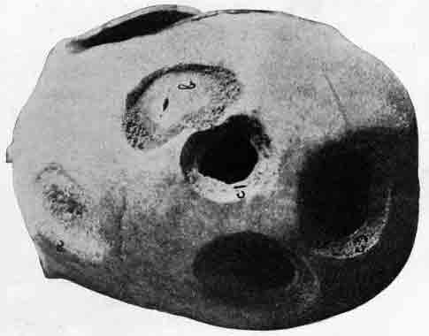
第１図 以前と最近に穿孔術を行った結果を示す頭蓋骨
この医療は今でも行われている。リュカ-シャンピオニールは北アフリカのカビル人医師に出会い、この医療は今でも彼の部族でふつうに行われているとの話を聞いた。この医師は穿孔術師の息子で手術を４回行い、父親は12回行った。彼は３人の兄弟を持ち、彼らも専門家であった。彼はこれを危険な手術とは思っていなかった。これはしばしば頭痛にたいして行われ、時には骨折にも行われていた。
この手術は時には動物にも行われた。羊飼いはヒツジのよろめき病にたいして穿孔術を行っていた。最近によく行われている現代の脱圧手術は、知られている最古の外科療法と言うことができるであろう。
人間は60世紀ほど前にナイル川の岸で、高度に文明の状態で忘却の大洋から出現した。石器時代の記録で追跡できる数千年にわたる緩やかな上昇過程の後に、文明はナイル川流域に、ミネルヴァのように完全で高度に発展した状態で飛び出した。この隔離された豊穣の地に、新石器時代人は地中海沿岸の身近な民族の上に君臨し、そして銅を偶然に発見したことによって、エジプトは「器具を作り上げて文明を石器時代のぬかるみから立ち上げた。」（エリオット・スミス）我々にとって興味深い事実は、この初期において最もよく知られていたのは医師、指導者、哲学者であり王の友、であり、広く信頼された重要な人物のことである。カイロを出発してナイル川を上ると右側に、メンフィスの後に「歴史で知られている最初の大きな石の構造物」である高さ190フィートの階段ピラミド（第２図）を見る。これはジョセル王の墳墓である。エジプト王朝が「来るべき死を飾る」ために長期にわたって求めた最初のものであった。このデザインはイムホテプ（第３図）によるものであり、彼は古代の霧からはっきりと現れた最初の医師であった。「僧侶としての英知、魔術、賢い格言の作成、医術、建築において、ジョセルの治世におけるこの驚くべき人物は卓越した名声を残したので、彼の名前は決して忘れられることはないであろうし、死後2500年後に彼は医術の神になり、ギリシア人は彼をイモウテスとして、彼らのアスクラピオスと同じであると考えた。」(3)彼は人気ある神となり、生きているときには治療者であるだけでなく、死後の旅において彼らの面倒を良く見た。この偉大な医学の発見者についての事実は、クルト・ゼーテの研究(4)から知ることができるだろう。イムホテープはギリシアのアスクレピオスに非常によく対応しているようである。神になったのはかなり後のことで紀元前700年と332年のあいだである。彼の青銅の像が数多く残っている。彼についての最も古い記念物は、彼の僧侶の１人であったアマシスである。エジプト王プトレマイオス５世はナイル川上流のフィラエ島に彼の寺院を奉納した。彼の宗派は後になってもっと増加し、メンフィスの近くに彼のための特別な寺院が作られた。ゼーテによると、イムホテプの宗派は錬金術の文献に着想を与えたようである。イドフの有名なホルスの神殿とイムホテプの関係は興味深い。
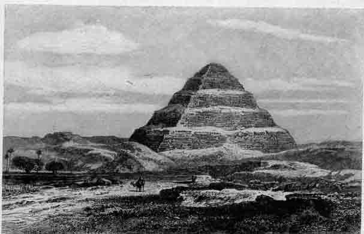
第２図 階段ピラミッド（サッカラー）
エジプトは、文明が地中海の他の人たちに広がる中心になった。何世紀もの長いあいだ、エジプトのすべての知恵に通じていることはすべての知識を持っていることであった。人類の最もはっきりとした高度に大事な多くの考えの源を求めるにはナイル川の国に来なければならない。そこには素晴らしい物質的な文明があるだけでなく、石の中で素晴らしく良く保存された記録は、ガラスの中にあるように、ここは明るくあそこは暗く、人が正義を求める絵、人の道徳的な目覚め、社会正義のためや個人の権利を認識するための戦いの始まり、を見せる。しかし何よりも他の人たちにくらべて、より初期により強く死を見る信仰を発展させ、彼らの尊い記念物は今日まで続く証明になっている。これらのすべてのことから、医術の知識の進歩があったことは驚くことではない。しかし自然についての観点が誤っていたので、病気の知識は粗末で原始的であることを、エジプト文明は示している。まず僧侶と医師は同じであり、医学は宗教から完全に分離していなかった。後の時代になって初めて、僧侶の団体の一員ではない特別のグループの医師たちが出現した(5)。マスペロによるとエジプト人は病気と死は自然ではなく避けることができないものと信じ、自然または目に見えない代理者を使ったり非常にしばしば目に見えない世界に属している、ある種の悪の影響によって起きるものであると信じていた。「しかし、しばしばこれは目に見えない世界に属し、その攻撃が悪性であることによって判るようになる。生きている人間に悪賢く入り込んだり、抵抗できない暴力で人間に覆いかぶさるのは、神、精霊、死者の魂である。ひとたび身体に入り込むとこの悪い影響は骨を壊し、骨髄を吸い、血液を呑み、腸管や心臓を齧り、肉体を食べる。病人はこの破壊作用の進行によって衰え、回復できない障害を、この悪の天才が与える前に追い出さない限り、病人は急速に死亡する。従って病人を取り扱う人は同じように為さねばならない２つの重要な任務を持つ。先ず彼は所有する霊の本質を見つけなければならないし、もしも必要ならその名前を知り、次に攻撃し、追い出し、さらに破壊までしなければならない。彼は強力な魔術を使ってのみ成功できるので、呪文を唱え魔除けを作る専門家でなければならない。次に彼は不思議なものの存在によって身体に作られた混乱と戦うために、医術（薬と食物）を使わなければならない」(6)。

第３図 イムホテプ
このようにして病気は敵意をもった魂によるものであるか、神の怒りが原因であると信じられ、従って医薬はいかに有力であっても痛みを和らげるだけが期待され、呪文やまじないや祈りのような魔術だけが、病気を取り除くことができるとされた。経験だけが我々の経験的と呼ぶ英知を持ち来たし、何千年にわたる記録はエジプト人が吐剤、下剤、浣腸、利尿剤、発汗剤およびさらには瀉血まで使っていたことを示している。彼らは動物、植物、鉱物から得た豊富な調剤書を持っていた。後には専門化が目立って進み、ヘロドトスによるとこの国には多くの医師がいて、「ある医師は眼病だけを取り扱い、他の医師は頭、歯、腹、または内臓の病気だけを取り扱っている。」
エジプト医学についての我々の知識は、主としてこの主題を専門的に取り扱っている素晴らしいパピルスから得られている。これらのうちで６つまたは７つは第１級の重要性をもつ。もっとも有名なのはエーベルスが見つけたもので紀元前1500年のものである（第４図）。最高の文書でありライプチヒ図書館の重要な宝物である。20.23メートルの長さ、30センチの高さであり、保存は素晴らしく良い。他にカフン、ベルリン、ハースト、大英博物館のパピルスである。これらはすべて今では刊行されており、最後のものはレジンスキ(7)により編集され最近に刊行された。これらの素晴らしい文書がどのようなものであるか写真で示すことにする（第４図）。これらに多くのものが集められていて、多くの病気にたいする呪文、お守り、魔術祭文、シンボル、祈り、および処方で一杯である。調剤書の内容が豊富であり薬学の技術が高度に進化していたことに我々は感銘を受ける。うがい薬、軟膏、吸入剤、座薬、燻蒸剤、吐剤、湿布剤、絆創膏があり、彼らは阿片、ドクニンジン、銅塩、海葱、およびヒマシ油の使い方を知っていた。外科学のあまり高度に進歩していなかったがメスおよび実際の焼灼は自由に使われていた。眼病の手術は専門家によってなされパピルスには眼炎の多くの処方が存在する。
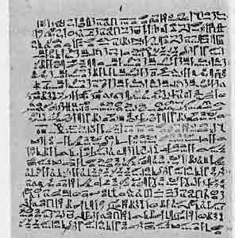
第４図 エベルス・パピルスの最初の部分
エジプト医学において１つの分野が高度に発達していた。衛生学である。住居、都市、および個人の清潔は法律によって規制され、頻回の入浴、全身をそること、衣服を完全に洗うこと、について僧侶は素晴らしい実例になった。ギリシアの歴史家ディオドロスが述べているように、彼らの生活様式は一様に規制されていて、法律家というよりは学のある医師が行っていたかのようであった。
世界全体で見られる２つの医療様式は古代エジプトで初期の実例が見られた。このうちの最初のものである魔術は原始人の自然にたいする態度であり、実際に彼の宗教であった。彼は不変の法則という考えは持っておらず、周囲の世界は彼自身のように変化する不安定なものであり、「好むような生活を行うことによって彼自身の外にあるこれらの力を喜ばせ機嫌をとったりまたは強要することができる」(8)とみなしていた。
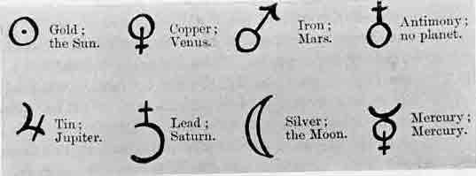
第５図 金属および天体を示すシンボル
我々に興味ある点は、ピラミド文書の６つ折の内容の１つが魔法に関係することである。この文書は「我々に残された人間の考えの最古のものであり、認識できる人間の英知の歴史において達することができる最も遠いもの」である(9)。とくに死者を導くことにおける魔術の有効性への信念は深いものであった。死者はお守り、祈り、ピラミッド文書の儀式によって口腔を整えているので、これだけでも魂は他の世界を通るにあたっての数えられない危険や苦難を免れる栄光を持っていると言われていた。人間は広い意味における魔術の有効性にたいする信念を失わないできた。最も知的な国の非常に少ないものだけがこの足かせを免れてきた。魔術の起源および関係につい「自然の歴史」(10)におけるて大プリニウス以外に誰も次のように明確に表現した人はいない。「さて、このことをよく考えると魔術がこのように非常に大きな要求と権威を持ち続けることは驚くべきことではない。何故かと言うと魔術は中に他に３つの『科学』を持ち、これらは他の何よりも人の心に命令し、心を支配するからである。同様に魔術は、健康を保ち病気を治し予防する医術から最初に根づき進展したものであることを誰も疑わない。世界でありそうな事としてさらに人の心臓に近づき入り込み、普通以上に高度で神的であるという深いうぬぼれを持っていて、すべての他の医術は低級なものであるに過ぎないとしている。そしてこのように道と入り口を作って自分自身を強力にし、我々の天性として最も喜んで聞く美しくへつらいの約束に、見栄えのある色と光沢を与える。さらに習慣および宗教の偽装を加えている。私は次のことを言う。今でも魔術は人の魂を捕らえて世界の大部分を持ち去っている。このようなものは他にない。このような成功および良い進行に満足しないで、もっと力を集め偉大な名前を得るために、魔術は医療の処方や宗教的な儀式、占星術および数学の技術と混じりあって、これらを利用している。すべての人は本性から未来の運命がどうであるかその後にどうなるか気にし知ることを希望していて、このような先見はすべて星の経路と影響に依存していて、これらは将来の最も正しく最も確かな光明を与えていると自分自身を説き伏せている。このように魔術は完全に人たちを捉えて彼らの感覚と理解をこのようにして充分に急速に３重の堅固な鎖で結びつけるので、この術が時とともに重要なものに成長して、大地の大部分の国によってすべての科学の模範および主なものであると言われたし、今日も言われている。地中海東岸レヴァントの強力な王や王国は完全にこれにより支配され統治されている。」
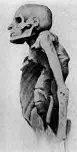
第６図 脊椎が曲がっているミイラ
世界で広範に行われた行為でエジプト人の初期の記録にある第２のものは、分泌物および動物体の部分を医薬品に使うことである。この行為は原始人において非常に古代から行われているものであるが、パピルスで既に述べられていたものは最古の記録である。乾かされ粉にされた唾液、尿、胆汁、糞、身体の種々の部分、蠕虫、昆虫、ヘビ、は調剤書の重要な成分であった。これらの行為は古代世界において非常に広がっていた。その広がりや重要性が良く集められたものは大プリニウスの「自然の歴史」であろう。幾つかの治療法は人由来のものを使うと記され、他にゾウ、ライオン、ラクダ、ワニ、からのものがあり、79はハイエナから作られていた。この行為は中世を通じて広く行き渡り17世紀だけでなく18世紀の薬局方にすら多くの異常な構成分が含まれていた。モーゼス・チャラスの「ロイヤル薬局方」（ロンドン、1678）はこの当時に最も科学的なものであったが、臓器療法および最もむかつく排泄物からの薬品製造法で一杯であった。奇抜なこととして、ミイラの発見とともに粉にしたミイラが種々の病気に有効であるという信念が起きた。トマス・ブラウン卿は彼の「骨壺（Urn Burial）」に「ミイラは商品になった。ミツライム（＊エジプト人）は傷を治し、ファラオは香料として売られた。」と書いている。
奇妙なことに毎日使っている処方様式の１つにエジプト人からのものがある。オシリス神の伝説によると若いホルス神は Set との戦いで目を失った。この目は自己犠牲のシンボルとしてこの国では神聖な甲虫に次ぐ最も普通のお守りになり、すべての博物館にはガラスまたは石のホルスの目が数多く存在している。
「錬金術すなわち化学が生まれたのはエジプトであり、この国の古い名前の Khami（＊異説がある）がギリシア人の手に渡り、続いてアラビア人に渡り、処方を示す Rx の標識はこれに伴った。これはまたあるていどエジプトの初期キリスト教教会のグノーシス派によっても使われた。これは筆記体で占星術学者プトレマイオスの訳本に惑星の木星を表す記号として見られる（第５図）。このようにして天宮図の上に記されたり、身体に取り込む薬を含む処方に記されてこれらの薬の有害な性質がこの幸運の星の影響によって取り除かれるようにした。現在は少し変形した形（Rx）で英国の処方の上端に記入されている。」(11)
何世紀にもわたってエジプトの医師たちは高名であり、オデュッセイアでトニスの妻ポリダムナはエジプトのヘレンに薬草を与えて言った。「無数の薬を作る国……どの医師も全ての他の男たちより知識がある。」エレミヤ書（xlvi, 11）はエジプトのおとめが多くの薬を使っても無効なことを述べている。ペルシア王ダレイオスは宮廷に世界中で最も有能な医師とみなすエジプト人たちを抱えていて次のように言っているとヘロドトスは書いている。「彼らのあいだで医学は個別の計画でなされている。それぞれの医師は１つの病気を取り扱ってそれ以上は行わない。従って国には沢山の医師がいて、あるものは目の病気を治し、他のものは頭、他は歯、他は腸、そしてあるものは局所的でないものを取り扱う」(12)。
素晴らしい発言が大プリニウスによってなされている。「肺病」すなわち肺の潰瘍を治癒させると言われていたハツカダイコンの使用についての議論の中で、次のように書いている。「KK がエジプトを訪ねたときに、死体を切って解剖をして、その男が何の病気であるか調べ、そのことについての証明を行なっているのを見た。」
ミイラの解剖学は古代エジプト人たちの病気について非常に興味深い光を当てた。最も多い病気の１つは変形関節炎であった。このことはエリオット・スミス、ウッド・ジョウンズ、ラッファおよびリエッティによって研究された。この病変の大部分は普通の変形関節炎であり、人だけでなく神殿におけるペット動物にも見られた。現代にくらべると明らかに高い頻度で脊柱が関係していた（第６図）。象形文字において老人として「決定的」なものは変形関節炎にかかった人の絵であることは興味深いことである。これらの著者によると結核、くる病、梅毒の事実は見つかっていない。
内臓の研究をしたのはラッファであり、彼は石灰化した動脈硬化症が8500年前に普通の病気であることを示した。彼はまたこれが重労働にもアルコールにもよらないとした。何故かと言うと古代エジプト人は蒸留酒を飲まなかったし、彼らは現在のエジプト人と実際に同じ労働時間であったし７日毎に休日だったからである。
医学の興隆において同じように重要なのは、ほぼ同じころのメソポタミア文明である。この国の科学はナイル川沿岸よりもずっと高度な段階にあった。宇宙の詳細な体系が考えられていた。これは神の意思によって作られた体系であって、天と地を同様に導き制御する法則が初めて認められた。ここでも医術は宗教に付属していた。病気は悪い霊すなわちデーモンによるものであった。「これらの『デーモン』は現在の『病原菌』とか『微生物』に相当するものであり、僧侶が唱える呪文は古代における医師の処方に相当するものであった。病気によって呪文は異なり、大衆にとって神秘的なことは、現在の医師の処方は判らないが、信頼する患者にとっては神秘的なのと同じである。実際のところ、この神秘的な性質はデーモンを追い出すと考えられる呪文に力を加えた。呪文を唱えると一緒に医薬品による治療が行われたが、エジプト人やバビロン人のように古めかしい古代の国で、普通の病気の診断や治療にかなりの進歩が見られ、後になり広範な薬理学の発展に導かれた。しかし病気の治療が僧侶の手にある限り、儀式にともなって同情的魔術の頭の下に都合よく纏められた聖なる祭文は、処方された薬の摂取と同じように重要なものとみなされた。」(14)
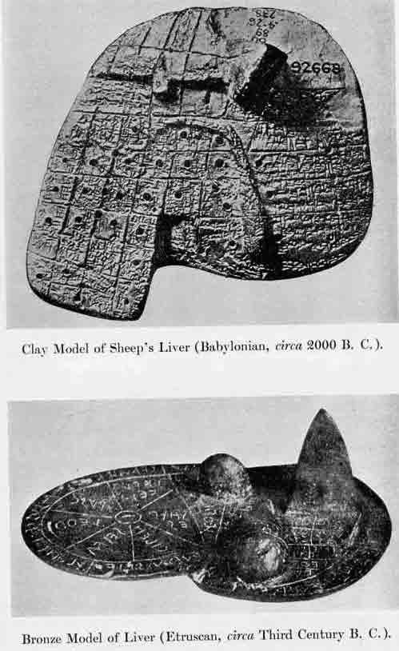
第７図 ヒツジの肝臓の粘土モデル（バビロニア、紀元前約2000年）および青銅モデル（エトルリア、紀元前３世紀）
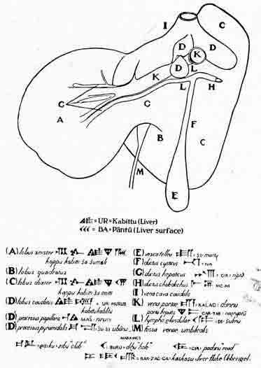
第８図 ヒツジの肝臓の図。現在の解剖用語とそれに対応するバビロニア語
バビロニア医学と関係して３つの興味ある点を述べることにしよう。解剖学についての最初に記録された観察は予言の術、すなわちある徴候を解釈して将来を研究すること、に関係している。研究者は２種の予言の方法を区別する。第１は無意識なものであって、天の現象や夢などのように我々に注目を迫る徴候の解釈である。他は意識的な予言すなわち徴候を探し求める方法、もっと言うと犠牲に捧げた動物の観察によるものである。この方法はバビロン人のあいだでは特に発展していて、この宗派はエトルリア人、ヘブライ人、そして後にはギリシア人、ローマ人に広がった。
観察した犠牲動物の臓器のうちで、肝臓は大きさ、位置、血液の豊富なこと、から身体の最も重要なものとして古代の観察者たちを感銘させた（第７図）。血液の多いことから恐らく生命の存在部位（座）、すなわち魂の存在部位として実際に認識された。肝臓はこの重要な位置から何世紀にもわたり動かされることはなく、ガレノス生理学では心臓および脳とともに自然精気、動物精気、生命精気、の３重の制御を分けあっていた。文献の表現はこの信念がいかに堅固であったかを示している。バビロン人のあいだで「肝臓」という言葉は賛歌や文章で使われ、我々が「心臓」という言葉を使うのと同じであった。ヤストロフはヘブライ語、ギリシャ語、ラテン語における数多くの使用例をあげている。
犠牲動物でこの重要な臓器を観察することによって、未来に起きる事柄の経過を予言できるという信念が生まれた。「生命の座としての犠牲動物の中にある生命または魂は、動物体内における神的な要素であり、捧げられた動物を受け取ることによって、神は自己をその動物と同じとみなす、いわば同一になる。この動物の生命はその人自身の生命の反映であり、人の運命は神に依存するので、もしも人が神の心に入ることに成功できて神が何をしようとするか確かめたら、将来がどのように蓄えられているかの問題を解く鍵が見つかっているであろう。肝臓は活力の中心である、すなわち心の座であり、従って感情の座でもあるので、犠牲動物の場合には犠牲を受け取った神の心と直接に同じであったり、いずれにしても神の心が写されるか、または他の比喩を使うとすると第２の時計と共感的で完全に同期する時計、となる。従って犠牲動物の肝臓を読むことができると、いわば神の意思の仕事場に入ることになる。」(15)
肝臓の観察はこのようにバビロン人のあいだでは著しく複雑であり、ヒツジの肝臓が研究され、占いの儀式において肝葉、胆嚢、上葉の突出、および斑紋を異常なほどの注意をもって観察された。ここに示した最も古い解剖モデルは紀元前2000年ごろの占い文がついているヒツジ肝臓の粘土製である。ヤストロフはバビロン人の用語に対応して現代解剖用語を記載している（第８図）。何らかの点で決定に達するにあたっては、肝臓の観察の現象を注意深く記録し、その解釈はどちらかと言うと自然で独創的な考えによってなされた。たとえば胆嚢の右側がふくらんでいたら王の軍隊の力は増していて、都合の良い状態である。もしも左側であったらどちらかと言うと敵が成功していて、都合が悪い。もしも胆管が長かったら長命を示している。胆石はしばしば預言書に述べられていて、都合が良いこともあるし悪いこともある。書記によって種々な解釈が集められて参考ノートに書きこまれて、前兆を解釈するガイドや寺院学校における教育のための教科書に使われる（ヤストロフ）。
予言術は近在の諸国に広がった。この行為について聖書に多く記載されている。モアブとミディアンの兄たちは「予言の謝礼を手にして」バラムに来た（民 xxii, 7）。ヨセフの予言カップがベニヤミンの袋にあった（創 xliv, 5, 12）。バビロニア王が分れ道に立って肝臓を見た（エゼ xxi, 21）。肝臓の観察はまたエトルリア人によって行われ、彼らからギリシア人とローマ人に広がり、多かれ少なかれ意味のない形になった。しかしヤストロフによるとバビロニアおよびアッシリアで肝臓は何千年において予言の唯一の臓器として絶えず使われて、この儀式が衰えたり僧侶によって誤用された徴候は無いとのことである。
ローマ時代にフィロストラトゥスはテュアナのアポロニオスが皇帝にたいして魔法を行うにあたって、少年を犠牲にして肝臓観察をしたとして告発されたことを書いている(16)。「肝臓は専門家の言うところによると予言において神託を告げる祭壇そのものではないし、純粋な血液だけからなるものではない。心臓はすべての汚染した血液を留めて、動脈である導管を通じて全身を潤しているからである。これにたいして胆嚢は肝臓の近くにあり、怒りにより刺戟され、恐れによっては弱められて、肝臓の窪みに入る。」
暗闇の神秘力にたいして魔除けやお守りがいかに古くから広範囲に信じられてきたかをこれまで見て来た。極めて強固に信じられてきたことを示すのは「
バビロニアおよびアッシリアによる医学への第２の貢献は、天体が人間の福祉に影響を及ぼすことに関連したものであり、人類に深い影響を及ぼした。星の経路が人間の為に働くか、または反対して戦うという信念は、文明の初期に起きたものであり、占星術および数学の研究から直接に生まれたものである。「神の光栄を告げる」天体すなわちマクロコスモスはミクロコスモスすなわち人の毎日の生活を鏡として反映する。最初の段階は太陽、月、星を
ペルシア人による合理化影響に伴って占星術の影響は弱まり、ヤストロフによるとヘブライおよびギリシアの考え方の結合によって、僧侶たちはペルシアの占領が続く３世紀のあいだに占い師としての職業と天文学者としての職業を交換するようになり、ここで宗教と科学の確執が始まった。最初に原始科学である占星術の表現はまだ人間の心が立ち去ってはいない迷信となった。占いと違って占星術はヘブライ人にはあまり感銘を与えなかったようであり、はっきりとした記載は聖書に殆ど存在しない。占星術はバビロニアからギリシアに移入されたものの、ギリシア医学にはとくに影響を与えなかった。英語には disaster（＝災難）のように星と関係するギリシア語由来の単語が少なくない。
ヨーロッパへの占星術の導入に目下の興味がある。明らかにギリシア人はバビロニア人と接触する前に天文学で重要な進歩をとげていた。バビロニア人がギリシア人から宇宙の科学的概念を得たことの可能性は全く高い。「バビロニアとアッシリアでは占星術が最初で天文学が後であったが、ギリシアでは逆であった。天文学が最初で占星術は後であった（ヤストロフ）。」
ギリシア人に接触する前に、個人に関係する
この時からルネッサンスまで占星術は影のように天文学に従っていた。同じことの２つの様相として、一方で天文学に相当している自然占星術は天の研究を行い、他方で判断占星術は
前に述べたように輝かしい時代のギリシア科学は占星術の悪い様相とは完全に関係が無かったようであった。ギルバート・マレイは「占星術はギリシア人の心にとってある遠い島の人に新しい病気が落ちてきたようなもの」と言っている。しかしギリシアがローマ人の心を征服したときに占星術は重要な役割を果たした。偉大なギリシア化運動の一部として占星術がローマに来て、これが盛んになったことは紀元前２世紀の中葉にすでに占星術者にたいする布告が出されたことに示される。最近に刊行されたマニリウス（１世紀ごろのローマの詩人）のアストロノミコン第２巻への解説で、ギャロッドはこの宗派の進展を追ってこれがローマ帝国で流行していたことを示した。「これらの天の標識は我々から遠く離れているが、彼（神）はこれらの（＊天の）影響を感じさせて、国々にその生活と運命を与えそれぞれの人に個人の性質を与えている。」(20)神託は木を植えるのからウマの交配まですべての場合に求められ、星の学問は一般人の考えから宗教のすべての段階で深く影響した。大プリニウス(21)が言っているように占星術の専門家はカルデア人、エジプト人、ギリシア人であった。エトルリア人もまたローマの専門占い者であってこの科学を育てた。これらの「占いをするイシス女神（Isiaci conjectores）」および「彷徨う占星術師（astrologi de circo）」は価値のないペテン師であったが、全体的にこの科学はこの時代の人たちに注目された。古典学者ギャロッドはタキトゥスの注目すべき文章を次のように引用している。「私の判断は動揺している。これが運命であり人の経過の変化を支配する必然的な不変のものであるか、または偶然に過ぎないかを敢えて言うことはできない。古代の賢人たちのあいだでも彼らの猿真似をする人たちのあいだに意見の相違があることを見るであろう。我々の始まりから終わりまで、すなわち人間そのもは神と全く比べ物にならないことで、多くの人の考えは一致している。悪人は栄え善人は苦難に出会う。他の人たちは運命とこの世界の事実は一緒に作用すると信じている。しかしこの関係を彼らは星の影響に求めないで自然の原因の連鎖に求める。我々は自由な生活を選ぶ。しかしひとたび選択がなされると我々を待つものは固定され整然としたものになる。善と悪はそれらについての一般的な意見とは違う。しばしば、不幸と戦うものは祝福されたものと考えられる。しかし多くのものは繁栄しているにしても不幸である。勇気をもって不幸と戦うことが必要であり、愚者は富の中で駄目になる。これらの競争相手の学派の外には街の人がいる。誰も彼から生まれたときに将来が決まっているという確信を奪うことはない。予言したことと違うようなことが起きたら、知らないことを話した人が騙したのである。過去においても現在にも輝かしい証明のある科学を軽蔑したのである。（年代記. vi, 22）」
カトーはギリシア医師に戦をいどみ「占い者」（haruspex, augur, hariolus, Chaldaeus）になることを禁じたが、成功しなかった。信念が広がっていてストア哲学者のうちで大哲学者のパナエティウスと彼の2人の友達だけが占星術は科学であるという主張に反対した（ギャロッド）。数学もまた予言に密接に関係すると見られて冷遇され、数学者に死刑宣告をするテオドシウス法が通過した。中世までの長い期間における占星術と予言とのあいだの同じ邪悪な同盟が数学を疑わしいものと考えさせ、哲学者アベラールさえも数学を邪悪な研究と呼んでいる。
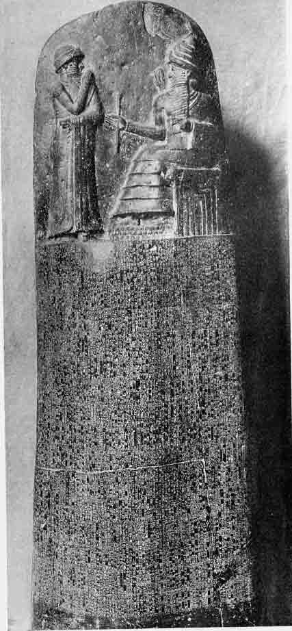
第９図 ハムラビ法典（紀元前約2000年）
バビロニア医学の３番目に重要な点は有名なハムラビ法典（紀元前2000年ごろ）が提供する事実である（第９図）。これは民法および宗教法の法律集であり、多くは医師に関係している。この驚くべき文書は８フィートの黒閃緑石からなり、嘗ては表面に21段、裏面に16段および28段、全部で2540行あったが、現在では1114行が残っている。上部には太陽神からこの法律を受け取った王の像が飾られている。このコピーの幾つかがバビロビアに置かれていて、「虐待または傷つけられて苦しみを語ることができるものは誰でも、ここに来て正義の王のこの像の前に立って、王の価値のある命令を読み、ここに書かれた記念碑から問題を解決するように」（ヤストロフ）とのことであった。この法典が制定されていることから、医師が高度に組織化されていたに違いないことを知る。医療が詳細な点まで管理されただけでなく報酬の額まで定められ、医療過誤にたいする罰も定められていた。手術が行われ、獣医の医療も認められていた。「眼には眼を、骨には骨を、歯には歯を」というこの法典の驚くべき特徴である「報復法（lex talionis）」を現在の我々が逃れていることは幸福であり興味深い。
この法典にある幾つかの法律を引用しよう。
215項 もしも医師が紳士の重い傷を青銅のメスで処置してその男を治したり、紳士の眼の膿瘍を青銅のメスで開いてその紳士の眼を治したら、銀10シェケルを受け取る。
218項 もしも医師が紳士の重い傷を青銅のメスで処置してその男を死なしたり、紳士の眼の膿瘍を青銅のメスで開いてその紳士の視力を失わしたら、彼の手を切る。
219項 もしも医師が貧しい男の奴隷の重い傷を青銅のメスで処置してその男を死なしたら、彼は奴隷の代わりに奴隷を与える。
220項 もしも医師が彼の膿瘍を青銅のメスで処置してその男の視力を失わしたら、彼はその奴隷の半値の金を払う。
221項 もしも医師が紳士の滅茶苦茶になった手足を治したり胃腸病を治したら、患者は銀５シェケルを医師に払う。
224項 もしもウシの医師またはヒツジの医師がウシまたはヒツジの重い傷を処置して治したら、ウシまたはヒツジの所有者は銀６分の１シェケルを医師に治療代として払う(22)。
218項 もしも医師が紳士の重い傷を青銅のメスで処置してその男を死なしたり、紳士の眼の膿瘍を青銅のメスで開いてその紳士の視力を失わしたら、彼の手を切る。
219項 もしも医師が貧しい男の奴隷の重い傷を青銅のメスで処置してその男を死なしたら、彼は奴隷の代わりに奴隷を与える。
220項 もしも医師が彼の膿瘍を青銅のメスで処置してその男の視力を失わしたら、彼はその奴隷の半値の金を払う。
221項 もしも医師が紳士の滅茶苦茶になった手足を治したり胃腸病を治したら、患者は銀５シェケルを医師に払う。
224項 もしもウシの医師またはヒツジの医師がウシまたはヒツジの重い傷を処置して治したら、ウシまたはヒツジの所有者は銀６分の１シェケルを医師に治療代として払う(22)。
旧約聖書の医学はエジプトおよびバビロニアの両方の影響を受けている。社会衛生はピラミド文書およびパピルスのものに基づく規制の写しである。モーセ五書の法典にある規制は部分的には原始時代に戻っているが、部分によっては衛生学の進歩した見解を示している。モーセ五書の法典が実際にモーセの時代に遡るものであるかは疑問もあるが、誰かが「エジプト人の英知を学んだ」ことは確かである。ノイブルガーは簡単に次のように要約している。
「（＊モーセの）コマンドは疫病の予防と抑制、性病および売春の抑制、皮膚や食事や住居や衣服の用心、労働や性生活や人々の規律の規制、などなどについてである。安息日の休み、割礼、食物についての規則（血液および豚肉の禁止）、月経中および妊娠中の女性および淋病患者についての方針、ハンセン病患者の隔離、野営地の衛生、は気候条件を考えると驚くべく合理的である。」(23)
占いは非常に広範には行われなかったが疑いもなくバビロニアから借用していた。ヨセフの盃はこの目的に使われ、民数記でバラク王は予言の報酬を手に持ってバラムの所に行った。魅力および魔法にたいする考え（＊恐怖など）は一般的なものであり、旧約聖書における魔女に対する強い立法化は18世紀および19世紀にもっと合理的な考えが流行するまで彼女（＊魔女とみなされた女性）たちへの考えを殆ど避けられないものにした。
どのように考えるにしても新約聖書における医学は興味深い。占いは使徒行伝（使xvi, 16）で１回だけ述べられただけである。ここで占いの霊により乗り移られた女奴隷が占いをして「主人たちに多くの利益を得させていた。」星占術は１箇所だけで述べられている（使vii, 43）。魔女たちは居ないし、魔除けも呪文も無い。述べられている病気の数は多い。悪魔の乗り移り、痙攣、麻痺、ハンセン病のような皮膚病、浮腫、出血、発熱、下痢、盲目、聴覚障碍、である。治療はふつう単純で主の命令であり、稀には祈りを伴い、または唾を伴う。これらはすべて奇跡であり、同じ能力が使徒にも与えられた。「不浄な霊にたいする能力、これらを追い出し、すべての種類のむかつきやすべての病気を治す」能力が与えられた。そしてさらに、盲人が見えるようになり、足の不自由なものが歩けるようになり、耳の聴こえない者が聴こえるようになり、さらに死者すら立ち上がった。権限の問題は無かった。良いことをする者は身体の医師であるとともに精神の医師であり、福音の豊かな約束が満たされるならば科学の新しい施し物を必要としなかった。このことはこの世界の子供たちが厳しい言葉を受け入れることが出来ないからであろう。貧困、謙遜、平和の強調をキリスト教は創始者の原則と同じていどに行為において接触を失っている。しかし何世紀かのあいだ全てにおいて教会は使徒による治癒の主張を捨てなかった。捨てなければならない理由が無かった。奇跡を行う力を持つ人たちにとってタイム・リミットは無く信仰を動かすのは容易でなかった。ただ条件が変化しただけで現在は山があるだけである。今でもこの感情は大事にされていて、偉大な英知を持つ人たち、例えば親友であるニューヨークのジェイムズ・Ｊ・ワルシュ博士がルルドの奇跡を信じていること(24)は人生のスパイスや多様性に大きさを与えている。数週前にロンドンの主教が聖ジェイムズの行為と似たことをして成功したと言われている。病気にたいする態度は常に広範に多様でありしかも増えていることを示す例である以外に、このことは我々にあまり関係はない。病気についての東洋の観点は科学医学の興隆には殆ど影響がないからである。奇跡の話には医学用語が使われ医学的表現で飾られたが、病気にたいする心の態度はヒポクラテス支持者のものではないしディオスコリデスの科学で訓練された同時代者ではもちろんない(25)。
中国の医学は高度に理性的な人々が、宗教的な禁制によって考察ならびに推測が制限されているときに達するであろう状態を示している。たぶん研究における主な興味は古代にエジプトやバビロニアで行われたものに似てはいるが今日でも実際に残っていることを見るであろう。中国人は全自然界のアニミズムを信じ、すべての部分は神および幽霊によって生命を与えられており、悪魔は至る所に無数に群をなしている、と考えている。宇宙は
中国におけるアニミスム宗教においてウ（＊巫＝シャーマン？）は一群の男女を指し霊社会において他の人たちが持たない能力と権力を持っている。巫術師の多くは医師であり魅力と魔力の他に生き返る薬草を使う。ウ主義は非常に大昔からある点で外観を変えてきたが基本的な性質は変わっていない。巫は悪魔祓いの医師であり医術の実行者として古典において孔子の時代に遡ることができるだろう。魅力とまじないの他に有名な詩があって繰り返され唐時代のハン・ユ（＊韓愈？）によるものは特に有名であった。ド・グルートによると「リン」（＊霊）の作者は大官であり中国における最高の知識人であったので、この詩文の魔力はきわめて大きかったとのことであった。この解熱作用を持つ詩はド・グルートによって全訳され、熱の悪魔は主として秋に力強くて、深い川の明るく透明な水から立ち去るようにと警告される。
唐時代において宮廷の医師団に４階級の専門医がいて２つの医学主任団に属していた。内科、鍼、触診の専門医たちと呪文で欲求不満を直す２人の専門医であった。
予言および悪魔祓いは紀元前５世紀および６世紀にまで起源をたどることができるだろう。
疫病流行のときに巫主義の専門家は預言者、占い者、悪魔祓いとして、腰まで脱ぎ、半狂乱の無意識状態で刺のある球を使ったり舌に針を深く挿し込んだり、針の上または剣の上に座ったり寝たりして血を浴びたりして、行進に加わった。このようにして彼らは病気の幽霊を驚かせた。彼らの殆どすべては若くて「神聖な若者」と呼ばれ、その地方の幽霊たちがその世界の機構において悪さをする方針に基づいて悪魔祓いの魔術を使う（ド・グルート）。
悪からの免疫を与え、生まれるのが良い年であったか、４つの２重の円形の文字が支配しているか、天球が「重い」か「軽い」かどうかは、
２３の特別な点を述べよう。脈の理論は著しく発展し、全医療は脈の異なる性質を中心とするものであった。多数の変種があってその複雑さおよび詳細なことは、古代ギリシア・ローマの著者のあるものの複雑な体系のように混乱を起こすものであった。それぞれの部分や臓器はそれに特有な脈を持っていて、人体はちょうど弦楽器においてそれぞれの和音が特有な楽音を持っているのと同様であるという基本的な考え方であり、脈が調和していたら健康であり不協和であったら病気である。これらの中国の考え方は17―18世紀にヨーロッパに到来してフロイヤーの有名な本(27)に詳細に述べられている。そして18世紀に脈のハーモニーの考え方が受け入れられた。
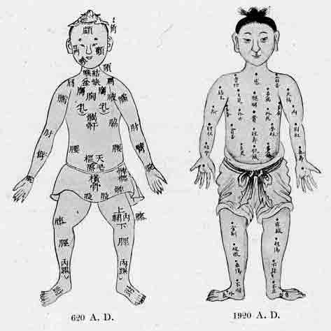
第10図（左）第11図（右）中国の鍼療法の図 1300年の間（紀元620-1920）、持続している
臓器療法はエジプトにおけると同じように中国でも広範に行われた。臓器の部分や種々の分泌物や排泄物が非常にふつうに使われた。ある有用な療法が著しく発展した。すなわち鍼術であり、細い針を患部にあるていど深く挿し込む治療法である。体表面には鍼術を行うことができる約388箇所があり、長い経験によりどこが危険であるかが教えられ、たとえば動脈は避けるべき経路として示されている（第10図）（第11図）。中国人はすでに11世紀に天然痘予防のための種痘を行っていた。
中国医学をできるだけ短くスケッチしただけで本当に理性的な人々を何千年もあきれるほど停滞させ不毛にしていたという感想が得られる。今日の中国人がエベルス・パピルスを書いた時代のエジプト人よりもずっと進歩しているかどうかは疑わしい。ある観点からすると解剖学、生理学、病理学を知らない状態でどうなるかは興味深い実験である。
初期の日本医学で中国医学と異なるものは多くない。最初は純粋に呪術的であり、治療は後になって鍼および詳細な脈の研究を特徴とした。主として中国に由来する大量の文献が存在し、キリスト教の初期に相当する古いものもある。ヨーロッパ医学はポルトガルおよびオランダから導入され、これらの国の「工場」または「会社」の医師が医療に影響を与えた。大きな刺激になったのは1771年に臓器がヨーロッパの解剖図の示すような位置にあって、中国の図は正しくないことを前野が示したことであった。翌日にクルムスの解剖学書の日本語訳が始まった。1773年におけるこの翻訳の出現から医学の改革が始まったと言うことができよう。1873年にゴルターの内科書が翻訳された。いわゆる「開国」の前にヨーロッパの医学書が出版されたことは興味深い。1857年にオランダの医学校が江戸に開かれた。1868年の維新以後に日本は科学的な医学を進歩させ、その大学や教員たちは今では世界において最も有名なもののなかに入っている(28)。
(1) Sir E. Ray Lankester: Romanes Lecture, "Nature and Man," Oxford Univ. Press, 1905, p. 21.
(2) Lucas-Championniere: Trepanation neolithique, Paris,1912.
(3) Breasted: A History of the Ancient Egyptians, Scribner, New York, 1908, p. 104.
(4) K. Sethe: Imhotep, der Asklepios der Aegypter, Leipzig, 1909 (Untersuchungen, etc., ed. Sethe, Vol. II, No. 4).
(5) Maspero: Life in Ancient Egypt and Assyria, London,1891, p. 119.
(6) Maspero: Life in Ancient Egypt and Assyria, London,1891, p. 118.
(7) W. Wreszinski: Die Medizin der alten Aegypter, Leipzig,J. C. Hinrichs, 1909-1912.
(8) L. Thorndike: The Place of Magic in the Intellectual History of Europe, New York, 1905, p. 29.
(9) Breasted: Development of Religion and Thought in Ancient Egypt, New York, 1912, p. 84.
(10) The Historie of the World, commonly called the Naturall Historie of C. Plinius Secundus, translated into English by Philemon Holland, Doctor in Physieke, London, 1601, Vol. II, p. 371, Bk. XXX, Chap. I, Sect. 1.
(11) John D. Comrie: Medicine among the Assyrians and Egyptians in 1500 B.C., Edinburgh Medical Journal, 1909, n.s., II, 119.
(12) The History of Herodotus, Blakesley's ed., Bk. II, 84.
(13) Pliny, Holland's translation, Bk. XIX, Chap. V, Sect.26.
(14) Morris Jastrow: The Liver in Antiquity and the
Beginnings of Anatomy. Transactions College of Physicians, Philadelphia, 1907, 3. s., XXIX, 117-138.
(15) Morris Jastrow: loc. cit., p. 122.
(16) Philostratus: Apollonius of Tyana, Bk. VIII, Chap.VII, Phillimore's transl., Oxford, 1912, II, 233. See, also, Justin: Apologies, edited by Louis Pautigny, Paris,1904, p. 39.
(17) M. Jastrow: Aspects of Religious Belief and Practice in Babylonia and Assyria, New York, 1911, p. 210.
(18) M. Jastrow: Aspects of Religious Belief and Practice in Babylonia and Assyria, New York, 1911, p. 256.
(19) Ibid., pp. 257-258.
(20) Manili Astronomicon Liber II, ed. H. W. Garrod, Oxford,1911, p. lxix, and II, ll. 84-86.
(21) Pliny: Natural History, Bk. XVIII, Chap. XXV, Sect.57.
(22) The Oldest Code of Laws in the World;translated by C.H. W. Johns, Edinburgh, 1903.
(23) Neuburger: History of Medicine, Oxford University Press, 1910, Vol. I, p. 38.
(24) Psychotherapy, New York, 1919, p. 79, "I am convinced that miracles happen there. There is more than natural power manifest."
(25) See Luke the Physician, by Harnack, English ed., 1907, and W. K. Hobart, The Medical Language of St. Luke, 1882.
(26) J. J. M. de Groot: Religious System of China, Vol. VI, Leyden, 1910, p. 929.
(27) Sir John Floyer: The Physician's Pulse Watch, etc., London, 1707.
(28) See Y. Fujikawa, Geschichte der Medizin in Japan, Tokyo, 1911.
「ギリシア人よ 輝かしい人たちよ！（O Gratiae gentis decus!）」ギリシア思想の偉大な解釈者のルクレティウスと共に歌おう。彼の賛歌は如何に大きく如何に真であろうか！
夜から、暗くなる夜から
そなたののろしが煌く――万歳、愛する光
ギリシアおよびギリシア人の。万歳、暗闇で
そなたよ、代償はすべての谷とすべての峰に。
そなたは私の指導者であり、足跡は輝く
そこに私は私の足跡を……
世界は読むために輝き、読んでいる、
そなたの子供たちの目の前にそなたは広がり
知識の実りあるページ、全ての豊富な
知識、すべては彼らの豊かなパンである。（第 の書――D. A. Slater 訳）
の書――D. A. Slater 訳）
暗い幻影で重い東洋の夜から出よう、
西洋の明るい陽の光へ、人たちの仲間へ、
彼らの考えを我々の考えにし、
彼らの習慣を我々の習慣にし、
自然をはっきりとした心の目で最初に見た人たちへ。
そなたののろしが煌く――万歳、愛する光
ギリシアおよびギリシア人の。万歳、暗闇で
そなたよ、代償はすべての谷とすべての峰に。
そなたは私の指導者であり、足跡は輝く
そこに私は私の足跡を……
世界は読むために輝き、読んでいる、
そなたの子供たちの目の前にそなたは広がり
知識の実りあるページ、全ての豊富な
知識、すべては彼らの豊かなパンである。（第
の書――D. A. Slater 訳）暗い幻影で重い東洋の夜から出よう、
西洋の明るい陽の光へ、人たちの仲間へ、
彼らの考えを我々の考えにし、
彼らの習慣を我々の習慣にし、
自然をはっきりとした心の目で最初に見た人たちへ。
ブラウニングの有名な詩「チャイルド・ローランド暗黒の塔に来たり」は大地の暗い場所から陰鬱な道を通り、デーモンに悩まされ、何代にもわたる失敗の残骸に悩まされた、巡礼の喩え話である。彼の耳には全ての失敗した冒険の弔鐘が鳴っており、彼の仲間は全て暗黒の塔から見えるところで
丸くうずくまった小塔、愚者の心臓のように見えない、
褐色の石で作られて、対応するものが無い
全世界に。
褐色の石で作られて、対応するものが無い
全世界に。
周りの全ての神秘に絶望する。ギリシアのチャイルド・ローランドは唇にトランペットを当てて呼びかけを吹く。シェークスピアもブラウニングも何が起きたかを話さず、古い言い伝えのチャイルド・ローランドはギリシアの精神の肉体化であり、若い心の軽い現代世界の主人であり、彼のトランペット演奏により無知、迷信、偽り、の暗黒の塔は夢のような根拠の無い構造として薄い大気の中に消える。冷やかしの幻影が消えたのではない。彼らは今でも種々な形でそれぞれの世代の道筋を襲撃する。アカイア人のチャイルド・ローランドは人に自信を与え、自然の神秘を解決するには挑戦しなければならないことを人に教える。エジプトのイシスの神殿の入り口に次のように彫り込んであった。「私が何であって来たり、あったり、将来にあるにしても、私のヴェールを誰も持ち上げていない。」
ギリシア人は自然のヴェールを持ち上げた。ここに彼の私たちへの価値がある。何と天才だろうか？ エーゲ海の人たちにどのようにして現れたのだろうか？ 科学が切り取られた岩を知りたい人たちは、「ギリシアの哲人たち」でテオドール・ゴンペルツ教授が生き生きとした言葉で書いた話を読むことができるだろう。この本の第4巻はつい最近に刊行された（マレー、1912；スクリプナー、1912）。1912年にオクスフォードの教師たちのうちの若い１人が書いた「ギリシアの天才とそれの我々への意味」(1)が刊行された。ゴンペルツの４巻を真面目に読むのをひるむ者は、これからギリシア精神のあるものを学ぶことができるだろう。彼の緒論から数行を引用することにしよう。
「ヨーロッパは約400万平方マイルであり、ランカシャーは1,700で、アッティカ（アテネ周辺）は700であった。しかしこの小さな国と世界がその後にそれをモデルとして作ったものは、この小さい国が我々に与えた芸術とたぶん同じであるとしてもそれ以上ではないだろう。この国はすべての領域の考えおよび知識において語彙の主要なものを我々に与えた。ポリティクス、タイラニー、デモクラシー、アナーキズム、フィロソフィー、フィジオロジー、ジオロジー、ヒストリー、はすべてギリシャの言葉である。この国は我々の高等教育を捕らえ、今日まで捕らえ続けた。外国または敵意を持っているものさえにも働きかけ絶え間ない魅惑をもっていた。ローマはその後になり文明を受け取った。若いローマ人はギリシアの学校で教育を済ませた。……そしてローマよりもギリシアに親しみが少ないのは自然であった。聖パウロはヘブライ人中のヘブライ人でありギリシアの英知を馬鹿であると呼んでいたが、彼らのアレオパゴス（アテネのアクロポリスの西方にある丘）に惹きつけられて彼の福音にそのスタイルを取り入れ、外国人の彼らの詩から詩形を取り入れた。彼の後になりヘレニズムに抗議をするために生まれた教会は、そのドグマをギリシア人の言葉に翻訳し、最後にはアリストテレス哲学として結晶化した。」
神々のおもちゃであるにしろ、宇宙という車輪のほぞであるにしろ、これは考えるギリシア人に生命が提供した問題である。その解決を試みるにあたって、ギリシア人は我々の現代文明を作りあげた力を働かした。問題が解決されないで残ったことは、問題と取り組みその機械の法則を研究するにあたって、人間は彼が特に関連している小さな部分の制御を学んでいるという重大なことに比べると、大したことではない。オリエントを覆い隠していた魔術のヴェールは取り去られはしなかったが、切り裂かれ、歴史において初めて人間は自分の周りをはっきりと見て、「自然の裸体の美しさを見つめて」（シェリーの詩「アドネイス」）、自分の周りの超自然な力に恥ずかしがらなかったし怖がらなかった。ギリシア人は自分の神から抜け出たわけではなく、それとは反対に神を自分たちと似たものに作り、このように親しみをもって生きることによって、恐れを感じないようになっていた(2)。
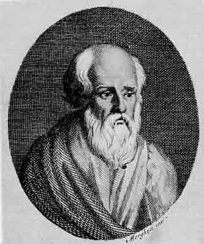
第12図 アルクマエオン（Raphael Morghen の版画）
ギリシアの天才は幾つかの「特色」を我々に示しているとリビングストンは論じている。すなわち美の特色、自由への欲望、率直さの特色、ヒューマニズムの特色、正気の特色、および多才なことである。この素晴らしい人たちのあいだにおける科学的医学の始まりについての短いスケッチを、これらの性質の上に我々はすることになるであろう。
原始人およびエジプトとバビロニアの偉大な文明において、医師が僧侶から進化したことを見たが、ギリシアで医師は２種の起源を持っていた。すなわち哲学と宗教であった。まず哲学者の起源から追跡してみよう。特にイオニア生理学者として知られているグループから始めよう。彼らは故郷にいたものもあるし、イタリア南部に植民していたものもあり、彼らの仕事に科学的な医学の起源を見ることができるであろう。ここでゴンペルツの言葉を引用しよう。
「ギリシアの偉大な人たちが科学研究の場において行い保持したギリシア人成功の初期段階を追跡すると、生まれつきの才能と条件の素晴らしい結合に見ることができる。大胆な試験が無いと縮小する、不眠の批判的な精神に結びつけられた建設的な想像が多量に存在している。現象的異常の繊細な影を探し出して区別する鋭い能力と結びついている非常に強力な一般化への衝動が存在する。感情の要求を完全に満足させるとともに知性に破壊的な仕事を行わせる自由を残しているギリシアの宗教が存在する。知性、力の軋轢の幾つかの中心があって沈滞の可能性の無い政治的な条件がある。そして「子供が月を取ってくれと泣く」ように過剰なことを抑えるのには充分に厳しいが、優れた精神が舞い上がるのを邪魔しないほど弾力的な、社会が存在する。……既に我々は批判的な精神が栄養を受け取っている２つの源泉を知っている。すなわちエレア学派の哲学者たちが行ってきた形而上学的および弁証法学的な討論法と、ヘカタイオスおよびヘロドトスが神話に適用した半歴史的方法、である。第３の源泉は医師たちの学派によるものである。これらは自然についての観点および知識から気まぐれなものを取り除くのを目的としているが、元来これは多かれ少なかれ実際に例外無く内的な必然の力によって結合しているものである。医学の知識はこの欠点を直すのが運命である。我々は力を増してきた観察および気が早い一般化にたいして提供された釣り合いの重り、および同じように信用できない作りごと――贅沢な想像またはア・プリオリの空論により自己依存性の感情感覚の上に作られたもの――を退けるために学んだ信頼によって、この非常に価値のある果実の生長の跡をつけることになるであろう。」(3)
イオニア時代の自然哲学者は医学そのものにはあまり貢献しなかったが、彼らの精神および自然の見方は研究者たちに深く影響した。物質の本性および元素の本性についての彼らの大胆な一般化は化学者にとって今でも驚異である。彼らの１人であるアナクシメネスを見てみよう。彼は空気を第１の物質であるとみなした。「プネウマ」すなわちの生命の息吹きの学説である。これは生体に生気を与える物質であり死ぬときに離れるものである。「我々の魂は空気でありこれが我々を結びつけている」と。他の者として残った断面からはっきりとは判からないがたぶん医師であったと思われるヘラクレイトスがあげられる。しかしこの火の哲学者を調べると、彼の熱および蒸気の学説およびそれらにたいするアンチテーゼは、何世紀にもわたって医術に影響した。ヒポクラテス文書にはこの学説を人体に適用する試みた事実がある。有名な言葉の「
南イタリア（＝マグナ・グラエキア）の自然哲学者たちはもっと医学に貢献し、この植民地の町の中にはすでに紀元前５世紀に医学校があった。これらの医師の哲学者のうちで最も有名だったのはピュタゴラスであった。彼の生涯と著作は医学にきわめて影響が大きかった。特に影響が大きかったのは、彼の数の理論および分利（＝分利解熱）の日の重要性であった。音の高さが振動する弦の長さに依存することの発見は、音響学における最も基礎的な法則の１つである。クロトンで彼が創立した学派には多数の医師がいて、彼の考えをマグナ・グラエキアにおいて遠く広く運んだ。彼の教えのうちで数の理論ほど医学において勢力のあったものはなかった。この説の神聖さは長いあいだ医師の心をとらえた。ふつうの多くの病気、たとえばマラリアや発疹チフスは特定の日に突然に終了することはこの信念を支持した。いかにこれが盛んであり長続きをしたかは、分利解熱の日に関する文献の数から判断できる。これは18世紀の中葉まで多く存在した。
クロトン医学派の１人であるアルクマエオン（紀元前５世紀）は解剖学および生理学で大きな業績をあげた。彼は脳が心の臓器であることを最初に認識し、神経を注意深く解剖して脳に達することを見た。彼は視神経とエウスタキー管（耳管）を記載し、視覚について正しい観察をし、精液が脊髄から出るという一般の考えに反対した。彼は健康の定義として、平衡の保持または言い換えると身体の物質的な性質の「政治的権利の
しかし彼の力は
この時の膨らんでいる悪と共に膨らみ、
そして黙って人たちを掴まえてどこで起きるか見る。
古い日々の病気を速やかに抑え、
狂人を彼の竪琴の音楽で縛り、
有毒な流れの息を甘い大気に清め、
そして風のあいだの山の裂け目で、
このことを彼は古くからすることが出来た――(5)
この時の膨らんでいる悪と共に膨らみ、
そして黙って人たちを掴まえてどこで起きるか見る。
古い日々の病気を速やかに抑え、
狂人を彼の竪琴の音楽で縛り、
有毒な流れの息を甘い大気に清め、
そして風のあいだの山の裂け目で、
このことを彼は古くからすることが出来た――(5)
この引用は奇跡を起こすこの医師が持つといわれる力について何らかのアイディアを与えるであろう。
この素晴らしいサークルのうちの誰についても、クロトンの医師デモケデスのようにはっきりとした情報は残っていない。彼の話は最終的にはヘロドトスによって記録されていて、この話はまたこのような古代にもギリシアの市で公的な医療サービスが良く整備されていたことを示しているので興味深い。これは紀元前６世紀の後半のことであり、ヒポクラテスよりも完全に２世紀も前のことである。クロトン市民のデモケデスと呼ばれた男がペルシア人オロエテスの奴隷の中に見つかった。彼の医師としての令名を誰かが聞いて、彼はダレイオス王の脱臼した足首の治療のために呼ばれた。このずる賢いギリシア人は家に帰りたかったが、もしも医学の知識を明らかにしたら逃げるチャンスが無くなるだろうことを恐れた。しかし拷問で脅かされて治療を行い成功した。次いでヘロドトスはその後の話を語っている。デモケデスはクロトンに帰って厚遇されなかったので、アエギナ（現在のエイーナ）に行って医師となり、２年目にアエギナ政府は彼を１タレントの俸給で雇った。３年目にアテネ人たちは彼と100ミナエで契約した。４年目にサモス島のポリュクラテスは２タレントにした。デモケデスはポリュクラテスと運命をともにしてオロエテスによって牢獄に入れられた。それから彼はキュロスの娘でダレイオスの王妃のアトッサが彼の逃亡を助けるという条件で、彼女の乳房のひどい膿瘍を治したと、ヘロドトスは書いている。彼女はデモケデスをガイドとしてギリシャ探検の遠征をするように王に頼んだが、非常に有能なこの医師をどんなにしても連れて帰るように指示した。タレントゥム（現在のタラント：イタリアの南東部）から彼は故郷の市に逃げたが、ペルシア人は追いかけてきて彼は逃げるのに非常な苦労をした。ペルシア人はガイドが居なくなったので探検を諦めてアジアに帰った。彼は逃げた弁解としてダリウス王に手紙を書いて、彼は王に人望のある力士ミロの娘と婚約したと説明した。(6)
プラトンはこれらの公的な医師たちについて何回か言及している。間違いなく彼らは公的な集会で選挙されていた。「集会が医師を選挙するために集まったときに」オフィスは年ごとに選ばれた。「公的な医師」は次のような者であった(7:政治家)。「オフィスの年が終わったときに案内人すなわち医師は再審査の法廷に来て」何らかの告発にたいして答えなければならなかった。医師は公的な医師の地位を得る価値があると見なされる前にしばらく診療に従事して、腕を上げなければならなかった。
「貴方と私が医師であって互いに公的医師として医療をするように勧告しているとしたら、私は貴方について問いかけ、貴方は私について問いかけるべきであろうか。さて、しかしソクラテス自身は健康なのだろうか？ 奴隷にせよ自由人にせよ、誰か彼によって治癒したものが居るだろうか？」(7a)
これらの公的医師たちについて知られていることはポール(8)によって集められ、その発展をローマ時代まで追っている。彼らは非宗教的であってアスクラピオス神殿とは独立であり、俸給は良くて、最も優れた人たちを手に入れる熱心な競争があり、特別な税金から払われており、高く評価されている。これらはヘロドトスからや記録から集めることができる事実である。レイナ（？）のエーラー教授(8a)が集めた1000年以上にわたる精密な記録は、ギリシアおよびローマの医術の状態に重要な光を投げかけている。Ｅ・ポティヤー博士は臨床における患者の治療についての著作を刊行している。(8b)
このグループの自然哲学者によって解剖の行われたことはアルクマエオンの研究が示しているだけでなく、彼らのうちで最も後年であるアポロニアのディオゲネスは精細な解剖を行ったに違いない。「動物誌」(9)にアリストテレスは血管について書いていて、これはガレノスの著作までは最も詳しいものであった。これはまた非常に正確なものであり（動脈と静脈が区別されるようになったのはアリストテレス以後のことである）、採血できる血管を指示している。
神聖な書物の言葉を使うと、どんな神もアスクレピオス（第13―15図）以上に成功した神はいない。彼は1000年以上にわたって人の子を元気づけ治療してきた。神としての能力を奪われたとしても、彼は医師にとってパトロンの聖者であり象徴的な治療神であり、蛇を持った像は医師の標章や免許証に見られる。彼は元来テサリアの首長であり、息子であるマカオンとポダレイリオスは有名な医師になり、トロイ戦争で戦った。貴方がたは覚えているだろうが、ギリシア軍の長老ネストルは傷ついたマカオンを戦場から運び出して、しばしば引用される言葉を述べた。「傷を治すのが上手でない戦士よりも医師は救う価値がある」と。後世の家系図でアスクレピオスの先祖はアポロということになり、普通アスクレピオスはその息子ということになっている(10)。「北部の部族が盛んになるに伴ってこのアスクレピオス神はホオメロス（紀元前８世紀）の詩においては非の打ち所のない医師からもっと堂々たるものになり、陸上でエピダウロスに来て海上を東に向ってコス島に運ばれた。……アスクレピオスはギリシャの成長に伴って成長したが、最高の権力者になったのはギリシアとローマが１つになったときであった。」(11)
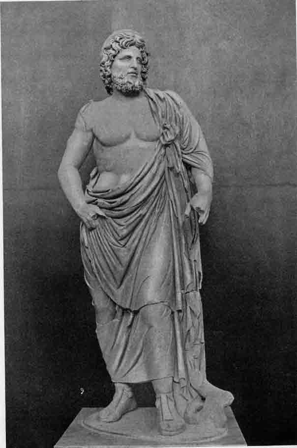
第13図 アスクレピオス（エピダウロスより）アテネの国立博物館
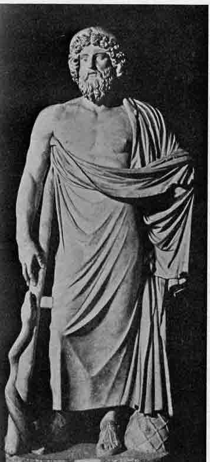
第14図 杖を持ったアスクレピオス 右下端にデルフォイの神託 ナポリの国立博物館
医術の標章としてのヘビについて一言。この考えは古代に遡る。ヘビの神秘的な性質およびこれにたいする自然な恐れおよび畏敬は、古代においてヘビを超自然な力のシンボルにしていた。紀元前2350年ごろのグデア（シュメールの支配者）の神酒瓶がテルローで見つかってルーブルにあり、これで２匹のヘビが杖に巻きついている。多分このシンボルとして最も古いものであろう（ヤストロフ）。非常に古くからヘビは神秘的な魔術の力と結び付けられていて、今日でも現地人のあいだで呪医の就任儀式に役割を演じている。
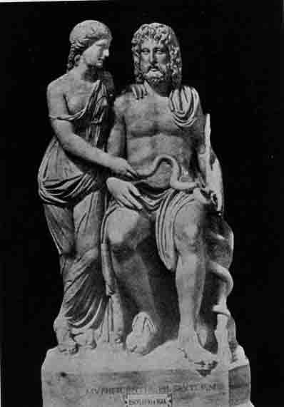
第15図 アスクレピオスとヒュギエイア（聖なる蛇を持って）ローマ、ヴァティカン
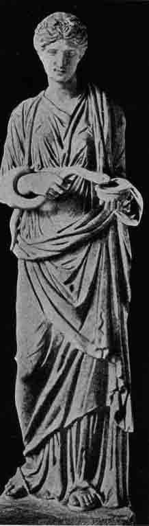
第16図 ヒュギエイア（アスクレピオスの娘）ベルリン
ギリシアでヘビはアポロのシンボルとなり予言をするヘビはアポロの神殿で飼われていたし、彼の息子のアスクレピオスの神殿でも同様であった。またヘビは薬草の知識を持っていると考えられていて、テリアカ（＊解毒剤）についてのニカンデルの有名な詩に述べられている(12)。貴方がたは覚えているだろうがルキアノスの書いたことによると、有名なはったり屋で神託売りのアレクサンドロス大王が「収入のために」最初にしたことは小アジアの大きな無害な黄色のヘビを手に入れることであった。
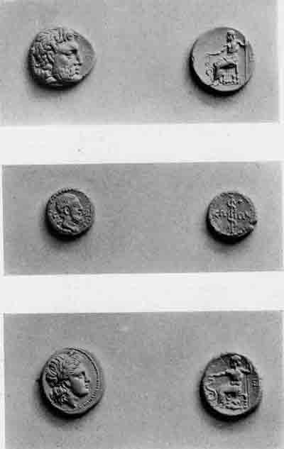
第17図 蛇を持ったアスクレピオスを示す貨幣
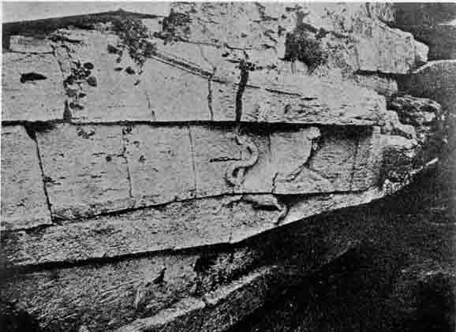
第18図 アスクレピオスの蛇 ローマ近くのテベレ川の Isola San Bartolommeo に彫られたもの
この宗派がギリシアに入った正確な年は判らないが、その大きなセンターはエピダウロス、コス、ペルガモン、トリッカにあった。すごい早さで繁栄した。アスクレピオスは最も人気のある神々の１つになった。アレキサンドロスの時代には300から400の神殿が彼を祭っていたと推定された。
アスクレピオス崇拝は３世紀の始めにおけるペスト大流行のころにローマに導入され（リヴィ）、テベレ川の島にあった神殿は有名な保養地になった。もしもヴァージニアの温泉を想像でワシントンの近くに移し、そこにカトン(13)の鳥瞰図（第20図）に示されているようなグループの建物を置き、２万人の席がある豪華な劇場、長さ600フィートで１万2000人の席がある競技場および芸術および科学のすべて可能な付属品を加えるとしたら、アテネから数マイルだけ離れたエピダウロスの寺院がどのようなものかアイディアが得られるであろう。「この宗派が盛んになった場所は主に自然の健康リゾートとして気候がよく衛生的に秀れていた。丘や山の上、森の木陰、綺麗な水が流れている川や泉のそばにあり、これらが健康に貢献する。生気を与える大気、神殿の周りのよく育てられた庭、素晴らしい眺め、これらは心臓を新しい癒しによって楽しませる。これらの神殿の多くは鉱泉または単純温泉によって有名であった。健康に良い鉱泉に近く元来は神聖な噴水池のそばの家庭的な祭壇に、後になって豪華な神殿や祭りのための遊園地、身体の病気を体育やまた入浴や塗油によって治す体育館、および発掘によって明らかになったものとして患者のための休憩室、が作られた。不潔な人たち、不純な人たち、妊婦、危篤の病人は神殿に近づくことが許されなかった。神域内に死体を置く場所が無かった。病人の居る場所や治療は近くの宿屋や下宿の世話人が行った。援助を懇願するものは注意深く清浄化され、海や川や泉で水浴し、決まった時間に断食し、ワインやある種の食品を避けなければならず、清浄化や塗油や燻蒸によってしかるべく準備してはじめて神殿に入ることを許された。この長期にわたる疲れる食事および暗示的な準備は、厳粛な祈りと捧げ物の儀式を伴い、このシンボリズムは想像を強く刺激するものであった」(14)。
神殿の世話をするのはギルドまたは信徒団体の成員であり、その指導者は必ずではなかったがしばしば医師であった。長は毎年任命された。カトンの優れたスケッチ(15)によっても儀式を理解できるが、アリストパネスの作品プルトス（富の神）における楽しい記載はもっと手頃であろう。蜂蜜ケーキおよび焼肉を祭壇に捧げた後で祈願者たちはベッドに横たわった。
間もなく神殿の召使が
光を消して我々に眠るように命令する、
動かないし話さないしどんな音も聞かない。
それで我々は整然と休む。
老夫人の頭から少し離れ
まどろみも瞬きもしない、
立派な粥の壺が存在する
老夫人の頭から少し離れて、
そこに私は不思議に這って行きたい。
それから上を眺めると僧侶が
チーズ・ケーキとイチジクを叩く
聖なるテーブルから；それから回る
捧げ物台に何が残っているか見る、
そして見つけたものを神聖なものとして
一種の袋に入れる？(16)
光を消して我々に眠るように命令する、
動かないし話さないしどんな音も聞かない。
それで我々は整然と休む。
老夫人の頭から少し離れ
まどろみも瞬きもしない、
立派な粥の壺が存在する
老夫人の頭から少し離れて、
そこに私は不思議に這って行きたい。
それから上を眺めると僧侶が
チーズ・ケーキとイチジクを叩く
聖なるテーブルから；それから回る
捧げ物台に何が残っているか見る、
そして見つけたものを神聖なものとして
一種の袋に入れる？(16)
「ベル神と竜」（＊ヘブライ聖書のダニエル書外典）の話の１つを思わせる経過である。次に神が僧侶の身体に乗り移り各患者をみる。神は医学的方法を無視することはなく、チョウジ、リボン状のニンニク、酸っぱい果汁、ユリ科の球根、を擂鉢でつぶして患者の目につける薬を作る。
それから神は舌打ちをし、
聖なる神殿から
２匹の立派で大きなヘビが出てきて……
そして緋色の衣の下に入り込み、
そして彼の瞼を舐め、私にも見えるように；
そして愛らしい婦人は、貴方が飲む前に
10杯のワインを、福の神が立ち上がり見た(17)
聖なる神殿から
２匹の立派で大きなヘビが出てきて……
そして緋色の衣の下に入り込み、
そして彼の瞼を舐め、私にも見えるように；
そして愛らしい婦人は、貴方が飲む前に
10杯のワインを、福の神が立ち上がり見た(17)
最近に発掘されたアスクレピエイオンすなわちコス島の健康の寺院は、アスクレピアド（寺院ギルドの成員）であったヒポクラテスの生地だったことから特に興味深い。コスは大きな医学の学派であったことが知られている。ルドルフ・ヘルツォク教授はこの寺院がエピダウロスの寺院に非常に似ていることを示した。
アエスクラピオスの寺院は経験的な治療研究をするのに稀なほど優れた場であったろう。我々の現代の病院と同じように、大きければ大きいほど価値のある、写本や病例の記録が豊富な図書館を持っていた。世俗的なアスクレピアドが、迷信的なことや魔術的な儀式と無関係に、寺院に居たのは疑わしいと思うかも知れないが、人が考えるほどに疑わしいものではなかったろう。われわれ医師がいかにしばしばリモン（古代シリアの神＝権威）に頭を下げなければならないだろうか！ 現在でもルルドで同じようなことが見られている。ここで俗人の医師たちは、この有名な寺院の聖母に救って貰うには信仰が弱いか病気があまりにも重い、患者たちの世話をしている。キリスト教の時代になっても有名な医師たちがアスクラピオスの寺院に関係していた証拠がある。ガレノスは解剖学参考書の中で、ペルガモンのアスクラピオス寺院の後援者だった市民について、愛情をもって記載していることに気がついた。「美食家のマリウス」の中でパーテルはこれらの寺院の健康リゾートについての楽しいスケッチをしてガレノスを入れて、彼も寺院睡眠を受けたと記している。しかしガレノスの著作の総合索引でこのことを見つけることはできなかった。
エピダウロスの捧げ物テーブルから病例や治療の性質をよく知ることができる。大多数は解読されている。種々の関節病、婦人病、外傷、禿頭、痛風、などの事実がみつかるが、ここでも次のことから奇跡の世界にいることが判る。「ミティレネのヘライコスは禿げ頭で髪の毛が生えるように願った。１晩のあいだ塗り薬を使ったら翌朝には髪の毛がふさふさになった。」
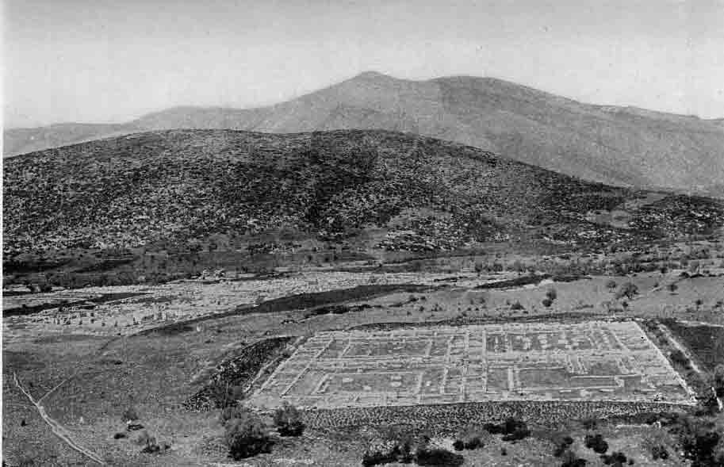
第19図 エピダウロスの配置
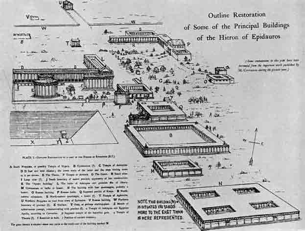
第20図 エピダウロスの聖域
手術を行い膿瘍を切開した例が見られる。ある例では水腫に新しい治療が行われた。アスクレピオスは患者の頭を切開して踵を持って逆さにして水を流出させ、患者の頭を再び叩く。次は祈祷文の１つである。「聖なるアスクレピオスよ、治癒の神よ。ディオファントスは貴方の技に感謝し、治らなかった酷い痛風から解放されて、カニのように歩くことはなくトゲの上をあうるくことなく、貴方が命じたように健康な足をもつようになることを。」
僧侶たちは自然療法を無視しなかった。処方を見ると、食事、運動、マッサージ、入浴に非常に注目し、必要なときに薬品を使っている。誕生と死は聖なる領域を不浄にすると考えられ、アントニウス（＊ローマの上院議員）のときまでエピダウロスにこのような不慮のことのための準備がなされていなかった。
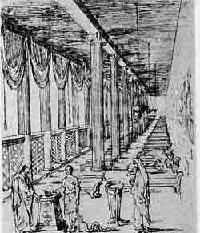
第21図 エピダウロスにおける儀式
寺院における治療法の孵化睡眠は興味深い。これは患者への夢による示唆である。バビロニアの宗教において睡眠の秘儀および夢の解釈は重要であった。ギリシア人は東洋から睡眠における占い法を導入したことは疑いない。アスクラピオスの宗派で孵置睡眠がもっとも重要だったからである。後世にも続いたことはローマの政治家アリステイデスの演説に見られる。彼は古代史における最大の精神衰弱者であり最大の夢をみる男であった。アッティカにおけるアムピアラオス（予言者で英雄）の予言は相談役の心臓に夢を送りこんでいた。「僧侶たちは質問者を受け入れ、１日のあいだ絶食させワインを３日のあいだ絶たせて完全な精神的な明晰さにして神からの通信を受け取らせる」（フィリモアの「テュアナのアポロニオス」）。孵置睡眠がどのようにキリスト教会で行われ、聖コスマスや聖ダミアンその他の聖人に関係があり、中世のあいだ行われ、現代にまで続いていることについては、ミス・ハミルトンの注意深い研究(18)から読むことができよう。今でもギリシアの一部や小アジアで孵置を定期的に行っている寺院があり、エピダウロスのときのように成功していることはこの報告から判断できるだろう。ブリテンの１箇所、モンマスシャー州（ウェールズ）のクライストチャーチで19世紀始めまで孵置が行われていた。今では医師が夢の研究（フロイト）(19)に戻ってきていて、アリステイデスの時代と同じように夢の連想的な解釈をする教授たちがいる。いつものようにアリストテレスはこの問題についての最終結論を述べているようである。「夢に真面目な注意を払うべきであると科学的な医師も述べており、この考えを持つのは臨床家だけでなく思索的な哲学者にとっても理屈にあっている(20)」が、神が将来の計画をしたとして、単純な人たちや動物までに夢を送らなければならないとしたら、要求が多すぎる。
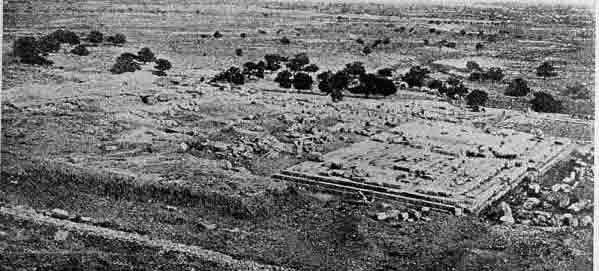
第22図 コス島アスクレピオス医学校
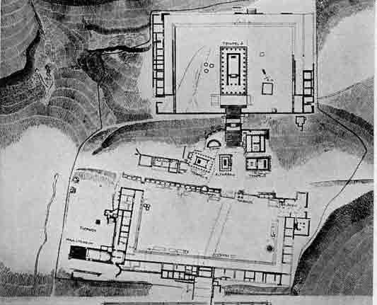
第23図 コス島アスクレピオス医学校の図（1902-1904の発掘による）．
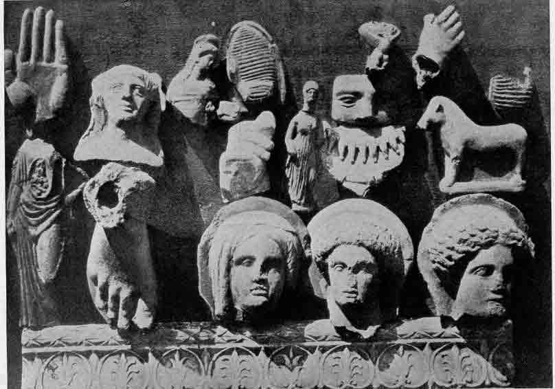
第24図 捧げ物

第25図 眼病のさいの捧げ物（左） 第26図 現代ドイツにおける眼病のさいの捧げ物（右）
キリスト教との戦いにおいて、異教はアスクレピオス寺院を最後の砦とした。聖人たちによる奇跡治療は異教の神による治療に置き換わり、異教寺院の役に立っている行為を採用するのは賢明であった。
ギリシア医学の基礎がコス島出身のヒポクラテスの名前と結び付けられているのは当然のことである。しかし彼には不明なことが多く、我々は彼について一流の正確な情報を持たない。これは優れた同時代人やその後継者たち、たとえばプラトンやアリストテレス、と大きく違っている。同時代の人としてヒポクラテスを記載しているのはプラトンだけであると聞いて、たぶん貴方は驚くであろう。「プロタゴラス」でアポロドロスの若い息子であるヒポクラテスは「強く賢い」プロタゴラスの所に来て、科学と人生についての知識を習った。ソクラテスは彼に聞いた。「もしも貴方がコス島のアスクレピアドのヒポクラテスの所に行って金を払うとして誰かが『ヒポクラテスよ、貴方は同名のヒポクラテスに金を払おうとしている。貴方が金を払おうとしているのは誰か？』貴方は何と返事するだろうか？」彼は答えた。「私は言うだろう。医師としての彼に金を与えるだろう、と。」「彼は貴方をどうするだろうか？」「医師にするだろう。」と彼は言った。パイドロス（＊中期対話篇）の中でパイドロスは全体の自然を知らずして魂の自然を知ることができるかというソクラテスの質問に答えて言った。「アスクレピアドのヒポクラテスは、身体の自然でも全体としてのみ理解できると言っている」（プラトン：対話篇）
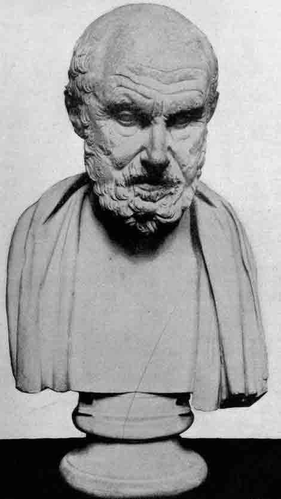
第27図 ヒポクラテスの胸像（＊現在はストア派クリュシッポスの像と言われている）大英博物館
幾つかのヒポクラテスの伝記が書かれている。もっともしばしば引用されているのはエペノスのソラノスのものであって、ここに書かれたことの多くは受け入れられている。（＊トラヤヌス帝時代の有名な医師の著作とされているがオスラーは否定している。）ヒポクラテスは紀元前460年に生まれ、アスクレピアドの名門に属し、広範囲な旅行をしてトラキア、テサリアなどギリシアの各地を訪れ、コス島に戻ってこの時代の最も有名な医師になり、紀元前約375年に死去したことになっている。アリストテレスは１度だけ彼について書いていて、「偉大なヒポクラテス」と呼んでいる。胸像が残っていて、ふつう最も初期のもので最高の作品と言われているのはローマ時代のもので大英博物館にある（第27図）。
ヒポクラテスの数多くの著作のうちで実際に医学の父の書いたものがどれかを決定するのは容易でない。著作はアレキサンドリア学派の時代に集められ、注釈を書くのが通例となっていた。これらのうちで最も重要なものはガレノスからの情報である。最も初期のものはフローレンスの「ローレンス写本（Codex Laurentianus）」で９世紀のものであってコンメンダトーレ（イタリアの爵位）・ビアジの好意によってサンプルを示した（第28図）。ヒポクラテスによると言われている種々の著作に興味をもち参考にしたい方にはディールスが編集したプロシア・アカデミーの「古代医師たちの写本」がある（ベルリン、1905）。プロシア・アカデミーは「ギリシア医師全集（Corpus Medicorum Graecorum）」を編集している。英語ではこのような完全な刊行物は無い。1849年にディー河畔（スコットランド）の医師アダムズがもっとも重要な著作を翻訳して古いシデナム・協会のために刊行した。役に立つ版であり容易に入手できる。リトレの10巻からなる「ヒポクラテス全集」（パリ、1839-1861）は参考文献として最も重要である。ヒポクラテスの著作について短いが完全な抜粋を得たいならばテオドール・ベックの本が非常に役だつであろう。
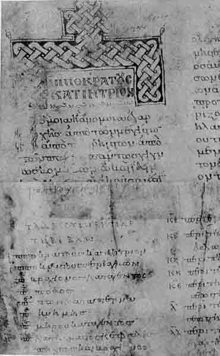
第28図 ヒポクラテスのものと伝えられている最古の手稿（９世紀）（フィレンツェの Codex Laurentianus）
私にできるのは医学および医術の興隆に影響したヒポクラテス著作の特徴を非常に短く述べることだけである。
第１の特色は疑い無く人間愛である。「ギリシア叙事詩の起源」(21)の序論でギルバート・マレーは地域共同体へのサービスの考えは我々よりもギリシア人において深く根ざしていたことを強調している。彼らが個々の著者について尋ねたことは「彼はより良い人々を作るのを助けたか？」言い換えると「彼は生涯をより良いものにしたか？」であった。彼らの目的は町で良い人々を作り、生涯を良くし、「世界における生涯を良いものにする」のに役に立ったか助けたかであった。この短い文章にアテネ人たちの願望が述べられている。同じようにプロディコス（紀元前５世紀）の「人間の生涯に役立つのが神である」という言葉に示される。人についてのギリシア人の観点は聖ペトロがキリスト教世界に強く主張したものにたいするアンティテーゼである。１つの考えがホメロスからルキアノスまで、身体全体の誇りがあたかも香りのように充満していた。「我々の精神はバラの網目にある」という強い信念が肉体によって助けられていて「この肉体は楽しいから」とギリシア人は歌っている。ちょうど「健全なる精神は健全なる身体に宿る」の価値を理解するように、ギリシア人が生命のすべての分野で示している理想を理解する。美しい身体と調和している美しい精神はプラトンの輝かしい理想であるとともにアリストテレスの教育の目的である。「国家」の第３の書にある「……我々の若者が健康な地に住み良い景色および音色のあいだにいてあらゆることに良いものを受け取ること。そして美、健全な労働、がより純粋な地域からの健康を与える微風のように目や耳に流れ、そして幼児のときから理性の美を伴って類似および思いやりの中に気がつかないで精神を取り込む」の日は何と素晴らしい光景であろうか。この現在の生涯を豊かなものにするこの熱意はギリシャ人らにとって他の人々よりも輝かしいが、普通の人の身体の看護については我々自身の時代になって彼ら（＊ギリシア人ら？）が始めた研究方法の結果として遂行されたのを見ている。ヒポクラテス文書のあらゆる所に生涯にたいするこの態度が見られる。これは「人間愛のあるところにはどこでも医師の愛があるだろう」という優れた言葉以上に良く表現することはできない。このことはヒポクラテスが医術を学ぶ資格としているものによく示されている。「医術の能力を得る者は次の利点を持っていなければならない。天性、指導、勉強をするのに有利な立場、初等教育、労働を好むこと、暇な時間。何よりも天性が必要である、もしも自然が反対したらすべてのことは無駄である。しかし自然がもっとも優れた方向を指し示すならば医術の指導を生じ、弟子は考えてこれを自分のものにしなければならず、指導によく適した生徒になる。彼はその仕事に労働および忍耐にたいする愛を持ち込み、根付いた指導は適当で豊富な果実を生むであろう」と。そして生活の送り方および公衆への医師の態度についての自然の指導は今日における我々の倫理の基準である。疑いがある病例については協議をするのが好ましく、謝礼を高くするべきではない。「もしも２種またはそれ以上の治療法があるならば医師は最も目立ったりセンセーショナルでない方法を選ぶべきである。無くて済ませるであろう手技を派手に行って患者を感嘆させるのは『ペテン』の行為である。有名になるために公衆にたいして演説する習慣は医師にとって好ましくないし、詩人たちから引用することによって公衆を騙すのは特に警告する。出した処方からすこしばかり違うことを見つけて自分に誤りの無いことを示すのは笑うべきことである。そして最終的に医師の個人的な行為を取り締まる細則が存在する。彼は最も良心的に清潔であることが要求され、贅沢から遠く離れたエレガンスを養うように勧められる。小さいことでは香水を使うのも良いが過度であってはいけない」(22)。しかし医師の道徳の最高水準は有名な「ヒポクラテスの誓い」で達していて、ゴンペルツは「文明史における最高水準の記念碑」と呼んでいる。これがヒポクラテス時代のものであるかどうか、エジプトまたはインドの要素があるかどうか、は小さなことである。ギリシア精神をいかに正確に示しているかが重要である。25世紀にわたって医師の信条であり、現在でも多くの大学において医師と認める信条になっている。
医師アポロン、アスクレピオス、健康 、万能の治療女神 、及び全ての神々および女神に誓う。私自身の能力と判断に従って、この誓約を守ることを。この医術を教えてくれた師を実の親のように敬い自らの財産を分け与えて必要ある時には助ける。師の子孫を自分の兄弟のように見て、彼らが学ばんとすれば報酬なしにこの術を教える。著作や講義その他あらゆる方法で、医術の知識を師や自らの息子また医の規則に則って誓約で結ばれている弟子達に分かち与え、それ以外の誰にも与えない。自身の能力と判断に従って、患者に利すると思う治療法を選択し、害と知る治療法を決して選択しない。
依頼されても誰にも人を殺す薬を与えないし、そのような助言をしない。そして同様に婦人に流産の道具を与えない。
私は生涯を純粋と神聖を貫き、医術を行う。
（膀胱結石に截石術を施行はせず、それを生業とする者に委せる。）
どんな家を訪れる時も、女性と男性の相違、自由人と奴隷の相違を問わず、不正を犯すことなく、医術を行う。医に関するか否かに関わらず、他人の生活について見たり聞いたことの秘密を遵守する。
この誓いを守り続ける限り、私は人生と医術とを享受し、全ての人から尊敬されるであろう！ しかし、万が一、この誓いを破る時、私はその反対の運命を賜るだろう！
依頼されても誰にも人を殺す薬を与えないし、そのような助言をしない。そして同様に婦人に流産の道具を与えない。
私は生涯を純粋と神聖を貫き、医術を行う。
（膀胱結石に截石術を施行はせず、それを生業とする者に委せる。）
どんな家を訪れる時も、女性と男性の相違、自由人と奴隷の相違を問わず、不正を犯すことなく、医術を行う。医に関するか否かに関わらず、他人の生活について見たり聞いたことの秘密を遵守する。
この誓いを守り続ける限り、私は人生と医術とを享受し、全ての人から尊敬されるであろう！ しかし、万が一、この誓いを破る時、私はその反対の運命を賜るだろう！
プラトンは彼の理想的な「国家」において医師を実際のところ非常に低い最低の層に置いている。しかし彼は「饗宴」においてアテネの社会でこれ以上に名誉あることのない場所に医師を置いている。ここで医師は教養ある紳士として示され、常に最もしらふであるとは言えないが、最高の社会の一員である。エリュクシマコスは自身も医師のアクメノスの息子であり、この有名な場面で典型的なギリシャ人の役割(22a)をしている。すなわち心も身体も節制を強く主張し、医師として大酒を非難し、親交はその日の程度であるべきであるとし、演題は「愛の神の賞賛」にすることを謹んで提案している。付随的にエリュクシマコスは病気の本態についての意見を述べ、如何に彼がエンペドクレスの意見に影響されているかを示している。「……それで身体内でも良い健康な要素は満足させられていて、悪い要素および病気の要素は満足させられないで希望を失っている。これは医師がしなければならないことであり、ここに医術がなりたっている。医学は一般に愛および身体の要求およびこれらを如何に満足させるかさせないかの知識と見なされているからである。そして最高の医師は正しい愛を悪から分けたり片方を他に変換できる人である。そして必要に応じて愛を消したり植えつけたりし、体内で最も敵意をもつ要素を和解させて愛すべき友達にするのこそ巧みな臨床医である。」
ギリシア医学の第２の大きな特色は物の完全な心臓（＊奥底）に行く率直さに示される。神秘主義、迷信、宗教的な儀式から出てギリシア人たちは直接に自然に進み、医学の概念を正確な観察に基づく術であり人間の科学の不可欠な部分であるとして最初に把握した。「法律」（＊ノモイ：プラトンの最後の著作）の次の言葉よりももっと衝撃的なものがあるだろうか？ 「基本的に２つある、知ることと知っていると信ずることである。知ることは科学であり、知っていると信ずるのは無知である」(23)。しかしヒポクラテス文書の中でどの言葉も世界中の文献に入っている有名な次の箴言よりも率直なものはない。「人生は短く、医術は長い。機会は逸し易く、試みは失敗すること多く、判断は難しい。」
強く明白な常識が何処にも見られ、神学または哲学的な空論と係り合うことを拒絶する。ソクラテスが哲学のためにしたことをヒポクラテスは医学のためにしたと言うことができるだろう。ソクラテスが自分自身を倫理学および正しい考えの善行への適用に捧げたたように、ヒポクラテスは医術が実際的な性質を持つこと、およびその最高の善を患者の利益に捧げることを主張した。実地尊重、経験、事実の集積、感覚の実際、哲学的空論を避けること、がヒポクラテス医学の特徴であった。ヒポクラテスの最も際立った貢献は、病気は自然の経過のほんの一部であって、何も神的であったり聖なものは無いという認識であった。聖な病気とみなされていた
自由である特色もまたヒポクラテス文書を通じて顕著なものであり、有名なアスクラピオスの寺院の域内で教育され医療をしていた人が宗派の迷信および気まぐれからどのようにして別れたか理解するのは容易でない。何らかの病気から治った患者が寺院で書いた領収書によって利益を得ていた、というプリニウスの示唆には根拠があっただろう。プリニウスは独自の様式で続けた。「その後、彼はクリニックと呼ばれる医師となり、その後は謝金に限界や終わりの無い甘さがあった」（自然の歴史）。ヒポクラテス文書には占いについての言及は無い。孵置睡眠についてはあまり述べられて居らず、お守り、呪文、占星学、についての言及は稀である。至る所に現代の感覚に合わないところもあるが、しかし全体としてヒポクラテス文書を読んでいてアラビアや15世紀、16世紀の著者の文書よりも身近に感じる。そしてヒポクラテス文書は魔術の力にたいして反対するだけでなく、ゴンペルツ(24)が明白に述べているように、新しい哲学の過剰および欠点についても、同じように積極的な反応を示している。彼はこれを何年もの曖昧で不安な憶測の後で「人間の知的生活の中への安定で座る習慣」を導入したコス学派の不朽な栄光であると見なしていた。「憶測は右へ！ 現実は左へ！」は自然哲学の過剰および欠点にたいする戦いにおけるこの学派の喊声であった。ある方向においてこの反対の効果はあったが、ヒポクラテス文書の著者たちは古い哲学者たちの仮説から完全に逃れることはできなかった。
ヒポクラテスによるとされているもっと重要な見解について可能な限り簡単に述べる以上のことは出来ない。我々はコス学派とクニドス学派との間の論争(25)に触れることはできない。この時代にギリシア人は人体解剖学を持っていなかったことに注意しなければならない。解剖は不可能であった。彼らの生理学は初歩的なものであり、哲学によって強く支配されていた。エンペドクレスは火、気、地、水、の４元素を「すべての物質の基礎」であるとし、これがヒポクラテスの液体病理学の礎石となっていた。大宇宙すなわち世界が火、気、地、水の４元素からなっているように、小宇宙すなわち人体は血液、粘液、黄胆汁、黒胆汁、の４つの体液（元素）からなっていて、それらは物質の４つの性質すなわち熱、寒、乾、湿、に対応していた。2000年以上にわたってこれらの考えは支配的であった。トマス・フェールは「生活の管理」（1546）で次のように言っている。「……これらの体液は４つの元素と同様であるので元素の息子と呼ばれている。空気は熱く湿っていて、血液は熱く湿っているからである。そして火は熱く乾いていて、黄胆汁は熱くて乾いている。そして水は冷たく湿っていて、粘液は冷たく湿っている。そして地は冷たく乾いており、黒胆汁は冷たく乾いている」(26)。
中世の家庭医学書である有名なサレルノ養生訓は次のように言っている。
４種の体液は我々の身体を完全に統治する
そしてこれらは４種の元素に相当する(27)
そしてこれらは４種の元素に相当する(27)
リトレによると、ヒポクラテスの真の著作にはこのように強い発言は存在せず、主としてヒポクラテス文書に見つかるもので、著作「人間の本性」の次の発言以上に明白には言われていない、とのことである。「人の身体そのものには血液、粘液、黄胆汁、黒胆汁が含まれていて、これらは身体の自然な構成分であり、病気および健康の原因である。これらの体液が適当な割合の混じり方や力や量で適当に互いに混じり合っているならば、彼は健康である。もしもこれらの体液の１つが量的に減少したり増加したり、体内で適当な混合物から分離し、他のすべてと適当に混じっていなかったら、彼は病気になる。」私が述べたように、つい最近まで広く使われてきた病気のこの考え方がはっきりとした言葉で述べられたことはなかった。黒胆汁すなわちメランコリー（＊憂鬱）は言語において重要な言葉になっているし、我々がヒポクラテスの体液病理学からまだ逃れていないことは、胆汁質（biliousness）とかちょっと肝臓が悪い（He has a touch of the liver）のようなふだんの表現に示されている。体液は不完全に混合していると身体に刺戟的である。体液は生まれつき（innate）の熱を使って一種の内的調理（coction）によって徐々に変化して適当な割合になる。病気を起こしている体液変化の１次的な原因が何であろうとも、生まれつきの熱すなわちヒポクラテスの言葉では身体の自然そのものが、状態を正常に戻す。そしてこの変化は予期しないときに突然に起きる。彼はこれを「分利解熱（crisis）」と呼んでいて、病気のある特別な日に起きて、しばしば決定的な排出または体温の低下を伴う。悪い体液または過多にある体液が排出され、この特異的な病因体（materies morbi）が自然の処理装置である分利解熱によって免れるという考えは全く最近まで病理学を支配していた。正常の状態に戻すのにヒポクラテスは自然治癒力（vis medicatrix naturae）を大きく信頼していた。ここで手短に述べた、鋭い観察者であり活発な臨床家である彼の病気の概念は、25世紀にわたって医師を支配した。実際に彼の理論は医学校において繰り返され、彼の言葉は毎日のように我々の唇にのぼっている。もしもヒポクラテスおよびその学派の医学にたいする最大の貢献は何かと尋ねられたら「注意深い観察」と答えることができよう。
ヒポクラテス文書にはペリクレスの黄金時代までのギリシアの経験が集められている。哲学から出て抽象的考察から出て自然についての見方が得られ、医師が主として責任を持つ病気についての人間の考えを将来的に変化させた。医学は宗教および哲学の指導する紐を切断した。医学は元気ではあるがよちよち歩きの子供であり、その将来の運命をこの講義は述べることになる。最初の講義で話した古代の人たちの医学史についてもっと良く知っていたら、この医学史はアスクレピオスの最初の新生児ではなく、人の心による自然の受精産物である多くの早生児、死産児、さらには正常出産児の存在を知ったであろう。しかし記録は明確でなく、幼児はイザヤ書のイスラエル人のように追い払われてしまった。しかし知的な成果はヒポクラテスが活躍した偉大な時代に頂点に達したのではなかった。ソクラテスが死亡して16年後、プラトンが45才のときに、遠く北部、マケドニアのアトス山の岬の小さなスタゲイロスの町に、紀元前384年に、ミルトンの言葉が誰よりも適している「人たちのうちの１人（man of men）」が生まれた。アレキサンドロスの父フィリッポス２世の医師でアスクレピアドのニコマコスの子供である偉大なスタゲイロス人（＊アリストテレスの俗称）が生まれたときに、惑星は稀な組み合わせであったに違いない。「地獄」の第１圏でダンテはウェルギリウスによって素晴らしい仲間のところに導かれ、「智者の師（il maestro di color che sanno）」は「哲人の族」により仰ぎ崇められていた(28)。アリストテレスがこの23世紀のあいだこのように崇められていたのは正しい。このように知的な帝国を揺り動かした人は誰も居ない。論理学、形而上学、修辞学、倫理学、詩学、政治学、および自然史において、すべてにおいて創設者であり今でも巨匠である。人間の知性の歴史はその経歴とは対応しない。比較解剖学、動物分類学、発生学、奇形学、植物学および生理学の諸科学の創設者として彼の著作は永遠の興味がある。これらの諸科学は身体の種々の部分の構造と機能に関して事実の膨大な蓄積を提供している。献身的な学者の学派の貢献があるとしても１人の男がこれほど多くのことをいかに成し遂げたかの驚異は終わることがない。
解剖はすでにアルクマエオン、デモクリトス、ディオゲネス、その他によってなされ大規模に行われたが、人体解剖はまだタブーであった。アリストテレスは「人体内部は最も知られていない」と認め、彼は人の腎臓も子宮も見たことが無かった。彼の生理学において心臓および血管についての極めて重要な点だけを述べることができる。アリストテレスにとって心臓は血液循環を調節する中心的な臓器、活気の座、血液の貯蔵所、血液が最終的な処理を受け動物熱を吹きこまれる場所、であった。血液は壺（vase）の中にあるように心臓および脈管のなかに入っていた。従って容器（vessel）という言葉が使われた。「血管は壁の解剖図が示すように心臓から体内全体に広がっている。何故かと言うと、それらはそれらからなっていて、部分は周囲にあるからである」(29)。栄養物は血管を通して滲み出し、その各部分における通路は「焼いていない陶器の水のよう」である。彼は動脈と静脈の区別を知らずに両方を新米（plebe）と呼んでいた（リトレ）。大静脈は大きな血管で大動脈は小さいものだった。しかし両方とも血液を含んでいた。彼は「アルテリア（＝動脈）」という言葉をどちらにも使わなかった。心臓から脈管までの動きは無かったが、血液は身体の物質によって引き上げられ、植物の根が大地から取ると同じように腸間膜脈管は栄養素を吸い上げ、血液は消化産物の吸収によって絶えず新しくなった。肺からプネウマすなわち魂（spiritus）が吸収され、これは肺血管によって送られた。肺血管の１本は心臓の右側に、１本は左側に血液を送った。これらの２本の血管は肺の中で気管の枝と「相互に接触していて」プネウマを取り込んだ。興味深いのは気管がアリストテレスによってもヒポクラテスによっても「アルテリア」と呼ばれていたことである（「解剖学」リトレ VIII, 539）。これは肺を通して呼気を広める空気の管である。我々が知っているようにアルテリアという言葉は動脈に使われるようになった。このことは数分後に述べる。心臓および動脈の拍動をアリストテレスは生命維持すなわち生来の熱によって膨張した血液の一種の噴出とみなし、この火は肺によって取り込まれて肺血管によって心臓に送られたプネウマにより冷やされるとしていた。
ゴンペルツの「ギリシアの哲人」の第
 巻に自然研究家としてのアリストテレスについての見事な論考を見るであろう。貴方がたのうちでアリストテレスの自然史学の著作を研究したい人はオクスフォード大学・クラレンドン・プレスで進行している新訳によりもっと詳しくもっと容易に得ることができるであろう。「自然小論（Parva Naturalia）」の最後の「呼吸について」の章で医師の息子としての価値があるアリストテレスの医学にたいする態度を読むことができる。
巻に自然研究家としてのアリストテレスについての見事な論考を見るであろう。貴方がたのうちでアリストテレスの自然史学の著作を研究したい人はオクスフォード大学・クラレンドン・プレスで進行している新訳によりもっと詳しくもっと容易に得ることができるであろう。「自然小論（Parva Naturalia）」の最後の「呼吸について」の章で医師の息子としての価値があるアリストテレスの医学にたいする態度を読むことができる。「しかし健康と病気もまた、医師だけではなく原因に関係して科学者の注目を要求している。健康と病気の２つは違い研究分野の違うことに注目しなければならないが、これらの追求は少なくともある程度は重なりあっているからである。教養と識見を持つ医師が自然科学について発言してそれから法則を引き出すことを主張し、自然にたいして最も通じた研究者たちは一般に彼らの研究を推し進めて医学の法則について結論を出す」（Works（全集）、III, 480b）。
アリストテレスの弟子で後継者のテオプラストスは植物学を創設して数世紀後に薬理学者に役立つようにした。貴方がたのうちには彼を「非常に優れた古代の植物学者で、人間の行為を自然史学者の鋭く的確な観点で観察（ゴンペルツ）」した重要な本「人さまざま」の著者として知っている方もあるだろう。ヒポクラテス文書には236種の植物が記載され、テオプラストスの植物学には455種が記載されている。師と弟子の特徴として、人と人のあいだの感情だけでなく動物界にたいする親しみを要求する思いやりについて述べなければならない。「テオプラストスの動物界にたいする感情は好い加減な表現ではなく現在に及んでいる（ゴンペルツ）。」好い加減なものではなく、ポルフィリオス（233頃-304頃）は現代の人道主義者のように動物にたいする責任を教えているとハリデイは書いている(30)。
紀元前375年ごろのヒポクラテスの死からアレキサンドリア学派の創立まで、医師たちは主として思索的な考えに没頭して、液体病理学についての研究を除いて真の進歩は殆ど無かった。この時代に一流の人々は３人か４人に過ぎなかった。「時間的および名声でヒポクラテスに次ぐ」（プリニウス）ところのカリストス（エウボイア島）のディオクレス（紀元前４世紀）は鋭い解剖学者であり百科全書的な著作者であった。しかしほんの少しの著作断片が残っているだけである。ある面でこのグループの最も重要なメンバーは紀元前340年ごろのコス島の住民プラクサゴラスである。記憶しているだろうがアリストテレスは動脈と静脈に本質的な区別をしないで両方とも血液を含んでいるとした。プラクサゴラスは動脈のみに脈のあることを知り、静脈のみが血液を含み動脈は空気を含むとした。ふつう死後に動脈は空であり、プラクサゴラスはプネウマの一種である気体で動脈は満たされているとし、これによって脈が起きるとした。
プラクサゴラスは脈を詳しく研究した最初の１人であり臨床の才能をかなり持っていたと同時に、腸閉塞のさいに開腹して閉塞した部分を取り除いて腸の両端を縫合するよう、にと勧めるほど大胆であった。
アレクサンドロスの死後にエジプトは彼の有名な将軍のプトレマイオスの手に入り、プトレマイオスによってこの都市は地中海で最も重要な都市の１つになった。彼は博物館を創設し維持した。これは近代の大学に相当し、文学、科学、芸術のためのものであった。彼の後継者とくにプトレマイオス３世の時代に博物館とくに図書館は発展して、50万冊以上の本が収納された。教師たちは世界のすべてのセンターから引きぬかれ、アレキサンドリアの偉大な名前は人類知識の歴史において最も有名なものの中に入っている。この学者たちとしてアルキメデス、エウクレイデス（ユークリッド）、ストラボン、プトレマイオス（天文学者）が含まれる。
力学と物理学、天文学、数学と光学においてアレキサンドリア人たちの研究は我々の現代の知識の大きな部分を占めている。今日――少なくとも私のころ――の小学生はエウクレイドスが紀元前300年頃に設定したのと同じ問題を勉強し、物理学の学生は今でもアルキメデスとヘロンに、天文学者はエラトステネスやヒパルコスに向き合っている。貴方がたがアレキサンドリア学派の科学の状態に興味を持つならダンネマンの歴史第１巻(31)を推薦する。
アレキサンドリアでとくに興味あるのは古代における最初の偉大な医学校の興隆である。有名な博物館を紀元前300年ごろに訪ねることができたとしたら、広大な研究室、図書館、臨床を持った医学校が盛んに活動しているのを見たことであろう。ここではそれまで宗教的な偏見によって禁じられていた人体構造の研究が初めて完全に行われていた。これまでと違って代々のプトレマイオス王によって人体の解剖をすることの完全な許可が得られ、もしもある著者たちを信用すると生体解剖も行われていた。この医学校の主な人たちの著作そのものは残っていないが、ある日パピルスが見つかって我々がプリニウス、ケルスス、ガレノスから得ているスクラップで不完全な知識を補う可能性がある。最も顕著な２人の名前はプリニウスによると「病気の原因を求めた」最初の医師としての名誉をもつヘロピロスとエラシストラトスである。
ヘロピロスはヴェサリウスが「あの解剖の頭領（ille anatomicorum coryphaeus）」と呼んでいた人であって、ヘロピロスの名前は「ヘロフィルスのぶどう酒搾り器（torcular Herophili）」（静脈洞が集まってできた後頭骨にある窪み）として医学生は毎日のように使っている。解剖学が実際に始まったのはこれらのアレキサンドリア人たちからであり、彼らは心臓の弁、十二指腸、脳の多くの重要な部分を記載した。彼らは神経の真の意義を認識し（彼らの時代の前には腱と混同していた）、運動神経と感覚神経を区別し、脳を感覚機能と自発運動の座（＊場所）とみなした。ヘロピロスは水時計を使って脈を数え、その速さとリズムの多くの詳細な解析を行った。そして当時の音楽理論の影響のもとに脈のリズム学を作って、これは最近まで使われた。彼は巧みな臨床家であり、医薬品は「神の手」であることは彼によるものである。よく引用されている「最良の医師は可能と不可能を区別できる人である」という彼の言葉は、非常に現代的な香りを持っている。
エラシストラトスはプネウマの考えを苦心して作り上げた。これの１つの形は吸い込んだ空気から生じ心臓の左側を通って体内の動脈に達すると彼は信じた。これが心拍の原因であり、身体の固有の熱の源であり、消化および栄養の過程を保っているものであるとした。これが生気であった。動物気は脳で作られ、神経によって身体のすべての部分に送られ、個人に生命、感覚、運動を与えるとした。このようにして身体の２つの機能および器官の２組のあいだに大きな違いが作られた。１つは血管系すなわち心臓と動脈、および内臓であり、生命はこの生気（vital spirit）によって制御される。他方、動物気（animal spirit）は神経系によって作られて、運動、感覚、その他の特別な感じを制御する。これらの生気および動物気の考えは18世紀に到るまで問題なく支配的であり、我々は今でも元気（high-spirit）とか（low-spirit）と言うときに偉大なアレキサンドリア人の考えを或るていど表現している。
ペルガモンは、私の記憶ではアジアの７教会にたいする聖ヨハネの叱責以上のものではなかった。この書（ヨハネの黙示録）が読まれているのを聞いて、何が「サタンの王座」であるか、聖ヨハネが憎んだ「ニコライ派」はどんな人たちか、不思議に思っていた。ドイツの考古学者たちの素晴らしい発見によってこのイオニアの首都および「サタンの王座」そのものまで見ることができるようになって、この都市の発展およびアレキサンドリアとの知的な対立関係に新しい興味が生まれた。ここに示す図（第29、30図）はこの有名な都市であり、岩の上のアテナ都市の寺院および円形劇場を見ることができる。我々に興味のあるのは、ヒポクラテス以後のギリシア医学における偉大な名前であるガレノスに関係している。彼は130年にペルガモンに生まれ、彼以前に観察者、実験者、哲学者の３つを兼ねた人は居ないし、実際にたぶんその後にも居ないと言うことができるだろう。彼の父親のニコンは裕福な建築家であって、息子を医師に身を捧げるようにとの夢を見て、息子は17才のときに医学を学ぶためにサテュロスのもとに入門した。ガレノスは彼の著作に先生の名前、遍歴時代の出来事やアレキサンドリアを含めて最高の医学校で学んだこと、など自分の生涯を詳細に記している。故郷の都市に帰って剣闘士の健康管理責任者になり、彼らの傷をワインで治したと言っている。162年に彼は初めてローマを訪れ、ここは彼の最大の活躍場所になった。ここで解剖についての公開講義を行い「有名人」になった。彼は成功について多く語っている。その１つは使い古された話であって、エラシストラトスとストラトニケ（シリアの王妃）との話もあるが、ガレノスの話は話す価値があり彼の著作写本の挿絵（第31図）になっている。１人の婦人の診察を頼まれたが、彼女の病気は全身の不快感であって、熱は無かったし脈も増えていなかった。彼はすぐに彼女の病気は精神的なものであると考えて、賢明な医師として一般的な会話を行った。彼は彼女の話を知っていたことはかなり確かである。ある俳優ピュラデスの名前をあげると、すぐに彼女の脈が急に上昇し不規則になったことに気がついた。次の日に別の俳優モルポスの名前をあげるようにし、その翌日も同じ実験を繰り返したが効果は無かった。それで４日目の夕方にピュラデスが踊っていることを話したところ、脈は速く不規則になった。それで彼女はピュラデスに恋をしていると彼は結論した。彼はどのようにしてマルクス・アウレリウス帝を治療するように呼ばれたかを話している。帝は大量のチーズを食べて胃痛を起こしていた。彼はこの病気の治療に成功して帝は次のように言った。「私には医師が１人だけいる。彼は紳士である」と。彼は沢山の医療費を受け取っていたようであり、ボエトゥス夫人に２週のあいだ付き添って金貨400オーレイ（約2000ドル）を受け取ったからである。
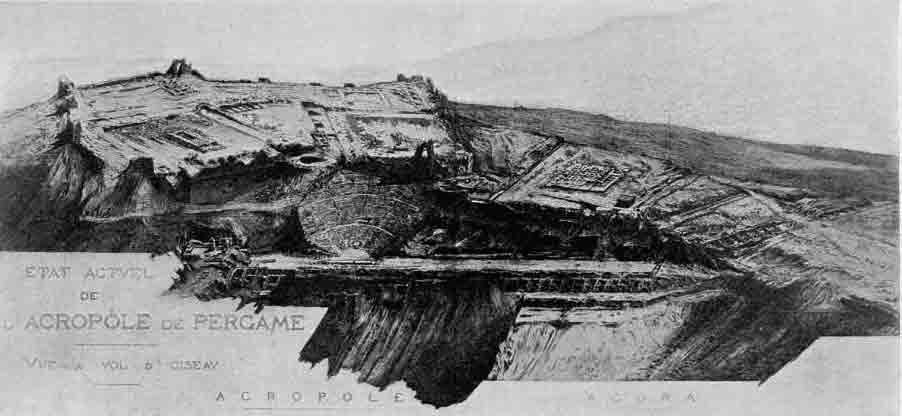
第29図 ペルガモンのアクロポリス
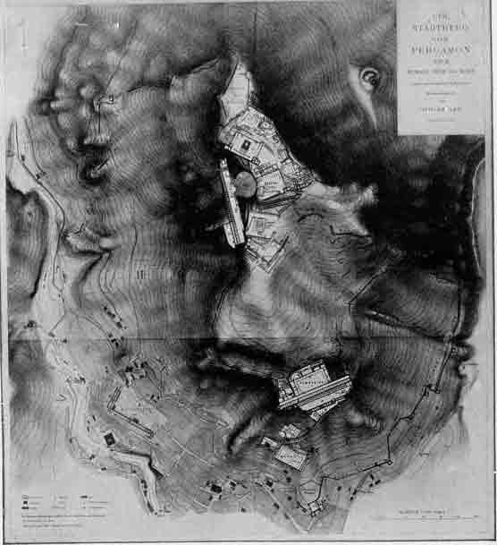
第30図 ペルガモンの浮き彫り地図
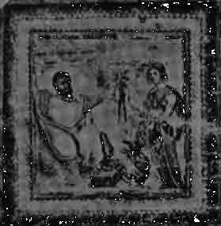
第31図 ガレノスと婦人の患者
彼は紀元168年にしばらくローマを離れてペルガモンに帰ったが、帝によってローマに呼び戻されてゲルマンへの遠征に同伴した。彼の本には多くの旅行が記載され、解剖および実験をするのに忙しかったが、長い活発な生涯を送り、多くの権威者によると紀元200年に死亡した。
ローマにおいける医学の状態の概要はケルスス（紀元１世紀ごろ）の８冊の本の１冊目に書かれていて多くの指導的な臨床家の名前、とくにビテュニア人で有能でありアレキサンドリア人たちの信奉者であった紀元前１世紀ごろのアスクレピアデスについて述べられている。アスクレピアデスはすべての病気を原子運動の障碍によるとみなしていた。栄養、運動、マッサージ、入浴、が彼の重要な治療法であり、「安全で速く快適に（tuto, cito et jucunde）」という彼のモットーはすべての医師たちの模範になった。彼と彼の後継者たちがガレノスの時までいかに重要な役割を果たしたかはクリフォード・オールバット卿の優れた講義「ローマにおけるギリシア医学」(32)およびマイエル・シュタイネクの「テオドルス・プリスキアヌスとローマ医学」(33)から集めることができる。医師でない著者たちから我々は流行医たちが診察のときに多くの学生たちを連れていたことを知っている。マルティアリスの
具合が悪い：しかしシンマクスよ、貴方はすぐに来た
100人の学生を連れて、
北風で冷えた100の手で触れた
熱は無かったが、シマンクスよ、今はある。
100人の学生を連れて、
北風で冷えた100の手で触れた
熱は無かったが、シマンクスよ、今はある。
そしてピロストラトスの「チュアナのアポロニオス」で、アポロニオスがアリバイを証明しようとして病気の友達の医師たちであるセレウクスとストラロクテスを呼んだときに、彼らは約30人の弟子を伴った(34)。医師の状態についての直接な描写としてはプリニウスが重要であり、彼の「自然史」第29巻はこの興味ある著書においても興味あり楽しい章である。彼はギリシア医師にたいするカトーの非難――彼らのあいだの不正な者についてであり、彼らをローマ市から追い出したいと思っていた――を引用している。それから彼はローマ帝国にいる有名な医師たちの履歴を書き記し、彼らのあるものたちは医学の歴史の他の時期には見られなかったほどの収入があった。この章はガレノスが重要な役割をしている段階を良く描いている（ガレノスは実際にプリニウスと同時代）。プリニウスは彼の時代における医師たちの正道をはずれた遣り方を嫌っていて、医術の弱点にこれほど強い言葉を使った人はいない。ある場所で彼は医術だけがこの奇妙な術と特権をもっていると言い、「自分を医師だと称している人は誰でも言っていることがすぐに信用される。そして本当のことを言うと、医師の口から出たことよりももっと高価に売られている危険な言葉は無い。それにもかかわらず、我々は１度もそのことを注意したり詳しく見たりすることはない。我々は彼らに説得され、甘い希望や彼らによって自分の健康について過大評価をされて、盲目になっている。さらにこの他に困ったことがある。目の見えない医師たちの無知を罰する法律や法則が無いことである。彼らによって人は生命を失うにもかかわらずである。彼らの手によって取り扱われたり誤用されて起きた悪にたいして補償のための報復をした人は知られていない。医師たちは我々の生命を危険にして技術を学び、彼らの薬の有効性と実験のために我々を殺すのを何とも思わない(35)。」彼は言っている。裁判官は注意深く探され選ばれるのに、医師は事実上に自分たちの裁判官であり、我々に急速に死刑を宣告して天国または地獄に送り込むのに、彼らの能力とか価値について尋問とか試験を行わない。シリア王アンティオコス
世が発明して1500年にわたって流行した複合薬の有名な「テリアカ」（解毒剤）にたいして、彼がこのような早い時期に厳しい批判をしていることは興味深い。しかし我々はガレノスおよび彼の研究に戻らなければならない。これは古代の誰が残したものよりも大量の著作からなっている。量の多い版はクーンの22巻からなるものである。最も役に立つのはヴェネチアのジュンティ書店版であり13版が刊行された。第４版およびそれ以降の版にはブラサヴォラによる有用な索引がついている。著作の批判的な研究は現在ドイツの学者たちによりプロイセン・アカデミーのためになされていて決定的な版になるであろう。
ガレノスは折衷主義者であって、どの支配的な学派にも自分自身が属すると認めることはなく、ヒポクラテスの弟子であると称していた。彼の哲学も行為も、解剖学および生理学における彼の偉大な仕事に比べると我々の目的において大きな興味は無い。
解剖学において彼はアレキサンドリア人たちの弟子であり、いつも彼らについて述べていた。ヘロピロスのときとは時代が変わっていたに違いない。ガレノスは人体を解剖する機会が無かったようだからであり、人体解剖ができないようにしている偏見を彼は悲しんでいる。骨学の研究において彼は学生に墓地でときに骨が出ているのに注意するように言い、あるときに彼は盗人の死体が鳥や獣によって骨になっているのを見つけたことを話している。このようなものが見つからないときに彼は学生にアレキサンドリアに行くように忠告している。ここではまだ２つの骨格があった、と。彼自身は主として類人猿とブタを解剖した。彼の骨学は素晴らしいものであり彼の小論文「骨について」は殆ど変更せずに衛生学級で手引きとして今日でも使えるほどである。彼の筋および臓器についての記載はきわめて詳しく、もちろん多くの作為および不作為の罪はあるが、ギリシアの医師たちのこの分野の研究における最高峰であった。
彼の生理学者としての仕事はさらにもっと重要である。我々の知る限り彼は大規模に実験を行った最初の人だったからである。まず彼は血液循環を発見したエースの１人である。貴方がたは覚えているだろうが、プラクサゴラスとエラシストラトスの誤りによって動脈は空気を含むと信じられて名前はこのことによってつけられた。ガレノスは実験によって動脈は空気ではなく血液を含んでいることを示した。彼は特に心臓の動き、弁の作用、および動脈の拍動を研究した。２種類の血液のうちで、１つは静脈系に入っており暗色、濃厚で大きな成分に富んでいて身体の一般栄養の役をしていた。図に示すようにこの系の源は肝臓であり、これは栄養および造血の中心的な臓器であった。消化の産物は胃および腸を通って門脈系によって吸収された。肝臓から大静脈が出ていて１本は頭と腕に供給し、他は下肢に供給する。心臓の右側からは枝が出ている。これは肺動脈に相当するものであって動脈性の静脈で両肺に血液を支給する。これは閉鎖した静脈系であった。動脈系は第31図でご覧のように全く別のものであって、薄く明るく温かい血液が満ちていて、大量の生気のあることが特徴であった。心室で温められて動脈は全身に動物熱（vital heat）を供給する。この２つの系は閉鎖系であり、両心室を隔てている壁の孔を通してのみ交通していた。しかし末梢において（アレキサンドリア人たちも既に認めていたように）ガレノスは動脈が静脈と吻合していることを認めて「……そしてこれらは、ある種の目に見えない極めて小さい管によって、他の血液および生気を相互に受け取っている」。
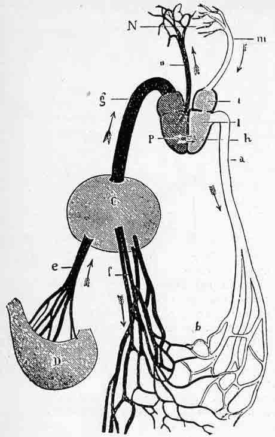
第31ａ図 ガレノス学説の血管系についての図（ハーヴィの「血液循環」のフランス訳（1879）より） ａ＝大動脈、ｂ＝動脈と静脈の吻合、Ｃ＝肝臓、Ｄ＝胃、ｆ＝肝を通った静脈、ｇ＝大静脈、ｈ＝心室間の壁の孔、ｉ＝右心房、Ｉ＝左心房、ｍ＝肺静脈、Ｎ＝肺、ｎ＝肺動脈、Ｐ＝右心室
ガレノスがどのようにして血液循環を見逃したかを理解するのは困難である。彼は心臓の弁が心臓を血液の出入りする方向を決定することを知っていたが、心臓は血液を分配するポンプであることを理解しなかった。心臓はむしろ暖炉であってここから身体の生来の熱が得られるとみなしていた。彼は拍動力が心臓の壁および動脈にあることを知っていて、拡張すなわちディアストールが血液を心臓の腔内に引きこみ、シストールが血液を外に出すことを知っていた。明らかに彼の観点は両方のシステムにおける一種の潮の干満であり、我々が使うような言葉で「静脈系は血液に満ちた水路であって大小の多くの運河がそれから流れ出て血液を身体のすべての部分に分配する」と言っている。彼は栄養の様式を灌漑水路と庭園と比較し、自然の驚くべき分配によって「血液の量は吸収のために充分量が不足することはないし、ある時に供給が多すぎて負荷のかけ過ぎになることもない」ようになっている。呼吸の機能はプネウマの導入であり、生気は肺から肺血管を通して心臓に至っている。ガレノスはアリストテレスの考えよりかなり先を行っていて、この機能は動物熱を保つものであって、血液で燃えた煙のようなものは呼気によって外に出される、という我々の現代の概念に到達した。
私はガレノスの生理学におけるこれらの問題を詳しく論じた。これは循環の歴史において基本的なものだからである。そしてこれらは彼の立場を示すのに充分である。彼の他の優れた実験としては、喉頭の神経の機能、脊髄神経根の運動および感覚機能、脊髄を横断して切断したときの効果、半分切断したときの効果、を示したものがある。すべてこれらを見ると古代医師の誰も、現代の研究方法をこのように多く著書に示したものは居ない。
ガレノスの病気についての考えは一般的にいってヒポクラテスのものであったが、４つの体液の優勢さの程度によって多くの改良および小分類を導入した。すなわち調和のとれた体液の結合は健康すなわちエウクラシア（eucrasia）であり、体液が異常または不適当な結合はディスクラシア（dyscrasia）すなわち不健康であった。治療について彼はヒポクラテスの単純さを持たなかった。彼は医薬に大きな信頼を持っていて、知られていた世界のすべての地域から植物を集めてフォロ・ロマーノの近くに店を持っていたと言われる。既に述べたように彼は折衷主義者であり当時の種々の学派から遠ざかってヒポクラテス以外に誰も先生であるとは言わなかった。彼はその頃の理論重視の臨床家とくに方法学派と争った。方法学派は近年の追随者と同じように、それが起きる条件は問題としないで、病気そのものを問題としていた。
どんな医師も「最も明晰な」ガレノス（Clarissimus Galenus）のように支配する立場にいたものは居ない。彼はアリストテレスが学問を支配したように15世紀にわたって医学思想を支配した。ルネッサンスまで大胆な精神もこの医学における法王の無過誤性を疑うものは居なかった。しかしここで我々は最後であり、いろいろの意味で最大のギリシア人と別れることになる。彼は非常に我々の型であって今日この国を尋ねることがあったら多くのことで我々に教えるであろう。あるものは今でも使われているローマおよび多くの植民地都市の素晴らしい水道を考えて、我が国の多くの都市の給水を見て彼はあざ笑うであろう。水道が軽く長持ちしていることは彼らの技術が驚くべく優れていることを示している。田舎には下水が不完全な地域があり、ローマを甘美で清潔にしていた素晴らしいシステムを話すことができるだろう。彼を最も喜ばせるのはパナマを訪ねて知識の体系化が遂行できることを見てときであろう。彼は衛生学専門家として、文明の２つの大きな要素として優れた上水供給および優れた下水についての福音を述べ伝えるであろう。多くの場所で我々はローマの水準に達していない。
(1) By R. W. Livingstone, Clarendon Press, Oxford, 1912 (2d ed., revised, 1915).
(2) "They made deities in their own image, in the likeness of an image of corruptible man. Sua cuique deu fit dira cupido. 'Each man's fearful passion becomes his god.' Yes, and not passions only, but every impulse, every aspiration, every humour, every virtue, every whim. In each of his activities the Greek found something wonderful, and called it God: the hearth at which he warmed himself and cooked his food, the street in which his house stood, the horse he rode, the cattle he pastured, the wife he married, the child that was born to him, the plague of which he died or from which he recovered, each suggested a deity, and he made one to preside over each. So too with qualities and powers more abstract." R.W. Livingstone: The Greek Genius and Its Meaning to Us, pp. 51-52.
(3) Gomperz: Greek Thinkers, Vol. I, p. 276.
(4) J. Burnet: Early Greek Philosophy, 1892, p. 137, Bywater's no. LVIII.
(5) Poetical Works of Matthew Arnold, Macmillan & Co., 1898, p. 440.
(6) The well-known editor of Herodotus, R. W. Macan, Master of University College, Oxford, in his Hellenikon. A Sheaf of Sonnets after Herodotus (Oxford, 1898) has included a poem which may be quoted in connection with this incident:
NOSTALGY
Atossa, child of Cyrus king of kings,
healed by Greek science of a morbid breast,
gave lord Dareios neither love nor rest
till he fulfilled her vain imaginings.
"Sir, show our Persian folk your sceptre's wings!
Enlarge my sire's and brother's large bequest.
This learned Greek shall guide your galleys west,
and Dorian slave-girls grace our banquetings."
So said she, taught of that o'er-artful man,
the Italiote captive, Kroton's Demokede,
who recked not what of maladies began,
nor who in Asia and in Greece might bleed,
if he -- so writes the guileless Thurian --
regained his home, and freedom of the Mede.
Atossa, child of Cyrus king of kings,
healed by Greek science of a morbid breast,
gave lord Dareios neither love nor rest
till he fulfilled her vain imaginings.
"Sir, show our Persian folk your sceptre's wings!
Enlarge my sire's and brother's large bequest.
This learned Greek shall guide your galleys west,
and Dorian slave-girls grace our banquetings."
So said she, taught of that o'er-artful man,
the Italiote captive, Kroton's Demokede,
who recked not what of maladies began,
nor who in Asia and in Greece might bleed,
if he -- so writes the guileless Thurian --
regained his home, and freedom of the Mede.
(7) Jowett: Dialogues of Plato, 3d ed., Statesman, Vol. IV, p. 502 (Stephanus, II, 298 E)
(7a) Jowett: Dialogues of Plato, 3d ed., Gorgias, Vol. II, p. 407 (Stephanus, I, 514 D).
(8) R. Pohl: De Graecorum medicis publicis, Berolini, Reimer, 1905; also Janus, Harlem, 1905, X, 491-494.
(8a) J Oehler: Janus, Harlem, 1909, XIV, 4; 111.
(8b) E. Pottier: Une clinique grecque au Ve siecle, Monuments et Memoires, XIII, p. 149. Paris, 1906 (Fondation Eugene Piot).
(9) The Works of Aristotle, Oxford, Clarendon Press, Vol. IV, 1910, Bk. III, Chaps. II-IV, pp. 511b-515b.
(10) W. H. Roscher: Lexikon der griechischen und romischen Mythologie, Leipzig, 1886, I, p. 624.
(11) Louis Dyer: Studies of the Gods in Greece, 1891, p. 221.
(12) Lines 31, etc., and Scholia; cf. W. R. Halliday: Greek Divination, London, 1913, p. 88.
(13) Caton: Temples and Ritual of Asklepios, 2d ed., London, 1900.
(14) Max Neuburger: History of Medicine, English translation, Oxford, 1910, p. 94.
(15) Caton: Temples and Ritual of Asklepios, 2d ed., London, 1900.
(16) Aristophanes: B. B. Roger's translation, London, Bell & Sons, 1907, Vol. VI, ll. 668, etc., 732 ff.
(17) Ibid.
(18) Mary Hamilton: Incubation, or the Cure of Disease in Pagan Temples and Christian Churches, London, 1906.
(19) Freud: The Interpretation of Dreams, translation of third edition by A. A. Brill, 1913.
(20) Aristotle: Parva Naturalia, De divinatione per somnium, Ch. I, Oxford ed., Vol. III, 463 a.
(21) Oxford. Clarendon Press, 2d ed., 1911.
(22) Gomperz: Greek Thinkers, Vol. I, p. 281.
(22a) Professor Gildersleeve's view of Eryximachus is less favorable (Johns Hopkins University Circular, Baltimore, January, 1887). Plato, III, 186 -- Jowett, I, 556.
(23) Littre: OEuvres d'Hippocrate, Vol. IV, pp. 641-642.
(24) Gomperz: Greek Thinkers, Vol. I, p. 296.
(25) The student who wishes a fuller account is referred to the histories of (a) Neuburger, Vol. 1, Oxford, 1910; (b) Withington, London, 1894.
(26) Thomas Phaer: Regiment of Life, London, 1546.
(27) The Englishman's Doctor, or the Schoole of Salerne, Sir John Harington's translation, London, 1608, p. 2. Edited by Francis R. Packard, New York, 1920, p. 132. Harington's book originally appeared dated: London 1607. (Hoe copy in the Henry E. Huntington Library.)
(28) The "Good collector of qualities," Dioscorides, Hippocrates, Avicenna, Galen and Averroes were the medical members of the group. Dante, Inferno, canto iv.
(29) De Generatione Animalium, Oxford translation, Bk. II, Chap. 6, Works V, 743 a.
(30) W. R. Halliday: Greek Divination, London, Macmillan & Co., 1913.
(31a) Galen: De usu partium, VII, Chaps. 8-9.
(31) Friedrich Dannemann: Grundriss einer Geschichte der Naturwissenschaften, Vol. I, 3d ed., Leipzig, 1908.
(32) Allbutt: British Medical Journal, London, 1909, ii, 1449; 1515; 1598.
(33) Fischer, Jena, 1909.
(34) Bk. VIII, Chap. VII.
(35) Pliny: Natural History (XXIX, 1), Philemon Holland's version, London, 1601, II, 347.
地球上には人を恐怖で満ちさせる不毛の地が存在する。単に荒廃しているからではない。砂漠でも大洋に孤独でもこのような恐怖は感じない。人のきらめき栄えた頭脳と手の産物が急に荒廃したときは違う。このことを知るには
……ライオンとトカゲは住む
ジャムシード（＊伝説のペルシア王）が栄えて盃を傾けた宮廷に
(フィッツジェラルド訳ルバイヤート XVII)
ジャムシード（＊伝説のペルシア王）が栄えて盃を傾けた宮廷に
(フィッツジェラルド訳ルバイヤート XVII)
心臓に悪寒を送り、人間の不安定性を感じて身震いする。この感じで我々は中世に入る。ギリシアの繁栄およびローマの偉大さの後に、文明世界の上に荒廃がのしかかり、学問の灯火は暗くなり、瞬いて殆ど消え去った。どのようにしてアテネやアレキサンドリアの才能が故意に投げ捨てられたのだろうか？ ３つの原因がある。野蛮人たちがローマ帝国を基礎まで滅茶苦茶にした。アラリック
 世（西ゴート族王）が紀元410年にローマに入ったときに当時の人たちへの印象はぞっとするものであり、ローマの世界は巨大な痙攣によって震えた（リンドナー）。この前に国土はエデンの園であったが、後では荒涼とした原野であった。このことはギボンの「ローマ帝国衰亡史」に目に見るように書かれている。最も重要な学問のセンターは壊されて、何世紀ものあいだミネルヴァとアポロは人たちへの訪問を見捨てた。他の同じように重要な原因はキリスト教による変化であった。人類愛、身体の看護、現実的な美徳の福音、が創立者キリストの教えの中心であり、これらに天国、平信徒の救いが求められべきであった。しかし世界はきわめて悪く、すべての人たちは世の終わりが来たと思い、人の心にはそれまでと違って４つの最後のこと、すなわち死、審判、天国、地獄、が重要になった。人と彼の贖罪のあいだに１つの障碍が立ちはだかっていた。卑しむべき身体であった。「この堕落している泥の覆い」は彼の魂を大きく覆っている。これを服従させる方法を見つけるのが何世紀にもわたるキリスト教会の仕事であった。ヴァティカンの碑文ギャラリーに、１語だけ「糞」の下にキリスト教のシンボルのある石板が見られる。これは中世のモットーであり、聖パウロを引用するとすべてのものは「キリストを得る以外は糞（＊新共同訳では塵あくた）」（フィリ3:8）である。このような気持ちではギリシア人の英知は単に愚かであるだけではなく、道のつまづき石である。人の「救いに至る賢明さ」以外の知識は無用であった。すべて必要なことは聖書にあるか、または教会が教えた。この単純な信条は多くの人たちに安らぎを持ち来たし、高貴な人たちのあるものの生涯を照らした。しかし「人は天の住まいを求めて地上の関係を失う。」テイラーの「中世の心」(1)を読むことを貴方がたに推薦しよう。私はこの本の学問性を判断することはできないが、学者たちはこの本が成熟していて優れていると言っているし、誰でもこの時代のヨーロッパの人の心の話を知りたい人には、役にたつと私は判断することができる。中世思想の内容に完全に同感できるのは神秘論者だけである。経過が進行するのには必要な変化であった。キリスト教は人たちの生涯に新しい理想と新しい動機を持ち込んだ。世界の欲求は変化した。天の王国への欲求であり、これを求めるのに肉の欲望、目の欲望および生活の優越感は無駄なものであった。中心的動機は罪ある人たちの心をゆさぶり、他の魂を救おうとする熱意は自分自身の完成に捧げていない時間を占めることになった。新しい神の摂理は他のことを余計なものにした。テルトゥリアヌス（160?-230?）は言った。福音の後に研究は不要になった、と（ダンネマン科学史）。身体にたいする初期の神父たちの態度は、聖ヒエロニムス（340?-420）によってよく示されている。「入浴しないと貴方の皮膚はざらざらになるだろうか？ １度キリストの血で洗われたものは再び洗う必要は無い」と(2)。このように成長に好ましくない条件において、科学は敵視の精神によるのではなく、不必要なものとして単に無視された。そして３番目の誘因は第６世紀におけるペスト大流行であり、これはローマ世界全体を荒廃させた。ローマへの訪問者はハドリアン帝（76-138）の大きな霊廟の頂上に剣を抜いた金色の天使を見るであろう。現在の聖アンジェロ城の名前はこれに由来している。590年の４月25日に既にローマの医学についての守護聖人であった聖コスマス・聖ダミアンの教会から、聖グレゴリウス１世に導かれてペストにたいする７重の嘆願を歌いながらの行列があった。聖グレゴリウスがハドリアン帝の墓の頂上にある剣を抜いた天使を見てペストが收まったら剣を収めたという言い伝えがある。
世（西ゴート族王）が紀元410年にローマに入ったときに当時の人たちへの印象はぞっとするものであり、ローマの世界は巨大な痙攣によって震えた（リンドナー）。この前に国土はエデンの園であったが、後では荒涼とした原野であった。このことはギボンの「ローマ帝国衰亡史」に目に見るように書かれている。最も重要な学問のセンターは壊されて、何世紀ものあいだミネルヴァとアポロは人たちへの訪問を見捨てた。他の同じように重要な原因はキリスト教による変化であった。人類愛、身体の看護、現実的な美徳の福音、が創立者キリストの教えの中心であり、これらに天国、平信徒の救いが求められべきであった。しかし世界はきわめて悪く、すべての人たちは世の終わりが来たと思い、人の心にはそれまでと違って４つの最後のこと、すなわち死、審判、天国、地獄、が重要になった。人と彼の贖罪のあいだに１つの障碍が立ちはだかっていた。卑しむべき身体であった。「この堕落している泥の覆い」は彼の魂を大きく覆っている。これを服従させる方法を見つけるのが何世紀にもわたるキリスト教会の仕事であった。ヴァティカンの碑文ギャラリーに、１語だけ「糞」の下にキリスト教のシンボルのある石板が見られる。これは中世のモットーであり、聖パウロを引用するとすべてのものは「キリストを得る以外は糞（＊新共同訳では塵あくた）」（フィリ3:8）である。このような気持ちではギリシア人の英知は単に愚かであるだけではなく、道のつまづき石である。人の「救いに至る賢明さ」以外の知識は無用であった。すべて必要なことは聖書にあるか、または教会が教えた。この単純な信条は多くの人たちに安らぎを持ち来たし、高貴な人たちのあるものの生涯を照らした。しかし「人は天の住まいを求めて地上の関係を失う。」テイラーの「中世の心」(1)を読むことを貴方がたに推薦しよう。私はこの本の学問性を判断することはできないが、学者たちはこの本が成熟していて優れていると言っているし、誰でもこの時代のヨーロッパの人の心の話を知りたい人には、役にたつと私は判断することができる。中世思想の内容に完全に同感できるのは神秘論者だけである。経過が進行するのには必要な変化であった。キリスト教は人たちの生涯に新しい理想と新しい動機を持ち込んだ。世界の欲求は変化した。天の王国への欲求であり、これを求めるのに肉の欲望、目の欲望および生活の優越感は無駄なものであった。中心的動機は罪ある人たちの心をゆさぶり、他の魂を救おうとする熱意は自分自身の完成に捧げていない時間を占めることになった。新しい神の摂理は他のことを余計なものにした。テルトゥリアヌス（160?-230?）は言った。福音の後に研究は不要になった、と（ダンネマン科学史）。身体にたいする初期の神父たちの態度は、聖ヒエロニムス（340?-420）によってよく示されている。「入浴しないと貴方の皮膚はざらざらになるだろうか？ １度キリストの血で洗われたものは再び洗う必要は無い」と(2)。このように成長に好ましくない条件において、科学は敵視の精神によるのではなく、不必要なものとして単に無視された。そして３番目の誘因は第６世紀におけるペスト大流行であり、これはローマ世界全体を荒廃させた。ローマへの訪問者はハドリアン帝（76-138）の大きな霊廟の頂上に剣を抜いた金色の天使を見るであろう。現在の聖アンジェロ城の名前はこれに由来している。590年の４月25日に既にローマの医学についての守護聖人であった聖コスマス・聖ダミアンの教会から、聖グレゴリウス１世に導かれてペストにたいする７重の嘆願を歌いながらの行列があった。聖グレゴリウスがハドリアン帝の墓の頂上にある剣を抜いた天使を見てペストが收まったら剣を収めたという言い伝えがある。幅広い流れはイタリアにある。ここでは「古代の教育は終わることがなく、古代の思い出や習慣は去ることがなく、異教の過去は俗人や僧職の教育ある人たちの意識から消えることはなかった」(3)。ギリシア語は南イタリアの言葉であり、東部の一部の都市では13世紀まで話されていた。大聖堂や修道院は古代の修学を保つのに役立った。モンテ・カシノ修道院は学生たちの多く集まった場所であり、有名な聖ベネディクト規則(4)は多くの重要な写本の保存に貢献した。
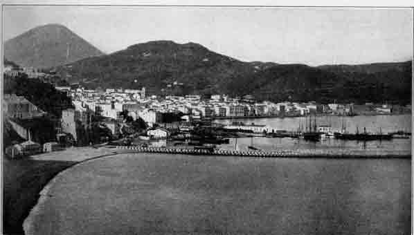
第32図 サレルノ、イタリア
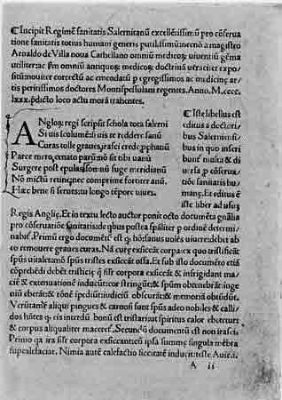
第33図 「サレルノ養生訓」（1480）の扉
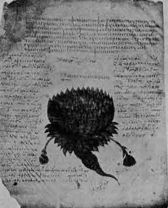
第34図 ディオスコリデス（＊医師、薬剤学）の「Anicia Juliana」の原稿における万代草（Sempervivum tectorum）の図（５世紀）
南イタリアおよびシチリア島のノルマン人王国はサラセン人、ギリシア人、ロンバルディア人が出会う場所であった。ギリシア語、アラビア語、ラテン語をこの首都の人たちは常に使っていて、12世紀のシチリアの学者たちはギリシア語から直接に訳していた。
プトレマイオスの有名な「
ナポリの南東方向およそ30マイルにサレルノがあり、ここは古い学問のランプを灯し続けていて、中世における医学教育の中心になった。「ヒポクラテスの都市（Civitas Hippocratica）」の名前の価値を持っていた。この都市がいつ作られたかは明らかでないが、サレルノの医師は９世紀の中葉には知られており、この頃から大学が作られ始めるまで、偉大な医学校であるだけでなく、病人や怪我人の有名な保養地であった。ロングフェロウの「黄金の伝説」で学者が言っている。
それからこの年のそれぞれの季節に
客人たちや旅行者の群がここに集まる；
巡礼たちや物ごい修道士たちや商人たち
レヴァントから、イチジクとワインを持って、
そして傷ついたり病気の十字軍兵士たちが、
パレスティナから帰ってきて。
客人たちや旅行者の群がここに集まる；
巡礼たちや物ごい修道士たちや商人たち
レヴァントから、イチジクとワインを持って、
そして傷ついたり病気の十字軍兵士たちが、
パレスティナから帰ってきて。
医学および外科の診療所、捨て子の病院、慈善看護婦たち、男性および女性の教授たち――女性教授としては有名なトロトゥラ（＊婦人科学書トロトゥラの著者）――がいて、薬局があった。解剖には主として動物が使われたが時にはヒトも使われた。11、12世紀に医学校は最高レベルに達し、素晴らしい天才だったフレデリック
 世（シチリア王、神聖ローマ帝国皇帝）は、３年におよぶ予備教育と外科学をふくむ医学コース５年を決定した。診療費表および開業の厳しい規則を作った。そして教員は理論および臨床をヒポクラテスおよびガレノスの権威のもとに学校で教えるように特に規定された。学校から出された文献は大きな影響力をもっていた。ブタの解剖学についてのある本は当時においてよく使われていた課目を図示している(6)。数多くの論文がデ・レンツィ(7)によって集められている。
世（シチリア王、神聖ローマ帝国皇帝）は、３年におよぶ予備教育と外科学をふくむ医学コース５年を決定した。診療費表および開業の厳しい規則を作った。そして教員は理論および臨床をヒポクラテスおよびガレノスの権威のもとに学校で教えるように特に規定された。学校から出された文献は大きな影響力をもっていた。ブタの解剖学についてのある本は当時においてよく使われていた課目を図示している(6)。数多くの論文がデ・レンツィ(7)によって集められている。1100年ごろのニコラウス・サレルニタヌスによる「解毒剤」は中世によく使われた薬局方の本であり、近代の薬局方の多くがこの本に従っていると思われる。
この学校で最も優れた人はコンスタンティヌス・アフリカヌスであり、彼はカルタゴ出身であって広範囲の旅行の後で11世紀の中葉にサレルノに到達した。彼はギリシアとアラビアの両方の著作に詳しく、ラージーおよびアヴィケンナの著作が西洋で知られるようになったのは、主として彼の翻訳を通してであった。
すべての他の本よりもこの医学校を有名にさせたのは「サレルノ養生訓（Regimen Sanitatis）」で、時には「医術の華（Flos Medicinae）」とも呼ばれた本であり、家庭医学を詩にしている。この本はサレルノで治療を受けたノルマンディ公ロバートに献呈され、「イギリス王のために……（Anglorum regi scripsit schola tota Salerni……）」と書かれている。（＊彼はウィリアム征服王の長子ではあったがイギリス王ではない）。これは栄養および家庭医学の手引きであって、一般に使われるようになった鋭い魅惑的な格言を含んでいる。例えば「喜び、節制、休息は医者の鼻先で扉を閉める」と。この本の全内容および種々の内容はアレキサンダー・クロウク卿が書いており(8)、この本がブリテン島に導入された経過をノーマン・ムア博士がフィンレイソン講義（グラスゴウ医学雑誌、1908）で述べている。
ギリシア医学を現代に運んだ第２の大きな流れは、東ローマ帝国を通っている。３世紀からコンスタンティノポリスの陥落（＊1453）までビザンチン医師が絶えることなく続いた。彼らの考えは主として古代ギリシアからのものであった。彼らのうちで最も優れていたのはオリバシオスで、大量の本を編集した。彼はペルガモンに生まれ、偉大な同じ都市出身者の追随者であったので『ガレノスの猿」と呼ばれていた。彼は多くの著作を残し、この１つの版はバッセメイカーとダーレンバーグによって編集された。古代の著者たちに関係する多くの事実が彼の本に記録されている。彼はユリアヌス帝の同時代人、友達、医師であり、帝のために医学百科事典を準備した。
他の重要なビザンチンの著者はアエティウスおよびトラレス（＊現在のトルコのアイディン）のアレキサンドロスであった。２人ともガレノスとヒポクラテスの強い影響下にあった。彼らの薬局方は主としてディオスコリデスに基づいていた。
我々は５世紀のものとされているディオスコリデスの著作をビザンチンから得ている。これは最も古い写本として知られているものであり存在しているうちで最も美しいものである。これは東帝国皇帝の王女であるアニキナ・ユリアナのために作られたもので、現在はウィーンの帝国図書館(9)の最大の宝物の１つである。初期の世紀からコンスタティノポリス陥落までのあいだに医学的に殆ど興味深いものはない。何人かの名前は有名であるが我々の記録では空白の時期である。後の時代に大きな影響を与えたので多分１人だけを述べることにしよう。アクトウアリオスである。彼は1300年ごろに生きていて、彼の本は16および17世紀に流行した一般人向けの尿検査（＊water-casting は uriscopy の古語）の基礎になった。彼の本には１ダースに及ぶラテン語の版があるがアイドラーの「小ギリシアの医学者および医者」（ベルリン、1841）は最高である。
コンスタンチノポリスが陥落して、多くのギリシア医学者および多くの価値ある写本が西に散らばり、ギリシア医学の流れは非常に小さな小川となった。
ギリシアの川における３番目で特に強い枝が目立ち、曲がりくねった経路をとって西に達した。下の図は７世紀始めにおけるギリシア―ローマ・キリスト教世界を示している。キリスト教は東に広がりほとんどシナに達している。それらの東方のクリスチャンの大部分はネストリウス派（景教徒）であり重要な中心の１つはエデッサであり、そこの学習施設は喧伝されていた。５世紀に古代で最も有名な病院がここに建設された。
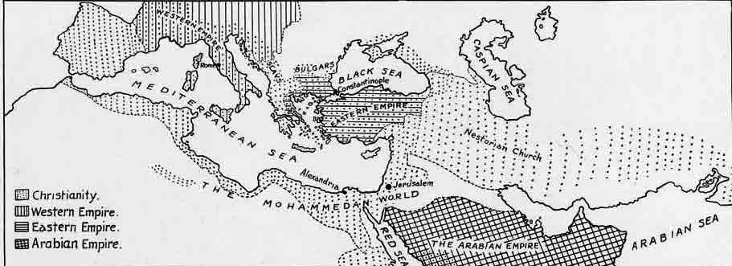
第35図 ７世紀始めにおけるギリシア―ローマの世界
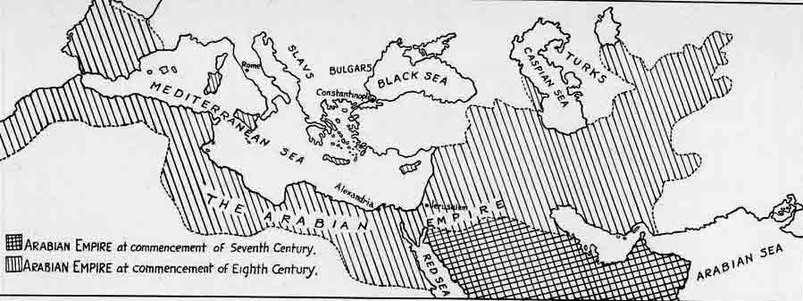
第36図 長方形は７世紀始めのアラビア帝国 斜線は８世紀始めのアラビア帝国
次のもう１つの地図は約１世紀後における同じ国々である。このように短い期間にアジアおよびヨーロッパでこのように顕著な変化が起きたことは他に例がない。１世紀のあいだに三日月（＊イスラムの象徴）はアラビアから東方帝国を過ぎてエジプトと北アフリカを覆い、西方はスペインを覆って、ヨーロッパの運命は732年におけるツール（＊フランス西部の都市）の門前における均衡に依存した。この時にキリスト教国の大部分を荒廃させた野蛮人の大群は、ギリシア―ローマ文明の最高のもの特にその科学の真価を深く評価している人々であった。医学の推進はアラビア人たちにより特別な方法によって奨励された。この素晴らしい人々における医学者の歴史を知りたい人は、ルシアン・ルクレールの「アラビア医学の歴史」（パリ、1876）に見事に書かれているのを見るであろう。優れた記述はまたフレインドの有名な「医学史」（ロンドン、1725-26）に与えられている。ここでは流れと運送の経路を短く示すだけしか出来ない。
キリスト教の興隆に伴って、アレキサンドリアは厳しい神学および政治党派の中心になった。若い時に幸運にもキングズリーの小説「ヒュパティア（＊美貌な女性の数学・哲学者。キリスト教徒に惨殺される。）」を読んだ人たちの記憶にこの話はつきまとう。これらの世紀は新プラトン主義キリスト教の強い影響のもとにあり医学にとって全く不毛であった。私は既にギリシア後期のアエティウスおよびトラレスのアレキサンドロスについて述べた。アレキサンドリア医師の最後は素晴らしい人物であるアイギナのパウロであり彼は医学および外科学において有名であり、７世紀の初めに生きていた。彼はまたオリバシウスと同じように偉大な編者であった。640年にアラビア人はアレキサンドリアを攻略して「西洋第１の都市」の大図書館は３回目の破壊を受けた。エジプト攻略の後で、ギリシア語の著作はしばしばシリア語を介してアラビア語に翻訳された。特に訳されたのはガレノスの医学書のあるもの、および化学の著書であり、これは化学についてのアラビアの知識の基礎になった。
このときにアレキサンドリアを経由したのは源泉の１つであり、９世紀には東部のカリフ諸国でギリシアの科学および医学が特に発展した。ここでルクレールから下記の幾つかの文章を引用しよう。
「アラビア人が９世紀に見せたような素晴らしい見世物を世界は１回しか見たことがない。この素朴な人々の熱狂は彼らを突然に世界の半分の支配者にし、ひとたび彼らの帝国を創り上げると、すぐに彼らの偉大さで欠けている科学知識の入手に着手した。ローマ帝国で最後に残っていたものを争った侵入者のうちで、彼らだけがこのように学問を追求した。ゲルマン人の大群は残忍性と無知を誇っていたが、破壊された慣習の鎖を再構成するのに1000年はかかった。しかしアラビア人はこのことを1世紀以内に成し遂げた。征服されたクリスチャンにおける競争を彼らは挑発した。これは健康な競争であって人類の調和を確立した。
彼らの科学における全資産は８世紀の終には１冊の医学参考書と何冊かの錬金術の本の翻訳だけであった。９世紀が終わる前にアラビア人たちはギリシアのすべての科学を持つようになっていた。彼らは自分たちの階級に第一流の研究者を作り上げ、居ないときには、暗闇の手探りになるような人たちを彼らの先導者たちから昇進させた。この頃から彼らは自分たちが精密科学に適していることを示し、先導者たちにこれが欠けていたのでその後には先導者たちをしのぐようになった。」
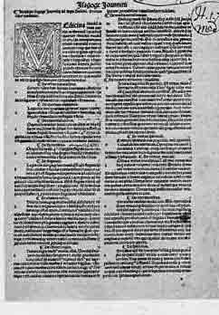
第37図 ヨアニティウスの Isagoge（In Articella, Venice, 1487）
アラビア人は主としてネストリウス派信者からギリシア医学を学んだ。彼らは翻訳者の２家族として知られているバフティシュアス家とメシュエス家のものであったが、共にシリア人であってギリシア語にもアラビア語にもあまり堪能では無かったようであった。しかしこの世紀で王子にあたる最も優れた翻訳者はホネインで、809年に生まれたキリスト教徒でラテン語化した名前はヨアニティウスであった。「彼の仕事が素晴らしく広範であり優れており重要であり、履歴の始めにあたり苦難に堂々と耐えたことにより、彼のすべてのことに我々は興味と好意を持った。もしも彼が東洋においてルネッサンス運動を起こさなかったら、より活発で確固で実り多い役割を誰も果たすことはできなかったろう」(10)。彼はおそろしく勤勉であった。彼はヒポクラテス、ガレノス、アリストテレスその他の著書の大部分を訳した。中世に非常に好んで読まれた本である「序論」（Isagoge）はガレノスの「Microtegni」の翻訳であって小さな手引きであり、これの翻訳はコルムリーの「ジョン・オヴ・ゴッデスデン」(11)に付け加えられている。最初に印刷された本は1475年にパドヴァで刊行された（第４章参照）。
ルクレールは医師以外にもギリシアの哲学者、数学者、天文学者を取り扱った100人以上の翻訳者の名前をあげている。インドおよびペルシアの医師の著作もアラビア語に翻訳された。
ギリシアの学問をアラビア人に導入した多数の翻訳者に続いて一流の独創的観察者たちが現れた。時間が無いので数人しか紹介できない。ラージーは生まれた町（Rai）の名前からこのように呼ばれていて、バグダッドの大病院で９世紀の後半に教育を受けた。真のヒポクラテス精神をもっていて病気を注意深く観察し、彼の天然痘の最初の精確な記載に我々は感謝している。彼は麻疹との鑑別診断を行った。この仕事は古シデナム協会のためにＷ・Ａ・グリーンヒルが翻訳し（1848）、その記載は読む価値がある。ラージーは強力な観察力をもちセンスがあって判断に優れていた。彼の著書は評判が高く、特に巨大な「大陸（continens）」はインキュナブラ（＊1500年以前にヨーロッパで活版印刷されて現存する書物）のうちで最大なものの１つである。ブレスキア版（1486）は588ページ以上からなり８kg以上の重さである。ギリシアその他の著者からの引用が多い百科全書であり、著者自身の経験のメモが散りばめられている。彼の「アルマンソル」は非常に評判の高い教科書であり、印刷が行われた最初の本の１つである。「アルマンソル」（この本を献呈した王子の名前）の
 巻の題は「頭から足までのすべての病気について（De aegritudinibus a capite usque ad pedes）」であって、中世に非常に好まれた教科書であった。研究に熱心だったのでラージーは「実験家」として知られた。
巻の題は「頭から足までのすべての病気について（De aegritudinibus a capite usque ad pedes）」であって、中世に非常に好まれた教科書であった。研究に熱心だったのでラージーは「実験家」として知られた。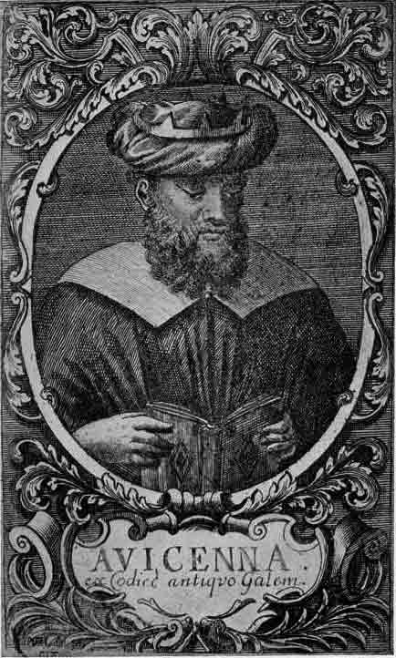
第38図 アヴィケンナ
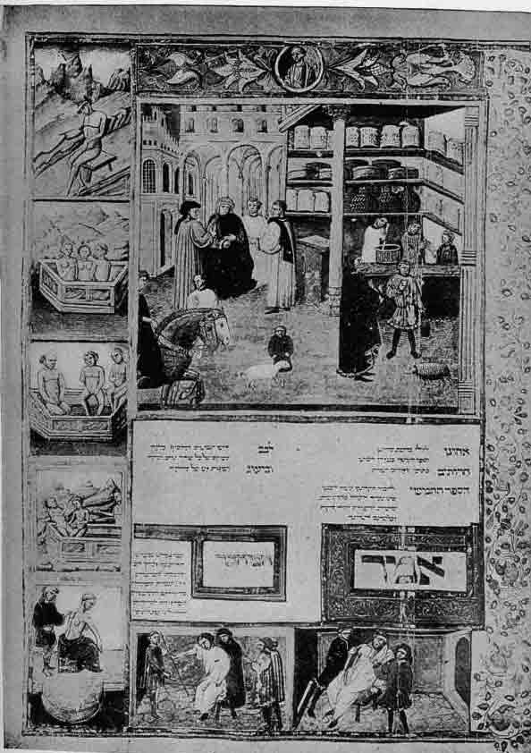
第39図 ボローニャ図書館にあるアヴィケンナのヘブライ語原稿（15世紀）の彩色図
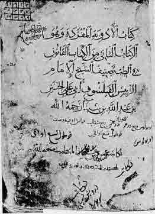
第40図 ボドレアン図書館にあるアヴィケンナの詩稿のページ
中世を通じて王子として知られ、まさにガレノスのライバルであった最初のアラビア人はペルシア人のイブン・シナであり、医学史における最高の名前の１つである。彼はアヴィケンナの名前でよく知られている。ほぼ980年にバハラの近くのコラーサーンに生まれている。彼は短い自叙伝を残しているので若い頃のことを知ることができる。彼は10才にしてコーランを暗唱し、12才には法律および論理学で議論をした。従って彼にとって医学は容易であり、数学や形而上学のように難しく複雑ではなかった。彼は昼も夜も勉強して夢の中で問題を解くことができた。彼は言った。「難しかったらノートを見て創造神に祈った。夜になって疲れたり眠くなったら、１杯のワインを飲んで自分自身を元気づけた。」(12)彼は書くのが速くて多くの本が彼の著書と言われ、これまで書かれた本のうちで最も有名な医学教科書の著者である。「規範（Canon）」はどの本よりも長期間にわたって医学の聖書であったと言っても間違いはないだろう。これは「すべての過去の発展を要約したものであり、すべてのギリシア・アラビア医学の集大成である。これは事実によって法則のヒエラルキーを自由に描いたものであり、これはあまりにも巧みに支配し互いに必要とし、持ちこたえ互いに支持しているので、偉大な組織者の賢明さを感嘆することが要請される。彼は並ぶもののない体系化能力をもって、すべての源から材料を集めて堂々たる詭弁体系を作った。アヴィケンナは彼の見地に従って、当時の医科学に殆ど数学的な正確さを与え、治療術は経験を完全に認めなかったのではないが、ガレノスとアリストテレスの理論的な前提から論理的な過程で演繹した。したがって論理的な構成には非の打ち所が無く、当時の概念では疑いが無い自明の理であると見做されていたので、多くの研究者や臨床家が形式主義のこの完成の呪文の下に服従して、「規範」を絶対に正しい神託と認めたのは驚くべきことであろうか？」(13)
数えられないほどの写本が存在する。最も美しいものの１つであるヘブライ語写本（ボローニャ図書館）を示す（第39図）。ラテン語版は1472年に印刷されその後に多くの版があり、最後は1663年のものである。アヴィケンナは著者として成功しただけでなく、成功した医師であるとともに同時に政治家、教師、哲学者、文学者である人たちの原型でもある。噂によると彼は浪費家になり、同時代に言われたことによると彼の哲学は彼を道徳的にはせず、彼の医術は彼の健康を保たなかった。彼は詩人としても有名であった。ボドレアン図書館（オクスフォード大学）にある彼の詩の写本の１ページをここに示すことにする（第40図）。Ａ・Ｖ・Ｗ・ジャックソン教授は、「アヴィケンナはオマル・ハイヤーム（＊詩ルバイヤートの作者）より１世紀前であるのに、詩のあるものは奇妙に似ている。あの『大不信心者』は次のような詩を書くかも知れない」と。
大地の暗い中心から悪魔の門まで
私はこの世界のすべての問題を解決し
企みと悪知恵のすべての罠から解放し
死の運命だけを残してすべての足かせを解決した。
私はこの世界のすべての問題を解決し
企みと悪知恵のすべての罠から解放し
死の運命だけを残してすべての足かせを解決した。
（訳者注：ジャックソン教授の原著によるとこの詩はフィツジェラルド訳のルバイヤート詩XXXIを教授がパラフレーズしたもの）。
彼の神への賛歌はプラトンが書いたものを思わせるし、有名なクレアンテス（＊ストア哲学者）(14)の競争相手である。時たまの読者はアヴィケンナに好意的な感情をもつ。中世で彼が医学学派を支配したことは、我々の歴史におけるもっとも驚くべきことである。多分ルクレールが「アヴィケンナは知的な現象である。こんなに早熟で速く広範に知識が広がり、活動がこのように変わり疲れを知らないことは多分ほかに無いだろう」と言っているのを誇張と思うだろう。。この男の手触りを感じたのはメーレン(15)の訳した神秘的および哲学的な著作を読んだときである。又もやプラトンである。人々は死の天使によって自由になるまで、掴まえられ籠に入れられた鳥のようなものである、というような美しい喩え話は不滅のプラトンの「対話篇」のどこにでも見ることができよう。愛についての小論文は「饗宴」への注釈である。そして運命についてのエッセイは精神がギリシア人のものであり、東洋的な運命主義の痕跡は無い。彼の特別なメッセージとして私が貴方がたに残して置く次の結尾の文章からこのことが判るであろう。「貴方の能力の限界を気に留めることはない。そうすれば真の知識に到達できるだろう。次の言葉は如何に真であろうか。絶えず努力しなさい。自然が各人に計画した大量の成功が得られるであろう」と。アヴィケンナは58才で死亡した。医療が役に立たないことを知ったときに、彼は避けられないことに身をまかせ、すべての持ち物を売り、金銭を貧しい人たちに配り、毎３日に全コーランを読み、神聖な断食月に死んだ。彼の墓は古代のエクバタナであるハマダンにあり、長方形の単純な煉瓦の建物であって、気取らない庭で囲まれている。これは1877年に改修されたが又もや修理する必要がある。挿絵（第41図）はテヘランのネリガン博士が送ってくださった写真である。この偉大なペルシア人は死んだ今でも盛んな医療をしている。多くの巡礼が彼の墓を訪れて、治癒は稀でないと言われている。
西カリフ国は東カリフ国と同じように優れた医師や哲学者を作った。優れた医学校がセヴィリア、トレド、コルドヴァに創設された。教授たちのうちで有名なのは、アヴェロエス、アブルカシム、アベンゾアルである。アブルカシムは「アラビアにおける外科学の復興者」であり、アヴェロエスは中世に「アリストテレスの魂」または「注釈者」と呼ばれ、今日では医師としてより哲学者として知られている。モスレム正統派の復活とともに彼は不幸な日を送るようになり、自由思想家として死刑になった。「私の魂は哲学とともにあれ（Sit anima mea cum philosophic）」は彼の言葉であると言われている。
アラビア医学ははっきりとした特徴を持っていた。基礎はギリシア医学であり、ヒポクラテスおよびガレノスの翻訳に基づいていた。解剖が禁じられていたので解剖学にも生理学にも貢献しなかったし、病理学は実際のところガレノスのものであった。幾つかの新しく重要な病気が記載された。新しく有効な治療法が導入され、主として植物界の医薬品が使われた。アラビアの病院はよく組織されていて、当然のことながら有名であった。アル−マンスル・ギラフンが1283年に作ったこのような病院は現在のカイロにはない。ノイブルガー(16)が引用しているマクリツィの記載によるとまるで20世紀の病院である。
アラビア人が最大の進歩をとげたのは化学の領域であった。貴方がたは覚えているだろうが、エジプトで化学はすでにかなり発達していて、ここにおいて文明が大きな進展を遂げたのは、１つにはナイル川峡谷における銅の精錬であろうというエリオット・スミスの見解を私はほのめかした。プトレマイオス王の輝かしい時代に化学と薬理学の両者が研究され、アラビア人が640年にアレキサンドリアを占領したときにこれらの領域の多くの研究者がまだ居たことは、ありそうでないことではない。
これらの初期のアラビア人著作者のうちで最も有名なのは、あるていど神秘的なジーベル（錬金術師）である。彼は８世紀の前半に生きていて、彼の著作は中世のあいだに著しい影響力があった。彼の話のすべてはベルトローの「中世の化学」（パリ、1896）に論じられている。アラビア科学の西洋への伝達は十字軍とともに始まった。しかしこの以前にも数学および天文学の重要な知識はスペインを経て、南ヨーロッパと中央ヨーロッパに沁み込んでいた。翻訳者のあいだで何人かの名前が有名である。後に教皇シルヴェスター
世になったジェルベールは現在のアラビア数字を我々に与えた人と言われている。彼の素晴らしい一生についてはテイラーの本(17)で読むことができる。これによると「彼の時代における第１の心、最大の教師、最も熱心な好学者、最も博識な学者」であった。しかし彼は医学にたいして直接には何も行わなかったようである。ギリシア・アラビアの学問は２つの源を通ってヨーロッパに入った。既に述べたように北アフリカのキリスト教僧侶のコンスタンティヌス・アフリカヌスは広範に旅行して多くの言語を学んで、サレルノに来て多くのアラビア語の著作、とくにヒポクラテスとガレノスの著書をラテン語に訳した。後者の「パンテグニ（すべての医術を含むものの意）」は中世において最も使われた教科書であった。彼が翻訳した著書の長いリストはシュタインシュナイダー(17a)によって与えられている。コンスタンティンの時よりも前にアラビア医学がサレルノに入っていないことはなさそうであるが、中世のその後における彼の翻訳の影響は非常に大きかった。
第２はもっと重要な源であり、スペインとくにトレドにおけるラテン語翻訳者を経由するものである。ここでは12世紀の中葉から13世紀の中葉までアラビアの哲学、数学、天文学の素晴らしい数の著作が翻訳されていた。翻訳者のうちでクレモナのジェラルドは特に優れていて「翻訳者の父」と呼ばれていた。彼は中世における最も明晰な知者であり、著しく多様な材料を流通させることによって、科学への第１の重要性がある仕事を行った。医学者の著作の翻訳だけでなく、哲学、一般文学の無差別な著者たちが彼のペンから現れた。彼は天文学者プトレマイオスの有名な「
この時期の翻訳者の多くはユダヤ人であり、多くの著作はヘブライ語からラテン語に訳された。暫くのあいだ学問におけるユダヤ人の言語はアラビア語であり、アラビアの知識およびその翻訳は、彼らを経過して南ヨーロッパおよび中央ヨーロッパに移された。
中世の思想に最も深い影響を与えたアラビアの著作者はアヴェロエスである。彼はアリストテレスへの偉大な注釈者であった。
13世紀の知的な現象でもっとも顕著なのは大学が始まったことである。大学の創設の話はラッシュダルの壮大な著書（1895）に詳しく述べられている。僧院の学校および同僚が責任を持つ（collegiate）学校、たとえばサレルノのような学舎やボローニャのような学生の
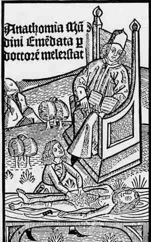
第42図 ムンディヌスの解剖学の扉（Melerstat 版）（1493年頃ライプチヒで印刷）
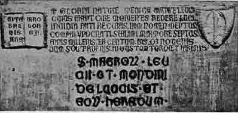
第43図 ムンディヌスの銘板（ボローニャの San Vitale 教会）
この時期において医学の発展と関連して２つの大学が特に興味深い。ボローニャとモンペリエである。前者においては解剖学の研究が復活した。人体構造の知識についてはガレノスの時代から1000年以上にわたって進歩が無かった。ギリシア語からシリア語へ、シリア語からアラビア語へ、アラビア語からヘブライ語へ、およびヘブライまたはアラビア語からラテン語への翻訳において、ギリシアの古い著作者の形態および思想にしばしば混乱が無いわけではなく、しばしば誤りが生まれ、ガレノスの解剖学は伝達にさいしてひどい目にあっていた。ボローニャにおける医学教育について最初に知られているのはダンテと同時代のタデオ・アルデロッティである。彼はアラビアの学識とギリシアの精神を結びつけた。彼は極めて高く評価されてボローニャの第１の市民で恩人であるとみなされ、税金を免除された。彼が金持ちになったのは驚くべきことではない。彼が教王ホノリウス
世にふつうの謝金として要求したのは毎日200フローリンで、その他に「心付け」が6000フローリンであった。ボローニャにおいて医学の研究にもっとも影響があったのはモンディノ（＝ムンディヌス）であった。彼は近代解剖学の最初の研究者であった。５年に１体は人体を解剖すべきであるとサレルノ医学校で布告されていることを見たが、この目的のための許可を得るのは非常に困難だった。タデオの強い影響のもとでボローニャでは時に解剖もできただろう。しかし解剖の研究はモンディノが教授になるまで普通には行われなかったのだろう。死体はふつう死刑囚のものであったが1319年に４人の医学生が死体窃盗の罪で裁判にかけられた記録がある。少なくとも私が知る限りではこのように残酷な行為にたいする裁判の最初の例である。1316年にモンディノは解剖の研究書を刊行し、200年以上にわたって教科書として使われた。彼は何故人が本を書かなければならないかについて面白い理由をガレノスから引用している。「最初に彼自身の友達を満足させるためであり、第２に彼自身の知力を最高にまで働かせるためであり、第３に老年で起きる記憶障碍から守るために」と。彼の著作の多くの手稿があった筈であるが、今ではイタリアで極めて稀である。彼の本は最初にパヴィアで図の無い小さな２つ折りで印刷された。これは15世紀と16世紀にしばしば増し刷りされた。風変わりな扉絵（第42図）は中世において解剖学を教える方法を示している。講義者は椅子に座ってガレノスの本を読んで講義をし、理髪師外科医すなわち「展示者」は体腔を開いている。
サレルノで婦人が医学を勉強していることは既に述べた。ボローニャ医学校においても早くから彼女たちの名前に出会う。モンディノには若い少女のアレサンドラ・ギリアニという有能な助手が居たと言われている。彼女は熱心な解剖手であり血管に色素液を初めて注射した。彼女は仕事で疲労してまだ19才の若さで死亡し、彼女の記念碑は今でも見ることができる。
ボローニャはその優れた教授たちを素晴らしい墓碑によって栄誉を与え、そのうちの16または17は著しく良く保存され市博物館で見ることができる。モンディノの墓碑も存在している。ボローニャのサン・ヴィタル教会の壁にある浮き彫りの墓碑である(19)。
他の中世初期の大学で医学において特に興味のあるのはモンペリエ大学である。我々の話と関係して３人の偉大な名前がある。アルノール・ド・ヴィラノヴァ、アンリ・ド・モンドヴィル、ギ・ド・ショアリックである。この市はスペイン国境からあまり遠くはなく、８世紀にアラビア人の侵入が弱まってきてもこの地域では強いアラビアの影響が残った。大学が始まった時期は明らかでないが、12世紀に医学の教授が居たが教皇印によって正式に創設されたのは1289年であった。
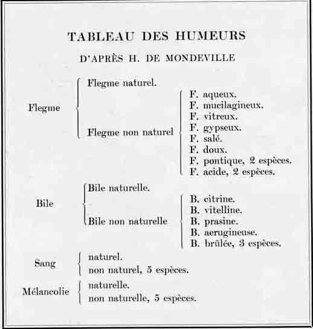
第44図 アンリ・ド・モンドヴィルによる体液の表（Nicaise）
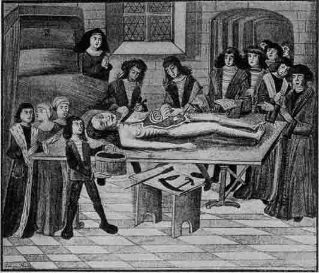
第45図 モンペリエ図書館所蔵14世紀のギ・ド・ショリアックの原稿にある中世における解剖の光景
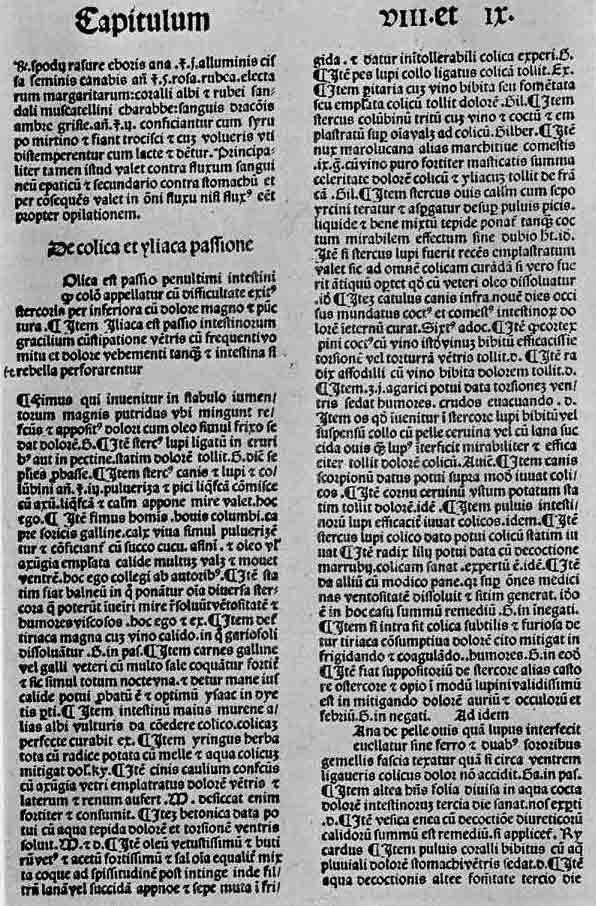
第46図 ローマ教皇ヨハネス21世の「慈善の宝庫」のページ（アントワープ、1486）
アルノール・ド・ヴィラノヴァは中世における多作な著者の１人であった。彼はひろく旅行しアラビア医学においてよく読まれ、法律および哲学の研究者でもあった。彼は「養生訓（Regimen Sanitatis）」の初期の編集者であり、栄養および衛生学の強い推進者であった。病気についての彼の観点は主としてアラビア医学者のものであり、彼が我々の知識に重要な貢献をしたとは思わない。しかし彼は強い個性を持っていて、印刷された100冊の本に彼の名前と関係した多くの記載のあることから判るように、中世医学に永続的な痕跡を残している。彼は医学知識によって教皇と仲が良かったとはいえ、絶えず教会と問題を起こしていた。アルノールが教皇クレメント
 世に献呈した本を探すようにとの教皇大勅書があるが、あまり年が経たないうちに彼の本は異教的であると非難された。
世に献呈した本を探すようにとの教皇大勅書があるが、あまり年が経たないうちに彼の本は異教的であると非難された。アンリ・ド・モンドヴィルに我々は典型的な中世の外科医を見ることができる。そしてパーゲルが編集した「解剖学」と「外科学」（ベルリン、1889-1892）およびニケーズのフランス語版（パリ、1893）によって彼の仕事は詳しく知られている。アラビア人の著者を多数に引用していることから判るように明らかに支配的な影響を受けてはいたが、彼は第一流の独立した観察者であり実際的な外科医であった。彼は鋭いウィットを持ち、当時の医学の悪用に反対して毒舌を吐いていた。この頃にヒポクラテスの体液説がいかに臨床を支配していたかは、ニケーズがド・モンドヴィルの仕事から作った表によって見ることができる。ここにこの時期における病理学の全体が見られる。
この医学校の歴史におけるもっと大きな名前はギ・ド・ショリアックであり、ニケーズは彼の仕事も編集した（パリ、1890）。彼の「外科学」は中世後期における最も重要な教科書であった。これの写本が存在して15世紀に14の版があり16世紀に38の版があり、17世紀にはさらに写本が作られた。彼もまたアラビア人たちの外科学に支配されていて、ほとんどすべてのページに賢人アヴィケンナ、アルブカシム、ラージーの名前が見られた。彼は外科医をつくるのに４つの条件が必要であるとしている。第１は学問のあること、第２は熟練していること、第３は賢くなければならず、第４は規律正しいことである。
外科学の歴史における２人の関係についての洞察力のあるスケッチを、クリフォード・オールバット卿は1904年にセント・ルイスの学会で述べている(20)。２人は強い男で実際的な心と良い手を持っていて、経験は彼らに英知を与えた。良い外科医をしばしば特徴づける率直な正直さを２人ともに持っていた。私は新しい外科医たちにド・モンドヴィルが言ったことを伝えよう。「もしも貴方がたが金持ちにはしかるべき謝礼で、貧しい人たちには慈善で、良心的に手術をしたならば、僧侶の役をする必要も自分の魂のために巡礼をする必要もない」と。
もう１人の偉大な医師について述べよう。アバノ（＊アバノはパドヴァに近い温泉のある小さい町）のピエトロである。彼は偉大なパドヴァ医学校に関係する優れた医師の長いリストの最初である。哲学と医学についての種々の考えを和解させようと試みたことから「調停者」として知られており、臨床家および著作者として特に有名であり、1481年以前に印刷された182冊の本のうちの８冊が彼のペンによるものであることから彼の粘り強さが判る。彼はパリ、ボローニャ、パドヴァで医学を教えたようである。彼は熱心な占星術師であり、人々のあいだで魔術師としての評判があり、同時代人のアルノール・ド・ヴィラノヴァと同じように教会と問題を起こし、何回も宗教裁判所に出頭していたと言われている。実際に彼が火あぶりにならないで済んだのは、いい時に死んだからであると言われている。彼は多くのアリストテレスの本に注釈を加え、「問題集」（＊アリストテレスの哲学問題集）にたいする彼の解説は大流行であった。彼の本の初期の版は印刷された本として最も優れていた。彼は魔術師であるという評判を乗り越えて、死んで100年以上も後にウルビーノ公は彼の肖像をパドヴァの宮殿の門の上に飾り、次の題字（＊魔術師として死刑の宣告を受けたが異端の疑いが晴れたこと）を記させた。
PETRUS APONUS PATAVINUS PHILOSOPHIAE MEDICINAEQUE
SCIENTISSIMUS, OB IDQUE, CONCILIATORIS NOMEN
ADEPTUS, ASTROLOGIAE VERO ADEO PERITUS,
UT IN MAGIAE SUSPICIONEM INCIDERIT,
FALSOQUE DE HAERESI POSTULATUS,
ABSOLUTUS FUERIT.(21)
SCIENTISSIMUS, OB IDQUE, CONCILIATORIS NOMEN
ADEPTUS, ASTROLOGIAE VERO ADEO PERITUS,
UT IN MAGIAE SUSPICIONEM INCIDERIT,
FALSOQUE DE HAERESI POSTULATUS,
ABSOLUTUS FUERIT.(21)
パドヴァ宮殿の大広間にアバノの天文図（占星術の12宮図）が描かれていたと言われている。
中世医学の特徴の１つは神学との密接な関係である。これは不思議なことではない。当時の学問は主として聖職者の手にあったからである。もっとも評判の高かった本「貧乏人の宝庫（Thesaurus Pauperum）」は後に教皇ヨハネスXXI「(XXI)」は縦中横］世となったペトルス・ヒスパヌスによって書かれた。第46図にあげたこの本のページから法王の臨床を知ることができる。「腸骨の激痛」は種々の虫垂炎を指しているのであろう。（＊産児制限および通経についての助言もあると言われている）
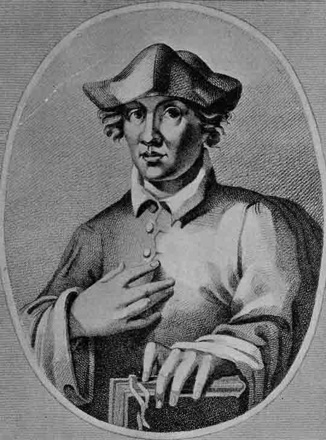
第47図 ロージャー・ベイコン
我々の目的には２つの灯台が人および自然の見解についての13世紀の精神を照らしている。アベラール（フランスのスコラ哲学者）や聖トマス・アキナス（イタリアのスコラ哲学者）よりもどんな医師たちよりも、アルベルトゥス―マグヌス（ドイツのスコラ哲学者、ドミニカン）とロジャー・ベイコン（イギリスの哲学者、フランシスカン）が科学の太陽が昇るにさいして人々を目覚めさした。彼らの生涯と仕事は何と対照的だろう！ 偉大なドミニカンの長い生涯は実り多い成果の絶えることが無い勝利であった。彼が自分に課した大きな仕事は完成されただけでなく同じ時代の人たちによって完全に受け入れられた。彼の生涯は研究および教育だけでなく実際の信仰であった。ドイツにおける教団の最高でありレーゲンスブルクの司教として彼は教会において影響をもっていた。死にあたって追想を残し、これは彼の偉大な弟子トマス・アキナスが優れた追想を書いているほかに、相当するものはこの世紀に１、２しかない。歴史上にアルバートは良い人、正しい人、信仰深い人など数多いが、我々が「
アルベルトゥス・マグヌスは百科全書的な研究者で著者であり、すべての知識を自分の分野としていた。彼の偉大な仕事であり偉大な野心はアリストテレスを自分の世代の人たちに解説することであった。彼の時代の前にアリストテレスは少ししか知られていなかったが、彼はアリストテレスの科学を同時代の人たちに届くようにし、アリストテレスの少なくない部分を受け入れるようにした。彼は自然の研究およびさらに実験によって確かめることの重要性を認識し、その後の長いあいだ、テオフラストス以来ディオスコリデス以外に誰も行っていなかった植物の徹底的な研究を行った。彼がパラフレーズしたアリストテレスの自然史の本は非常に人気があり、その後のすべての研究の基礎になった。医学に関係する彼の研究、とくに「女性の神秘（De Secretis Mulierum）」や「草木の諸徳について（De Virtutibus Herbarum）」は評判が高く、彼が前者の著者であるかは疑いもあるが、ジェイムズとボーグネットはこれを彼の全集に入れている。彼の学識は素晴らしいので彼は魔術師であると疑われ、ノデーの賢人リストに入れられ、魔術師であるという正しくない評判を受けた。フェルグソン(22)は言っている。「お守り、受け取り、人および動物のための共感的および魔術的なものの入ったパンフレットがアルベルトゥスの名前で実際に頒布されている」と。しかしアルベルトゥスが不滅である最大の権利は彼がトマス・アキナスの先生であり彼を鼓舞したことであろう。トマス・アキナスはアリストテレス哲学をキリスト教神学と融合させる大きな仕事をし、「天使的博士（Doctor Angelicus）」としてカソリック教会において最高の権威者になっている。
医学的な観点からもっと興味をもつ男はロジャー・ベイコンである。それには２つの理由がある。中世の誰よりも彼は自然を新しい方法で研究する必要を感じていた。「実験科学は他の科学よりも３つの大きな特徴を持っている。これは直接の実験によって結論を確かめる。これは他の方法では達することができない真理を見つけ出す。これは自然の経過を調べ我々に過去および将来の知識を開く」のような文章を書く男の精神は我々の日のものであり同時代のものである。ベイコンは早く生まれすぎ、同時代人たちは彼の哲学およびさらに彼の機械的な計画や発明にほとんど同感しなかった。ギリシア人の時代から人間の知識の発展において実験が何を意味するかを誰もこのように鋭く理解してはいなかった。彼は我々には常識であるところの知識は役にたつものであり実際と関係するという考えが頭を離れなかった。「彼の主な功績は権威を受け入れようとはせずに独創的な研究への経路を指示したことである。しかし彼はまだこの道を絶えず行う方法を持っていなかった。この衝動を満足することができないので、人が自然を大きく支配できることを期待している著作のいくつもの場所で、彼はこのことを熱望している」(23)。
ベイコンは幾つかの医学書を書いているが大部分は草稿として残っている。「老人にならないことと若さを保つこと」という彼の著書は1683年に英語で出版された(24)。彼が権威とみなしていたのは主としてアラビア人であった。彼の草稿の１つは「医師の悪い慣習」であった。1914年６月10日の彼の誕生日にロジャー・ベイコンの700年記念が彼が最高の飾りであるオクスフォード大学で祝われる。ボドレアン図書館にある彼の未刊行の草稿は大学出版会のクラレンドン・プレスで出版されることになっている。未刊行の医学著作も含まれることを希望している。
もしもヨーロッパの心がロジャー・ベイコンの発酵素にたいして準備されていて、人々がスコラ派の哲学やドゥンス・スコトゥス（スコットランドの神学者）、アベラル、トマス・アキナスの微妙なことに何世紀も無駄に過ごさないで、物理学、天文学、化学の役に立つ研究をしていたらどのような運命になっていただろうか？ 誰が言えるだろうか？ これらの人たちの質について誤らないように。彼らは知者の巨人であり、人類の進化に重要な位置を占めている。しかしこの世界を支配する努力において、彼らはスウィフトの有名な「キュウリから太陽光を抽出するのに忙しい」大学の構成員のようなものである。もちろん私は自然人間の立場から、エラスムスが嘲笑ったような「瞬間、無遠慮、揚げ足取り、および関係」についての哲学論争からより、ロジャー・ベイコンの実験からもっと希望があると言っているのである。
中世の大学でどのように学ばれていたかは興味深い。オクスフォードには大部分の大陸の大学と同じように３つの学位がある。学士、医師免許、および医学博士である。読まれている本はガレノスの「医術（Tegni）」、ヒポクラテスの「金言（Aphorism）」、Isaacの「熱について（De Febribus）」およびニコラウス・サレルニタヌスの「解毒剤（Antidotarium）」である。もしも医術の卒業生なら全部で６年が必要であり、他の学部なら８年である。このようなことの非常に充分な情報はFerrari博士による「15世紀における医学教授職（Une Chaire de Medecine au XVe Siecle）」（パリ、1899）から得ることができる。パヴィア大学は1361年に創設され、多くのイタリアの大学と同じように主として外国人が来ており、彼らは国籍によって集まっていた。しかしボローニャのようには大学を支配してはいなかった。この本の基礎になっている Ferrari 家の書類は1432年から1472年まで教授であったその１人について語っている。これを読むと、とくに他の領域が無いのにもかかわらず、ある特定の方向における教育・研究の領域に驚く。1433年における医学教員たちが教えたリストが存在する。全部で20あり、朝、昼、夕の特別講義がある。課目は医学、診療術、物理学、形而上学、論理学、占星術学、外科学、および修辞学であった。驚くべきことは解剖学が無いことであって1467年のリストにも存在しなかった。給料は多くなく、教授の大部分は診療を行わざるを得なかった。400から500フローリンが最高であった。
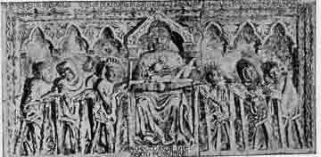
第48図 中世のボローニャにおける医学の講義（医師 Michele Bertalia の墓より、1328）
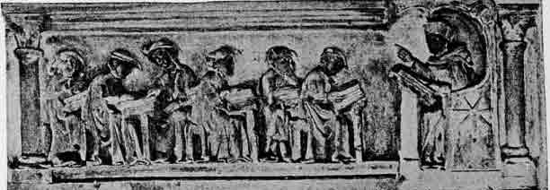
第49図 講義をしているムンディーヌス（ボローニャの San Vitale 教会にある彼の墓より）
アラビア医学の支配は驚くべきものであった。1467年に特別講義としてラージーの「アルマンソール」が行われ、フェラリの持っている図書カタログで半分以上はギリシア医学のアラビア人たちによる注釈であった。彼らの影響のもっと驚くべきことはフェラリの教科書に見られる。これは1471年に印刷されたものでその前には写本として流通していた。その中でアヴィケンナは3000回以上も引用され、ラージーとガレノスは1000回、ヒポクラテスは140回であった。フェラリ教授は大学で重要な役割をし、多くの診療を行っていた。個々の診療において彼がどのように言っていたかに興味を持つだろう。彼が詳細な診療を自分の手で書いた記録を私は持っていて、中世の医師に見てもらうのは何と大変なことだろうと思っている。ジョン・ド・カラブリア氏は胃の消化が弱く、リューマチ性の脳疾患を患い、肝臓の過剰な熱と乾燥、および黄胆汁の増大を伴っていた。最初に食事および一般生活についての詳細な討論が行われ、次にある種の軽い医薬が補充として与えられた。しかしすべての可能性のために22の処方を出すには、大きな薬局が必要だったろう。
初期の大学における困難の１つは、良い写本を入手することであった。ヨーロッパにおいて最も記録が完全なパリ大学の医学部には1395年における目録があり、これには12巻の本がリストされているが、殆どすべてアラビアの著者のものであった(25)。フランクリンはこの時期における医学写本の不足について、興味あることを書いている。ルイ
 世は自分の健康を気にして、自分の図書室にラージーの本を置くことにした。コピーのあるのは医学校だけであった。警備を厳重にして写本を借り、幸いなことに返却された。
世は自分の健康を気にして、自分の図書室にラージーの本を置くことにした。コピーのあるのは医学校だけであった。警備を厳重にして写本を借り、幸いなことに返却された。モンペリエ大学がパリ大学より優れていた１つは多くの重要な写本、とくにアラビア人著者の写本を持っていることであった。いろいろな著者たちの抜粋を含む「
ギリシアの四体液学説は病気のすべての概念を彩っていた。健康はこれら体液の調和に依存していると考えられた。血液質、粘液質、胆汁質、黒胆汁質（メランコリック）はそれぞれの体液が優勢であることに関連していた。身体は７種のいわゆる「自然なもの（natural）」からなっている。すなわち、元素、気質、体液、成分（または部分）、徳（または能力）、作用（または機能）、および精神である。９種ある「自然でないもの」が健康を保っている。すなわち、大気、食べ物と飲みもの、動きと休息、眠りと目覚め、排泄と停留、である。これと熱情である。病気はふつう体液の構成の変化によるものであり治療の指示はこれらの学説によってなされた。患者たちは排便させられ、痩せさせられ、冷やされ、熱され、下剤をかけられ、強化される。この体液学説は中世のあいだ普及していてさらに現代まで至っていた。実際のところ、この反響は今でも病気の本態についての一般人の会話に聞かれる。
アラビア人たちの治療についての熱心さと問題解決は有名であった。瀉血はすべての病気の大部分において最初に行われることであった。フェラリの臨床において瀉血が行われなかったことは殆どなかった。すべての治療は、６つの非自然なものの調節に向けられ、これらは健康を保ち病気を治すか、または逆作用をした。大部分のよく使われる医薬品は植物界由来であり、それらは主としてガレノスが推薦したものであり、ガレノスの名前がついていたし、今でもついている。多くの重要な鉱物性薬品はアラビア人が導入したものであり、とくに水銀、アンチモン、鉄、その他はそうであった。それに加えて動物の部分や産物である多数の薬があり、あるものは無害であり他は有益であり、他のものはやはり無益であ、むかつくものであった。小外科は床屋の手にあり、彼らは瀉血のような小さな手術を行った。もっと重要な手術は数が少なく外科医が行った。
この時期に占星術学は天文学を含んでいて、あらゆる場所で教えられていた。ジェイムズ・ヨンゲが1422年に翻訳した「Gouernaunce of Prynces, or Pryvete of Pryveties」(26)に次の発言がある「As Galian the lull wies leche Saith and Isoder the Gode clerk, hit witnessith that a man may not perfitely can the sciens and craft of Medissin but yef he be an astronomoure.」と。（＊原文のまま）

第50図 1546年における占星術による予後診断
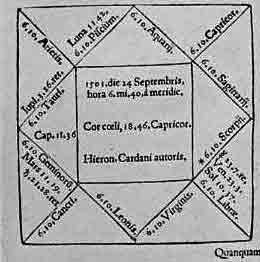
第51図 ジェロラモ・カルダノの星占い
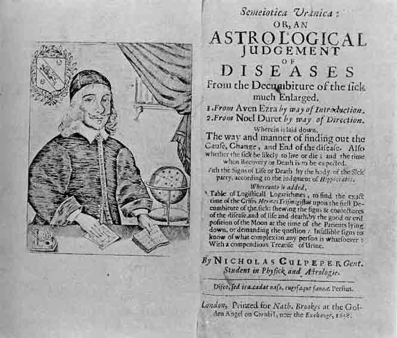
第52図 ニコラス・カルペパーの占星術書の扉（1658）
占星術がバビロニアおよびギリシアからローマを通じて如何に広がったかを見てきた。これは活発で積極的な祭儀として中世に持ち込まれ、教会によって時には不信の念をもって見られたが、宮廷により認められ、大学で力づけられ、常に大衆の側にあった。中世大学のカリキュラムにおいて天文学は音楽、代数学、幾何学とともに４学科（＊文法、論理学、修辞学の３学科に続いて習う）となっていた。初期の学部において天文学と占星学は分かれておらず、ボローニャにおいて14世紀初期において占星学の教授がいるのを見ている(27)。この給料を貰っている教授の１つの任務は質問をしてくる学生たちのために無料で「判断」をくだすことであり、危険でデリケートな任務であり、ボローニャのこの講座の優れた教授であったチェッコ・ダスコリ（火刑になった最初の大学教授）はフィレンツェの宗教裁判の犠牲者として1327年に火あぶりに処せられた(28)。
ロジャー・ベイコン自身は判断占星術および遊星、恒星、箒星が出産、病気、死に影響を及ぼすことの熱心な信者であった。
ルネッサンスの強い心を持っていた多くの人たちは、占星術の愚かな考えから離れていた。たとえばコルネリウス・アグリッパ（ドイツの万能学者）は修道士に星占いを頼まれたときに次のように言った(29)。「判断占星術は迷信信者がする虚偽の考えに過ぎない。彼らは科学を不確かな物の上に作り上げて、それによって欺かれている。従って同じように考えなさい。最も高貴な哲学者たちはこれをあざ笑い、キリスト教神学者は拒絶し、教会の聖なる審議会は非難している。それなのに、このようなうぬぼれを説得するのが義務のあなたが、圧迫され、どのようであるか私の知らない心の苦悩で盲目になって、これから聖なる占い師に逃げ出して、あたかもイスラエルに神が居ないかのように異端の神に尋ねるとは。」
教会の反対にもかかわらず占星術は屈しなかった。多くの大学は15世紀末に「
最も優秀な医師たちも判断占星術を行っていた。ジェロラモ・カルダン（数学者、医師）は天球図を与えることで金銭を余計に儲けるわけではなく、これについて彼は最も評判が高かった「暦の追記」（1543）などの本を書き、この中で彼は中世らしく天文学と占星術学を混ぜて書いていた。彼はこの中に67の誕生日天宮図を解説ととも記載していて、これは事柄の予見に役立つものであった。彼に対する罪状の１つは「主の星をその星に服従させ、我らの救世主の天球図を割り当てた」ことであった(31)。教会および大学から不評であったのでカルダンは占星術をしないと宣告したが、何回も何回も戻った。ここで彼の天球図を示すことにする（第51図）。肺循環を発見した優れた人物のミカエル・セルヴェトゥス（＝セルヴェト）はパリでヴェサリウスと一緒に学生であったときに判断占星術の講義をして学部教授会とのあいだに問題を起こした。稀覯書の「キリスト教の復元」以上に最も稀覯である「占星術の弁明討論（Apologetica disceptatio pro astrologia）」の１冊はフランスの国立図書館にある。新しい天文学および天動説が受け入れられても一般の信念を変えることはなかった。17世紀の文献には医学と関係する占星術学の参考書が多い。
ラブレーの「パンタグリェル」第３の書の25章のように占いに皮肉を注いだ人は他に居なかった。パニュルジュは彼女（＊王妃？）のトリッパすなわち有名なコルネリウス・アグリッパに相談しに行った。占星術についての彼の意見は既に述べた。しかし当時、彼はサヴォイ王家ルイスの宮殿占星術師として高名であった。パニュルジュの額と顔を見て結論をして、わざと（secundum artem）天宮図を与え、それから占い棒を作るのに良い
この問題にたいして敏感な人の意見は、トマス・ブラウン卿の発言(32)以上によく表現されたことはない。「これによって冷静で統制された占星術を拒絶したり非難することはない。この中には占星術師（ASTROLOGERS）の中よりももっと多くの真理が存在している。あるものには多くが許容する以上に入っているが、どれにも見せかけほどには入っていない。我々は星の影響を否定しないで、それにしかるべき応用があると思う。何となればすべての物はすべての物の中にあるが、天は天になった地であり、地は天が地になったものであるからである。または上にある部分は下にある分かれた親近のものに影響を与える。しかしどのようにしてこれらの関係を選び出し、それらの作用を充分に適用するかは、哲学または下からの推論ではなく、しばしばある種の天啓および上からのカバラ（ヘブライ神秘説）によってなされる。」
遅く1699年になってもパリ大学の学部で「彗星は病気の前兆であるか」という論文が論ぜられ、1707年にこの学部では「月は人体に何らかの支配をするか」という論文で提出された質問が拒否された。
18世紀および19世紀になると知力のある人たちの間でこのことへの信念が減少した。しかしスウィフトの有名な暦作成者の死を予言し発表する冗談を含む皮肉や、その後になってのこの問題の軽蔑した否定、をもってしても一般人の心からこの信念を追い出すことはできなかった。ガースは「診療所」（1969）で当時の占星術師を皮肉っている。
ベルベット椅子の賢人、ここで楽にしている
現在の謝礼で将来の健康を約束するために
三脚からのように厳粛なペテン師が現れる
そして星は何も予言できないことを知る。(Canto ii.)
現在の謝礼で将来の健康を約束するために
三脚からのように厳粛なペテン師が現れる
そして星は何も予言できないことを知る。(Canto ii.)
ムーアとザドキールの暦は刊行が続けられ評判が高かった。ロンドンでサンドウィッチ・メンは貴方がたの将来を星で占うというカルデア（バビロニア）人とエジプト人の宣伝をしているのに出会うことがある。アメリカでもある種の新聞の広告や刊行物がかなり売れているらしいことを見ると占星術は驚くべく行われている。かなり前のことであるが尊敬に値する占星術師が患者であった。彼の多い収入は株の上がり下がりについて人々に星の情報を与えることによって得られていた。注意深く研究する必要があるのは人の心の変動である(33)。キプリングの「褒美と妖精」の「医学博士」という共感を呼ぶ話を読むことを推奨する。話の最後にある詩の一節「年をとった父さん」を引用することにしよう。
年をとった父さんは素晴らしい話を持っている――
薬草と星の素晴らしい話を――
太陽はマリーゴールドの主である、
バジリコとキバナスズシロは火星に属する。
パットは割ったものの和として行く――
（すべての植物は星と婚約している）――
ヴィーナス以外の誰がバラを支配すべきか？
ジュピター以外の誰がオークの木を持っているだろう？
簡単にまじめに事実は話される
年とった父さんの素晴らしい本で。
薬草と星の素晴らしい話を――
太陽はマリーゴールドの主である、
バジリコとキバナスズシロは火星に属する。
パットは割ったものの和として行く――
（すべての植物は星と婚約している）――
ヴィーナス以外の誰がバラを支配すべきか？
ジュピター以外の誰がオークの木を持っているだろう？
簡単にまじめに事実は話される
年とった父さんの素晴らしい本で。
ニューヨークのジェイム・Ｊ・ウォルシュ博士は「13世紀、最大の世紀」という極めて興味ある本を書いた。私は彼が芸術および文学において彼独自の議論をしてきているかどうか必要な知識を持たない。確かに大きな目覚めがあり、高い理想によって奮い立たせられて、不毛なスコラ派的な研究以上のものがあるという信念への真の本能をもって人々は方向を変えた。この時期の多くの強い人々について我々は非常に鋭い精神的な同情を感じている。偉大な司教グロステストは学者、教師、改革者として実り多い土壌においてのみ育ち得るタイプの魂であった。ロジャー・ベイコンは最初の現代人と呼ぶことができるかも知れない。確かに、自由で束縛されていない自然の研究に存在している著しい可能性を理解した最初の人であった。ゴシックの大聖堂を建築することができる世紀は歴史における偉大な時代であると言うことができるだろうし、ダンテを生むことができた時代は文芸の黄金時代と言うことができよう。人道主義は聖フランシスによって恵まれていた。そしてアベラール、アルベルトゥス、アキナスの３人組の部門においてそれ以前も以後の時代も匹敵するのは困難であった。しかし科学とくに医学において、および自然に関する態度の進歩において、13世紀は人の助けに非常に多くはならなかった。ロジャー・ベイコンは「荒野に叫ぶ声（世にいれられない改革家の叫び）（マタイ伝）」であって、医術または医学においてこの時代に新しい出発をしたとして私が特別に選び出した典型的な人たちの１人ではなかった。彼らは盲従する信奉者であった。ギリシア人の信奉者、アラビア人の信奉者でなかったとしても。このことは次に来る1世紀半が不毛であることによって証明される。モンディノによる刺戟が解剖学研究において実を結んだことは考えられたが、彼が講義を行った後の２世紀半において医学において何もなされなかったし、医術においてなされたことはもっと少なかった。ウィリアム・ウィカムはウィンチェスター大聖堂を作りチョーサーはカンタベリー物語を書いたけれど、ジョン・オヴ・ガッデスデン（＊13―14世紀の名医）は誰も敢えて権威を問題にしないような目の見えない指導者たちに盲目的に従って診療をしていた。
本当のことを言うと、現代の視点からすると13世紀は、真の曙でどんどんと明るくなって完全に昼になるのではなくて、輝かしいオーロラであって、中世の北極の夜に徐々に消えてゆくものであった。
総括をすると、医学において中世とは、ギリシアの事実および理論があちこちでアラビアの実践によって何世紀にもわたって、修飾され言い直されたものである。フランシス・ベイコンの言葉によると、少し加えられ多くが繰り返された。医学校は謙虚に奴隷的に、ガレノスおよびヒポクラテスに服従し、彼らの精神を除いて、彼らのすべてのものを採用し、身体の構造と機能について何も我々の知識に進歩はなかった。アラビア人たちはギリシアのランプから輝かしい松明をつけ、８世紀から11世紀のあいだに、医師は歴史上で類似なものを探すのが困難なほどの、尊厳と重要性を手に入れた。
(1) H. O. Taylor: The Mediaeval Mind, 2 vols., Macmillan Co., New York, 1911. (New edition, 1920.)
(2) Ibid., Vol. 1, p. 13: "Under their action (the Christian Fathers) the peoples of Western Europe, from the eighth to the thirteenth century, passed through a homogeneous growth, and evolved a spirit different from that of any other period of history -- a spirit which stood in awe before its monitors divine and human, and deemed that knowledge was to be drawn from the storehouse of the past; which seemed to rely on everything except its sin-crushed self, and trusted everything except its senses; which in the actual looked for the ideal, in the concrete saw the symbol, in the earthly Church beheld the heavenly, and in fleshly joys discerned the devil's lures; which lived in the unreconciled opposition between the lust and vain-glory of earth and the attainment of salvation; which felt life's terror and its pitifulness, and its eternal hope; around which waved concrete infinitudes, and over which flamed the terror of darkness and the Judgment Day."
(3) H. O. Taylor: The Mediaeval Mind, Vol. I, p. 251.
(4) De Renzi: Storia Documentata della Scuola Medica di Salerno, 2d ed., Napoli, 1867, Chap. V.
(5) Haskins and Lockwood: Harvard Studies in Classical Philology, 1910, XXI, pp. 75-102.
(6) "And dissections of the bodies of swine As likest the human form divine." -- Golden Legend.
(7) S. de Renzi: Collectio Salernitana, 5 vols., Naples, 1852-1859; P. Giacosa: Magistri Salernitani, Turin, 1901.
(8) Regimen Sanitutis Salernitanum; a Poem on the Preservation of Health in Rhyming Latin Verse, Oxford, D.A. Talboys, 1830.
(9) It has been reproduced by Seatone de Vries, Leyden, 1905, Codices graeci et latini photographice depicti, Vol. X.
(10) Leclerc: Histoire de la medecine arabe, Tome I, p. 139.
(11) Oxford, Clarendon Press, 1912, pp. 136-166. The Mesues also did great work, and translations of their compilations, particularly those of the younger Mesue, were widely distributed in manuscript and were early printed (Venice, 1471) and frequently reprinted, even as late as the seventeenth century.
(12) Withington: Medical History, London, 1894, pp. 151-152.
(13) Neuburger: History of Medicine, Vol. I, pp. 368-369.
(14) "L'hymne d'Avicenne" in: L'Elegie du Tograi, etc., par P. Vattier, Paris, 1660.
(15) Traites mystiques d'Abou Ali al-Hosain b. Abdallah b. Sina ou d'Avicenne par M. A. F. Mehren, Leyden, E. J. Brill, Fasc. I-IV, 1889-1899.
(16) "I have founded this institution for my equals and for those beneath me, it is intended for rulers and subjects, for soldiers and for the emir, for great and small, freemen and slaves, men and women." "He ordered medicaments, physicians and everything else that could be required by anyone in any form of sickness; placed male and female attendants at the disposal of the patients, determined their pay, provided beds for patients and supplied them with every kind of covering that could be required in any complaint. Every class of patient was accorded separate accommodation: the four halls of the hospital were set apart for those with fever and similar complaints; one part of the building was reserved for eye-patients, one for the wounded, one for those suffering from diarrhoea, one for women; a room for convalescents was divided into two parts, one for men and one for women. Water was laid on to all these departments. One room was set apart for cooking food, preparing medicine and cooking syrups, another for the compounding of confections, balsams, eye-salves, etc. The head-physician had an apartment to himself wherein he delivered medical lectures. The number of patients was unlimited, every sick or poor person who came found admittance, nor was the duration of his stay restricted, and even those who were sick at home were supplied with every necessity." -- Makrizi.
"In later times this hospital was much extended and improved. The nursing was admirable and no stint was made of drugs and appliances; each patient was provided with means upon leaving so that he should not require immediately to undertake heavy work." Neuburger: History of Medicine, Vol. 1, p. 378.
(17) The Mediaeval Mind, Vol. I, p. 280.
(17a) Steinschneider: Virchow's Arch., Berl., 1867, xxxvii, 351.
(18) For an account of that remarkable work see German translation by Manitius, Leipzig, 1912.
(19) For these figures and for points relating to the old school at Bologna see F. G. Cavezza: Le Scuole dell' antico Studio Bolognese, Milano, 1896.
(20) Allbutt: Historical Relations of Medicine and Surgery, London, Macmillan Co., 1905.
(21) Naude: History of Magick, London, 1657, p. 182, or the original: Apologie pour les grands hommes soupconnez de magic, e.g., ed. Amst., 1719, p. 275.
(22) Bibliotheca Chemica, 1906, Vol. I, p. 15.
(23) Dannemann: Die Naturwissenschaften in ihrer Entwicklung und in ibrem Zusammenhange, Leipzig, 1910, Vol. I, pp. 278-279.
(24) It may be interesting to note the three causes to which he attributes old age: "As the World waxeth old, Men grow old with it: not by reason of the Age of the World, but because of the great Increase of living Creatures, which infect the very Air, that every way encompasseth us, and Through our Negligence in ordering our Lives, and That great Ignorance of the Properties which are in things conducing to Health, which might help a disordered way of Living, and might supply the defect of due Government."
(25) Franklin: Recherches sur la Bibliotheque de la Faculte de Medecine de Paris, 1864.
(26) Early English Text Society, Extra Series, No. LXXIV, p. 195, 1898; Secreta Secretorum, Rawl. MS. B., 490.
(27) Rashdall: Universities of Europe in the Middle Ages, Vol. I, p. 240.
(28) Rashdall, l.c., Vol. I, p. 244. -- Rashdall also mentions that in the sixteenth century at Oxford there is an instance of a scholar admitted to practice astrology. l.c., Vol. II, p. 458.
(29) H. Morley: The Life of Henry Cornelius Agrippa, London, 1856, Vol. II, p. 138.
(30) Pantagrueline Prognostication, Rabelais, W. F. Smith's translation, 1893, Vol. II, p. 460.
(31) De Thou, Lib. LXII, quoted by Morley in Life of Jerome Cardan, Vol. II, p. 294.
(32) Sir Thomas Browne: Pseudodoxia Epidemica, Bk. IV, Chap. XIII. (Wilkin's ed., Vol. III, p. 84.)
(33) It is not generally known that Stonewall Jackson practiced astrology. Col. J. W. Revere in "Keel and Saddle" (Boston, 1872) tells of meeting Jackson in 1852 on a Mississippi steamer and talking with him on the subject. Some months later, Revere received a letter from Jackson enclosing his (Revere's) horoscope. There was a "culmination of the malign aspect during the first days of May, 1863 -- both will be exposed to a common danger at the time indicated."At the battle of Chancellorsville, May 9, 1863, Revere saw Jackson mortally wounded!"
「古典的な思想世界の再征服は15世紀および16世紀のとくに最も重要な成果である。これはイタリア人の全精神エネルギーを吸収した……人間とは何かという啓示、および遠い過去において目的が異なる理想をもって信仰その他の刺戟の影響のもとで人間は何を働いたかの啓示は、中世の狭い地平線を広げただけでなく、人間愛の理性への自信を回復させた。」(1)
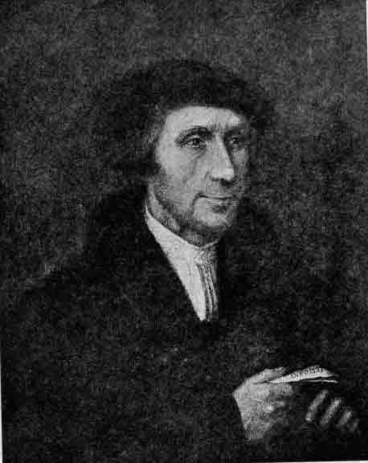
第53図 トーマス・リナクル
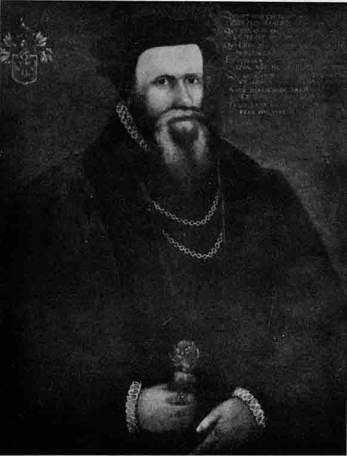
第54図 ジョン・キーズ（ラテン名カイウス、英国の医師）
中世のあいだ至る所で学問は神学の侍女であった。ロジャー・ベイコンは自分の新しい方法に強い魅力を持っていたが、彼ですらすべての科学は女王である神学に仕えるものに過ぎないという中世に支配的なの信念を受け入れていた。学問は生活の行為の道案内であると彼が見なすようになって、新しい精神が人間の心臓に入った。革命は知的世界においてゆるやかに効果を発した。ルネッサンスは北部イタリアの都市における短期間の突然な実りの時期であると考えるのは誤りである。科学に関するかぎり13世紀はオーロラであって長い暗闇の時期がこれに続いたのにたいして、15世紀は真の黎明であってますます明るくなって完全な昼間になっていった。医学はいつでもその次代の反映であって遅くはあったが、中世精神にたいする反逆に心から加わった。最近まで気がつかなかいほど遅かった。1480年まで――印刷の世紀の最初の４分の１を含むだろう時期（＊グーテンベルク聖書の印刷がほぼ1455年）――の動きの真っ最中にいる人たちがどのような視点を持っているか最も初期に印刷された医学の本を研究すると、驚くべき記録が得られる。中世の心がまだ支配していた。すなわち、初期の医学書の著者67人の182版のうちで、23人は13世紀と14世紀で、30人は15世紀、8冊はアラビア語で書かれており、何冊かはサレルノ学派のもので、6冊だけが古典時代のものであった。それはプリニウスが最初に1469年、ヒポクラテスが1473年(*1)、ガレノスが1475年(*1)、アリストテレス（1476年）、ケルスス（1478年）、ディオスコリデス（1478年）(*2)。
医師も次第に新しい精神を捕らえた。よく言われることであるが、ギリシアは新約聖書を片手にアリストテレスを別の手に持って死から蘇った。古いギリシア著作者にたいする完全な熱情が目覚め、それとともに原著作の研究が多くの写本で行えるようになった。徐々にヒポクラテスとガレノスが自分たちのものになった。ほとんどの医学教授はアリストテレスやギリシャの医師たちの研究者になり、1530年になるまでに印刷機は刊行本の流れを注ぎ出した。熱中の波が医師を覆い、最高の人たちの最良のエネルギーが父たちの研究にささげられた。ガレノスが学派のあいだで崇拝されるようになった。アラビア人にたいする強い反発の気持ちが起きて、王子であり神よりすこしだけ少ない権威をまとっていたアヴィケンナは、憎悪の対象になった。モンペリエ学派の指揮のもとにアラビア人は強く反対したが、すべての戦線において敗戦であった。ラテン語ギリシア語の研究、すなわち古典人文学に没頭している人たち――医学人文学者たちのグループは、医師たちに大きく有益な影響を与えた。彼らの大部分は教養ある紳士で、文学、医学、博物学、の３つの興味を持っていた。彼らが如何に重要な役割をしたかは、ベール（フランスの哲学者）が1500-1575年について書いた「医学者の伝記」（パリ、1855）の「生涯」を眺めると集めることができる。彼らの半分以上はヒポクラテスやガレノスの著作を翻訳したり編集していた。彼らの多くは一般文学に重要な貢献をし、多くの割合の人たちは博物学者であった。私がよく知っている人たちをあげるだけで大きなグループであった。レオニチェノ（イタリアの医師、人文学者）、リナカー（英国医師、人文学者）、シャンピエ（フランス医師）、フェルネル（フランス生理学者）、フラカストロ（イタリア医学者）、ゴンティエ、キーズ（英国医師）、Ｊ・シルヴィウス、ブラサヴォラ（イタリア医師）、フックス（ドイツ医師植物学者）、マティオリ（イタリア医師）、ゲスナー（スイス博物学者）である。リナクルはアルドゥス社（ヴェネツィア）のためにギリシャの著書を編集し、ガレノスの著書を翻訳し、オクスフォード大学でギリシア語を教え、ラテン語文法を書き、英国医師会を創設した。キーズは熱心なギリシャ学者で、博物学の熱烈な研究者であり、彼の名前は最も重要なケンブリッジ大学カレッジの１つ（ゴンヴィル・キーズ・カレッジ）の創設者の１人として祀り上げられている。ゴンティエ、フェルネル、フックス、マティオリ、は偉大な学者であり、偉大な医師であった。このグループで最も顕著な１人であるシャンピエはリヨンの
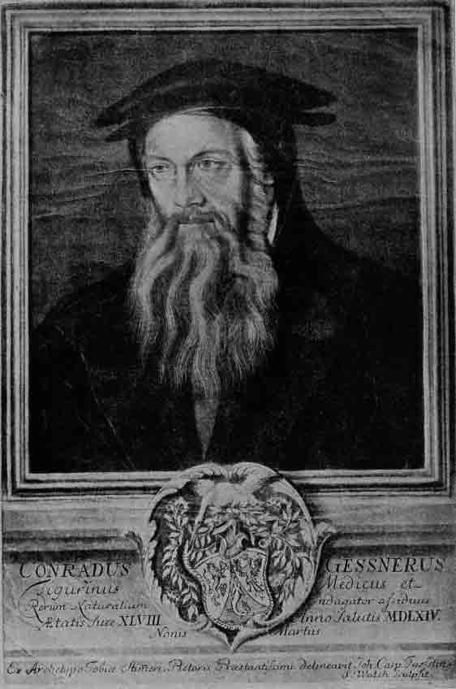
第55図 コンラド・ゲスナー
「コンラド・ゲスナーは近くに来たすべての学者に自宅を解放した。ゲスナーは当時の学者のあいだで最良の自然主義者だっただけでなく、その世紀におけるすべての人の中で学者の模範であった。彼は私生活で誤りが無く、研究では勤勉であり、世界中の学者と友人であり、金持ちではなかったがチューリッヒに来るすべての学者に親切であった。すべての人に直ちに奉仕し、他の人の本の編集者であり、友達のために序文を書き、若い著者たちが従事している本への改善提案者であり、彼らの仕事の進歩への最大の援助者であった。しかし他の人たちへ奉仕すうる時間を見つけながら、あたかも壁の向こうの生涯に関係が無いように、彼自身の仕事をしていた。」
これらの初期の博物学者と植物学者の多くは医師であった(3)。ギリシアの観察の技術はすべてギリシア語の原著によって、アリストテレス、テオフラストス、ディオスウコリデスの科学著作、医学ではヒポクラテスとガレノスの著作、に生き返った。この進歩が最初は遅かったのは、純金のギリシア医学からアラビア人による汚れを落とし、ガレノスの解剖の誤りを直し、さらに彼の生理学や病理学を問題にするのに、指導者たちが忙しかったからであった。当時のあちこちの大解剖学者たちのあいだで実験について読むこともあるが、観察の技術すなわちヒポクラテスの技術であって、ガレノスの科学ではなく、機能を決定する工夫した実験ではなかった。これが彼らの仕事の特徴であった。実際のところ、人々が当時の生理学および病理学に満足している充分な理由があった。理論的な観点からは優れていたからである。四体液学説や自然気・動物気・生命気の学説はすべての病気の症状をすぐに説明するし、毎日の診療はみごとに理論に適応させられていた。変化については考えなかったし、変化を希望しなかった。しかし学問の再流行は、古代の人々が個々の研究によって到達することができるあるものを残しているという、まず最初には疑いを、そして最終的には確信を人々に呼び起こし、徐々に麻痺のような無関心が取り去られた。
16世紀と17世紀は医学に３つのことを行った。権威を粉々にし、人体構造の正確な知識の基礎を置き、人体の機能をいかにして知的に研究できるかを示す、この３つである。この時代を示すこれらの進歩には、パラケルスス、ヴェサリウス、ハーヴィの名前が関与していると言えるだろう。
パラケルススは「常に反対する精神」（der Geist der stets verneint）である。彼は人々を諸学派の独断主義に向かって立ち上がらせて、化学の実践的研究を大いに刺戟した。これらは彼の大きな特徴であり、独断主義にたいして、錬金術的および超自然的な医学、彼自身のもの、彼の名前で押し付けたもの、の氾濫で彼は抵抗せざるを得なかった。これは今でも我々に影響しているもの、
第56図 パラケルスス（Romeyn de Hooghe による版画、Gottfried Arnoldの Historie der Kerken en Ketteren、アムステルダム、1701-1729）
「あなたがたは、自分の裁く裁きで裁かれる」（マタ 7:2）、は３世紀にわたってのパラケルススにたいする判決である。先輩や同時代者にたいする極端な悪口にたいしてペテン師の頭目として非難されてきた。フラーおよびフランシス・ベイコンや彼の著作を低め歪曲させている多数の口汚い三文文士が彼を低く評価していることを知っている。フラー(4)は彼を酔っ払い医者の例とし、彼の身体は酒浸りの潮が引いたり満ちたりしている海だと言った。「彼はガレノスやヒポクラテスでしたように、ルーテルや教皇に間もなく命令するだろうと自慢した。彼が祈っているのを見たことはなかったし教会には殆ど来なかった。彼は自然魔術（地獄の周辺の境界における最終の区域）に巧みであっただけでなく、常に仲間たちと話しあっていると非難されている。彼はいたずらっ子を除いてすべての悪徳を持っていた……」
フランシス・ベイコンもまた彼について多くの厳しいことを言っている(5)。
ところが神秘主義者にとって彼はパラケルスス大帝であり、神であり、キリスト教のマギの最高であり、彼が書いたものは科学には最高すぎ、彼は宇宙医学を発見した科学の絶対君主である。このことはブラウニングが弱冠21才のときに刊行した有名な「パラケルスス」に示されている。この男およびそのあこがれの著作のうちにこれ以上に楽しい絵は存在しない。彼の魂は自然から驚くべき秘密を求める「探し求める衝動的な魂」であり、「……老齢を若さで染めたり、金をつくったり、月光を捕まえてオパールの矢にする、チンキ剤」である。彼が投げかけようとする真の秘密を特徴付ける自己欺瞞能力を同時に持っている。
暗闇で起きる争いにおける光。その疑いを除いては、
全ての者が最終的に熱望する所に私は最初に立っている。
立っている。世界の秘密は私の物だ。
私は知っている、（知覚は表現されていない、
我々の狭い考えでは理解できない、
しかし変化すると何とか感じ知ることができる
そして精神が変化すると、――いや、すべての小孔で
身体の、さえも）――神は何で我々は何で、
生命とは何か―……(6)
全ての者が最終的に熱望する所に私は最初に立っている。
立っている。世界の秘密は私の物だ。
私は知っている、（知覚は表現されていない、
我々の狭い考えでは理解できない、
しかし変化すると何とか感じ知ることができる
そして精神が変化すると、――いや、すべての小孔で
身体の、さえも）――神は何で我々は何で、
生命とは何か―……(6)
第57図 パラケルススの「外科書」の扉（1536）
最近になり彼の話や性格を美しくすることが広くなされてきている。ライプツィヒのズドホフ教授はパラケルススの著作を徹底的に書誌学的に研究し(7)、最近にはユリウス・ハルトマン(8)およびフランツ・ならびにカルル・シュトルンツ両教授(8)のモノグラフが存在し、彼の生涯および著作の同情的な要約がストッドダート嬢(9)によって刊行されている。現在のところ、パラケルススの信者たちは実際に存在する。イギリスで神秘学および錬金術の著作がＡ・Ｅ・ウェイト、ロンドン、1894の版として得られる。彼の生涯の主な事実は全ての伝記に見出される。ここでは、彼が1493年にチューリッヒ近くのアインジ―デルンに医師の息子として生まれ、医学および化学の初期教育を父親から受けたようであると言えば充分であろう。有名な僧院長で錬金術者であったヴュルツブルクのトリテェミウスの下で化学と神秘学を学んだ。シュヴァツの鉱山で働いた後で遍歴が始まり、この間に彼によるとヨーロッパのほとんどすべての国を周りインドやシナにも行ったとのことであった。ドイツに帰りドイツの諸市で凱旋の開業を行い、いつでも医科大学と対立して問題を起こした。疑い無く彼は重要な治療を行い錬金術の最高の秘密を見出したに違いない。彼の剣の柄頭には有名な精神があると思われていた。したがって1527年に彼はバーゼル大学の医学教授に招聘された。１年目に喧嘩に巻き込まれて彼は秘密に出発してドイツ諸市を研究し喧嘩し治療をしながら再び遍歴することになり、1541年にまだ若いのにザルツブルクで死亡した。彼は医学史における最も悲劇的な人物の１人である。
彼は医学のルターであり反逆精神の肉体化そのものであった。権威がもっとも重要な時代であり、人々は古典時代の指導者に盲目的に従っていて、踏み固められた道から外れるのは知識のどの分野においても非難されるベき異端者である時代に、彼は勇敢にも独立研究および個人としての判断に立ち上がった。バーゼルにおける教授選考の後で彼はすぐにドイツ語で講義を行って新規さを導入して驚かせた。彼は新しい精神を捕らえて医学および神学の両者のすべての足かせを取り除いた。彼の新しい方法は古い教師たちや臨床医たちを驚かせたに違いない。「1527年６月５日に彼は大学の黒板に講義のプログラムを貼って全ての人たちに来るように招待した。講義はすべての治療を学ぶ人たちへの挨拶で始まった。彼は治療の本性が高く厳粛であり、神の人への贈り物であり、それを新しい重要なものへ、および新しい高名なものに発展させる必要性を宣言した。彼が行おうとするのは、古代の人たちの教えに後退するのではなく、彼自身が発見し、長期間にわたる実験および経験によって確かめた方向に向けて、自然を研究することによって自然が示す方向に進むことである。あたかも神託のように見做されていて、誰もそれから外れることを敢えてしない古い見地への服従に、彼は反対する準備ができていた。書籍により優れた医師を卒業させることができるかも知れないが、書籍は医師を１人も作ることができない(10)。卒業も弁舌さわやかなことも古典語学の知識も沢山の本を読むことも、それらの事柄およびそれらの性質の知識を与えるが、医師を作ることはできない。医師の任務は種々の病気、それらの原因、症状、および正しい治療、を知ることである。彼はこのことを教えることができる。何故かと言うと、彼はこの知識を経験、最高に偉大な教師から、しかも苦労して得たからである。彼は自分が習ったように教えるであろうし、彼の講義は、内的および外的な処理、内科学および外科学から彼が作り上げた研究に基礎を置いている」(11)。この後まもなく聖ヨハネの祭りにさいして学生たちは大学の前で大かがり火を燃やした。パラケルススは「医学の聖書」であるアヴィケンナの「規範（Canon）」をかかえて出てきて炎に投げ込んで言った。「聖ヨハネの火に入れたので、すべての不幸は煙とともに大気に行くだろう」と。これは後に彼が説明したように象徴的な行為であった。「駄目になったものは火に行かなければならない。もはや使う役にはたたない。真であり生きているものは燃やすことができない」。彼は自分自身の能力に自信を持ち、自分を正統の国王であり、医学のキリストそのもの、であると宣言した。「お前たちは私に付いてこい。アヴィケンナ、ガレノス、ラージー、モンタニャナ、メジュス、よ。パリ、モンペリエ、ドイツ、ケルン、ウィーン、の紳士諸君、およびライン川とドナウ川に養われた人たち。エーゲ海の島々に住んでいる諸君。同じようにダルマチア人、アテネ人。お前たちアラビア人。お前たちギリシア人、お前たちユダヤ人。すべて皆は私に従いなさい。王国は私のものである」(12)。
医学校の奴隷的な権威にたいするこの最初の反乱は殆ど直接な効果は無く、主としてこの改革者のとっぴな考えとみなされたが、人々は考え直すようになった。パラケルススは15世紀ものあいだ触れられていなかった水たまりをかき混ぜた。
さらに重要なのは新しい化学研究へのパラケルススの関連であり、化学研究は臨床医学に関係していた。「錬金術は金を作ることでも銀を作ることでもない。これを使うことによって最高の科学が作られ、この科学を病気にたいして使うことができる」と彼は言った。彼は３つの基本物質を考えていた。硫黄、水銀、および食塩であった。これらは有機または無機のすべての物質に必要な構成物質であった。これらはアルケウス（Archaeus）すなわち自然の精気（spirit）がすべての物質を作成する３成分（principles）の基礎であった。彼は化学において重要な発見をした。特に亜鉛、水銀の種々な化合物、甘汞（塩化第一水銀）、硫黄華を見つけ、彼は鉄やアンチモンの製剤を使うことを強く奨励した。薬学において彼は阿片チンキの硬膏を導入して奇跡的な治療をしたことで有名であった。これは東洋で習ったのであろう。
パラケルススによって化学および薬学の研究への大きな刺戟が与えられ、彼は新しいイアトロ化学者の最初であった。植物界のものを主として使っていたガレノスの薬とは違って、この時以後に文献でスパジリック（＊字引には錬金術とあるが語源は植物を化学処理したもの：パラケルススの造語）医学が見られるようになり「スパジリスト（spagyrist）」は化学をすべての医学知識の基礎とみなしたパラケルスス主義者である。
パラケルススの臨床医学著作を非常な好意をもって話すことはできない。彼を著名にした痛風について記載は非常に悪いが、中世の占星術と不思議に混じって幾つかの優れた考えが存在し、あちこちに非常に楽しい識見が見られる。例をあげると「痛風には関節嚢の局所にニンニクを付けるのが良い（nec praeter synoviam locum alium ullum podagra occupat）」と言っている(13)。瀉血の部位については何も新しいものは無く、ここでも彼は占星術の考え方に支配されていた――「賢者は星を支配する（Sapiens dominatur astris）」。
神秘哲学の主唱者としてのパラケルススは医師としてより評判が長続きしている。彼の立場を決めるにあたってズードホフが述べているように現存している著書のうちでどれが彼の本当のものかどうか決定するのが困難である。ウェイトが1894年に刊行した英語で書かれた２冊本には現在の立場では読み理解するのが困難な部分が多い。パラケルススは「長寿について」において、彼の方法および行為はふつうの人たちには理解できないものであり知能が平均以上の人たちのために書いたと認めている。超自然の研究を好む人たちにこれらは魅力があり理解できるのであろう。自然はすべてを制御する力を持ち、人はこれらの力を自分の利益のためにする能力を持っていることを、パラケルススが熱心に信じていたことを示す洞察力のある見解に至るところで出会う。たとえば「賢人は自然を支配するのであって自然が賢人を支配するのではない」とか「聖人とマギの違いは、一方は神によって動くが、他方は自然によって動く」である。彼は自然および自然の見解に大きな信頼を持ち、人は信ずる程度に応じて自然から得ることができると考えていた。彼の３成分の理論は人に関係する精神的、知的および肉体的の、すべてのことの概念を制御するものだったようである。そして彼の３種類の病気はある神秘な方法で、食塩、硫黄、水銀の３種の基本的な物質と対応していた。
彼がどの程度まで占星術、お守り、占い、を信じていたかを言うのは容易でない。私がすでに引用したように彼の全集の多くの著作から彼が強力な信奉者であったことを集めることができる。他方、「パラミルム」で彼は「星は我々の中で何も制御しないし、何も示唆しないし、何をしようとしないし、何も所有しない。星は我々から自由であり我々は星から自由である」（ストッダート、p.185）。星ではなくアルケウスが人の運命を制御する。「良い運命は能力から来るものであり能力は精神からのものである」（アルケウス）。
治療術の二重概念を彼以上にはっきりとさせた人は他にはいない。２種類の医師がある。奇跡的に治癒させるものと、医学を通して治癒させるもの、である。信ずるものだけが奇跡を起こすことができる。神が奇跡で行うようなことを患者が充分に信頼しているならば、医師は成し遂げなければならない（ストッダート、p.194）。彼はヒポクラテスの「自然治癒力（vis medicatrix naturae）」の概念を持っていて、ギリシア人の時代以後に誰も彼以上に熱心ではなかった。人は彼自身の医師であり、適した薬草を彼自身の庭に見つけることができた。医師は我々自身の中に居て、我々が必要とするすべてのものは我々自身の自然の中にある。そして傷に関して、彼は唯一無二の洞察をもって言っている。「外部からの偶然性によって自然の作用を邪魔しないために、治療は防御的でなければならない」と（ストッダート、p.213）。
パラケルススは自然の治癒力を「ムミア」という言葉で表現している。彼はこれを一種の磁石の影響すなわち磁力とみなしていて、これを持つものは誰でも他人の病気を抑えたり治すことができると信じていた。百合が見えない香りを出すように、治癒力は見えない物体から出てくることができる。これらのパラケルススの見解の上に病気の交感（sympathy）治癒理論が基礎を置いていて、これは16世紀後半から17世紀に流行し、現代においても対応するものが無いとは言えない。
第58図 ファン・ヘルモントの肖像画および血統書（彼の「医学の基礎」（Elzvir edition, 1648）１ページの対向）
次の世紀にアルケウスはファン・ヘルモントにおいて至る所で中心的な位置を占めていて、動物体および非動物体において調節し制御しているのに出会う。ここでアルケウスは局所にある発酵素（ferment）という媒介物を通して作用する。バラ十字会員は彼の著作によって直接に感化されていてイギリスのバラ十字会員フラッドは強力なパラケルスス主義者であった(14)。
パラケルススは対抗療法（＊contraria contrariis curantur：反対をその反対をもって治す）に反対し、同種療法（＊similia similibus curantur：同種のものを同種のもので治す）に賛成していた。前者はギリシア古典哲学に由来するものでヒポクラテスおよびガレノスの治療方の多くはこれに基づいていた。乾を湿で、冷を熱で追い出すなどがこれであった。後者はホメオパシーの臨床の基礎になり、実際には原始的な信念から起きたものであり、既にのべたようにこの結果として、コゴメグサ（eyebright）を眼病に使い、シクラメンは耳に似ているので耳の病気に使うようになった。そしてエジプトの臓器療法は同様な基礎を持っていた。脾臓は脾臓を治し、心臓は心臓、などなど。16および17世紀にはこれらの交感および反交感の学説が流行した。スコットランド人のシルヴェスター・ラットレーは「交感の劇場（Theatrum Sympatheticum）」(15)において人と動物、植物、鉱物とのあいだの交感および反交感についてのすべての著作を編集して、医薬のすべての技術はこの原理に基づくとした。
この「ムミア」すなわち磁力の理論の上に病気の交感治療は基礎を置いていた。武器膏薬（weapon salve ＊傷を与えた武器に塗って傷を治す膏薬）、交感塗り薬、有名な交感粉薬（powder of sympathy ＊武器膏薬と同じようにも使う）は交感治療の手段であった。傷の磁力による治療は流行になった。ファン・ヘルモントはこれらの見解を彼の有名な著書「磁力による傷の治療（De Magnetica Vulnerum Curatione）」(16)に採用して治療は磁力の影響によると主張した。彼らが創傷感染についての現代の見解に如何に近づいているかは次のことから判断できるであろう。「混合体、とくに腐敗しているもの、からの種々の蒸発物、発散で満ちた周囲の空気をある量の均一溶液に入れて外の毒気または有害な素質を局所に激しく押し付ける。そうすると次々と傷に届く血液は発酵素を介して腐敗を起こす」と。ファン・ヘルモントは免疫理論ならびに免疫血清による治療を磁気的交感によって明白に表現した。「１度あの病気から回復した人は純粋なバルサム化血液を得てそれにより同じ病気が再発しないだけでなく、近くのものの同じ病気を確実に治すことができる。……これは磁力の奇跡的な力によってその
第59図 ディグビーの「同情の粉薬」（1658）の扉（＊オスラーはこの本について未完の随筆を書いている）
あの遍歴天才のケネルム・ディグビ卿は講演「交感粉薬」(17)でこの治療法を広めた。彼の粉薬は緑礬だけであるか又はトラガカントゴムを混ぜた。彼はこれによる治療を交感精神の微妙な影響によるか、またはハイモアが言うように「遠くから働く原子エネルギー」によるものであって、治療は傷そのもの、血液または分泌物を浸した布、または傷の原因になった武器、にたいして行うことができると彼はみなしていた。成功する１つの要因はディグビーが傷の処理にさいして与えた方針であった。よく知られた例は作家ジェイムズ・ハウエルに与えた指示であり、傷をそのままにして清潔に保つことであった。非常にしばしば詩人たちがこの療法をほのめかしている。「最後の吟遊詩人」（＊Walter Scott の詩）に次のように書かれている。
しかし彼女は壊れた槍を取った、
そして固まった血液を洗い、
そして破片に膏薬を何回も何回も塗った。
デロレーンのウィリアムは失神して、
ゆがんで、彼女が彼の傷を擦りむくように、
次に侍女に彼女は言った、
彼は完全で健康になるだろうと、（iii編, xxiii.）
そして固まった血液を洗い、
そして破片に膏薬を何回も何回も塗った。
デロレーンのウィリアムは失神して、
ゆがんで、彼女が彼の傷を擦りむくように、
次に侍女に彼女は言った、
彼は完全で健康になるだろうと、（iii編, xxiii.）
ドライデン（1631-1700）の「あらし」（V, 1）でエアリアル（空気の精）は言っている。
彼を突き刺した剣に武器膏薬を塗りなさい、
そして私に時間ができるまで空気から避けて包み
もう１度かれを訪ねなさい。
そして私に時間ができるまで空気から避けて包み
もう１度かれを訪ねなさい。
ファン・ヘルモントは新しい鼻についての有名な話を書いている。有名なヒューディブラス（S. Butler の諷刺詩）のもとになったものである。新しい鼻はそれをとった腕が死ぬと交感によって落ちたという話である。近年になってこの話が引用されているのを見たことがないので、ここに引用する価値があるだろう。「あるブラッセルの住人が戦いで切り落とされ、ボローニャに住んでいる有名な外科医のタグリアコズスに新しい鼻を作るように頼んだ。そして自分の腕の切開を好まなかったので１人の運搬人を雇い、まず礼金を定め約束し最終的に新しい鼻を作って貰った。自分の国に帰って13月後に移植した鼻が突然に冷たくなり数日のあいだに落ちた。このように予想できない不幸の原因を調べた友達によると、この鼻が冷たくなり死体のようになったのとほぼ同じ頃に運搬人の死亡したことが判った。ブラッセルにはこれらの出来事について評判の良い証人が生きて居るとのことである」(18)。
第60図 ニコラウス・コペルニクス
科学の歴史においても医学の歴史においても、1542年は我々の知識で大宇宙においても小宇宙（＊人間）においても同じように際立った年であった。フラウエンブルクの司教座聖堂参事会員（カノン）であるその町の医師が、賛美歌作者としても、生涯も、終わりに近づいて、生涯に１つの研究である「天球の回転について（De revolutionibus orbium coelestium）」を印刷所に送った。これは新しい考えではないしコペルニクスが彼の世代に与えたのは新しい表明ではなかった。ピュタゴラス以後の鋭い科学的な考えをもつ人々は何世紀も前に太陽中心説を考えだしていて、アリスタルコス（＊紀元前３世紀）によって完全に広められ、アレキサンドリア学派のすばらしい研究者たちによって非常に一般に受け入れられていた。しかし長いあいだに東洋の無気力さによって覆われて、天は神の輝きを宣言し大空は神の働きを示すという考えで、満足してきた。コペルニクスの前にも偉大な天文学者たちがいた。15世紀にクース（＊ドイツ）のニコラスやレギオモンタヌス（ドイツ）は太陽中心説を示唆した。しかし1542年は科学史において一時代を画した。コペルニクスはこの問題をすべての時代において黙認される方向に置いたからである。
コペルニクスは修正する必要がある完全で満足できる真理を発表したわけではなく、多くの矛盾と欠陥があって、後の観察者たちの仕事によって調和および完全にしなければならなかった。長いあいだコペルニクスは彼の注意深い観察に基づくこの重要な考えについて注意深く熟考していた。この小さな町において友人のオシアンダーがこの貴重な本の最初のコピーを印刷本として印刷所から持ってきた感激的なシーンを想像することができる。彼は長い病気によって既に死の床にあり、この老人は教皇クレメント
 世から何年か前に激励の言葉を受け取ってはいたけれども、この著作がどのように受け取られるか疑いを持っていたに違いない。幸福なことに多くの革新者および発見者が受ける「無理強い」から、死は彼を救った。彼と同時代の改革者ルーターは、馬鹿者は完全な天文学をメチヤクチャにすると当時の見解を表現した。しかし聖書によるとジョシュア（＊原著にイエスとあるのは誤り）は地球ではなく太陽に止まるように言っている（ダンネマン）。自分自身も天文学者であるメランヒトン（ルーターの同僚）はこの本を神を信じないとして抑圧することを推奨した。カトリック教会はプトレマイオス体系にあまりにも関係していたので1822年までガリレイ（＊原著にはコペルニクスとあるが彼の著作は１冊だけであり、しかも禁書にならなかった。ガリレイの間違えであろう）の諸著作を禁書から除くことはなかった。
世から何年か前に激励の言葉を受け取ってはいたけれども、この著作がどのように受け取られるか疑いを持っていたに違いない。幸福なことに多くの革新者および発見者が受ける「無理強い」から、死は彼を救った。彼と同時代の改革者ルーターは、馬鹿者は完全な天文学をメチヤクチャにすると当時の見解を表現した。しかし聖書によるとジョシュア（＊原著にイエスとあるのは誤り）は地球ではなく太陽に止まるように言っている（ダンネマン）。自分自身も天文学者であるメランヒトン（ルーターの同僚）はこの本を神を信じないとして抑圧することを推奨した。カトリック教会はプトレマイオス体系にあまりにも関係していたので1822年までガリレイ（＊原著にはコペルニクスとあるが彼の著作は１冊だけであり、しかも禁書にならなかった。ガリレイの間違えであろう）の諸著作を禁書から除くことはなかった。非常に有名な「医術の苗木畑」の都市パドヴァは同じ年の1542年には全く違っていた。中心人物はまだ壮年に達していない男であり肖像画（第61図）に見るように誇りに満ちていた。アリストテレスとヒポクラテスがアスクラピオン医師の一族として揺りかごで育ったようにヴェサリウスは子供のときから自然の学生であり今では遍歴研究者としてベルギーの家から遠く離れていた。しかしイタリアではルヴェンにもパリにも無いものを見つけた。研究の自由であり、解剖学研究の黄金の機会であった。パドヴァの学生たちに彼がどんな印象を与えたかは卒業して短期間の1537年に24才で解剖学と外科学の教授に選挙された。２つのことが彼に有利であった。１つは人体の各部分を見て自分自身で取り扱うことにたいする飽くことを知らない欲望であり、もう１つはこの教師にこれまで与えられなかった機会すなわち人体解剖研究のために資料が得られたことであった。ギリシアおよびアラビアのすべての成果を学んで、以前の近代人が把握していなかった重要な事実をヴェサリウスは手にいれた。人体という機械とその働きを知るには、まず最初にその部品すなわち構造（fabric）を知らなければならなかった。
第61図 アンドレアス・ヴェサリウス（「ファブリカ」（1543）１ページの対向の木版）
第62図 中世の解剖図（14世紀）（Ashmolean Codex No. 399, フォリオ18表ページ、ボドレアン図書館、オクスフォード）

第63図 ヴェネチアでヴェサリウスがよく訪ねた病院
この偉大な男の業績を評価するために、我々は解剖学の進歩を短く展望する必要がある。
ギリシアの医学者のあいだでは、アレキサンドリア学派だけが人体解剖学を知っていた。アレキサンドリア学派の知識は我々の知るかぎり二流ではあったが、明らかに大量の知識を持っていたことは事実であった。ガレノスの解剖学は一流でありアレキサンドリア学派たちの知識およびサルおよびブタについての自己の研究を基礎としていた。彼の骨学がモンディノよりずっと優れていたことは前に見た。アレクサンドリア学派と初期サレルノ学派のあいだに人体全身の解剖の記録が存在しない。人体解剖がサレルノで許可されていたかすら疑わしい。人体解剖についてのフリードリッヒ１世の指示はノイブルガーによると単に形式的なものであった。
第64図 ヴェサリウスの先任教授ベレンガリウス（1521年頃）が書いた脊椎（第70図との比較）
第65図 1542-1543にヴェサリウスがバーゼルで作成した骨格
中世初期の解剖学が如何に話にならなかったかはアンリ・ド・モンドヴィルの木版を見ると判る。ボドレアン図書館にはイギリス由来の13世紀後期の顕著な解剖学参考書があり、そのうちの１つの挿絵によって著者が如何に無知であったかを充分に示すことができる。中世において対象（人体）から解剖学を研究した最初の人たちのうちの１人であるモンディノは、アラビア人の強力な支配のもとにあって、非常に不十分なガレノス解剖学しか受け取っていなかった。この頃から種々の医学校においてしばしば解剖が行われるようにはなっったが、15世紀のパドヴァ大学の念入りのカリキュラムでも人体の研究のための準備がなされていなかった。16世紀になってさえも解剖は普通ではなく、肉屋または床屋外科医が体腔を開いているあいだに教授が講義をする、古い習慣が残っていた。バーゼルの有名な医師一族のフェリックス・プラターは自叙伝(19)を残し、その中で1552年11月14日から1557年１月10日のあいだに解剖が11回しかなかったことを詳しく述べている。当時に人体を得ることが如何に困難であったかは彼らが「死体泥棒」の危険を犯したことから判る。彼は３回の記録を残している。
そしてここで現代解剖学の真の創設者が現れた。アンドレアス・ヴェサリウスは幸運なときに生涯を始めた。医業に長いあいだ関係していた一族に属し、父親はカルル
世の薬剤師であり皇帝の旅行や戦役に従っていた。ヴェサリウスはルヴェンで教育を受け若いときから解剖に熱心であり、マウスやラットを解剖し、時にはネコやイヌを解剖した。1553年に当時に強力な医学校であったパリ大学に行き有名な２人の教師ヤコブ・シルヴィウス（＝ジャック・デュボア）およびグインテリウス（＝ヨハン・ウィンター）に学んだ。両人ともに熱心なガレノス信者でありガレノスは間違いを犯さない権威者であるとみなしていた。ヴェサリウスの解剖師仲間としてグインテリウスの下に不幸なセルヴェトゥスがいた。骨および死体を入手するにあたってのヴェサリウスの苦労および試みについてはロートが書いている(20)。多くの伝記的に興味ある詳細はヴェサリウスが著作の中に書いている。彼は暫くのあいだルヴェンに帰り最初の著書としてラージーの「アルマンソール」の解説書を1537年に刊行した。パリでもルヴェンでも彼の解剖学の研究をするのが困難なことに気がついて、彼はイタリアに行く決心をした。ヴェネチアおよびパドヴァではその機会が多かったからであった。ヴェネチアで彼はテアチノ修道会の担当していた病院（現在は兵舎）で医療を行った。私が昨年に撮影した写真を示そう（第63図）。ここで不思議な運命で２人の男が出会うことになった。1537年にもう１人の巡礼がヴェネチアで働き、６人の信徒（イエズス会創立者たち）に出会うことになった。長期間の試練の後にイグナチオ・デ・ロヨラ（イエズス会初代総長）は非常に異なる世界の征服を開始した。火のようで黒い目をした小さいバスク人は病人および貧乏な人たちに献身していたのでテアチノ修道会に属していて、病院の病棟および大学の中庭で、臨床研究および彼の解剖学に忙しいがっしりとした若いベルギー人にしばしば出会ったに違いない。２人とも並でない成功を収めた。１人は数年のあいだに解剖学で革命を起こし、もう１人は20年のあいだに大学の管理者、王の助言者、およびローマン・カトリック教会における最も有名な修道院（＊イエズス会）の創設者になった。ヴェサリウスは病院において山帰来（薬草サンキライ＝China-root）について観察を行い1546年にモノグラフを刊行した。パドヴァ医学校はヴェネチアに近いし連関があったので、この若い学生はたぶん行ったり来たりの機会があったのであろう。24才になる前の1537年12月６日に学位をとって、すぐ後に彼はパドヴァで外科学および解剖学の教授に選ばれた。
第66図 ヴェサリウスのエピトーム（ファブリカも同じ）の扉（1543）
第67、68図 ヴェサリウスの「解剖の図」（1538）における血管系についてのガレノスの見解（静脈：Ａ、動脈：Ｂ）

第69図 ヴェサリウスの「山帰来についての手紙」（1546）
ヴェサリウスが自分自身に課した仕事は人体のすべての部分の正確な記載を行い、それに適した挿絵を描くことであった。彼は豊富な資料を必要とし、たぶん彼の前のどの教師も使うことが出来る以上のものを必要とした。彼が解剖をどこで行ったか古い階段教室が無くなっているので我々は知らない。しかし彼の後継者であるファブリツィオ（＝ファブリキウス）が1594年に作った小さいものとは違うのであろう。たぶん１次的の建物であろう。何故かと言うと「ファブリカ」の第２版で彼は500人以上の観衆が入ることのできる素晴らしい講義室を持っていたと言っているからである（p.681）。
ヴェサリウスの登場とともに古い講義中心の解剖学教育の方法は消え去った。彼は自分で解剖を行い自分の標本を作り、人の検体が少ないときにはイヌ、ブタ、またはネコを使い、ときにはサルを使った。５年のあいだ彼はパドヴァで教え研究をした。彼はボローニャその他で公開の実地教授を行ったことが知られている。著書「山帰来についての手紙」によると同じ年に３つの大学で教えたことがあった。彼の研究の最初の成果は彼の知識の発展と関係して大きな重要性をもっている。1538年に彼は明らかに同じ休暇期間に６枚の解剖図を発表している。この有名な「解剖図（Tabulae Anatomicae）」は２冊だけが知られている。１つはヴェネチアのサン・マルコ図書館にあり、他はジョン・スターリング―マクスウェル卿が持っている。彼の父親が1874年に30部限定のファクシミリ（＊可能な限り原本に近い複製）を作ったものである。この本の図のあるものはヴェサリウス自身が描き、あるものは彼の友達で同郷人のステファン・ファン・カルカーの鉛筆によるものであった。それらの図は盛んに海賊コピーされた。この頃に彼はまたガレノスの解剖著作のあるものをジュンティ出版社のために編集した(21)。
第70図 脊椎 ヴェサリウス（左）レオナルド（中心）対照として現代（1856）のヴァンダイク・カーター（右） レオナルドの描写の優れていることを示す。
第71図 足の骨の図 レオナルド（左）ヴェサリウス（右）
彼のパドヴァにおける個人的生活について殆ど何も知られていない。医学部における彼の最も重要な同僚は内科教授の有名なモンタヌス（＝ジオヴァンニ・モンテ）である。彼の学生および同僚のうちに英国人キーズがいる。彼らは同じ家に住んでいた。ヴェサリウスの発表量から考えるとパドヴァで暇などは無かったであろう。
彼は人体解剖学を創りあげたわけではない。アレキサンドリア人たちが作りあげていた。しかし彼は解剖を順序よく完全に行なうことによって、人体の全構造の説明をいわば歴史で初めて提供することができるようにした。1542年の始めに原稿ができあがった。出来る限り注意深く図を描き図の版木を作り、９月にはオポリヌス（バーゼルの出版者）に最高の注意で本を作るように手紙を書いた。紙は丈夫で厚さが同じでなければならず、職人は巧みなのを選び図のすべての詳細がはっきりと見えなければならない、と注文した。彼は自分のした研究の意味を確信している人間として手紙を書いた。この「ファブリカ」について控え目に話すことはできない。この本の相対的な価値の評価には当時の他の解剖書と比較しなければならず、私はこの目的で16世紀の前半に学生たちが手に入れることができた解剖学教科書を示すことにする（第64図）。「ファブリカ」の図および文には我々の知っている解剖学が存在している。正直に言うとガレノスも大部分を知っていた。この２人の偉大な解剖学者の関係を述べる時間は無いが、この頃にガレノスは最高の位置を占めていて医学校で誤りは存在しないと見做されていた。そして５年のあいだ絶え間なく研究を行った後でヴェサリウスは非常に愛しているパドヴァと献身的な学生と別れようとしていた。彼は驚くべき研究を行った。彼が自分のしたことを知っていたのは確かであった。彼は自分の原稿には偉大なペルガモン人（ガレノス）が友達たちに送った『解剖学手引き」より後に世界が見ることのなかったものの入っていることを知っていた。最高の印刷者以外の印刷者に頼むにはあまりにも価値があるので彼は価値が大きい荷物を持って北に向かう準備をしていた。16世紀中葉において最高の印刷者はアルプスの向こう側にいたからであった。我々はようやっと28才の若い教師が大学の学生たちと最後の別れをしているのを心に描くことができる。学生たちは大学を自分たちで支配していて、多分そのうちの一部には５年前に彼を教授に選んだ者もいたであろう。別れにあたって彼はたぶん版木を見せただろうし、本の序論を読んで聞かせたであろう。版木の正確さも美しさも学生たちがこれまで見たことが無いものだった。別れは悲しいものであった。これまで誰も彼が教えたようには教えなかったし、誰も彼が知っているように解剖学を知らなかったからであった。しかし強い確信が彼の顔にあり、若さの勇気と将来の確かさをもって、幸福な帰還と新しくこれまで試みられたことのない問題に取りかかることを頭に描いていたことだろう。学生としておよび教師としての幸福な日々が終わり、解剖学者としての仕事は終わり、教授として最も華やかであり画期的な活動は過去のものになったことを、彼は全く感じていなかった。バーゼルにおいて彼は友達のオポリヌスと１年またはそれ以上を大著作の印刷の監督に過ごし、本は1543年に完成して「人体の組立についての７冊の本」De humani corporis fabrica libri septem（略称 Fabrica）と名付けられた。本の価値は人の価値のばあいと同じように結果によっって評価される。そしてこのような評価においてこの本は世界の最高の本の１つであり、どの世紀においても人間の心の最も豊かな産物を含むものであった。これは医学におけるルネッサンスの満開の花である。本としては宝石のような紙、印刷、図の価値ある揃いの豪華な大冊であり、医学図書館で名作としてこの２つ折りを自分で見ることができるであろう。
すべての部分でヴェサリウスはガレノスの研究を拡大し修正した。詳細については入る必要が無いだろう。ロートのモノグラフにすべて与えられていて、古代史の１章であって特に啓発的ではない。
膨大な量の文学作品がこれ以上に優れた植字をされたことはなかった。ヴェサリウスは印刷技術の芸術的面に熱心であったに違いないし、またこの技術の名人はこの時にはアルプスの北に移っていることを実感したはずであった。
1542-1543の冬に素晴らしい著作印刷の監督をしながら、ヴェサリウスは処刑された男から医学校のために骨格標本を作っていた。これは多分ヨーロッパにおけるこの種の標本の最初の１つであったろう。この当時にここで解剖学の研究が殆どされていなかったことは、1531年以降に解剖が行われていなかったことから判る(22)。標本は今バーゼルのヴェサリアヌム（＊現在は生理学と生化学の研究室が入っている建物）にあり、ハーヴィ・クッシング博士（脳外科学医）が撮影した写真を示す（第65図）。印刷技術の観点から言うと、これ以上すぐれた解剖学書は実際のところ1555年に出版されたこの本の第２版を除くとどの出版所からも現れてはいない。紙はヴェサリウスが指示した通りに常に同じ厚さではなかったことを除くと、彼の指示通りに強く最高であった。原則として紙は厚く重かったが、もっと軽い質で良い紙に印刷されたコピーもある。彼の友達で同郷のファン・カルカーが描いた図はそれまでのどの図よりも優れていた、レオナルドのものを除いては、表題紙は医学の歴史において最も名高いものであり、ヴェサリウスは大きな階段教室（残念なことにカルカーの想像によるもの）で女性を解剖している。彼は解剖台の周りの学生に腹腔を示していて、教室には年配の市民および女性すら立っている。１人の学生は本を開いて読んでいる。絵の片側には１匹のサルがいて反対側には１匹のイヌがいる。絵の上の盾には３匹のイタチが書かれている。これはヴェザル家（＝ヴェサリウス）の紋章である。ここに示している第66図は「
ヴェサリウスには体循環の考えが無かった。彼は偉大なペルガモン人（＝ガレノス）の解剖学における支配からは逃れたが、生理学においては追随者であった。２枚の挿絵（第67、68図）は存在する２コピーの「解剖図」の１コピーからのもので解剖学図として独特であり、ハーヴィの時まで支配的であった血管系の概念を示している。私はすでにガレノスの２種の血管系、すなわち身体の一般栄養を運ぶ粗な静脈血を入っているものと、生気および生気熱を運ぶ薄く温かい血液が入っている動脈系、について注意を喚起してきた。静脈は肝臓に始まり、上部大静脈は右の心臓と連絡していてガレノスが教えるところによると血液の一部は肺に及んでいる。ガレノスは末梢において動脈と静脈は連絡していると信じていたが、２つの血管系は閉鎖していた。疑いを持ってはいたが、ヴェサリウスは両心室のあいだの壁の小穴によって静脈系と動脈系がある程度連絡しているというガレノスの見解を受け入れていた。しかし第２版（1555）では、「医師の王子」（＊ガレノス）の権威にも拘らず、極めて少量の血液であってもこのように厚い筋の壁を通ることを理解できない、と言っている。この２年前の1553(*4)年に彼の古い学生仲間のミカエル・セルヴェトゥスは「キリスト教の復元（Christianismi Restitutio）」を刊行して互いに近づいていた！
「ファブリカ」の出版は医学界を根底からゆるがした。ガレノスは医学校で最高の支配をしていた。彼を少しでも疑うことは、50年前に聖書の霊感について口頭で疑いを述べたのと同じであった（＊宗教改革であろうが特定の件ではないと思われる）。パリにいる彼の先生たちは怒った。「我らの医学の生涯における偉業（nostrae aetatis medicorum decus）」と彼に呼ばれていたシルヴィウスは彼に憤慨の手紙を書き、後に彼のことを狂人（vaesanus）と言った。若い友達は彼に同意したし、彼は多くの友達を持っていたが非難はごうごうたるものであった。これについて彼は数年後に著書「山帰来についての手紙」に「ファブリカ」について詳しく書いて抗議の記載をしている。彼はかっとなってガレノスについての自分のノートその他の原稿を火に投げ込んだ。自分の本や原稿を燃やすこの部分より悲しいページはこれまで存在していない。その部分を翻訳して後で引用する(23)。数年のあいだの彼の生涯は知られていないが、1546年に彼はカール
世の身体の医師になり、この時代の偉大な解剖学者は宮廷と戦役を行ったり来たりすることになった。彼は活発な臨床家、優れた外科医、になり同僚たちに相談され、彼の病例についての多くの引用がなされている。そのうちで最も重要なのは体内の動脈瘤についてで有り彼はこれを認識した最初の１人であった。1555年に彼は「ファブリカ」の第２版を刊行した。これは第１版よりももっと豪華であった。「これらすべての妨害を私はさげすむ。私は自分の技術で利益を得ようとするには若すぎたし私は私が関係した研究を学び促進することによって励まされてきた。私は自分が解剖に熱心であることは何も言わない。イタリアで私の講義に出席したものは私が3週間全部をかけて１つの公開解剖をしたことを知っている。しかし考えてもご覧なさい、私はあるとき３つの違う大学で教えていた。著書執筆を今まで延ばしていたらどうだったろう。今ようやっと自分の資料を研究し始めたらどうだっただろう。学生たちは私の解剖についての努力を利用できなかったろう。後世はそれまで使われていたメシュア、ガティナリア、ステファンとか、その他による病気の違い、原因、症状などや、最後にはセルヴィトールの薬局方の焼き直しより優れていると判断するだろうか、しないだろうか。すごい量になった私のノートはすべて自分で処分した。同じ日にその場所でラージーのアルマンソール王への10冊の本にたいする私の注釈のすべても同じように処分した。これらは（＊ラージーによる）９冊目の序文よりもっと注意深く私が書いたものである。これらと一緒に、役に立たないこともないと判断して、私自身で書き込みを行った、幾多の著者による医薬の処方および調製についての本も処分した。そして私が解剖学を勉強するのに使い、いつものようにたっぷりと汚したガレノスの本も同じ運命になった。現在のところ、私はイタリアを離れて宮廷に行くことになっている。貴方がたが知っている医師たちは皇帝および貴族にたいして、私の本および研究を促進するためのすべての刊行物について、もっとも好ましくない報告を行った。私は述べたすべてを燃やして、同時にこれによって将来は著作を自制するのが容易だろうと思った。私はその後に１度ならず自分の短気を後悔し、その頃は私と親しかった友達の忠告を聞かなかったことを悔やんだ」。
我々の職業の歴史にはこのように感動的な悲劇は他に存在しない。ヴェサリウスは30才以前に解剖学に革命を起こした。彼はヨーロッパ最大の宮廷における有名な医師になった。しかし死ぬまで誰も幸福だったと言うべきではない。彼の最後の日まで謎が取り巻いている。話は彼が診療していた若いスペイン貴族の病理解剖の許可を得たことであった。身体を開くと観察者たちが恐怖に陥ったことに、心臓が拍動しており生命の徴候が存在した！ 言われているところによると、彼は殺人および一般に不信仰の査問を受け、王の介入によって聖地への巡礼をするという条件で、ようやっと逃れることができた。1564年に巡礼の途中で彼はザンテ島で難破して、熱病または疲労で死亡した。50才であった。
イーディス・ウォールトン（＊女性として最初のピュリツァー賞受賞者）は1902年11月の北米レヴューに「ザンテにおけるヴェサリウス」の詩を寄稿した。彼女は成果に満ち悲しみに満ちた彼の生涯を描くとともに、パドヴァにおける後継者ファロピオからの解剖書を受け取ったことによって強められた悲しみを歌っている！ 彼に次のように言わせている。
光を広げるには２つ方法がある；
ローソクまたは光を反射させる鏡である。
私は芯を燃やしてしまったが――あそこにまだ残っている
炎に役立つ表面を広げるために
他の人が火をつけられるように。
ローソクまたは光を反射させる鏡である。
私は芯を燃やしてしまったが――あそこにまだ残っている
炎に役立つ表面を広げるために
他の人が火をつけられるように。
しかしモンディノとヴェサリウスのあいだに解剖学はあるグループの人たちによって研究された。ついでに彼らに敬意を示さないわけにはゆかない。偉大な芸術家のラファエロ、ミケランジェロ、アルブレヒト・デューラーは人の形態についての熱心な研究者であった。オクスフォードのアシュモール美術館にはミケランジェロの解剖スケッチがある(*5)。デューラーが刊行した1528年の有名な著作「人間のプロポーション」には優れた絵が見られるが解剖のスケッチは無い。しかし彼らの誰よりも偉大であり少し先行するのはレオナルド・ダ・ビンチであり、全般的な天才であり新しい精神の権化である。同時代の人たちのあいだで１人だけ「約束された土地」を見たモーセであった。レオナルドがどの程度に友人であり研究仲間であったマルカントニオ・デラ・トレにパヴィアで負うところがあるかは知らないが、彼の多くの解剖スケッチが人体の構造についての最初の正確な図であるという疑いの余地が無い事実からみると問題ではない。私が並べて撮影した１つはレオナルド１つはヴェサリウスもう１つはグレイの解剖学のヴァンダイク・カーターの脊椎の３つの図（第70図）を見てごらんなさい。これらは科学的解剖学的なすべて同じ形式のものであり、レオナルドのものはヴェサリウスの50年前になされたものである！ それから足の骨の絵をヴェサリウスの同様なものと比べてご覧なさい(24)。実験に強欲、知的にアリストテレスと同じように貪欲であり、画家で、詩人で、彫刻家で、技術者で、建築家で、数学者で、化学者で、植物学者で、航空者で、音楽家で、その上に夢想家で神秘論者であって、どれか１つの部門だけで完全に行うことは彼に適していなかった！ 自然の秘密をマスターする激しい欲望は彼を獰猛なものにし、あまりにも怒りで腹一杯になった。しかし我々には記録が残っている。レオナルドは近代解剖学者の最初であり、50年後に彼が作った突破口をヴェサリウスが入った(25)。
1600年ごろのパドヴァに戻ることにしよう。ここをヨーロッパにおける最も有名なセンターにしたヴェサリウスの後継者はファロッポであった。彼は解剖学において最も有名な１人であった。彼の死の後でヴェサリウスを戻す試みがなされたが成功しなかった。1565年に後継者として素晴らしい男のファブリキオスがなった。（彼の名前には生まれた場所のアクアペンデンテが名前につけることがある）彼はヴェサリウスの後継者として適していた。1594年に教授就任30年で彼は自分の費用で新しい階段教室を建てた。これは今でも大学の建物に存在している（＊21世紀にも存在）。小さな急斜面の部屋で聴衆のための６段の立席がすぐ上に立ち上がっている。アリーナ（＊床）は解剖台を入れるのに充分に大きくはなくて解剖台は下の準備室からリフトで持ち上げられるようになっている。もしもこの小さな階段教室で全学生を入れられるとしたらパドヴァにおける解剖学研究は低下したものである（＊階段教室についてのこのウェブ（http://20gradosbajocero.files.wordpress.com/2010/05/theatrum_anatomicumin_history_and_today.pdf）は参考になる）。ともかく存在する最古の解剖講義室であり我々にとって非常に特別の意味を持っている。
第72図 静脈の弁を示しているファブリシウスの図（1603）
第73図 腕の静脈の弁を示す方法（1603）
ファブリツィオは研究の初期に静脈の弁をみつけた。私は２枚の図を示すことにしよう（第72、73図）。私の知る限り静脈の弁を示した最初のものである。誰が最初に見つけたかは問題ではない。以前にも見られていたことに疑いは無いが、ファブリツィオが弁を静脈系の一般的な構造であると最初に認識して「
パドヴァ大学の建物の中庭は美しいアーケードで囲まれていて、壁と天井は至るところ以前の学生たちの
ハーヴィは当時の最高の解剖学者により訓練されてイギリスに帰った。ロンドンで彼は
第74図 ハーヴィの1616年４月17日の講義のページ
第75図 ハーヴィの「血液循環」の扉（1628）
第76図 ファブリシウスの実験を繰り返しているハーヴィの図
4月17日の2日目の講義は胸腔の臓器についてであり、心臓の構造と運動についての議論のあとで次のように（＊英語まじりのラテン語で）述べている（＊Ｗ．Ｈ．はＷ・ハーヴィー）。
Ｗ．Ｈ．
血液が肺を通って絶えず大動脈に運ばれるのは
水ふいごの２つの弁によって水を上げるのと
同じであることをを心臓の構造から示し、
血液が動脈から静脈に移行することを
結紮実験によって示している。
したがって血液の不断の循環は
心臓の拍動によって起きている。
水ふいごの２つの弁によって水を上げるのと
同じであることをを心臓の構造から示し、
血液が動脈から静脈に移行することを
結紮実験によって示している。
したがって血液の不断の循環は
心臓の拍動によって起きている。
第74図を見るとこのノートの字がいかに難解であるかが判る。しかしこの原文は重要である。何故かと言うと血液が循環することをはっきりと決定的な言葉で書かれた最初のものだからである（＊しかし、これが1616年に書かれたという確証はない）。この講義は優れた解剖学者によるものであることが示され、アリストテレスからファブリツィオまでの著作が論じられている。彼が「パーラー」講義と呼んでいる胸腔についてのこの原稿には約20人の著者の約100の引用がなされている。注意しなければならないこととして、この講義は毎年くり返されたにもかかわらずハーヴィの同時代人に何らかの感動を与えた証拠が無いことである。少なくとも今までのところ著書刊行に導くことになるような議論がなされていない。ハーヴィがフランクフルトで74ページの小さな４つ折りの本 Exercitatio anatomica de motu cordis et sanguinis in animalibus「動物の心臓および血液の運動についての解剖学的研究」（略称 De Motu Cordis）」(27)（第75図）を出すようになったのは12年後の1628年のことであった。ヴェサリウスの豪華な「ファブリカ」に比べるとこれは貧弱な小冊子であった。厚さや印刷の美しさは同じでないとしても（実際に印刷は貧弱である）、これは生理学において対応するものであり、同様ではないがヴェサリウスが解剖学のためにしたことを科学のために行った。実験の精神は外国（イタリア）にあったが、ハーヴィはパドヴァの学生として生体解剖手技を習う機会があったに違いない。しかし彼の時代より前には誰も身体の最も重要な１つの機能に関係する問題をよく計画された優れた実験で解決することを試みなかった。ここに彼の研究の特別な意味があり、どのページからも近代の精神が息づいている。ヴェサリウスにとってと同じようにハーヴィにとって、血液の運動とくに心臓と動脈の運動がフイゴと空気の関係のように血液が一杯になることによる活発な拡張とみなしている、当時の見解は不完全なものであった。血液が厚い心室の壁を通る問題および空気と血液が肺から心臓へ運ばれる問題はハーヴィが実験によって解決したいものであった。
彼の方法を示すためにこの著書の特別な１つまたは２つの点を取り上げることにしよう。まず最初に彼は心臓の運動を取り上げた。この問題は真に骨の折れることであり困難が多いので、彼はフラカストロ（＝フラカストリウス）と同じようにもう少しで「心臓の運動を理解できるのは神のみである」と考えるところであった。しかし多くの困難の後で彼は次のように言った。最初に心臓は立ち上がり心尖が持ち上げられ、このときに胸壁を打ち拍動を外から感ずる。第２に心臓はすべての方向に収縮するがとくに側方において感じる。第３に手で掴むと運動にさいして心臓は固くなる。これらすべての動きから、心臓の運動はその線維の収縮によるものであり、これによって血液は心室から吐き出される、という非常に自然な結論をハーヴィは得た。これらは血液循環発見への道を実際に開いた最初の４つの基本的な事実であった。彼はこれらのことから、心臓がその運動によって血液を心室に引き寄せるというこれまでの信念を取り除いて、逆にこの収縮によって血液を押しだすのであって、血液を受け取るのは休息の時期すなわち拡張のあいだであることを明言した。それから彼は動脈の運動を研究して、動脈のディアストールすなわち拡大の期間は心臓のシストールすなわち収縮に対応し、動脈の脈拍は心室の力、頻度、およびリズムに従い、実際にそれに依存することを示した。ここにもう１つの新しい事実があった。すなわち動脈の脈拍は動脈内の血液の衝動に過ぎないことであった。第
章で彼は心房と心室の運動を記載しているが、これは正確な記載のモデルであり後になってほとんど何もつけ加えることができなかった。心房細動と思われるものについて彼が言及していることは興味深い。彼は言っている。「心臓が脈動を停止した後になって右心房の血液そのものの拍動すなわち動悸が残る。これは心臓に熱と精気が吹きこまれているあいだに観察される」と。彼はまた心房は重要であって、これは最初に動き始め最後に死ぬことを認めていた。心臓の動きについてのハーヴィの記載の正確さと生き生きとしていることは何代もの生理学者が評価してきた。心臓は血液を吐出する臓器であるという最初の本質的な事実を把握した後で、彼は第 章と第章で血液が心臓の右側から左側に運ばれる問題を取り上げる。ガレノスはすでに血液の一部が肺の栄養に充分なだけ右心室から肺へ送られると主張していた。しかしハーヴィはコロンボと同じように弁の配置から心臓の１回の脈動に応じて血液は右心室から肺に運ばれ、次に心臓の左側部に送られると考える以外の見解は無いことを指摘している。血液が肺をどのように通過するかは問題であった。多分これは連続的な滲出であろうと考えていた。第
章と第章で血液が心臓の右側から左側に運ばれる問題を取り上げる。ガレノスはすでに血液の一部が肺の栄養に充分なだけ右心室から肺へ送られると主張していた。しかしハーヴィはコロンボと同じように弁の配置から心臓の１回の脈動に応じて血液は右心室から肺に運ばれ、次に心臓の左側部に送られると考える以外の見解は無いことを指摘している。血液が肺をどのように通過するかは問題であった。多分これは連続的な滲出であろうと考えていた。第 章と第章で彼は心臓で静脈から動脈へ血液が通り過ぎる量を取り扱っている。このことは非常に重要であるので彼の言ったことを引用することにしよう。
章と第章で彼は心臓で静脈から動脈へ血液が通り過ぎる量を取り扱っている。このことは非常に重要であるので彼の言ったことを引用することにしよう。「しかし、このように流れる血液の量およびその源泉について言い残したことは、新しい性質であり聞いたことが無いものであるので、ある人々が嫉妬から私に傷害を与える恐れがあるだけでなく、慣れとか習慣は第２の天性になることから、すべての人類を敵にするのではないかと恐れている。ひとたび種を蒔かれた学説は深く根を下ろし、古代にたいする尊敬はすべての人たちに影響する。既にサイコロは投げられ、私は真理への愛および教養ある心の率直さを信頼する」(28)。さらに彼は続けた。
「そこで私はいわば循環運動があるのではないのかと考え始めた。さてその後にこのことの真理であることが判った。そして血液は左心室の作用によって動脈に送り込まれて身体中の幾つもの部分に分布し、血液はまた同じように右心室によって肺動脈に送り込まれて静脈を通って大静脈に入り、そして既に述べたように左心室に行くことが最終的に判った」(29)。
静脈内における血液輸送の実験は非常に正確なものであり、ファブリツィオが弁を示し血液が心臓に向かって流れることを示説するのに使った実験を利用した（第76図）。弁の作用を正しく説明することが初めてなされた。ハーヴィは動脈と静脈がどのように連絡しているかを正しく認識していなかった。貴方がたは覚えているだろうが、ガレノスはあいだに吻合のあることを認識していたがハーヴィは濾過の考えを好んだ。
「デ・モトゥ・コルディス」は医学の歴史において独特な一編の著作である。このようなタイプのものは以前には無かった。これは一定の問題についての良識ある科学的研究であり、これの解決は正確な観察と巧妙な実験によって到達したものであった。ハーヴィの血液循環の発見に関係して多くの誤解が生まれた。彼は血液が動くことを発見したのではなかった。このことはアリストテレスもガレノスも知っていた。このことについて彼らがこの運動を知っていることを明らかに示す引用を行っていた。しかしハーヴィのときには１人の解剖学者もガレノスの見解の支配を逃れることが出来ていなかった。セルヴェトとコロンボは肺循環を知っていて、これは前者によって非常に正確な言葉により記載されていた。解剖学および植物学で有名なチェサルピノ（ケサルピヌス）が肺循環を発見していたという説もあるが、しばしば引用される次の文章は既に受け入れられていた学説を表現しただけである。
「植物で栄養物がどのように惹きつけられ栄養過程が起きるかを考えてみよう。何となれば動物で栄養物は静脈を通って生来の熱の実験室である心臓に至り、そこで最終的な仕上げを受けると、この同じ栄養物から心臓で作られた生気を介して、動脈を通って身体全体に分布することを我々は知っているから」(30)。ここにはガレノスの見解以外の何ものも無く、チェサルピノは他の同時代人と同じように血液は全身の全部分に栄養を与えるために大静脈およびその枝分かれによって身体に分布すると信じていた(*6)。この問題についてのハーヴィの立場に疑問を持つ人たちには「デ・モトゥ・コルディス」そのものを読み次にアリストテレスからヴェサリウスに至るまでの循環に関係する部分を読むように勧める。これらの多くについてはドールトン、フルラン、リシェ、およびカーティスの尊敬すべき諸著作(31)に見出される。1906年のハーヴィ演説(32)で私は特に新しい見解の受け入れについて述べて、これらが受け入れられる前にガレノスにたいする畏敬がいかに長かったかを示した。パリ大学は「デ・モトゥ・コルディス」が出現した後で半世紀以上も血液循環に反対していた。
要約すると17世紀まで循環には２つの閉鎖系が存在した。(1)静脈血の入っている自然循環は泉のように肝臓から始まり、血液は身体の栄養のために絶えず干満を繰り返す。(2)生気循環にはもう１つの種類の血液と生気が入っていて、心臓から干満を繰り返してすべての部分に熱と生命を供給する。フイゴのように肺はこの生気血液を扇いで冷やす。あちらこちらでこれらの２つの循環系統のあいだの連絡の概念がぼんやりしているが、実際すべての教師は重要なのはたった１つであり、心臓の両側を隔てている壁の小穴であると信じていた。単に事柄を眺めて考えるだけである観察は可能なすべてのことをしたが、さらに進歩するには新しい方法、すなわち実験の導入を待たなければならなかった。実際のところ、ガレノスはこの実験という方法を使って、身体の動脈は空気ではなく血液を含むことを示した。人々はもはや正確な記載と細かく織られた理論と夢で満足することはできなくなった。血液が円運動をして動くことをしめすのに実験方法を実施するのは不滅のハーヴィに残された。「デ・モトゥ・コルディス」は近代の精神が古い慣習と最終的に分離することを示している。アレキサンドリア人ガレノスが非常に効率よく利用したこの「不思議な発見（inventum mirabile）」（＝実験）の価値を人たちが認めるには長時間がかかり、その完全な価値は過ぎ去った世紀にのみ評価されてきた。私のハーヴィ講演(33)から引用しよう。「聴いていて聴くだけの聴衆の時代に眼の時代が続き、人たちは見ていて見るだけで満足してきた。しかし最後に手の時代が来た。考え考案し計画する手、心の器具としての手の時代であり、世界に謙遜な小さなモノグラフが再導入され、これによって我々は実験医学の開始を知ることが出来るようになった。」

第77図 サントリオ（＝サネトリウス）の「医学静力学理論」（1611）の表紙
第78図 ルネ・デカルト
第79図 バジル・ヴァレンティンの「遺言書」（1657）
ハーヴィは実験精神をイタリアで捕まえた。脳、眼、および手が唯一の助けであったが、医学は精密機械の発見によって大きな勢いを受ける時代が開かれた。「自然科学発展の新しい時代はガリレオ、ギルバート、ケプラーの時代に最高に達した。この発展は主として感覚の受容を助け強める役割を持っている非常に重要な装置の発明によって特徴付けられていて、これによって、それまで可能であった以上に現象のもっと深い洞察を得ることができるようになった。以前の時代に持っていた装置は原始的な手作りの道具以上ではなかった。今では我々は特定の研究の目的のためによく考え抜かれたかなりの数の科学的に作られた装置を持っていて、最も重要な複合顕微鏡および望遠鏡が得られるようになった境界の時代に居るようなものである。前者はほぼ1590年に、後者はぼぼ1608年に発明された」(34)。友人の実験科学を実施させるように試みたのは同僚教授の天才ガリレオであった。サントリオ（＝サンクトリウス）と一緒に温度、呼吸、血液循環の物理学を研究し始めた。「医学静力学について（De Statica Medicina）」はサントリオの最良の著書ではなく、英語版はこの偉大な研究者の記念にはならない。この本の口絵には著者が栄養天秤に乗っている図が示されている（第77図）。ウェア・ミッチェル博士は1891年の医師外科医学会の会長として彼について優れた講演を行った(35)。サントリオはガリレオが彼のために考案した脈拍計を使って脈の観察を行った。彼は体温計を使った最初の医師であると言われている。彼の不感発汗の実験は彼を近代生理学者の最初の１人にした。
しかしサントリオもハーヴィも彼らの新しいし励ましとなる性質の研究にもかかわらず同時代人に直接の影響を与えなかった。ハーヴィと同時代の偉大なフランシス・ベイコンも、冷蔵実験で命を失ったにもかかわらず、実験科学の非常に大きな重要性を実際に評価しなかった。彼はハーヴィの研究を非常に冷たく見ていた。ハーヴィが指摘した、より良い方法の価値を人が認識するのを他の人よりも助けたのは、他の気質をもった哲学者のルネ・デカルトであった。知の始めは疑いであり権威で無いことは世界における新しい教義であったが、デカルト（第78図）は安楽椅子の哲学者ではなく、実験にたいする彼の強い支持と実行は人を「新しい方法（la nouvelle methode）」に向けるのに深く影響した。彼が地上の機械と呼んだ人体を機械学と物理学に持ち込み、最初の生理学教科書「人間（De l'Homme）」を書いた。ロックもまた新しい知的好奇心をもった精神のスポークスマンになり、17世紀が閉じる前に実験的研究は全く流行になった。リチャード・ロウワー、フック、ヘイルズはハーヴィよりはデカルトによって多分もっと影響を受けたであろうし、イギリスの実験生理学にたいして顕著な貢献をした。ボレリは有名な著書「動物の運動」（ローマ、1680-1681）の著者であり筋肉の作用の研究に生理学と数学の深い知識を持ち込んで事実上に機械学派すなわちイアトロ機械学派を創設した。医学の文献および言語は物理学および機械学のものになった。車輪とプーリー、梃子、ネジ、コード、導管、篩と濾過器、そしてさらに、角度、シリンダー、敏捷さ、打撃、抵抗、は今や医学文献で使われる言葉になった。ウィジントンは17世紀の末にライデンで医学教授だったスコットランド人のピトケアンの記載を典型的な例として引用している。「生命とは血液の循環である。健康はフリーで痛みが無い循環である。病気は全身または局所の血液の異常な運動である。英国学派の一般とおなじように彼はイタリア学派よりも全く機械的であり、発酵素とか酸とか、消化すらも聴こうとしなかった。彼の宣言によると消化は熱および圧力による完全に機械的な過程であり、その素晴らしい効果はデニス・パパンが最近に発見した『
パラケルススの神秘主義学説からは有名な「バラ十字会」が生まれた。「この会は深い知識と科学を持っていて、金属の転換、永久運動、万能の医薬品、は彼らの秘密であった。彼らは最終的には死亡するが生きている間には病気や苦しみから逃れていた」(38)。
第80図 ダニエル・ゼンネルト
第81図 ファン・ヘルモントの「医学の起源」の扉（1648）
第82図 ロバート・ボイル
もっと合理的な種類の学派が直接にパラケルススの著作の上に作られた。何らかの重要性がある最初の男はファン・ヘルモントであった（第81図）。パラケルススのアルケウスが生きている生物の支配的な魂であり、特定な局在している発酵素を通して働き、これによって各臓器の機能は制御される。すべての部分の病気は作用することを拒否している局所のアルケウスの部分への衝撃によるものである。空想的な考えで一杯ではあったがファン・ヘルモントは実験の精神を持っていて、種々のガスを発見した最初の化学者であった。彼の先生（＝パラケルスス）と同じように彼は大学教授会に反旗を翻し医師たちに苦いことを言っていた。彼は磁石による傷の治療で教会と問題を起こし、彼のパンフレットにはカトリックの信仰と相容れない27以上の提案が見つかった（フェルグソン）。彼の著書のあるもののスタイルは、炎のそばの哲学者、Toparcha in Merode、Royenborch、であり、彼に取り組むのは容易でなかった（＊意味不明）。彼の息子が彼の著作をまとめた「医学の起源（Ortus Medicinae）」の扉のページをお見せしよう（第81図）。パラケルススの本のページと同じようにこの本にも掘り出すことができる多くの宝石がある。瀉血への猛反対は有用な反対であり、発熱時の瀉血を完全に否定するには勇気が必要であった。近代化学の父と呼ばれる彼にこの勇気がないことはあり得なかった。
ウィッテンベルクのダニエル・ゼンネルト（第80図）は、非常に違う型の男、学のある大学人、ヨーロッパで有名な教授、であった。彼はカリキュラムに化学の系統的な教育を最初に導入してガレノス主義者とパラケルスス主義者を調和させようとした。フランシスクス・シルヴィウスはファン・ヘルモントの弟子であり、ヨーロッパで最初にライデンに化学実験室を作り、彼は近代臨床教育の導入に貢献した。1664年に彼は書いている。「私は学生たちを手によって医療に導いた。ライデンで知られて居なかったし他でも知られていないと思われる方法、すなわち毎日彼らを公立病院の病人のところに連れて行くことによって教育した。そこで私は病気の症状を学生たちの眼の前に示し、患者たちの訴えを聞かせ、学生たちにそれぞれの病例について病因に関する意見および合理的な治療、および彼らの意見の理由、を尋ねた。その後で私はそれぞれの点について私自身の判断を述べた。神が我々の介護にたいして健康回復を許す時には、学生たちは治療の幸福な結果を私と一緒に見る。しかしその患者が死への不可避な貢物を払ったときに、学生たちは死体の検査を助ける」(39)。
グラウバー（独）、ウィリス（英）、メイヨウ（英）、レムリー（仏）、アグリコラ（独）、シュタール（独）からロバート・ボイル（第82図）に至って近代化学が始まったと言われる。その後の1716年になってもモンタギュー夫人（英作家）（＊天然痘予防に貢献）はウィーンからの手紙ですべての人たちの迷信が宗教から化学に移ったことを見て、「富裕または流行の男で錬金術を行っていないのは殆ど居ない」と書いている。この当時の科学者としてイギリスで最初の科学書を刊行した男について述べなければならない。ドライデンは歌っている。
第83図 ウィリアム・ギルバートの「マグネットの書」の扉（1600）

第84図 パドヴァ大学の壁にあるハーヴィの家系図（医術の象徴つき）
ギルバートには生きていて貰おう、天然磁石が惹きつけるのを止めるまで
またはイギリス艦隊が無限の大洋に畏敬の念を起こさせるまで。
またはイギリス艦隊が無限の大洋に畏敬の念を起こさせるまで。
そして詩は正しかった。1600年に「『磁石について（De Magnete）』（第83図）が刊行されたときまでに電気学が創設された。ウィリアム・ギルバートは16世紀における優れたタイプの医師であり、イングランドのコルチェスター出身者でケンブリッジの聖ジョン・カレッジで教育を受けた。シルヴァナス・トムソン（電気学者）は言っている。「彼は疑い無く電気学の父である。彼は地球磁気のすべての部門を創設した。彼はまた天文学に大きな貢献をし、イギリスにおける最初のコペルニクスの解説者である。形而上学的曖昧さと独断的な詭弁が優勢な時代に彼は実験および観察に基づいて推論を行い、洞察および成果から彼は帰納的方法の父とみなされる権利がある。この方法はしばしばフランシス・ベイコンによると言われているがギルバートは何年も前から行っていた」(40)。
(1) J. A. Symonds: The Renaissance in Italy; the Revival of Learning, 1877, p. 52.
(*1) This asterisk is used by Hain to indicate that he had seen a copy. -- Ed.
(*2) Data added to a manuscript taken from the author's summary on "Printed Medical Books to 1480" in Transactions of the Bibliographical Society, London, 1916, XIII, 5-8, revised from its "News-Sheet" (February, 1914). "Of neither Hippocrates nor Galen is there an early edition; but in 1473 at Pavia appeared an exposition of the Aphorisms of Hippoerates, and in 1475 at Padua an edition of the Tegni or Notes of Galen." Ibid., p. 6. Osler's unfinished Illustrated Monograph on this subject is now being printed for the Society of which he was President. -- Ed.
(*3) Cf. Osler: Thomas Linacre, Cambridge University Press, 1908. -- Ed.
(2) Joannis Caii Britanni de libris suis, etc., 1570.
(2a) See J. C. Bay: Papers Bibliog. Soc. of America, 1916, X, No. 2, 53-86.
(3) Miall: The Early Naturalists, London, 1912.
(4) Fuller: The Holy and Profane State, Cambridge, 1642, p. 56.
(5) Bacon: Of the Proficience and Advancement of Learning, Bk. II, Pickering ed., London, 1840, p. 181. Works, Spedding ed., III, 381.
(6) Robert Browning: Paracelsus, closing speech.
(7) Professor Sudhoff: Bibliographia Paracelsica, Berlin, 1894, 1899.
(8) R. Julius Hartmann: Theophrast von Hohenheim, Berlin, 1904; ditto, Franz Strunz, Leipzig, 1903.
(9) Anna M. Stoddart: The Life of Paracelsus, London, John Murray, 1911.
(10) And men have oft grown old among their books To die case hardened in their ignorance. -- Paracelsus, Browning.
(11) Anna M. Stoddart: Life of Paracelsus, London, 1911, pp. 95-96.
(12) Browning's Paracelsus, London, 1835, p. 206 (note).
(13) Geneva ed., 1658, Vol. I, p. 613.
(14) Robert Fludd, the Mystical Physician, British Medical Journal, London, 1897, ii, 408.
(15) Rattray: Theatrum Sympatheticum, Norimberge, MDCLXII.
(16) An English translation by Walter Charleton appeared in 1650, entitled "A Ternary of Paradoxes."
(17) French edition, 1668, English translation, same year. For a discussion on the author of the weapon salve see Van Helmont, who gives the various formulas. Highmore (1651) says the "powder is a Zaphyrian salt calcined by a celestial fire operating in Leo and Cancer into a Lunar complexion."
But she has ta'en the broken lance,
And wash'd it from the clotted gore,
And salved the splinter o'er and o'er.
William of Deloraine, in trance,
Whene'er she turn'd it round and round,
Twisted, as if she gall'd his wound,
Then to her maidens she did say,
That he should be whole man and sound, (Canto iii, xxiii.)
And wash'd it from the clotted gore,
And salved the splinter o'er and o'er.
William of Deloraine, in trance,
Whene'er she turn'd it round and round,
Twisted, as if she gall'd his wound,
Then to her maidens she did say,
That he should be whole man and sound, (Canto iii, xxiii.)
(18) Charleton: Of the Magnetic Cure of Wounds, London, 1650, p. 13.
(19) There is no work from which we can get a better idea of the life of the sixteenth-century medical student and of the style of education and of the degree ceremonies, etc. Cumston has given an excellent summary of it (Johns Hopkins Hospital Bulletin, 1912, XXIII, 105-113).
(20) M. Roth: Andreas Vesalius Bruxellensis, Berlin, 1892. An excellent account of Vesalius and his contemporaries is given by James Moores Ball in his superbly printed Andreas Vesalius, the Reformer of Anatomy, St. Louis, 1910.
(21) De anatomicis administrationibus, De venarum arterinrumque dissectione, included in the various Juntine editions of Galen.
(22) The next, in 1559, is recorded by Plater in his autobiography, who gave a public dissection during three days in the Church of St. Elizabeth.
(*4) See the Servetus Notes in the Osler Anniversary Volumes, New York, 1919, Vol. II. -- Ed.
(23) Epistle on China-root, 1546, p. 196. Vesalius may be quoted in explanation -- in palliation:
(*5) This plate was lacking among the author's illustrations, but the Keeper of the Ashmolean Museum remembers his repeatedly showing special interest in the sketch reproduced in John Addington Symonds's Life of Michelangelo, London, 1893, Vol. I, p. 44, and in Charles Singer's Studies in the History and Method of Science, Oxford, 1917, Vol. I, p. 97, representing Michael Angelo and a friend dissecting the body of a man, by the light of a candle fixed in the body itself. -- Ed.
(24) He was the first to make and represent anatomical cross sections. See Leonardo: Quaderni d'Anatomia, Jacob Dybwad, Kristiania, 1911-1916, Vol. V.
(25) See Knox: Great Artists and Great Anatomists, London, 1862, and Mathias Duval in Les Manuserits de Leonard de Vince: De l'Anatomie, Feuillets A, Edouard Rouveyre, Paris, 1898. For a good account of Leonardo da Vinci see Merejkovsky's novel, The Forerunner, London, 1902, also New York, Putnam.
(26) William Harvey: Prelectiones Anatomiae Universalis, London, J. & A. Churchill, 1886.
(27) Harvey: Exercitatio Anatomica de Motu Cordis et Sanguinis in Animalibus, Francofurti, 1628.
(28) William Harvey: Exercitatio Anatomica de Motu Cordis et Sanguinis in Animalibus, Francofurti, 1628, G. Moreton's facsimile reprint and translation, Canterbury, 1894, p. 48.
(29) Ibid. p. 49.
(30) De Plantis, Lib I, cap. 2.
(*6) Cesalpinus has also a definite statement of the circlewise process. -- Ed.
(31) J. C. Dalton Doctrines of the Circulation, Philadelphia, 1884; Flourens Histoire de la decouverte de la circulation du sang, 2d ed., Paris, 1857; Charles Richet Harvey, la circulation du sang, Paris, 1879; John G. Curtis Harvey's views on the use of Circulation, etc., New York, 1916.
(32) Osler An Alabama Student and Other Biographical Essays, Oxford, 1908, p. 295.
(33) Osler: An Alabama Student, etc., pp. 329-330.
(34) Dannemann: Die Naturwissenschaften in ihrer Entwickelung..., Vol. II, p. 7, Leipzig, 1911.
(35) See Transactions Congress Physicians and Surgeons, 1891, New Haven, 1892, II, 159-181.
(36) Withington: Medical History from the Earliest Times, London, 1891, Scientific Press, p. 317.
(37) See Professor Stillman on the Basil Valentine hoax, Popular Science Monthly, New York, 1919, LXXXI, 591-600.
(38) Ferguson: Bibliotheca Chemica, Vol. II, p. 290. For an account of Fludd and the English Rosicrucians see Craven's Life of Fludd, Kirkwall, 1902.
(39) Withington: Medical History from the Earliest Times, London, 1894, pp. 312-313.
(40) Silvanus P. Thompson: Gilbert of Colchester, Father of Electrical Science, London, Chiswick Press, 1903, p. 3.
医学は17世紀中葉には差し当たって進歩していた。病気のあるていど客観的な特徴が知られ、注意深く観察する術が育ち、多くの経験的な治療が発見され、人体の大ざっぱな構造は明らかになり、人体が如何に働くかの知識の良い出発点が作り出された。しかし、それ以上ではなかった。実際にどんな病気であり、何が原因であるかは、知的に議論され初めてさえいなかった。
第１級の重要な経験的発見がこの世紀の中葉を特徴づけている。キナ皮の話は病気に非常に特異的な薬の発見としてとくに興味深い。1638年に総督夫人のチンチョン伯爵夫人がリマの宮殿で間欠熱に罹っていた。彼女の夫の友達はある種の木の皮が熱に効くことを知っていて、それの小包を総督に送り、彼女の医師ドン・ファン・デル・ヴェゴが処方したところ、すぐに効果があった。1640年に伯爵夫人は補充のためにキナの皮を持ってスペインに帰った。これによってキナの皮は「伯爵夫人の粉薬」（pulvis Comitissae）としてヨーロッパに知られるようになった。しばらくして彼女の医師もさらに大量に持って帰ってきた。この世紀の後になってイエズス会の神父たちがこの皮を小包にしてローマに送りそこからこの会の僧侶たちに配布してマラリアの治療に使われた。従って「イエズス会士たちの木の皮」と呼ばれるようになった。これの価値は早くからシデナムおよびロック（哲学者、医師）によって認められていた。最初はかなりの反対がありこの薬はイエズス会士が導入したのでプロテスタントは好まなかった。はったり医師として有名なロベール・タルボールは1679年にキナ皮の製法の秘密をルイ14世に売って2000ルイ金貨、年金、称号を手に入れた。医師たちの意見が割れたのはたぶん混ぜ物または他の無効な木の皮が輸入されたことによるのであろう。その価値が広く認められるのは18世紀に入ってからのことであった。木そのものは1738年まで記載されずリンネによって伯爵夫人の名誉のためにシンコナと命名された(1)。
病気によって身体に起きる変化の客観的研究が１歩進んだ。これらのあるものについて解剖学者たちはすでに注目していた。ヴェサリウスは正常からの違いにすでに注目していて体内の動脈瘤を記載した最初の人たちの１人であった。実際のところ最高の人たちですらこれらの変化を研究することの重要性を全くまたは殆ど評価していなかった。シデナムは病理解剖の重要性を嘲笑っていた。
第85図 ベニヴィエニの『事物の隠れた原因について』の最初のページ（1507）
第86図 ジオヴァニ・バッティスタ・モルガニ
第87図 モルガニの「座について」の扉（1761）
ここでも、これらの研究の始まりについてはイタリアに帰らなければならない。今度はフィレンツェでありロレンツォ・デ・メディチの華やかな時代であった。先駆者は教授ではなく一般の開業医であったアントニオ・ベニヴィエニであり、マルシリノ・フィチノ（哲学者）とアンジェロ・ポリチアノ（哲学者、詩人）の友達であり、15世紀の最後の３分の１のあいだフィレンツェで開業し1502年に死んだ以外には、彼について殆ど何も知られていない。この当時（＊ルネッサンス）の学者たちとの関係で彼はギリシア医学の研究者になり、自然の鋭く正確な観察者であるだけでなく大胆で開業医として成功していた。彼は重要な患者について短いメモをつける良い習慣を持っていて彼の兄弟のジェロメはそれを見つけ出して1507年に刊行した(2)。この本はその当時のとくに知的な開業医の記録として貴重な本である。全部で111の観察例があり大部分は賞賛できるほど短い。あるていどの長さのある唯一のものは新しい「フランス病」（Morbus Gallicus＝梅毒）に関するものであり、これが出現（＊1493年）してから死ぬまでの短い期間に彼は非常に精確な記載をすることになった。このような初期に水銀がすでに治療に使われていたことは興味深く特記する。外科の症例はとくに興味深く38番目は手術に成功した
病気のさいの解剖学的変化を正確に知ることは診断にも治療にも重要である。この科学を創造し病気を解剖学的に考えることを教えてくれた人はモルガニ（第86図）であり、彼の「解剖学的に研究した病気の座と原因について」（De sedibus et causis morborum per anatomen indagatis）(4)（第87図）は医学文献における偉大な本の１つである。17世紀のあいだに病理解剖をすることは非常に盛んになり、テオフィル・ボネの「墓」（Sepulchretum）（1679）にこれらの散らばった部分が集められていた(5)。しかしモルガニの著作はこれとは違う形のものであり、有能な医師の長く活動的な一生における臨床および解剖学的な観察であった。この著作には興味深い由来があった。科学および医学に興味を持っていた若い友達がモルガニの教師とくにヴァルサルヴァおよびアルベルティニについて話をして欲しいと希望し、ときにこの若者はモルガニ自身の観察および考えを尋ねた。強い要望に従ってモルガニは若い友達に自分の経験についての親書を書くことに同意した。我々はこの男に非常に感謝しているが、残念なことにモルガニはその名前を残していない。そしてモルガニの記しているところによるとこの男はこの手紙を非常に喜んで絶えずもっともっとと要求し「彼は私が70才になるまで引っぱり、……内容を改訂するから返して欲しいと言っても返してくれず、ついに最後には内容を簡単にはしないと私に確約させた。」（序文）
モルガニは1682年に生まれボローニャでヴァルサルヴァとアルベルティニの下で学んだ。1711年にパドヴァの内科学教授に選挙された。彼は数多くの解剖学的観察とあまり重要でない幾つかの小さい著作を刊行した。医学において彼の名前を不朽のものにした大作は彼の80才のときに発表され長い一生のあいだに蓄積された経験についてのものであった。手紙の形で書かれてはいるが系統的に並べられており極めて価値のある索引がついている。心臓および動脈に関するもの以上にこの著作の性格および観点をよく示すものはない。すなわち心嚢の障碍および弁の病気、大動脈の潰瘍、破裂、拡張、および障碍が非常に詳細に記載されている。大動脈瘤の部分はこれまで書かれたもののうちで最良の１つである。この著作が極めて価値のあるのは解剖学的な観察だけでなく臨床と解剖学的記録が結びついていることである。次の狭心症についての記載以上に正確なものがあろうか。たぶん文献において最初のものではなかろうか？ 「42才の婦人は長いあいだ虚弱であり、あるていど素早く身体を動かすと左側の胸上部にはげしい苦痛の発作を起こし呼吸困難および左腕の麻痺を伴った。しかし激しい運動を止めるとこの発作はすぐに治った。このような状態ではあったが心は浮き浮きとしてヴェネチアを出発してヨーロッパ大陸の旅行を企てた。この時に彼女は発作に襲われてその場で死亡した。私は次の日に死体を調べた。……大動脈は湾曲部でかなり拡張していた。そして大動脈全体は内面にむらがあり骨化していた。これらの変化は無名動脈（＊腕頸動脈）まで広がっていた。大動脈弁は固くなって……」。彼は次のように述べている。「大動脈、心臓、肺血管および大静脈における血液の遅れが彼女の生きているときに訴えた症状、すなわち強い不安、呼吸困難および腕の麻痺、のときに生じていたのであろう。」(6)
モルガニの一生は彼の著作と同じように影響が大きかった。当時の指導的な人たちや若くて上り坂の教員や研究者たちと密接に文通したので、彼の方法は大きな刺戟になったに違いない。彼は正しいときに来た。医学は理論、学派および体系、たとえばイアトロ力学、イアトロ化学、体液学、シュタールのアニミズム、ファン・ヘルモントおよび追随者の生気論学説、によって文字通り荒廃していた。この形而上学的な混乱にたいして、はっきりした観察、分別ある思考法および円熟した学識をもった１人の老ギリシア人（＊ヒポクラテス）とあたかも同じように、モルガンが登場した。シュプレンゲルはまさしく次のように言っている。「解剖における彼の稀な巧みさ速さ、他の人の研究を評価するにあたっての真理および正義にたいする彼の非の打ち所が無い愛、彼の広範な学識および豊富な古典的なスタイルまたは率直な常識および人間的な講演、のどれを尊敬すべきかを言うのは困難である。」
第88図 トーマス・シデナム
このように堅固な病理解剖学の基礎の上に近代の臨床医学は建てられた。モルガニの同時代の人たちは進んでいる変化、臨床症状を病理解剖の観察と関連させる新しい方法、の価値を完全には理解していなかった。ともかく、これは注意深く観察するヒポクラテスの方法の拡張であり、事実の研究によって理にかなった結論が得られている。どの世代にも我々が考えている以上にこの型の人たちが居ると敢えて言う。ベニヴィエニのような人であり完全に現実的であり頭脳明晰な医師である。この種のモデルは17世紀中葉のシデナムがそうであって、人々をヒポクラテスに連れ戻した。丁度ハーヴィが人々をガレノスに連れ戻したのと同じであった。シデナムは権威と別れて自然に赴いた。彼が全ての種類のドグマおよび理論からどのようにして自由になっていたかは目覚しいことである。彼は「すべての病気は自然史として記載できる」という基本的な命題を基礎にして、その上で行動した。彼に公平なために「その当時において、大量の間違いや偏見、積極的に有害な理論、の中にいて、仮説のマニアが最高の状態にあり、彼の医術が不愉快で馬鹿げた家伝薬によって荒らされて駄目にされた状態に彼はあった」とジョン・ブラウン博士が言ったことを我々は記憶していなければならない。（"Horae Subsecivae"（暇なとき） Vol. I, 4th ed., Edinburgh, 1882, p. 40）
彼が医学研究の方法について言っていることを聞いてごらんなさい。「従って病気のこのような自然史を書くにあたって、単なる哲学的仮説はすべて脇に置いて、明らかなことや自然現象はいかに些細なものでも極めて正確に記載しなければならない。最近の著者たちの細かい調査や価値のない見解と違って、この過程が役に立つことは如何に大きく評価しても、過大な評価にはならない。何故かなれば、独特な症状を感ずることによる以外に、病気を起こす原因に達する短いまたは実際に何か他の方法があったり、治療方法を見つけ出すことができるだろうか？ このような１歩１歩および助けによって、偉大なヒポクラテスは、理論が自然の正確な記載または見解以上のものではないのに、秀でることになった。彼は自然のみがしばしば病気を終了させることや、幾つかの簡単な薬、またはしばしば薬が全く無くても治療を行うことを見つけた。」
第89図 ヘルマン・ブールハーヴェ
この世紀の終わりに近づいて多くの偉大な臨床教師が生まれた。このうちで多分もっとも有名だったのはブールハーフェであってしばしばオランダのヒポクラテスと呼ばれ一群の優れた弟子を奮い立たせた。私はフランシスクス・シルヴィウスが近代の人たちのあいだで最初に体系的な臨床教育をライデンで組織化したことを既に述べた。ブールハーフェは植物学と化学を教えた後で1714年に内科学の教授になった。異常なほど広い一般的な訓練、当時の化学の深い知識、医学の歴史についてのすべての面をよく知っていることにより、彼は病気について強い客観的な心の態度を持ち、ヒポクラテスとシデナムの方法に密に従っていた。彼は特別な体系を採用せずに病気を自然の現象の１つとして研究した。彼の週２回の臨床講義がきわめて評判高く魅力的であったのは、気まぐれな学説にとらわれていないことおよび彼がフランクで正直であったこと以上に、病例を選ぶのが精確であり注意深かったことによっている。彼は発表した研究が示す異常に偉大であり、多くの第一流の教師の場合のように、彼の最大の貢献は彼の弟子であった。近代のどの教師もこのような信奉者を持っていない。彼のお気に入りの弟子たちとして生理学者のハラーおよびウィーン学派の創設者であるスヴィーテンとハーエンがあげられる。
第90図 ジオヴァニ・マリア・ランチシ
イタリアにも新しい精神を捕まえ病理解剖と臨床医学を結びつけた人たちがいる。ランチシは心臓病の初期研究者の１人であり、この問題の優れたモノグラフを残し梅毒と心臓・血管病の関係にとくに注目した。ローマにおける彼の若い同時代者バリヴィは医学者がヒポクラテスの方法に戻るように、哲学的な理論を読まないように、彼が「破滅的な熱望」と呼んだ体系作りをしないように、絶えず呼びかけた。
第91図 ジオルジオ・バリーヴィ
第92図 ウィリアム・カレン
第93図 ベンジャミン・ラッシュ
第94図 ジョン・ブラウン
ライデン式臨床教育法はヨーロッパを遠く広範に運ばれた。1747年にロイヤル・インファーマリーで教え始めたジョン・ラザフォードによってエディンバラに伝わり、次いでウィットおよびカレンが続いた。イギリスにはウィリアム・サウンダーズがガイ病院に伝えた。不幸なことに大部分の臨床医は病気の理論的な概念から離れることは出来ないで、カレンの痙攣およびアトニーの理論はとくにベンジャミン・ラッシュの温かい支持を受けてアメリカでは臨床に深い影響を与えた。カレンの弟子ジョン・ブラウンの理論はさらに広がった。刺激性がすべての生物の基本的なものとみなす学説であった。この刺激性が多すぎるとステニックであり少なすぎると
第95図 ジョン・ハンター
しかしヴェサリウス、ハーヴィー、モルガーニの性質を併せ持つ素晴らしい個性を持っていたのはジョン・ハンターであった。彼はまず最初に博物学者であって、彼にとって病理学の過程は驚くべく大きい全体にとっては単なる一部に過ぎず、法則によって支配されてはいるが、事実が集められ表にされ体系化されるまで決して理解することはできない。彼を例にし彼の驚くべき勤勉さおよび彼の示唆に富む実験により、彼は人々をアリストテレス、ガレノス、ハーヴィのなじみの道筋に導いた。彼はすべての考える医師たちを博物学者にして、生物の生命の研究に価値を与え、医学と博物学のあいだに密接な結合を再建した。ブリテン島と英連邦の両方に彼はとくに医学校と関連して、大きな収集および博物館に基礎を作った。アメリカのウィスター-ホーナー博物館（フィラデルフィアのウィスター研究所）やワレン解剖学博物館（ハーバード大）はハンターに大きく影響された人たちによって組織された。さらに彼は大西洋のこちら側（アメリカ）の医師として臨床をしながら多くの時間と労働を博物学に捧げているベンジャミン・スミス・バートン、デイヴィド・ホッサック、ジェイコブ・ビゲロウ、リチャード・ハーラン、ジョン・Ｄ・ゴードン、サミュエル・ジョージ・モートン、ジョン・コリンス・ワレン、サミュエル・Ｌ・ミッチェルおよびＪ・エイルケン、Ｊ・メイグスたち興味あるグループの知的な父親であった。彼は英連邦で病理解剖の研究に大きな刺戟を与えた。彼の甥のマシュー・ベイリーは英語で最初の重要な本を刊行した。
第96図 エドワード・ジェンナー
第97図 牛痘を接種したサラー・ネルムスの手（ジェンナーのインクワイアリーより）
第98図 ジェンナーのインクワイアリ（＊AN INQUIRY INTO THE CAUSES AND EFFECTS OF THE VARIOLAE VACCINAE, A DISEASE DISCOVERED IN SOME OF THE WESTERN COUNTIES OF ENGLAND, PARTICULARLY GLOUCESTERSHIRE, AND KNOWN BY THE NAME OF THE COW POX.（1798））――の扉
第99図 ドイツ陸軍における天然痘死亡率にたいする痘苗の影響
第100図 ドイツ帝国における天然痘死亡率にたいする痘苗の影響
18世紀が閉じる前に臨床医学は大きな進歩をとげた。天然痘はペストやコレラのような大流行病ではなかったが、広く行き渡っていた病気で恐れられた病気であって、文明国においてこの病気に罹らないで成人することは稀であった。エドワード・ジェンナー（第96図）はグロスターシャーの臨床医でジョン・ハンターの弟子であり、ハンターは「考えないで試せ」という有名な助言をしていた。ジェンナーは雌牛の乳腺から牛痘にかかった乳搾り女が天然痘に罹らないことに気がついた。ここで牛痘に罹ったサラー・ネルムスの手（第97図、1796）を示す。記録の無い時代からこの病気が天然痘の予防になることが酪農業において広がっていた。ジェンナーはこのことを実験で確かめることにした。ここで彼自身の言葉を引用しよう。「最初の実験はフィップスと呼ばれる子供について行ない、彼の腕に雌牛からたまたま牛痘に罹った若い娘から取った少量の牛痘毒を入れた。牛痘の植えつけを我慢した少年の腕にできた膿疱は似てはいたが不快感はほとんど感じ無かったので、患者が天然痘に罹らないで済むと自分を説得することが殆どできなかった。しかし、接種してから数月後に彼は安全であることが示された」(8)。彼の実験の結果は有名な４つ折りの著書として1798年に刊行された(*1)。この日から天然痘は制御されることになった。ジェンナーのお蔭でこの聴衆の１人も痘痕面ではない！ 125年前には貴方がたの半分以上の顔には瘢痕があったであろう。我々は今では予防の原理を知っている。すなわち、似た性質の病気の攻撃によって有効な免疫が得られたのである。天然痘と牛痘は密接に関係があって一方によって血液に作られた物質は他の種類の毒に対しても抵抗性を持っている。しかるべき理にかなった人が種痘に反対してその利益をけなすであろうとは思わない。プロイセン陸軍およびドイツ帝国における死亡率を示すことにする（第99、100図）(9)。再種痘が完全には行われていない他のヨーロッパの軍隊の統計と比べると種痘がいかに有効
であるか信ずることができる。
第101図 アウエンブルッガー
この世紀の始めの頃にパリで新しい臨床医学が始まった。観察の技術において人たちは行き詰まりに達した。1800年のコルヴィザールが肺炎を認識するのにＡＤ２世紀のアレタイオス（ギリシア医師）より巧みであったか疑わしい。しかし病気はもっと体系的に研究されるようになった。この世紀の最初の数年におけるヨーロッパの医学校の状態を知りたい人はウィーンのヨゼフ・フランクによる旅行記(10)を読むべきである。コルヴィザールの記載は臨床教育の先駆者としてであり、彼の方法は今日でもフランスで流行っているものであり、病棟回診に続く階段教室における講義である。この時でも週３回のヒポクラテスについての講義があり、瀉血が治療の主なものであった。ある朝フランクは112人の患者のうちで30人が瀉血をされていた！ 小ルヴィザールは彼の時代における強力な臨床家であり、特定の器官に注目すると彼の心臓についての正確な研究は第１のものであった。アウエンブルガーが1761年に発見した打診技術の再導入は彼の貢献によるものであった。
この時代に科学的医学の研究に最大の勢いを与えたのはビシャであった。彼は病気の病理的変化は器官よりは組織に起きることを指摘した。彼の研究は近代組織学の基礎を築いた。彼は身体の主な構成分を一定の物理的および生命維持に必要な性質を持った種々の組織に分類した。「感受性と収縮性は生命物質および我々の組織の生命にとって基本的な性質である。このようにしてビシャは生命力を、種々の組織に特有な一連の生命力であるところの『生命的性質』で置き換えた」(11)。1802年に刊行された「一般解剖学（Anatomie Generale）」は病気の微細な過程の研究に極めて強い刺戟を与え、彼の有名な「生と死の研究（Recherches sur la Vie et sur la Mort）」（1800）は古いイアトロ機械的およびイアトロ化学的な考えに死の打撃になった。彼のよく知られている定義を引用しよう。「生命は物理的な性質に抵抗する生的な性質の和であるかまたは死に抵抗する機能の和である（La vie est l'ensemble des proprietes vitales qui resistent aux es physiques, ou bien la vie est l'ensemble des fonctions qui resistent a la mort）」。ビシャは医学史におけるもう１人の悲劇像である。彼は病理解剖における外傷感染によって死亡した。彼が死亡したときにコルヴィザールはナポレオンに書いた。「ビシャは只今30才で死去しました。彼が倒れた戦場は勇気と多くの犠牲を要求します。彼は医学の科学を進めました。誰も彼の年齢でこのように立派に行った人は居ません」と。
第102図 ラエンネックの間接聴診参考書の扉（1819）
現代の臨床医学の基礎を創ったのはコルヴィザールの弟子レネ・テオフィル・ラエンネックであった。彼の生涯の話はよく知られている。生まれはブルターニュ人で若い男として辛い上り坂の努力をした。つい最近になってナントのルゾー教授によって魅力的な本「1806年前のラエンネック」が刊行されてこの努力が知られるようになった。コルヴィザールによって影響されて彼は病棟で病例の正確な研究を行い死体置き場では解剖学的研究を行った。ラエンネックの前に患者の検査は主として眼を使うことによって行い、体温または脈拍を触れることによって助けていた。アウエンブルガーによる打診の「新しい発見（Inventum Novum ex Percussione Thoracis Humani Interni Pectoris Morbos Detegendi）」（1761）はコルヴィザールによって認められ、領域を広げた。しかしラエンネックによる聴診の発見おおび彼の著書「間接聴診法について（De l'Auscultation Mediate）」（1819）は医学研究の新しい時代を画した。個々の病気の臨床的な認識は実際にはほとんど進歩していなかった。聴診器とともに理学診断法の時代が始まった。心臓、肺、腹部の臨床病理学に革命が起こった。ラエンネックの本は医学の科学への貢献した８冊から10冊の本の１つに入る(*2)。彼の結核についての記載はたぶん臨床医学の最も優れた1章であろう。この革命はベッドから死体置き場にいたるヒポクラテスの方法の単なる拡張、および１つの病気の徴候および症状を解剖学的な現象と関連づけること、によって行われた。
第103図 ラエンネック像
コルヴィザールの弟子および後継者たちの、ベール、アンドラール、ブイヨー、シャメル、ピオリー、ブレトノー、レイヤー、クリュヴェイエ、トルソーは、新しい精神を医学に導入した。至るところで臨床・病理的方法による病気の研究が医師の診断力を目覚しく広げた。リチャード・ブライトはこの方法によって1836年に腎臓病と浮腫および蛋白尿の関係に新しい１章を開いた。ブラックウェル（＊アメリカ最初の女医？）およびチャールストン（SC）の著名な医師（ウィリアム・チャールズ・ウェルズ）によって1811年によって、多くの浮腫患者で尿にタンパク質の含まれていることが示されていたが、ブライトはこれらの症状を示す患者の身体をよく調べて、腎臓病の種々な型が全身浮腫および蛋白尿と関係することを発見した。この臨床と病理学の協力研究の方向は複雑で混乱した問題において大きな成果を産んだ。ルイと彼の弟子ガーハードその他は発疹チフスと腸チフスの違いを明らかにして病理学においてもっとも不明瞭な問題の１つを解明した。モルガニの「解剖学的な考え」の方法によってウィーンのシュコダ、ベルリンのシェーンライン、ダブリンのグレーヴスとストークス、マーシャル・ホール、Ｃ・Ｊ・Ｂ・ウィリアムスその他の大勢はフランス人の新しく正確な方法を導入して新しい臨床医学を創設した。非常に強い影響はウィルヒョウの細胞病理学から受けた。これは病気の座をビシャが教えた組織から個々の成分である細胞に移したものである。臨床研究への顕微鏡の導入は診断能力を大きく広げ、これによって我々は病気の実際の過程のずっと明白な概念を得た。他方では医学は実験病理学の興隆によって大きく助けられた。これはジョン・ハンターによって導入され、マジャンディその他によって進められ、クロード・ベルナールの画期的な研究によって完成の域に達した。医薬の作用について価値のある研究がなされただけでなく心臓病理学についての我々の知識はトラウベ、コーンハイムその他の研究によって革命的に変化した。実験的な方法は我々の脳機能についての知識に最も革命的な影響を及ぼした。トッド、ロンベルク、ロックハート・クラーク、デュシェーヌ、ミッチェルによって大きな影響を受けた臨床神経学はヒッツィヒ、フリッチュ、フェリア卿、の脳機能の局在についての実験研究によって完全に革命を受けた。シャルコーのもとでフランスの神経学者たちは脳および脊髄の目立たない疾患の診断に非常に正確さを与え、新しい解剖学的、生理的、実験的な研究の結合した結果は、以前は内科学で最も目立たない複雑な領域を明白で確実なものにした。この世紀の５番目の10年間の終わりは極めて重要な発見によって特徴づけられている。デイヴィーは亜酸化窒素の作用に気がついていた。人を陽気にするエチル・エーテルの性質は時おり研究され、ジョージアのロングは患者にエーテルを麻酔状態になるまで吸わせてこの状態で手術を行った（＊1842年）。しかし1846年10月16日にあのモートンがマサチューセット・ジェネラル・ホスピタルの公開の手術室で患者をエーテルで感覚を失わせて外科麻酔が役立つことを示すまで知られなかった。誰が最初かと言うことはもはや興味が無い。しかし人間の歴史でもっとも記念すべき事柄である。我々の同僚たちがボストンでエーテル記念日を祝うのはよいことである。苦しむ人類に与えた価値高い恩恵である(*3)。
第104図 ルイ・パストゥール
若いルイ・パストゥールは1857年にリール・科学会に「乳酸発酵」についての論文を提出し同年12月にパリの科学アカデミーに「アルコール発酵」という論文を提出して「糖のアルコールと炭酸への分解は生命現象と相互関係がある」と結論した。医学における新しい時代はこれら２つの論文に始まった。すべての学生はパストゥールの生涯の話を読むべきである(*4)。これは人類の文献の名誉であり、達成および性格の気高さは殆ど類するものが無い。
前世紀の中葉には人間の大きな流行病、悪疫、熱病、ペスト、の実際の原因をギリシア人以上には知らなかった。ここでパストゥールの偉大な仕事が出現した。彼の前にはエジプトの暗闇だった。彼の出現にともなって、年が経つとともにますます明るくなる光が我々にまったく多くの知識を与える。熱が感染する、疫病は広がる、感染は衣服その他のものに付着している、などの事実はすべて、実際の原因は何か生きているものであること、すなわち「生きている病原体（contagium vivum）」であるという見解を支持する。これは実際には非常に古い見解であり、この萌芽は創始者たちに見ることができるが、私の知っている限りでは最初にはっきりと表現したのは16世紀のヴェロナの医師フラカストロ（フラカストリウス）であり、彼は感染の種子が人から人へ移されると言い(12)、感染の過程とワインの発酵のあいだに並行する線を初めて引いた。これはキルヒャー、レーウェンフック、その他が顕微鏡を使って水の中にアニマルクラ（animalculum＝小動物）を見つけて病気の種子が「無限に小さい」という見解の基礎を与えたよりも100年以上も前のことであった。そしてパストゥールが我々を現在立っている確かな大地に導いたのは発酵過程の研究であった。
これらの研究から有名な戦いが起きてパストゥールは４年から５年のあいだ激しく研究することになった。すなわち自然発生についての戦いであった。これは古い歴史の戦いであるが、顕微鏡が新しい世界を明らかにし、発酵についての実験が「すべての生物は卵から（omne vivum ex ovo）」の学説（＊マルピギ）に重要性を与えた。有名なイタリア人のレディとスパランツァニは実験によって先導し、後者は独自の胚を持たない植物も動物もないという結論に達した。しかし自然発生が強烈な論点になり、フランスのプーシェとイギリスのヘンリー・バスティアンがパストゥールへに反対した。多くの有名な実験が科学者たちに確信させて、自然発生の古い信念は永久に破壊された。最初から絶え間なく病気と発酵のあいだのアナロジーはパストゥールの心にあったに違いない。そして次に「あの研究を充分に先に進めて種々の病気の始めについての真剣な研究への道を準備することが最も望ましいだろう」という連想が得られた。もしも乳酸発酵、アルコール発酵、酪酸発酵が生きている生物によるのであったら、同じ小さな生物が体内で腐敗および化膿の病気において変化を起こしてはいけないだろうか？ 化学者として精確な訓練を受け、発酵の研究で生物学の領域に向かい、体内の腐敗変化と発酵が同じものであるという強い信念を育てていたので、パストゥールにはそれまで医師だけに限られていた研究を行う準備が充分にできていた。
彼は発酵と感染症のあいだのアナロジーに感銘を受けて、1863年にフランス皇帝に「化膿病および感染病の知識に到達する」という決心を示した。実際上で極めて重要なワインの病気の研究の後に、彼の全経歴を変えて医学の発展に大きく影響する機会が起きた。何年ものあいだカイコの病気がフランスにおける最も重要な工業を破滅させていて、1865年に政府はパストゥールに実験室研究および教育を中止して全エネルギーをこの研究の仕事に捧げるようにと要求した。この問題への何年もの応用に続く素晴らしい成功の話を、すべての科学系学生は深い興味をもって読むことであろう。これは訓練された化学者の実験方法を応用して得た、彼の最初の勝利であり、彼の名前を実際の工業における最も傑出した功労者のグループに高く掲げた。
ビールの病気について、および酢生産様式についての一連の研究において、彼はこれらの発酵についての研究が感染病の本質において鍵になるであろうとますます確信するようになった。17世紀の傑出したイギリス哲学者であり、その世紀における誰よりも実験方法の重要さを知っていたロバート・ボイルが、発酵素および発酵の本質を発見した者はある種の病気の本質を誰よりもよく説明できる、と言っていたことは素晴らしい事実である。
第105図 ローベルト・コッホ
1876年にコーンの植物形態学論集（Beitraege zur Morphologie der Pflanzen）（II, 277-310）にヴォルシュタインの地方保健医師ローベルト・コッホの「炭疽病の病原」が現れた。これは我々の文献において感染病の原因の研究の新しい方法についての出発点として記念すべきものである。コッホはこの病気で死につつある動物の血液に微生物が常に存在することを示した。数年前にこれらの生物はポレンダーおよびダヴェーヌによって観察されていたが、時代を画するコッホの進歩はこれらの生物を体外で純粋培養として育てて、この培養を動物に接種して病気を人工的に起こさせたことであった。コッホは真に医学における我々のガリレオであって、新しい技術すなわち純粋培養および分別的染色によって我々を新世界に導いた。1878年に「外傷感染」についての研究が続き、これによって微生物がこの病気に関連することを決定的に示すことができた。現代科学としての細菌学は田舎医師によってなされたこれらの２つの記念すべき研究に基づくものである。
第106図 コッホの外傷感染のモノグラフの扉（リスターの署名つき、1878）
次の大きな進歩は毒の強さを弱める可能性のあることをパストゥールが発見して、接種された動物は発病のていどが弱くて回復し、その後で病気にたいして保護されることであった。1796年５月14日にジェンナーが子供に牛痘を摂取して、ある病気によって弱い攻撃をうけると関係した性質の病気から保護されることを証明してから80年以上過ぎた。医学史において同じように有名なのは1881年のある日のこと、弱められた炭疽病を予防接種した一群のヒツジは健康であるのに、予防接種をしていない動物に同じものを感染させるとすべて死んだことをパストゥールが認めた時のことであった。一方パストゥールによる発酵および自然発生の研究は外科の臨床において転換が始まっていた。これは人道に与えられた最大の恩恵の１つであると言っても過言ではないであろう。傷がしばしば化膿しないで治ることがあるのは古くから認められてきた。しかし自然の傷や手術の傷はほとんど何時でも化膿を起こす。そして感染すると言うべきであろうが、しばしば腐ってしまい、全身が関係して患者は敗血症で死亡する。これは特に古く設備の悪い病院で起きるので外科医たちは手術をするのを恐れ、すべての外科の例において一般死亡率は極めて高かった。糖液に発酵を起こす微生物が大気から入るのと同じように、傷の分解を起こす微生物は外からのものであると信じて、グラスゴーの若い外科医ジョセフ・リスターはパストゥールの実験の原理を治療に応用した。リスターの原著論文(*5)から次の文を引用しよう。「大気がどのようにして有機物を分解するかの問題に転じて、この最も重要な問題にムシュー・パストゥールの哲学的な研究が光の洪水を投げかけていることに気づいた。これは大気からの酸素または他の種類の気体成分によるのではなく、その中にあって浮遊している小粒子によることを彼は全く説得的な事実によって示した。この小粒子は種々の低級な形の生命の微生物であり、古くから顕微鏡で示されていて、単に腐敗に偶然に混ざったものとみなされていた。しかし今ではこれらは本質的な原因であり、酵母が糖をアルコールと炭酸に分解するのと同じように、複雑な有機物質を簡単な科学構成の物質に分解することが、パストゥールによって示された」。このことなどを始まりとして現代外科学は興隆して、外科的疾患に関するものだけでなく産褥熱に至るまで、創傷感染のすべての課題が予防医学の歴史における最も輝かしい１章になった。
新しい技術と実験方法によって多くの重要な急性感染症に特異的な微生物の発見が驚くべき速さで続々と行われた。腸チフス、ジフテリア、コレラ、破傷風、ペスト、肺炎、淋病、そして最も重要なのは結核であった。コッホによる「結核菌」（1882）の発見が将来に及ぼす結果から最も重要な発見の１つであったと言っても言い過ぎではない。
ほとんど同じように価値があるのは病気の原因としての原生動物の形の動物である。1873年にスピロヘータ（＊原生動物ではなく細菌）が回帰熱で発見された。ラヴェランは1880年にマラリアがマラリア原虫に関係することを証明した。同じ年にグリフィス・エヴァンスはインドでウマとウシの病気でトリパノゾーマを発見し（＊この研究は無視され35年ほど後で彼が80才を過ぎて認められた）、同じ年に同様の寄生虫が眠り病で発見された。アメーバはある型の赤痢で示され、我々は1905年におけるシャウディンによる梅毒における原生動物寄生虫（＊現在の分類はスピロヘータで微生物）発見の発表を待った。パストゥールがリール科学協会に「乳酸発酵」の論文を送ってから丁度50年が過ぎた。50年のあいだにヒポクラテスから後のすべての時にくらべてずっとおおくの病気の真の本性が明らかになった。ケルススはよく引用される次のことを言っている。「病気の原因を決定するとしばしば治療に導かれる（Et causae quoque estimatio saepe morbum solvit.）(*6)」と。そして原因を除く可能性があるからこそ病気の新しい研究はこのように重要である。
19世紀が科学的医学に最も大きく貢献したのは臓器の内分泌の発見であった。この主題の基本的な研究を行ったのは偉大なマジャンディの弟子であったクロード・ベルナールであった。ベルナールの次の言葉は記憶しておくと良い。「実験室に入るときには理論を更衣室に置いて行くべきである」である。当時の誰よりもベルナールは臨床医学における実験を重視していた。彼にとって実験する医師は将来の医師であり、この見解は時代を創る彼の研究が病気の治療に影響を及ぼしたことによって非常に良く実証された。肝臓の糖合成機能の研究は種々の腺における内分泌の実り多い現代の研究に導いた。ベルナールがこの問題の実験室的研究の面を発展させているときにガイ病院の医師アディソンは顕著な症状を示す１つのグループの病気が腎臓の上にあるこれまで認識されていなかった小体によるものであることを示した。病気によってこの腺の機能が無くなると身体はこれら小体が作る正しく働くのに必須なあるものを失う。次にこの世紀の最後の３分の１の時期に膵臓が糖尿病と関係すること、および甲状腺ならびに脳下垂体の重要性が続々と示された。これらの内分泌腺研究の与えたもの以上に実験医学の価値をきわだって示したものは無いであろう。
甲状腺は頚にあり、その肥大は
実験研究はまた副腎の機能を示してアディソン病の症状を説明し、化学者たちは活性物資のアドレナリンを化学合成できるようにまでした。（＊アドレナリンは副腎髄質ホルモンであり、アディソン病は副腎皮質機能低下である）
科学の歴史でこれらのいわゆる内分泌腺の発見以上に魅惑的な話は多分ないであろう。これが特別に興味あることの一部は、臨床家、外科医、実験生理学者、病理学者、化学者すべてが勝利を得るために素晴らしいチームワークを組んでいることである。甲状腺の内分泌について見られているこのような奇跡はこれまで医師たちによってなされたことはなかった。死者を蘇らせることはエンペドクレスとパンテイア（＊前出）以来、多くの治療者の名前と関係させられている。しかし今日では心の死および身体の変形が科学の魔法の杖を触れることによって治すことができる。これらの内分泌物質の相互作用、成長への影響、精神過程、代謝不全の研究は、我々が感染病を追求してきたのに比べて将来においては殆ど珍しいことではなく成果をあげることができるであろう。
19世紀の化学および化学物理学が世界に革命をもたらしたと言っても強すぎる発言ではないであろう。学生たちに実際的な研究を最初に行わせたリービッヒの有名なギーセンの実験室が創設されたのが1825年ということを実感するのは困難である。ボイル、キャベンディッシュ、プリーストリー、ラヴォアジエ、ブラック、ドルトン、その他が幅広い基礎を作り、ヤング、フラウンホーファー、ラムフォード、デイヴィ、ジュール、ファラデー、クラーク・マクスウェル、ヘルムホルツ、その他がその上に作って我々に新しい物理学を与え、電気の時代を作るのを可能にした。新しい技術と新しい方法が身体の中で起きている化学変化を研究する有力な刺戟を与えた。これは何年か前までは主として推測に過ぎなかった。リー教授の言葉は次のように言っている。「生きている物質と生きていない物質が密接不可分に混ざっているので、身体は強力な化学実験室であり膨大な化学反応の寄り集まって起きていると、我々は今では考えている。建設的な過程と破壊的な過程の両者が起きている。新しい原形質が古いものを置き換えている。我々は身体の収入を解析できるし、支出を解析できる。そしてこれらのデータから身体の化学について多くを学ぶことができる。このような研究の大きな改良が最近になり人間を呼吸熱量計実験の対象として中に入れることができるようになった。これは純粋の空気を定常的な流れとして人工的に送り込むことができる気密な部屋であって、呼吸の産物を含む呼気を分析のために取り出す。実験対象は幾日も部屋に残ることができて、すべての食物とすべての排泄物の構成が決定され、排出されるすべての熱は測定される。多くの栄養問題を正確に研究するのに都合のよい条件がこのように確立される。分子と原子の体内経路を順々と段階を追って行こうと試みると困難は増加する。しかしこの生命過程の秘密もまた次第に明らかになってきている。人々のあいだに大きな無知が存在し、ブームや偏見があるのは栄養学のこの領域であることを思い出すと、このような代謝の正確な研究が実際に役立つことが判るであろう」(13)。
(1) Clements R. Markham: Peruvian Bark, John Murray, London, 1880; Memoir of the Lady Anna di Osoria, Countess of Chinchonaand Vice-Queen of Peru, 1874.
(2) De abditis nonnullis ac mirandis morborum et sanationum causis. 8th, Florence, Gandhi, 1507.
(3) Possibly it was only a case of angina Ludovici, or retro-pharyngeal abscess.
(4) Venice, 1761.
(5) Boerhaave remarked that if a man wished to deserve or get a medical degree from ONE medical author let it be this. (James Atkinson: Medical Bibliography, 1834, 268.)
(6) Cooke's Morgagni, Vol. 1, pp. 417-418. I cannot too warmly commend to young clinicians the reading of Morgagni. English editions are available -- Alexander's three-volume translation of 1769 and Cooke's Abridgement (London, 1822), of which there was an American edition published in Boston in 1824.
(7) Dictionary of National Biography, London, 1886, VII, 14-17.
(8) Edward Jenner: The Origin of the Vaccine Inoculation, London, 1801.
(*1) Reprinted by Camac: Epoch-making Contributions to Medicine, etc., 1909. -- Ed.
(9) Jockmann: Pocken und Vaccinationlehre, 1913.
(10) Joseph Frank: Reise nach Paris (etc.), Wien, 1804-05.
(11) E. Boinet: Les doctrines medicules, leur evolution, Paris, 1907, pp. 85-86.
(*2) John Forbes's translation of Auenbrugger and part of his translation of Lacnnec are reprinted in Camac's Epoch-making Contributions, etc., 1909. -- Ed.
(*3) Cf. Osler: Proc. Roy. Soc. Med., XI, Sect. Hist. Med., pp. 65-69, 1918, or, Annals Med. Hist., N.Y., I, 329-332. Cf. also Morton's publications reprinted in Camac's book cited above. -- Ed.
(*4) Osler wrote a preface for the 1911 English edition of the Life by Vallery-Radot. -- Ed.
(12) Varro, in De Re Rustica, Bk. I, 12 (circa 40 B.C.), speaks of minute organisms which the eye cannot see and which enter the body and cause disease.
(*5) Lancet, March 16, 1867. (Cf. Camac: Epoch-making Contributions, etc., 1909, p. 7. -- Ed.)
(*) "Et causae quoque estimatio saepe morbum solvit," Celsus, Lib. I, Prefatio. -- Ed.
(13) Frederick S. Lee, Ph.D.: Scientific Features of Modern Medicine, New York, 1911. I would like to call attention to this work of Professor Lee's as presenting all the scientific features of modern medicine in a way admirably adapted for anyone, lay or medical, who wishes to get a clear sketch of them.
これまでの話は、人々についてと動きについて、であった。人々について言うと意識的にせよ無意識にせよ大きな動きを始め、動きについて言うとそれ自身その時における人々を否応無しに（nolens volens）型にはめて制御する。ヒポクラテスは小論文「古い医術」において過去の人たちについての優れた文章を書いている。ある日、フォロ・ロマーノ（＊ローマの遺跡）でコンメンダトーレ（＊イタリアの爵位）・ボニが古代についての偉大な言葉として次の引用をしたことに注意を向けた。これです。「しかし従って私は言う。古い医術はあらゆる点で正確でないしこれまでしかるべき基礎を持って来なかったし持っていなかったからとして、古い医術を斥けてはならない。それどころか推理によって最高の正確さに到達してそれを受け入れ、深い無知の状態から偶然ではなくて立派で正しいものに達したその発見に、驚嘆することが出来るからである。」(1)
次々の時代においてこれらの人たちのうちで最良の人たちが知っていることを私は貴方がたに話し、我々が興味を持つ事柄についての彼らの見解を示すように試みてきた。古い著者たちを理解するには、彼らが見たように見て、感じたように感じ、信じたように信じ、なければならない。これは難しいことであり、実際には不可能である！ 我々は彼らが生きた時代の精神を尋ねることによって、彼らに近づいて、中に入り、一緒に住むことはできるとしても、いつでもできることではない。文学批判は文学史ではない。ここで前者は我々に必要ではないが、著作を解析するにはできるだけその男の心のドアの陰に近づき、我々の観点ではなくて彼の同時代人や直接の後継者の観点から彼の知識を知り、評価することである。どの世代も向きあわなければならない自己の問題があり、特定の焦点で真理に向き合い、誰とも全く同じ観点で見ることはない。例えば現在の世代は、ウィルヒョウおよび彼の偉大な同時代人が現代病理学の確実で深い基礎を作っていた1870年代に我々を取り巻いていたものとは、非常に異なる影響のもとに育っている。現在、貴方がたの誰かは我々が知っていたように「細胞病理学」を知っているだろうか？ 貴方がたの多くにとってこの本は閉じた本であり、もっと多くの者にとってウィルヒョウは使い尽くされた力であろう。しかしそうではない。彼は偉大な人たちの集まり場所に移っただけである。我々は彼の努力の大きさを知っている。しかし新しい世代は新しい問題を持っていて、ウィルヒョウのメッセージは貴方がたのためではない。今日の医学はより大きな鋳型を使ってより精密な鋳物を作り出してはいるが、これは彼の生涯と研究によるものである。偉大な人間たちのはっきりとした教えが古くなった後でも、彼らの良い影響を活き活きとして保つことができるのは、医学史講義の価値である。彼がすべての問題を同時代のために使い切って消耗した、などと誰も愚かな考えを持たないで欲しい。若者たちが細胞病理学の古い瓶に細菌学の新しいワインを入れたらウィルヒョウは嬉しくないだろう。リスターは無菌外科学が彼の研究からどのようにして生まれたかを理解できないだろう。エールリッヒは時代を画す彼の免疫学についての考えを、この世代の人たちがもう終わったものとしたら理解できないだろう。進歩とは一連の否定であると言ったのはヘーゲルだったと信じている。昨日には受け入れられていたものが今日は否定され、少なくとも以前の哲学のある部分が、世代によって矛盾することである。しかしすべてが失われるわけではない。生殖質（＊ワイスマンの用語、核に存在する）は残って、しばしば自分がどの物体から来ていることさえを知らない男たちによって、真理の細胞核は受精される。知識は進化する。しかしこのようにして所有者たちは決して所有してはいない。デュクロー（パストゥールの後継者）によると「これは科学が絶えず進歩していることを科学が知らないからである」である。
第107図 リスター卿
歴史は人の心の伝記であり、その教育的な価値はこの心を明らかにしてきている個人を我々がいかに完全に研究するかに正比例している。私は貴方がたを科学の始まりまで連れ戻して、そのゆっくりした発展を追ってきた。この発展は３つの法則によって条件付けられている。まず第１に真理は生物のように成長し、そのゆっくりとした発展は小さな胚から出発して成熟した産物まで追跡することができる。ミネルヴァのように完全な像として飛び出すことはなく、真理は発生および妊娠で起きるあらゆる事故を受ける。歴史の多くは真理の事故の記録であり、真理は生誕できるように努力をするが、死んでしまうかまたは早期に衰えてしおれてしまうだけである。胚はまた何世紀も眠っていて時が来るまで待っている。
第２にすべての科学的真理は発表されるときの知識の状態によって条件づけられる。たとえば17世紀の初めに光学および機械装置の科学は（人の心が関係するかぎり）毛細血管および血球の存在を可能にしていなかった。ジェンナーは彼の「インクワイアリー」に免疫の研究を加えることはできなかった。ウィリアム・パーキン卿および同僚の化学者たちはコッホが（＊染色）技術を使うことを可能にした。パストゥールはリスターを作りあげる条件を与えた。デイヴィその他は麻酔に必要な前提条件を用意した。あらゆる所で我々はこのような相互関係を見出す。ある出来事が他のことに順序よく続く。ハーヴィは「発生学（De Generatione）」で言っている。「心は心を産む。見解は見解の源である。デモクリトスは彼の原子をもって、エウドクソス（天文学者）は楽しみに置いた主な品物をもって、エピクロス（快楽主義者）は妊娠させた。エンペドクレスやアリストテレスの４元素。古代のテーベ人やピュタゴラスやプラトンの学説。エウクレイデスの幾何学」(2)。
そして第３に科学的真理のみに人間尺度（homo mensura）（＊プロタゴラス学説）の規則が当てはめられるだろう。人類のすべての精神的な宝物のうちで科学的真理のみが一般的な黙認を無理強いできるからである。この一般的な黙認すなわち確からしさのこの様相は一跳びで（per saltum）達するものではなく、しばしば成長は容易でなくて失敗とはかなさを特徴としてはいるが、最終的には受け入れられて他の精神活動には与えない王冠が与えられる。このことはコペルニクスからダーウィンに至るすべての重要な発見に示されている。
困難なのは科学的真理の適用を強制する思考レベルに人々を置くことであった。「強力な賢い男」とソクラテスに呼ばれたプロタゴラスは「人間は万物の尺度である」という金言にたいして責任があり、人間全体にこの基準を置くことの愚行を最初に認めた。しかし我々は次第に知識が活動に変換する段階に達して、物理学と化学の発見が文明の発展に役立つようになったのと同じように、苦しんでいる人間にとって知識が助けとなった。我々は医学を一連の上向きの段階で追跡した。すなわち、原始段階で医学はエジプト人とバビロニア人で見られたように魔術および宗教から出発して経験的な術になった。次の段階で病気の自然の性質が認められ自然現象としての病気の研究の重要性が宣言された。次の段階で人間の構造と機能が研究された。次の段階で病気の臨床的および解剖学的な特徴が決定された。次の段階で病気の原因が有益に研究された。そして我々が今入ったばかりの最終段階は予防知識の適用である。科学は人間の病気にたいする態度を完全に変化させて来た。
最近の現実の例をあげよう。数年前にフィラデルフィアその他アメリカ各地で非常に変わった病気が出現した。これは皮膚の発疹と微熱が特徴であって、発疹の広さおよび激しさに比例する健康障碍が起きるものであった。この病気は最初に個人所有のヨット乗組員に起きた。続いて他のボートの乗組員に起き、そしてドックの近くの下宿に住んでいる人たちに見られた。これは大量の苦しみと身体傷害を起こした。
３つの処理の方法が考えられた。まずこの病気を神罰と考え、天上からの懲らしめの苦痛であるとして、教会の精神的な権力を要請することであった。「特別な人々」を除くとこのように考えて実行する人たちは殆どいなかった。クリスチャン・サイエンティストは多分このような発疹や発熱を否定し、痒さを認めるのを拒み、「無限」と調和するだろう。第３は実験医学の方法であった。
まず第１に個々の例が起きた条件を研究した。ただ１つの共通な要素は４つの異なる会社で作られたあるワラのマットレスであった。すべては同じ所からワラを買っていた。
第２の点はワラと発疹の関係を確定することであった。研究者の１人は裸の腕と肩を２枚のマットレスのあいだに１時間ばかり入れた。３人は１晩このマットレスの上で自発的に寝た。ワラを篩にかけて得たものを腕にくっつけると、すべての条件において発疹が急速に起きて、ワラとこの病気のあいだの関係が最終的に示された。
第３にワラおよびマットレスを篩って充分に消毒すると発疹が起きなかった。
そして第４にワラを篩にかけたものには生きている寄生虫の小さなダニが見られ、皮膚にくっつけると特有な発疹が見られた。
19世紀から遠く離れていた考え深い医学史家がこの世紀を全体として見ると、「我々がもしも病気の原因および我々に自然が準備してくれている全ての治療法について充分の知識を持ったとしたら身体と心の両方の無限に多い病気から自由になるだろう」と言ったデカルトの予言の達成以外にどれ１つも目立たつものはないであろう。公衆衛生は現代の大きな政治、社会、および知的な革命において重要な場所を占めている。英連邦は「人民の幸福は最高の法（maxim salus populi suprema lex）」を最初に実際に認めた名誉を持っている。この世紀の中期または後期に素晴らしい人々のグループとしてサウスウッド・スミス（1788-1861）、チャドウィック（1800-1890）、バッド（1811-1880）、マーチソン（1830-1879）、サイモン（1816-1904）、アクランド（1815-1900）、ブキャナン（1831-1895）、Ｊ・Ｗ・ラッセルおよびベンジャミン・ウォード・リチャードソン（1828-1896）は公衆衛生の実務を科学の基礎の上に置いた。微生物学説が完全に示される前に彼らは貧窮、ゴミ、悲惨な家庭、が原因になって存在する生きている感染物質と戦わなければならいという概念を獲得していた。25年間の激しい労働によって恐ろしい病気が実際上に取り去られた。現在生きている人の記憶の範囲では我々の大都市で発疹チフスが大きな天罰であり恐ろしい流行病になっていて、とくに死亡率が高かったのは医師であったことを実感するのは困難である。19世紀の40年代のアイルランドにおける厳しい流行ではアイルランドの全医師の５分の１が発疹チフスで死亡した。ある病気についての新しい知識によってより良い新しい十字軍（＊改革運動）の考えがもたれるようになり、戦いが活発に進行している。
病気の伝染媒介における昆虫の示す役割の発見によって、病理学と昆虫学の新しい研究に与えられた相互の刺戟ほど、科学の相互依存性を明白に示すものはない。ノミ、シラミ、ナンキンムシ、イエバエ、蚊、マダニ、はすべて数年のあいだに重要な病気の伝染媒介者の場所を占めるようになった。ハエの棲息はその場所の衛生指標とみなすことができる。昆虫が病気の運び屋であることの発見もまたその生活史の知識を大きく広げることになった。19世紀初めにテイヤ博士と私はボールティモアでマラリアの研究に忙しく、その寄生体の伝染可能性の実験を開始し、医学生であった放浪者が実験対象になることを志願した。我々が始める前にテイヤ博士はアメリカにおける蚊の種類について情報を求めたが無駄であった。そのころには系統的な研究がなされていなかった。我々を軌道に載せた基礎的な研究はパトリック・マンソン（1844-1922）が1879年にフィラリア病と蚊の関係で行われたものであった(3)。昆虫が動物寄生体の中間宿主であることについて多くの観察がすでに行われてきていて、その後も行われたが、昆虫を介する広範な感染の最初で実に偉大な科学的証明は、現在はハーバード大学にいるシアボールド・スミス（1859-1934）の1889年におけるウシのテキサス熱に関する研究(4)であった。彼の原著が私に与えた深い感銘をよく覚えている。この論文は完全さにおいても、詳細の正確さにおいても、ハーヴィの精密さをもち、実際上の結果からしても、これまで行われた最も輝かしい実験研究の１つである。病理学で比較をするのは困難である。しかし健康への障碍と直接の死亡率をもとにして、病気にかかった世界中の労働者のあいだで調査をしたら、マラリアは最も大きな人間の単独破壊者として票が与えられるであろう。コレラは何千人も殺し、ペストは最悪の都市には何十万人、黄熱病、鉤虫症、肺炎、結核、はすべて恐ろしく破壊的であるが、あるものは熱帯だけであるものはもっと温帯である。しかし前にもそうであったが今日マラリアは世界的流行病(パンデミック)という言葉が特に適している。この国およびヨーロッパでこの破壊行為は前世紀のあいだに著しく減少したが、熱帯では至る所にいつでも存在して白人にとって最大の単一の敵であり、時により場所により恐るべき流行病としての割合を占める。インドのある１つの部分で1908年の最後の４月に全人口の４分の１がこの病気で苦しみ、40万人の死亡者があったが殆ど全部はマラリアによるものであった。今日ではこの恐ろしい天罰の制御は我々の手中にあり、数分後に述べるように主としてこの制御によってパナマ運河は作られつつある。他のどんな病気も医学の前進的な興隆を示すことはない。マラリアは最も古くから知られている病気の１つである。ギリシア人とグレコ・ローマン人たちはこの病気をよく知っていた。ケンブリッジのＷ・Ｈ・Ｓ・ジョウンズの研究が示すようにギリシアおよびローマの物理的な衰退は少なくとも部分的にはこの病気の大きな進展によるのであろう。この病気の臨床症状はよく知られていて古代の著者たちによって見事に記載された。すでに述べたように17世紀にシンコナの樹皮が特異的に効くという目覚しい発見がなされた。伯爵夫人のリマにおける回復と1880年のあいだに膨大な文献が蓄積された。文字通り何千人もの研究者がマラリアの多くの問題を種々の面から研究した。前世紀前半のこの国の文献、とくに南部諸州の文献、は主としてマラリアに関係すると言うことができよう。長い数世紀にわたって行われたふつうの観察はできるだけ行われた。1880年にラブランという名前の若いフランスの軍医はアルジェで研究していて血液を顕微鏡で検査していて赤血球内にアメーバのような小さな物体があることを発見し、彼はマラリアの病原体であると信じた。最初に彼の研究は殆ど注目されなかった。これは不思議なことではなかった。古くからの「狼だ、狼だ！」の話であった。「病原体」と称するものが沢山あるので医師たちは疑い深くなっていた。軍医総監のステルンバーグがラブランの研究に英語を使う国民の注意をひきつけるまで数年かかった。イタリアで活発に取り上げられ、アメリカではカウンシルマン、アボット、その他の我々のボールティモアの仲間が取り上げた。これらの広範囲な観察の結果はあらゆる点で原生動物である寄生虫がマラリアに関係しているとするラブランの観察を確認した。これは第３段階であった。臨床観察、治療法の経験的な発見、寄生体存在の決定、である。２つの他の段階が急速に続いた。インドで研究していたもう１人の陸軍軍医のロナルド・ロスはこの病気がある種の蚊を介して感染することを証明した。病原研究を支持するためにいくつかの実験が行われた。それらのうちの２つを引用しよう。イタリアでマラリア患者を刺した蚊はロンドンに送られ、そこでマンソン博士の息子のマンソン氏を刺した。この紳士は急性マラリアのないイギリス以外に住んだことはなかった。彼は完全に健康な強い男であった。感染した蚊に刺されて数日後に彼はマラリア熱の典型的な発作を起こした。
他の実験は性質は異なってはいるが全く説得力のあるものである。ローマの近くのカンパニアでマラリアは蔓延していて、この地域のすべての人とくに新しく来た人は、秋になると殆どすべて罹った。サムボーン博士と１人の友達は1900年に６月１日から９月１日までこの土地に住んだ。実験は、もしも彼らが蚊に刺されないように厳しく用心をしたら、彼らがこの極めて危険な地域にこの３月のあいだ暮らせるかどうかであった。この目的で住む小屋は完全に金網を張り彼らは蚊帳の中で眠ることにした。これらの紳士の２人はこの期間の後までマラリアに罹らなかった。
続いて５番目で最終的な勝利すなわち病気の予防が訪れた。ロナルド・ロス卿によって説かれイタリアで大規模に、インドとアフリカで部分的に行われたアンチ・マラリア・十字軍はこの病気の発生を著しく低下させた。ローマのチェリ教授は予防処置がとられてからのイタリアのマラリア死亡が減少したことを示す興味深い図を講義室に掲げていた。死亡は1888年の28000人から1910年の2000人以下に下がっていた。アメリカ南部諸州でもこの病気にたいする活発なキャンペーンが必要である。
黄熱病の話は医学の最大の実際的勝利の１つを示している。実際にこれの多大な商業上の成果をみると、これは人間の最初の成果の１つに入るであろう。アメリカ発見から黄熱病は最大の天罰であって永続的にカリブ海沿岸では地方病であり、しばしば南部諸州に伸びることがあり時に北部諸州に入り、大西洋を越えることも稀ではなかった。西インド諸島のイギリス軍の記録は主としてこの病気によってぞっとする死亡率を示した。ジャマイカ島で1836年に終わる20年のあいだに平均死亡率は1000人あたり101で時には178のこともあった。すべての感染でもっとも恐れられた１つである南部諸州における流行の時期は、広範な世界的流行の時期であって商業の完全な麻痺であった。死亡率が如何にぞっとするものであるかは1793年におけるフィラデルフィアにおける発生で判断できる。この時には３月のあいだに１万人が死亡した(5)。19世紀の初めのスペインにおける流行は非常に激しいものであった。この主題についてのラ・ロッシュの偉大な本(6)は南部諸州の歴史においてこの病気が非常に重要であったことを読者に直ちにアイディアを与える。ハヴァナは創設された直後から黄熱病の温床であった。医学者の最高な人々はこの問題の解決に惹きつけられてきたが、すべて無駄であった。委員会が続々と創られたが結果は否定的であった。種々の生物が原因であると記載され、適当な訓練や適当な技術が無いのに行われた調査に関係する悲劇の悲しい例があった。1900年までに基盤がつくられただけでなく、マンソンによるロスによる昆虫媒介感染症の研究は研究者に重要な手掛かりを与えた。蚊に刺されることとマラリアのあいだに関係あることは繰り返して示唆されていて、とくに優れた研究者のノット・オヴ・モビルおよびフランス医師のボーペルテュイによって指摘されていた。しかし蚊による媒介を最初にはっきりと述べたのはハヴァナのフィンレイであった。1900年の初春にアメリカによるキューバ占領のあいだに軍医総監スターンバーグ（彼自身はこの病気のもっとも熱心な研究者であった）による委員会が新しい研究を始めた。軍医学校の細菌学教授ウォールター・リード博士がこの責任者になった。アメリカ陸軍のキャロル博士、ハヴァナのアグラモンテ博士、およびジェシ・ラジア博士は他のメンバーであった。ジョンス・ホプキンス大学で我々はこの研究に大きな興味を持った。リード博士はウェルチ教授のお気に入りの弟子であり我々の仲良い友達であり、しばしば我々の実験室を訪ねていた。私の病院の医師であったジェシ・ラジアはテイヤ博士および私とマラリアについて研究を行っていたが、臨床実験室の任務を離れて委員会に加わることになった。
多くの科学的発見は研究方法にすばらしい例を与える。しかしこれらの人たちの仕事ではどちらを賛美すべきか迷ってしまう。実験のすばらしい的確さと精密さであろうか、アメリカ陸軍の士官ならびに下士官、兵の勇気のある行動であろうか。彼らすべてはいつでも死に面していることを知っており、一部の人たちはその代償を払わなければならなかった！ 結果は疑いもなく成功であった。黄熱病は蚊によって媒介され、衣服などの媒介物（fomites）によるものではなかった。蚊が黄熱病患者を刺してからこの感染症を感染させるまでに12日またはそれ以上がかかった。ラジアは黄熱病病院で実験をしているときに迷い蚊に自分を刺させた。９月13日に刺され、18日に発病し、９月25日に死亡した。しかし死ぬまでに彼は蚊がこの感染症を感染させる２例を示すのに成功していた。彼は病気の原因を求めて自分の生命を捧げた医師たちの長いリストにさらに一例を加えた。ラジア、リヴァプール・黄熱病委員会のマイヤーズ、ダットン、若いマンソン、のような人たちは、ロウエルが連盟脱退（＊南北戦争）に倒れたハーバード卒業生に捧げた最高の詩に歌われている人たちである。
多くは悲しい信頼をもって彼女を求め、
多くは手を組んで彼女のために嘆いた；
しかしこれらの我々の兄弟は彼女のために戦い、
貴重な生命の危険にもかかわらず彼女のために働き、
彼女を愛するので彼らは彼女のために死んだ。
多くは手を組んで彼女のために嘆いた；
しかしこれらの我々の兄弟は彼女のために戦い、
貴重な生命の危険にもかかわらず彼女のために働き、
彼女を愛するので彼らは彼女のために死んだ。
幸運なことにこの時のキューバの司令官はウッド将軍であった。彼はその前に陸軍軍医であり、この発見の重要性を最初に理解していた。ハヴァナの公衆衛生はゴルガス博士の手にあり、９月のあいだに市から黄熱病を一掃し、アメリカ軍撤退の後に少しの発生はあったが、その後は何世紀にもわたって存在した天罰を受けないですむようになった。ウッド将軍は言った。「リードの発見はキューバ戦争で毎年に失っている以上の生命を救い、キューバ戦争の戦費以上の経済損失から世界の商業利益を保護した。私の幕僚士官の３分の１が黄熱病で死亡して、この病気を制御する努力の失敗によって我々が失望していたときに、彼はキューバに来た。」ハヴァナの例に従って、他の流行病センターも攻撃して、ヴェラクルスでもブラジルでも同じように成功し、リードとその同僚の研究により適当な手段を使うと、この嘗て恐れられた病気の麻痺的な発生をどの国も恐れる必要な無いことを、恐れずに言うことができる。
19世紀の最後の20年の科学研究によってパナマ運河の完成が可能になった。２つの大洋を分離し２つの大陸を結んでいる狭いパナマ地峡は４世紀にわたって「白人の墓場」という悪名を持っていた。ダリエン（パナマの旧称）の高地に静かに立って鷲の眼をもつ太ったコルテズは太平洋を眺めたていた。早くも1520年にサアヴェドラはこの地峡に運河の掘削を進言していた。新世界の征服者たちによってここに最初の都市が作られ、いまでもパナマの名前が使われている。スペイン人、英国人、フランス人がこの海岸に沿って戦った。大英銀行の創設者たちがここに不運な植民地を作った。ローリ、ドレイク、やり手の政治家モーガン、および冒険家たちが金を求め熱病にスペイン人よりも強い敵を持った。悪疫に見舞われたパナマ地峡は何年にもわたって黒人および混血児の思いのままになったが、1849年になってカリフォルニアのゴールド・ラッシュによってアメリカ技術者のトッテンおよびトラウトワインによって鉄道建設が始まり1855年に完成した。枕木の１本１本に１人の生命の値段がかかった鉄道であった。航海者および実務技術者の夢が1881年１月にフェルディナンド・ド・レセップスの手に集められた。フランス運河会社の話は金融市場および、付け加えると、熱帯病による破壊行為において、他に見ないような悲劇であった。黄熱病、マラリア、赤痢、発疹チフス、が９年間にほとんど２万人の従業員を持ち去った。死亡率はしばしば従業員1000人あたり100以上になり時には130、140で1885年９月には恐るべき高さの176.97になった。これは19世紀に西インドにおける英国陸軍の最高の死亡率と同じくらいであった。
1904年にアメリカは運河の完成に着手した。成功するか失敗するかは主として公衆衛生の問題であると皆は感じた。必要な知識は存在している。しかしこの状態で効果を発するだろうか？ 多くは疑った。幸いなことにこの当時のアメリカ陸軍にはキューバで見習いをしていた男がいて、この島から黄熱病が消えたのは他の誰よりも彼の功績であった。アメリカの医学専門家たちはガルゴス博士にパナマ地帯の公衆衛生問題を完全に任せることによる健康問題すなわち運河問題の解決を考えた。最初に管理上の業務を公衆衛生公務員に任せることの必然性について重大な困難があった。ウェルチ博士と私がローズベルト大統領と面会したときに彼はこの問題を強く考慮して調整に努力することを約束した。事が円滑に進まなかったのはたぶん当然のことであり、しかるべく組織するのに１年またはそれ以上もかかったことは公然の秘密であった。黄熱病は1904年および1905年の初頭に起きた。何世紀ものあいだ流行病の巣窟であり、アメリカ軍による占領の後でも１月のあいだに1000人あたり71人の生命を要求したパナマ市を掃除することそのものが実際に大きな仕事であった。共同体の健康を保つためおよび生命を救うための科学の実際への適用は華々しい例であるが、この状態、過去の歴史および大きな困難を考えると、地峡運河委員会が行った仕事は独特であったと言ってよいだろう。1905年は組織に充てられた。黄熱病を免れることができて、この年の終に白人のあいだにおける全死亡率は1000人あたり８だったが、黒人のあいだでは高く44であった。３年間に従業員の数を次第に増やして４万人になった。この中で12000人は白人であり、死亡率は次第に減少した。
６つの重要な熱帯病のうちでペストはパナマ地峡に１年で到達したが、急速に阻止された。黄熱病はもっとも恐れられていたが再発しなかった。脚気は1906年には68人の死亡の原因になったが徐々に消えていった。鉤虫症、すなわち十二指腸虫症はどんどんと減少した。最初からマラリアを公衆衛生の能率の尺度とした。フランスが占領しているときには主な敵と考えていた。これは死亡率だけでなく感染後の長期間にわたる能力低下が原因であった。1906年に1000人の非使用者のうちでマラリアによって入院したのは821人であった。1907年には421人、1908年には282人、1912には110人、1915年には51人、1917年には14人であった。この病気による死亡は1906人に233人から、1907年に154人、1908年に73人、そして1914年には７人になった。マラリアによる1000人あたりの死亡率は1906人の8.49人から1918年の0.11に減った。この地域でマラリアに次いでもっとも重大な熱帯病の赤痢は1906年に69人死亡、1907年に48人、1908年には44000人のうちで16人であり、1914年には４人(*1)であった。全体の数値においても著しい低下が見られる。1908年に関係した1000人のうちの死亡者は1906年の３分の１であり1907年の半分である。
1914年にこの病気による白人男子の死亡率は1000人あたり3.13になった。運河委員会に関係あるアメリカの女性および子供2674人のあいだの死亡率は9.72であった。しかしもっとも満足な低下は黒人にみられ、1906年には1000人あたり47であったが、1912年には8.77に減少した。顕著な結果は、1908年にマラリア、赤痢、脚気を合わせた熱帯病が、温帯における死病の肺炎と結核より少ないことであった。前者で127人であり後者で137人であった。すべての話は２つの言葉で示される。EFFECTIVE ORGANIZATION である。この実験の特別な価値は、世界の最大の流行病地域で、行われ、成功したことであった。
毎月、小さい灰色表紙のパンフレットがゴルガス大佐によって刊行された。「地峡運河委員会・衛生部・報告」であった。幸運なことに私は毎年これを受け取り、私はいつも感染症とくにマラリアと赤痢に強烈に興味を持っていて私以上にこれをもっと熱心に読む人がいることは疑わしい。ゴルガスによって衛生状態が著しく進歩している証拠として1912年の月報のうちの１冊を無作為に取り出して例としよう。52000人以上の人口で病気による死亡の率は1000人あたり7.31に低下し、このうちで白人は2.80であり有色人種では8.77であった。医学はゴルガス大佐およびそのスタッフにこの素晴らしい例を感謝するだけでなく、彼らは全世界の尊敬を得た徹底さと能率の例を提供してくれている。地峡運河委員会の書記官であるＪ・Ｂ・ビショップは最近に言った。「アメリカ人たちは黄熱病とマラリアの昆虫媒介感染の２つの価値高い発見の脚光のもとにパナマ地峡に来た。彼らが活発な仕事を初めようとしたときに黄熱病が発生して、彼らの隊全体にパニックが起きて汽船の便が不足しなかったら全体がパナマ地峡から逃げるのではないかと思われた。蚊の発見によって機敏で知的で精力的な治療の適用が有効なことが示され悪疫は進行が抑えられただけでなくパナマ地峡から永久に消え去った。このようにして、そしてこのことだけによって運河の掘削が可能になった。運河の建設の最高の功績は、任務および人道にたいする高い献身によって1900年から1901年にハヴァナで生命をかけて蚊による媒介理論が正しいことを示した、勇敢なアメリカ陸軍の軍医たちのものである」(7)。
今でも１つの病気がこの国の公衆に特別な要求の権利を持っている。14年から15年ほど前にアメリカで腸チフスの問題について講演したときにこの問題はもはや医師の手には負えないと私は主張した。季節の間も季節外も我々はこれからの救済について大量に説教してきて、州報告、公衆衛生雑誌、医学雑誌を一杯にした。多くのことがなされたが腸チフスは国の重要な問題として残った。この州(7a)で1911年に腸チフスによって154の生命が失われ、すべては不必要に犠牲となり、すべては不注意および無能による被害者であった。1200人から1500人は遅く長引く病気であった。矛盾とパラドックスの国である。清潔な人々では個人の衛生が注意深く築かれているが、公衆衛生の事柄で不注意は単に犯罪的なものである。教育がどの他の国よりも広がっている良識ある人々は、しばしば表現できないほど恥ずかしい条件を無気力に黙認している。この問題の解決は非常に難しいものではない。他のところで行われたことはここでも行うことができる。都市では死亡率はまだ高いがそれほど多くはない。しかし小さな町や農村地域では、多くの場合に衛生状態はまだ中世と同じである。最近に腸チフスでひどく苦しんだカナダ自治領首都における給水状態を見たらガレノスは馬鹿にすることだろう！ 社会が目覚めていることは疑い無いが多くの州衛生部はもっと能率のよい組織を必要とし、もっと多い予算が必要である。他がモデルであり、多くが遅れているのは例が無いからではない。福祉衛生の公務員は公衆衛生学の特別訓練を持たなければならないし、医学校では公衆衛生学の免状を得ることができる特別教育過程を与えるべきである。人々の健康が公衆の問題であって政党の政策でないならば、今はしばしば見られるような政治的な任命ではなく、有能な専門家だけが公衆衛生担当者になるであろう。
この国の年代記における長く悲劇的な話である。19世紀初めのこの大学の初代の内科教授であったあの優れた男であるネイサン・スミス博士はあの有名なモノグラフ「Typhus Fever（腸チフス）」（1824）において、1787年に臨床を初めてから経歴に応じて彼が移動するたびに如何にこの病気が付いて回ったかを述べている。そしてもしも今年に戻ってくることができたら、しばしば見てきた若者が無知と無能の祭壇の不注意な犠牲になったのと同じように哀れな悲劇をこの州（コネティカット）の140から150の家族で見ることになるであろう。
アメリカで1911年に約100万人の人口のうち１万7000人が結核で死亡した。これは30年間にほとんど50パーセントの減少である。人類にとって我々の最も恐ろしい天罰はこの世代において外観を完全に変えた。文明社会においてこの病気による破壊行為を考えると全くゾッとさせるものである。ローベルト・コッホが結核菌を発見する前に我々は援助を持たなかったし希望を持たなかった。東洋的な運命主義で我々は手を束ねて使うことができ我慢できるような慣れていることを受け入れるだけであった。今日では違いのあるのを見てごらんなさい！ 我々は援助を持ち希望を持っている。病気の原因を知り、病気の分布を知り、初期の症状を認めることができ、全ての初期病例の本当にかなりの部分を治癒させることができて、間違いなく勝利に至る熱心な活動を徐々に組織しつつある。私が引用した統計は死亡率がいかに急速に減少しているかを示している。この比較的に急速な減少が多くの国においていつでも保たれていないからと言うだけで失望してはいけない。これは強い敵にたいする長期にわたる戦いであって、いくら低く見積もっても結核が少なくともハンセン病や発疹チフスと同じように消滅した病気になるには数世代かかるであろう。教育、組織、共同作用――これらこそ我々の戦闘の武器である。詳細に入る必要は無いであろう。トルドー研究所の先駆者であり、楽観的に運動を進め、組織の出来ることをニューヨーク保険局において示したファランドの強い指導のもとにおける全国結核予防協会の活動は、この全世界の危機にあたって大きな貢献を行った。
何年か前にエディンバラにおける講演で私は人間の３つの信条について話した。すなわち、彼の魂について、財産について、および身体について、であった。この３番目の信条、すなわち身体の信条は人間を自然との関係に持ち込むものであり、真の福音であり、何千人もの人間仲間を病気および死から救い出すことによって自然の最終的な勝利の幸福な便りである。
もしもギリシャの哲人プロディコスの記憶すべき「人間の生活に役立つものは神である」という言葉に、我々および知識と正面に向かい自然が既知のものである最高の人々とのあいだの新しい福音を見るであろうとしたら、これこそシェリーが見事に歌い上げた栄光の日なのであろう。
幸福
遅いが大地における科学の夜明け；
平和が心を励まし健康が気持ちを新たにする；
病いと楽しみがここでは一緒になるのを終わりにして、
理性と情熱がそこでは争うのを止め、
足かせを取り除かれた心が大地に
そのすべてを征服するエネルギーを広げ
無限の領地の王笏を振るう間に。（世界のデーモン、Pt. II.）
遅いが大地における科学の夜明け；
平和が心を励まし健康が気持ちを新たにする；
病いと楽しみがここでは一緒になるのを終わりにして、
理性と情熱がそこでは争うのを止め、
足かせを取り除かれた心が大地に
そのすべてを征服するエネルギーを広げ
無限の領地の王笏を振るう間に。（世界のデーモン、Pt. II.）
【終わり】
(1) The Works of Hippocrates, Adams, Vol. I, p. 168, London, 1849 (Sydenham Society).
(2) Works of William Harvey, translated by Robert Willis, London, 1847, p. 532.
(3) Journal Linnaean Society, London, 1879, XIV, 304-311.
(4) Medical News, Philadelphia, 1889, LV, 689-693, and monograph with Kilborne, Washington, 1893.
(5) Matthew Carey: A Short Account of the Malignant Fever, Philadelphia, 1793.
(6) R. La Roche: Yellow Fever, 2 vols., Philadelphia, 1855.
(*1) Figures for recent years supplied by editors.
(7) Bishop: The French at Panama, Scribner's Magazine, January, 1913, p. 42.
(7a) Connecticut.
「あ行」
アイアンシー（＊シェリーの長女）Ianthe
アヴィケンナ（980-1037）Avicenna=ibn Sina
アヴェロエス（医師、哲学者：1126?-98）Averroes
アウエンブルガー（1722-1809）Auenbrugger
アエスクラピウス Asclepius（ギリシア）、Aesculapius（ローマ）
アエティウス（391?-454）Aetius
アキナス、聖トマス（イタリアのスコラ哲学者：1225?-1274）St. Thomas Aquinas
アグラモンテ博士（ハヴァナ医師：1854-1907）Dr. Agramonte
アグリコラ（独：1494-1555）Georgius Agricola
アグリッパ、コルネリウス（ドイツの万能学者：1486-1535）Cornelius Agrippa
アクトウアリオス（1300）Actuarius
アクランド（1815-1900）Acland
アサ王（ユダの王：913?-873?BC）Asa
アスクレピオス Asklepios
アディソン（1793-1860）Addison
アナクシメネス（585?-528?BC）Anaximenes
アベラール、ピエール（フランスの哲学者：1079-1142）Pierre Abelard
アベンゾアル（医師、作家：1091?-1162）Avenzoar
アポロ（光、医術、音楽、詩、予言の神）Apollo
アポロニアのディオゲネス（412?-323BC）Diogenes of Apollonia
アポロニオス、チュアナの（15?-100?）Apollonius of Tyana
アマシス Amasis
アムピアラオス（予言者で英雄）Amphiaraus
アラリック
世（西ゴート族王：370?-410）Alaricアリスタルコス、サモス（紀元前３世紀末）Aristarchus of Samos
アリステイデス（ローマの政治家：530?-468?BC）Aristides
アリストテレス（384-322BC）Aristoteles、Aristotle
アリストパネス（446?-385BC）Aristophanes
アル―マンスル・ギラフン al-Mansur Gilafun
アルキメデス（287?-212BC）Archimedes
アルクマエオン（哲学者、医師：紀元前５世紀）Alcmaeon of Croton
アルデロッティ、タデオ（1215-1295）Taddeo Alderotti
アルノール、ヴィラノヴァ（1235?-1311）Arnaldus de Villa Nova
アルブカシス（1013死亡）Albucasis
アルベルティニ、デメトリオ（1662-1746）Demetrio Albertini
アルベルトゥス（マグヌス、ドイツのスコラ哲学者、ドミニカン：1193?-1280）Albertus Magnus
アレキサンドロス、トラレスの（525?-605?）Alexander of Tralles
アレクサンドロス大王（356-323BC）Alexander
アレサンドラ・ギリアニ（女性解剖手）Alessandra Giliani
アレタイオス（２世紀のギリシア医師）Aretaeus
アンティオコス
世（シリア王）Antiochus IIIアンティロス（紀元２世紀のギリシャ外科医）Antyllus
アンドラール（1791-1876）Andral
アーノルド、マシュー（詩人：1822-88）Matthew Arnold
イグナチオ・デ・ロヨラ（イエズス会初代総長：1491-1556）Ignatius Loyola=Ignacio de Loyola
イサーク Isaac
イブン・シナ（＝アヴィケンナ）ibn Sina
イムホテプ Imhotep
イモウテス Imouthes
ヴァルサルヴァ、アントニオ（1662-1723）Antonio M.Valsalva
ヴァレンティヌス、バシリウス（15世紀のドイツ錬金術師、ベネディクト派修道士）Basil Valentine、Basilius Valentinus
ヴェサリウス、アンドレアス（1514-64）Andreas Vesalius
ウィカム、ウィリアム（宗教家：1324-1404）William of Wykeham
ウィスター（1761-1818）
ウィット、ロバート（1714-1766）Robert Whytt
ウィリアムス、Ｃ・Ｊ・Ｂ（1805-1889）C. J. B. Williams
ウィリアム・ギルバート（1544-1603）William Gilbert
ウィリアム・チャールズ・ウェルズ（1757-1815）Wells
ウィリアム・パーキン（1838-1907）Sir William Perkin
ウィリス（英：1621-75）Thomas Willis
ウィルヒョウ（1821-1902）Virchow
ウィーサム Whetham
ウィーンのシュコダ（1805-1881）Skoda
ウェイト（1857-1942）Waite
ウェルギリウス（70-19BC）Publius Vergilius Maro
ウェルチ、ウィリアム（1850-1934）William H. Welch
ウォルシュ博士、ジェイムズ・Ｊ・（医師：1865-1942）James J. Walsh
ウォールトン、イーディス（＊女性として最初のピュリツァー賞受賞者：1862-1937）
ウッド・ジョウンズ（人類学者：1879-1954）Frederic Wood Jones
ウッド将軍（1860-1927）Leonard Wood
ウルビーノ公 Frederick, Duke of Urbino
エウクレイデス（ユークリッド：BC300年ごろ）Eukleides
エウドクソス（天文学者：406?-355?BC）Eudoxus
エピクロス（快楽主義者：341?-270?BC）Epicurus
エムペドクレス（190?-130?BC）Empedocles of Agrigentum
エラシストラトス（304-250BC）Erasistratus
エラスムス（人文学者：1466?-1536）Desiderius Erasmus
エラトステネス（272?-192?BC）Eratosthenes
エリュクシマコス（プラトンの「饗宴」中の医師）Eryximachus
エーベルス（＊ドイツのエジプト学者：1837-98）Georg Ebers
エールリッヒ（1854-1915）Paul Ehrlich
オジアンダー、アンドレアス（1498-1552）Andreas Osiander
オシリス（エジプトの神）Osiris
オポリヌス（バーゼルの出版者：1507-1568）Johannes Oporinus
オマル・ハイヤーム（詩ルバイヤートの作者：1048-1123?）Omar Khayyam
オリバシウス（320-400）Oribasius
オールバット、クリフォード（医師：1836-1925）Sir Clifford Allbutt
ガッデスデン、ジョン・オヴ（チョーサーの友人、宮廷医、著作者：1280?-1360）John of Gaddesden
「か行」
ガリレイ、ガリレオ（1564-1642）Galileo Galilei
ガレノス（129-199）Galen、Galenus、Galenos
ガース、サミュエル（医師、詩人：1661-1719）Sir Samuel Garth
ガーハード（1809-1872）W. W. Gerhard
カトン（脳生理学者：1842-1926）Richard Caton
カトー（政治家：234-149BC）Marcus Porcius Cato
カルカール、ステファン・ファン（1499-1546?）Jan Steven van Calcar
カルダノ、ジェロラモ（医師、数学者：1501-1576）Jerome Cardan
カルペパー、ニコラス（医師、植物学者：1616-54）Nicholas Culpeper
カレン、ウィリアム（1710-90）William Cullen
カーター、ヘンリー・ヴァンダイク（解剖学者：1831-1897）Henry Vandyke Carter
キプリング（文学者：1865-1936）Joseph Rudyard Kipling
ギャロッド、H・W（古典学者：1878-1960）Heathcote William Garrod
キャベンディッシュ（1731-1810）Cavendish
キャロル博士（軍医：1854-1907）Dr. Carroll
キルヒャー（1602-1680）Kircher
キングズリー（文学者：1819-1875）Charles Kingsley
キーズ、ジョン（ラテン名カイウス、英国の医師：1510-63）John Caius
グインテリウス（＝ヨハン・ウィンター：1505-1574）Guinterius
グデア（シュメールの支配者）Gudea
グラウバー（独：1604-68）Rudolph Glauber
グリフィス・エヴァンス（1835-1935）Griffith Evans
グレゴリウス１世、聖（540?-604）Saint Gregory
グレーヴス（1796-1853）Robert James Graves
グロステスト（司教：1175?-1253）Robert Grosseteste
クウザーヌス、ニコラウス（ドイツの神学者、数学者：1401-64）Nicholas of Cusa
クセノファネス（哲学者、詩人：570-480?BC）Xenophanes
クッシング、ハーヴィ（脳外科学医：1869-1939）Harvey Cushing
クラーク・マクスウェル（1831-79）Clerk-Maxwel
クリュヴェイエ（1791-1874）Cruveilhier
クレアンテス（ストア哲学者：330?-230?BC）Cleanthes
クレメント
世（教皇）Clement Vクロード・ベルナール（1813-78）Claude Bernard
ゲスナー、コンラド（1516-65：スイスの医師、博物学者）Conrad Gesner
ケルスス（ローマの医書編集者：25?-50?BC）Aulus Cornelius Celsus
コペルニクス、ニコラウス（1473-1543）Nicolaus Copernicus
ゴルガス博士（軍医総監：1854-1920）William Crawford Gorgas
ゴンティエ Gonthier
ゴンペルツ教授、テオドール（オーストリアの哲学者：1832-1912）Theodor Gompertz
ゴードン、ジョン・D（1794-1830）John D. Godman
コルヴィザール（1755-1821）Corvisart
コルテズ（1485-1547）Hern
 n Corts
n Cortsコロンボ、マッテオ・レアルド（解剖学者：1516-59）Matteo Realdo Colombo
コンスタンティヌス・アフリカヌス（1020?-1087）Constantinus Africanus
コーン（1828-1898）Cohn
コーンハイム Cohnheim
「さ行」
サイモン（1816-1904）Simon
サウンダーズ、ウィリアム（1743-1817）William Saunders
サテュロス Satyrus
サムボン博士 Sambon
サレルニタヌス、ニコラウス Nicolaus Salernitanus
サントリオ（＝サンクトリウス）（医師、生理学者：1561-1636）Santorio Santorii, Sanctorius of Padua
ジェラルド、クレモナの（1114?-1187）Gerard of Cremona
ジェルベール（950?-1003）＝シルヴェスター
世 Gerbertジェンナー、エドワード（1749-1823）Edward Jenner
シデナム、トーマス（1624?-89）Thomas Sydenham
ジャミー Jammy
ジュール（1818-89）Joule
ジョウンズ、Ｗ・Ｈ・Ｓ（1876-1963）W. H. S. Jones
ジョセフ・リスター（1827-1912）Joseph Lister
ジョセル（エジプト王）Zoser
ジーベル（錬金術師：８世紀前半）Geber
シェリー（詩人：1792-1822）Percy Bysshe Shelley
シェーンライン（1793-1864）Sch
 nlein
nleinシャウディン（1871-1906）Schaudinn
シャメル（1806-1867）Chomel
シャルコー（1825-93）Charcot
シャンピエ（フランス医師：1471-1538）Champier
シュタール（独：1659-1734）Georg Ernst StahlStahl
シュプレンゲル、クルト（1766-1833）von Kurt Sprengel
ショアリック、ギ・ド（1300?-1368）Guy de Chauliac
シルヴィウス、ヤコブ（＝ジャック・デュボア：1478-1555）Jacob Sylvius
ズドホフ教授（1853-1938）Sudhoff
スヴィーテン、ゲルハルト・ファン（1700-1772）Gerhard van Swieten
スウィフト（1667-1745）Jonathan Swift
スウィンバーン（詩人：1837-1909）Algernon Charles Swinburne
スコット、ウォルター（詩人：1771-1832）Walter Scott
スコトゥス、ドゥンス（スコットランドの神学者：1265-1308）Duns Scotus
スタゲイロス人、偉大な（＊アリストテレスの俗称）the great Stagirite
ステルンバーグ、Ｇ・Ｍ（軍医総監：1838-1915）George Miller Sternberg
ストラボン（歴史・地理学者：63?BC-23?AD）Strabon
ストークス（1804-1878）Stokes
スパランツァニ（1729-99）Spallanzani
スミス、エリオット（解剖学者、先史学者：1871-1937）Grafton Elliot Smith
スミス、サウスウッド（1788-1861）Southwood Smith
スミス、シアボールド（1859-1934）Theobald Smith
スミス教授、ネイサン（1762-1829）Nathan Smith
ゼーテ、クルト Kurt Sethe
セルヴェトゥス、ミカエル（＝セルヴェト）（1511-53）Michael Servetus
ソクラテス（469?-399BC）Socrates
ソディー（物理化学者：1877-1956）Frederick Soddy
ソラノス（53?-117）Soranos of Ephesus
「た行」
ダヴェーヌ（1812-1882）Davaine
ダスコリ、チェッコ（火刑になった最初の大学教授：1257-1327）Cecco d'Ascoli
ダットン（1879-1905）Dutton
ダニエル・ゼンネルト（1572-1637）Daniel Sennert
ダレイオス１世（ペルシア王：558?-486?BC）Darius I.
ダンテ（1265-1321）Dante Alighieri
ダンネマン（1859-1936）Dannemann
ダ・ヴィンチ、レオナルド（1452-1519）Leonardo da Vinci
ダーウィン（1809-92）Charles Darwin
タイラー、エドワード（人類学者：1832‐1917）Edward Burnett Tylor
タキトゥス、コルネリウス（歴史家：55?-120?）Cornelius Tacitus
タルボール、ロベール Robert Talbor
チェサルピノ（＝ケサルピヌス、医師、植物学者：1519-1603）Andrea Cesalpino=Andreas Cesalpinus
チェリ教授、ローマの Professor Celli
チャドウィック（1800-1890）Chadwick
チャラス、モーゼス（17世紀のロイヤル薬局方の著者）Moses Charras
チョーサー（作家：1342-1400）Geoffrey Chaucer
チンチョン伯爵夫人 Countess of Chinchon
ディオクレス、カリストス（エウボイア島）の（紀元前４世紀）Diocles
ディオスコリデス（ギリシア医師、薬理学者：40?-90?）Dioscorides
ディオドロス（ギリシアの歴史家：紀元前１世紀後半）Diodorus
ディグビ、ケネルム（1603-65）Sir Kenelm Digby
デイヴィ（1778-1829）Davy
デイヴィー（1778-1829）Humphry Davy
デカルト、ルネ（哲学者：1596-1650）Ren
 Descartes
Descartesデモケデス Democedes of Croton
デュクロー（パストゥールの後継者：1840-1904）
 mile Duclaux
mile Duclauxデュシェーヌ（1806-1875）Duchenne
デューラー、アルブレヒト（画家：1471-1528）Albrecht D
 rer
rerデラ・トレ、マルカントニオ（解剖学者：1481-1512）Marcantonio della Torre
テオプラストス（370?-287?）Theophrastus
テルトゥリアヌス（160?-230?）Tertullian
ドライデン、ジョン（詩人：1631-1700）John Dryden
ドルトン（1766-1844）Dalton
ドレイク（1540?-96）Drake
トッド（1809-1860）Todd
トムソン、シルヴァナス（電気学者：1851-1916）Silvanus Thompson
トラウベ、ルードウィッヒ（1818-1876）Ludwig Traube
トリテェミウス（1462-1516）Trithemius
トルソー（1801-1867）Trousseau
トルドー（1848-1915）Edward Livingston Trudeau
トロトゥラ（＊婦人科教科書トロトゥラの女性著者：11-12世紀）Trotula
「な行」
ニカンデル（詩人：紀元前２世紀）Nicander of Colophon
ニコラウス・サレルニタヌス（1100年ごろ）Nicolaus Salernitanus
ヌマ（伝説上のローマ王：BC715?-673?）Numa
ネストル（ギリシア軍の長老）Nestor
ノイブルガー（医学史家：1868-1955）Max Neuburger
ノット・オヴ・モビル（1804-1873）Nott of Mobile
ノデー（1600-1653）Naud
「は行」
ハドリアン帝（76-138）Hadrian
バスティアン、ヘンリー（1837-1915）Bastian
パイドロス（イソップ童話の作者）Phaidros
パウロ、アイギナの（625-690）Paul of AEgina
パナエティウス（哲学者：BC111年ころ死亡）Panaetius
パナケイア（万能の治療女神）Panacea
パニュルジュ（ラブレの作中の男性）Panurge
パパン、ドゥニ（物理学者、発明家：1647-1712）Denis Papin
パラケルスス（1493?-1541）Paracelsus
バッド（1811-1880）Budd
バトラー、サミュエル（作家：1612-80）Samuel Butler
バフティシュアス Bakhtishuas
バラク王 Balak
バラム Balaam
バリヴィ、ジオルジオ（1668-1707）Giorgio Baglivi
バートン、ベンジャミン・スミス（1766-1815）Benjamin Smith Barton
ハイモア、ナサニエル（医師、解剖学者：1613-1685）Nathaniel Highmore
ハウエル、ジェイムズ（作家：1594?-1666）
ハラー、アルブレヒト・フォン（1708-1777）Albrecht von Haller
ハリソン女史、ジェイン（1850-1928）Jane Harrison
ハリデイ（古代歴史家：1886-1966）Halliday
ハンセン（らい菌の発見者：1841-1912）G. H. Hansen
ハンター、ジョン（1728-1793）John Hunter
ハーエン、アントン・ド（1704-1776）Anton de Ha
 n
nハーラン、リチャード（1796-1843）Richard Harlan
ヒギエイア（健康の女神）Hygieia
ヒパルコス（514BC死亡）Hipparchus
ヒポクラテス（460-377BC）Hippocrates of Cos
ビアジ Biagi
ビゲロウ、ジェイコブ（1787-1879）Jacob Bigelow
ビシャ（1771-1802）Marie Fran
 oisXavier Bichat
oisXavier Bichatピエトロ、アバノの（1250-1315）Pietro d'Abano
ピオリー（1929-2009）Piorry
ピトケアン（医師、風刺家：1652-1713）Archibald Pitcairne
ピュタゴラス（582?-500?BC）Pythagoras
ピロストラトス（170?-247）Philostratus
ヒエロニムス、聖（340?-420）Saint Jerome
ヒッツィヒ（1839-1907）Hitzig
ヒュパティア（数学、哲学などの美貌の女性学者。キリスト教徒に惨殺される：370?-415）Hypatia
ブイヨー（1796-1881）Bouillaud
ブキャナン（1831-1895）Buchanan
ブラウニング、ロバート（詩人：1812-89）Robert Browning
ブラウン、ジョン（1735-1788）John Brown
ブラウン、トマス（1605-1682）Sir Thomas Browne
プトレマイオス（天文学者：２世紀ごろ）Ptolemy
プトレマイオス
世（210-180BC）Ptolemy Vプラクサゴラス Praxagoras
プラター、フェリックス（1536-1614）Felix Plater
プラトン（427-347BC）Platon
プリニウス（ローマの博物誌家：23-79）Gaius Plinius Secundus
プリーストリー（1733-1804）Priestley
プロタゴラスス（ソフィスト：480?-421?BC）Protagoras
プロディコス（ソフィスト：紀元前５世紀）Prodicus
プーシェ（1800-1872）Pouchet
ブラサヴォラ（イタリア医師：1500生まれ）Brasavola
ブラック（1728-99）Black
ブラックウェル（＊アメリカ最初の女医？）Blackwell
ブレトノー（1778-1862）Bretonneau
ブロカ、パウル（外科医、人類学者：1824-80）Paul Broca
ブールハーフェ、ヘルマン（1668-1738）Hermann Boerhaave
ファブリツィオ（ファブリキウス：1533-1619）Girolarmo Fabrizio=Fabricius ab Aquapendent
ファラデー（1791-1867）Faraday
ファランド（1867-1939）Livingston Farrand
ファロピオ、ガブリエレ（解剖学者：1523-62）Gabriel Fallopius=Gabriele Falloppio
ファン・ヘルモント（1577-1644）Van Helmont
フィチノ、マルシリノ（哲学者：1433-1499）Marsilio Ficino
フィリッポス
世（アレキサンドロスの父：382-336BC）Philippos IIフィロストラトゥス（170?-245）Philostratus
フィンレイ（ハヴァナ医師：1833-1915）Carlos Finlay
フェラリ博士 Ferrari
フェリア卿（1843-1928）Ferrier
フェルグソン Ferguson
フェルネル（フランス生理学者：1497-1558）Fernel
フェール（トマス：1510-1560）Thomas Phaer
フック、ロバート（物理学、生物学：1635-1703）Robert Hooke
フックス（ドイツ医師植物学者：1501-1566）Fuchsius
フラウンホーファー（1787-1826）Frauenhofer
フラカストロ（イタリア医学者：1478-1553）Fracastorius
フラッド、ロバート（医師：1574-1637）Robert Fludd
フランクリン Franklin
フランシスクス・シルヴィウス（1614-1672）Franciscus Sylvius
フランチェスコ、アッシジの（1181-1226）Francis of Assisi
フラー（1608-61）Fuller
フリッチュ（1838-1927）Fritsch
フリードリッヒ
世（1194-1254）Friedrich Iフレデリック
世（シチリア王、神聖ローマ帝国皇帝：1194-1250）Frederick IIフロイト（1856?1939）Sigmund Freud
ベイコン、フランシス（哲学者：1561-1626）Francis Bacon
ベイコン、ロジャー（イギリスの哲学者、フランシスカン：1214-1294）Roger Bacon
ベイリー、マシュー（1761-1823）Matthew Baillie
ベニヴィエニ、アントニオ（1443-1502）Antonio Benivieni
ベネディクト、聖（480?-543?）Saint. Benedict
ベルトロー（化学者：1827-1907）Berthelot
ペイター（批評家：1839-94）Walter Horatio Pater
ペトルス・ヒスパヌス（＝教皇ヨハネスXXI世：1210-1277）Petrus Hispanus
ペリクレス（アテネの政治家：495?-429BC）Pericles
ベレンガリウス（1521年頃）Berengarius
ベール（1799-1858）Bayle
ベール（フランスの哲学者：1647-1706）Bayle
ヘイルズ、スティーヴン（牧師、生理学：1677-1761）Stephen Hales
ヘカタイオス（地理学者：紀元前６−５世紀）Hecataeus
ヘラクレイトス（540?-470?BC）Heraclitus
ヘルムホルツ（1821-94）Helmholtz
ヘロドトス（484?-425?BC）Herodotus
ヘロピロス（335-280BC）Herophilus
ヘロン（科学者：紀元１世紀ごろ）Heron of Alexandria
ボイル、ロバート（1627-91）Robert Boyle
ボエトゥス夫人 wife of Boethus
ポダレイリオス Podalirius
ポティヤー博士 Dr. E. Pottier
ポリダムナ（トニスの妻）Polydamna
ポリチアノ、アンジェロ（哲学者、詩人：1454-1494）Angelo Poliziano
ポルフィリオス（233?-304?）Porphyry
ポレンダー（1800-1879）Pollender
ボネ、テオフィル（1620-1689）Th
ophile Bonetボレリ（生理学者：1608-1679）Giovanni Alfonso Borelli
ボーグネット Borgnet
ボーペルテュイ（フランス医師：1807-71）Beauperthuy
ホオメロス（紀元前８世紀）Homer
ホッサック、デイヴィド（1769-1835）David Hossack
ホネイン（809-873）Honein, Joannitius, Hunayn ibn Ishaq
ホノリウス
世（教王）Pope Honorius IVホーナー（1793-1853）
「ま行」
マイエル−シュタイネク（1873-1936）Meyer-Steineg
マイヤーズ（1872-1901）Myers
マカオン Machaon
マクリツィ Makrizi
マジャンディ（1783-185）Magendie
マティオリ（イタリア医師：1501-1577）Matthiolus
マニリウス（１世紀ごろのローマの詩人）Marcus Manilius
マルクス・アウレリウス帝 Emperor Marcus Aurelius
マルティアリス（40?-102?）Martial
マレイ教授、ギルバート（古典学者：1866-57）Gilbert Murray
マンソン、パトリック（1844-1922）Patrick Manson
マーシャル・ホール（1790-1857）Marshall Hall
マーチソン（1830-1879）Murchison
ミケランジェロ（1475-1564）Michelangelo=Michelagniolo Buonarroti
ミッチェル（1829-1914）Weir Mitchell
ミッチェル、サミュエル・L（1764-1831）Samuel L. Mitchill
ミネルバ（智慧、工芸、芸術、戦術の女神）Athena（ギリシア）、Minerva（ローマ）
ミルトン（1608-74）John Milton
ムンディヌス（＝モンディノ）Mundinus
メイグス、J・エイルケン J. Ailken Meigs
メイヨウ（英：1640-79）John Mayow
メジュス Mesues
メシュエス Mesues
メランヒトン、フィリップ（1497-1560）Philipp Melanchthon
モルガニ（1682-1771）Giovanni Battista Morgagni
モンタギュー夫人（英作家：1689-1762）Lady Mary Wortley Montagu
モンタニャナ Montagnana
モンタヌス（＝ジオヴァンニ・モンテ、内科医、キーズの師：1498-1551）Johannes Baptista Montanus=Giovanni Battista Monte
モンディノ（1270?-1326）Mondino de Liuzzi
モンドヴィル、アンリ・ド（外科医：1260-1320）Henri de Mondeville
モーセ（ヘブライの族長：BC13世紀ごろ）Moses
モートン、サミュエル・ジョージ（1799-1851）Samuel George Morton
「や行」
ヤストロフ（東洋学者：1861-1921）Morris Jastrow, Jr.
ヤング（1773-1829）Young
ユリアナ、アニキナ（462-527/528）Anicia Juliana
ユリアヌス帝（331-363）Julian
ユリウス・ハルトマン Julius Hartmann
ヨアニティウス（809-873）Joannitius
ヨハネ、聖 Saint John
「ら行」
ラヴェラン（1845-1922）Laveran
ラヴォアジエ（1743-94）Lavoisier
ラザフォード、ジョン（1695-1779）John Rutherford
ラジア、ジェシ博士（1866-1900）Dr. Jesse W. Lazear
ラシュダル Rashdall
ラッシュ、ベンジャミン（1745-1813）Benjamin Rush
ラットレー、シルヴェスター（1650-1666）Sylvester Rattray
ラッファー（古代病理学者：1880-1920）Sir Marc Armand Ruffer
ラブラン（1845-1922）Charles Louis Alphonse Laveran
ラブレ（作家：1494?-1553）Fran
ois Rabelaisラムフォード（1753-1814）Rumford
ランケスター、レイ（英国の動物学者：1847-1929）Ray Lankester
ランチシ、ジオヴァニ（1654-1720）Giovanni Maria Lancisi
ラージー（865-925）Rhazes、＝Muhammad ibn Zakariya al-Razi
リヴィ Livy
リチャードソン、ベンジャミン・ウォード（1828-1896）Benjamin Ward Richardson
リチャード・ブライト（1789-1858）Richard Bright
リトレ（1801-1881）
mile Littrリナクル、トーマス・（英国医師、人文学者：1460?-1524）Linacre
リビングストン、リチャード（1880-1960）Richard Livingstone
リュカ−シャンピオニール Lucas-Championniere
リンドナー Lindner
リンネ（1707-78）Linnaeus=Carl von Linn

リード、ウォールター（1851-1902）Walter Reed
リービッヒ（1803?-73）Justus von Liebig
ルイ（1787-1872）Louis
ルイ・パストゥール（1822-95）Louis Pasteur
ルキアノス（ギリシアの風刺作家：117-180?）Lucian
ルキナ（ローマの出産の女神）Lucina, June, Diana
ルクレティウス（詩人：97?-54BC）Titus Lucretius Carus
ルクレール、ルシアン Lucien Leclerc
ルゾー教授 Rouxeau
ルター、マーティン（1483-1546）Martin Luther
レイヤー（1793-1867）Rayer
レオニチェノ（イタリアの医師、人文学者：1428-1524）Leonicenus
レギオモンタヌス（ドイツの数学者、天文学者：1436-76）Regiomontanus
レセップス、フェルディナンド・ド（1805-94）Ferdinand de Lesseps
レディ（1626-94）Redi
レネ・テオフィル・ラエンネック（1781-1826）Laennec
レムリー（仏：1545-1715）Nicolas Lemery
レーウェンフック（1632-1723）Leeuwenhoek
ロウエル（詩人：1819-91）James Russell Lowell
ロウワー、リチャード（医師：1631-1691）Richard Lower
ロス、ロナルド（1857-1932）Ronald Ross
ロック（哲学者、医師：1632-1704）John Locke
ロックハート・クラーク（1817-1880）Lockhart Clarke
ロバート、ノルマンディ公（1054-1134）Robert of Normandy
ロレンツォ・デ・メディチ（1449-92）Lorenzo the Magnificent
ロング（1818-1878）Crawford Long
ロングフェロウ（詩人：1807-82）Henry Wadsworth Longfellow
ロンベルク（1795-1873）Moritz Heinrich Romberg
ロート、モーリッツ（病理学者：1839-1914）Moritz Roth
ローベルト・コッホ（1827-1912）Robert Koch
ローリ（1552?-1618）Sir Walter Raleigh
ワルシュ博士、ジェイムズ・Ｊ（1865-1942）James J. Walsh
ワレン、ジョン・コリンス（1778-1856）John Collins Warren